Chương 6 Tư duy sáng tạo: Nhìn theo góc độ thông tin – tâm lý
6.1 Mở đầu
Từ quyển một (ví dụ, xem mục nhỏ 3.3.3 Nguyên nhân thành công ở thế kỷ 21: Sáng tạo và đổi mới – Tri thức), bạn đọc đã biết, có ba cách nói được coi là tương đương. Đấy là:
1. Tư duy sáng tạo.
2. Quá trình suy nghĩ giải quyết vấn đề và ra quyết định.
3. Quá trình biến đổi thông tin (có trong phát biểu bài toán, các nguồn tham khảo và trong đầu người giải bài toán) thành tri thức (thông tin lời giải mang lại ích lợi: Giúp người giải đạt được mục đích đề ra) hoặc/và tri thức đã biết (có trong phát biểu bài toán, các nguồn tham khảo và trong đầu người giải bài toán) thành tri thức mới (thông tin lời giải mang lại ích lợi: Giúp người giải đạt được mục đích đề ra).
Sự tương đương này không phải ngẫu nhiên mà phản ánh sự liên quan giữa tâm lý học và tin học. Nói chính xác hơn, tư duy sáng tạo là quá trình biến đổi thông tin thành tri thức bằng các hiện tượng tâm lý. Ngoài ra, còn có những khái niệm, ý tưởng, quy luật khởi đầu tìm ra ở lĩnh vực này, sau được chuyển sang áp dụng trong lĩnh vực kia và ngược lại.
Trong chương này, người viết sẽ trình bày tư duy sáng tạo nhìn dưới góc độ kết hợp những phần liên quan thuộc cả hai lĩnh vực nói trên để có được những kiến thức đóng vai trò những kiến thức cơ sở của PPLSTVĐM.
Tư duy là đối tượng nghiên cứu và tác động của nhiều khoa học như sinh lý học hoạt động thần kinh cao cấp, tâm lý học, lôgích học, điều khiển học, triết học, sáng tạo học… Tâm lý học nghiên cứu quá trình suy nghĩ của cá nhân để trả lời các câu hỏi: Tại sao ý nghĩ của cá nhân lại nảy sinh; nó diễn ra và phát triển như thế nào? Nói cách khác, tâm lý học nghiên cứu các quy luật diễn tiến của quá trình suy nghĩ cá nhân. Về thực chất, đấy là các hiện tượng tâm lý của cá nhân tìm kiếm, phát hiện, tổ chức lại và biến đổi thông tin, chủ yếu, dưới dạng ngôn ngữ (hiểu theo nghĩa rộng), với mục đích có được những thông tin mới, đem lại ích lợi (thỏa mãn các nhu cầu) cho cá nhân đó.
Trong tâm lý học, có một cách phân loại tư duy đơn giản, mang tính quy ước, khá phổ biến, thành ba loại: 1) Tư duy trực quan–hành động; 2) Tư duy trực quan–hình ảnh và 3) Tư duy từ ngữ–lôgích hay còn gọi là tư duy trừu tượng (lý thuyết) bằng các khái niệm dưới dạng ngôn ngữ.
Tư duy trực quan–hành động là loại tư duy giải quyết vấn đề thông qua các hành động. Đây là loại tư duy được tổ tiên chúng ta ngày xưa, những đứa trẻ trước bốn tuổi hiện nay thường dùng và có ở một số loài động vật. Ví dụ, để biết chu vi một mảnh đất nào đó, ý nghĩ nảy sinh trong đầu những người sơ khai được thực hiện ngay bằng việc đi và đếm số bước chân. Tương tự, trẻ em muốn biết có cái gì bên trong đồ chơi của mình, thường đập, bẻ gãy, tháo chúng. Tư duy trực quan–hình ảnh ở dạng đơn giản xuất hiện chủ yếu ở lứa tuổi từ 4 đến 7. Mối liên hệ tư duy với các hành động không còn trực tiếp chặt chẽ như trước. Lúc này, đứa bé không cần phải hành động (ví dụ, không cần phải dùng tay sờ, lật qua lật lại… đối tượng) mà vẫn có những ý nghĩ trong đầu về đối tượng đó dưới dạng các hình ảnh trực quan. Tuy nhiên, đứa bé còn chưa thực sự suy nghĩ bằng các khái niệm theo đúng nghĩa của nó. Trên cơ sở tư duy trực quan–hành động và tư duy trực quan–hình ảnh, đứa trẻ đi học tiểu học, được phát triển dần tư duy dưới dạng các khái niệm trừu tượng. Việc nắm và sử dụng thành thạo các khái niệm của các môn khoa học, học trong trường, có ý nghĩa to lớn trong việc phát triển trí tuệ của học sinh. Ba loại tư duy nói trên cần được sử dụng một cách hợp lý, tùy theo trường hợp cụ thể, khi chúng ta suy nghĩ giải quyết vấn đề và ra quyết định trên thực tế.
Dưới đây, chúng ta đi vào tìm hiểu mô hình quá trình suy nghĩ giải quyết vấn đề và ra quyết định và các vấn đề liên quan đến thông tin – tâm lý.
6.2 Mô hình quá trình suy nghĩ giải quyết vấn đề và ra quyết định
Trước tiên, chúng ta cùng nhau nhớ lại sáu giai đoạn, mà mỗi giai đoạn hoặc một phần của mỗi giai đoạn có thể trở thành bài toán, đòi hỏi phải suy nghĩ của toàn bộ quá trình thực hiện giải quyết vấn đề (xem mục 1.2 Một số khái niệm cơ bản và các ý nghĩa của chúng và xem thêm Hình 41 mang tính tóm tắt dưới đây) và nhìn chúng dưới quan điểm thông tin:
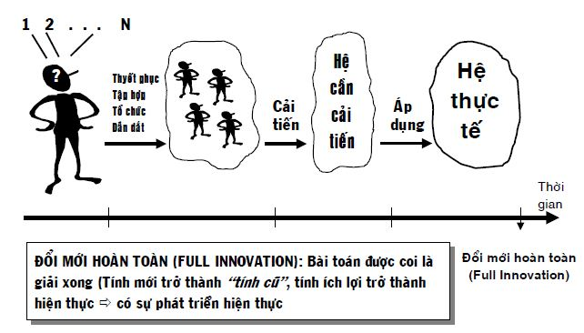
Hình 41: Tóm tắt quá trình thực hiện giải quyết vấn đề
Giai đoạn A: Xác định tình huống vấn đề xuất phát ưu tiên cần giải
Giai đoạn này yêu cầu cá nhân phát hiện, phát biểu các tình huống vấn đề xuất phát mà mình cần giải quyết rồi lọc ra tình huống vấn đề xuất phát ưu tiên cần giải. Để làm điều đó, cá nhân phải phát biểu các mục đích muốn đạt, phản ánh các nhu cầu cấp bách cần thỏa mãn. Tiếp theo, cá nhân phải thu thập thông tin, phát biểu các tình huống vấn đề xuất phát có thể có, rồi suy nghĩ cân nhắc lựa chọn, có tính đến các nguồn lực (hiểu theo nghĩa rộng), để ra quyết định: Tình huống nào là tình huống vấn đề xuất phát ưu tiên cần tập trung giải trước. Nói cách khác, người giải cần xác định, hệ cần cải tiến là hệ nào, xem Hình 41. Nhìn theo quan điểm thông tin, giai đoạn A là giai đoạn biến các thông tin đầu vào (các lời phát biểu mục đích, kiến thức trong đầu cá nhân, các thông tin về điều kiện, hoàn cảnh, phương tiện…) liên quan đến các tình huống vấn đề xuất phát thành các thông tin đầu ra: lời phát biểu tình huống vấn đề xuất phát ưu tiên.
Giai đoạn B: Xác định cách tiếp cận đối với tình huống vấn đề xuất phát ưu tiên (hay còn gọi là xác định bài toán cụ thể đúng cần giải)
Tương tự với giai đoạn A, giai đoạn B biến các thông tin đầu vào, có trong lời phát biểu tình huống vấn đề xuất phát ưu tiên và các thông tin liên quan, thành các thông tin đầu ra dưới dạng lời phát biểu bài toán cụ thể đúng cần giải. Các thông tin liên quan bao gồm cả thông tin về hệ thực tế, là nơi sẽ tiếp nhận thành phẩm trong tương lai. Bài toán cụ thể đúng cần giải là một trong các bài toán có trong phổ các bài toán cụ thể, suy ra từ tình huống vấn đề xuất phát ưu tiên, khi sử dụng các cách tiếp cận khác nhau, xem Hình 42.
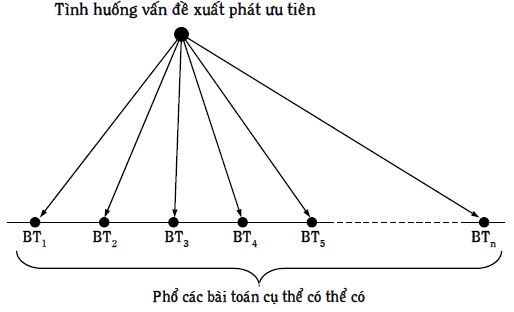
Hình 42: Phổ các bài toán cụ thể có thể có
Giai đoạn C: Tìm thông tin giải bài toán cụ thể đúng cần giải
Giai đoạn này, rõ ràng, liên quan trực tiếp đến thông tin. Hoàn thành giai đoạn này, người giải có trong tay các thông tin đầu ra cần thiết, kể cả thông tin về hệ thực tế, nơi sẽ tiếp nhận thành phẩm trong tương lai, giúp tìm ý tưởng giải bài toán cụ thể đúng cần giải.
Giai đoạn D: Tìm ý tưởng giải bài toán cụ thể đúng cần giải
Giai đoạn D đòi hỏi biến các thông tin đầu vào có trong lời phát biểu bài toán cụ thể đúng cần giải và các thông tin tìm được ở giai đoạn C thành thông tin đầu ra dưới dạng lời phát biểu ý tưởng giải bài toán, là một trong số N ý tưởng thu được, xem Hình 41. Đấy là ý tưởng cuối cùng, được quyết định dùng để cải tiến hệ cần cải tiến.
Giai đoạn E: Phát triển ý tưởng thành thành phẩm
Ở đây, người giải phải biến các thông tin đầu vào có trong lời phát biểu ý tưởng giải bài toán thành các thông tin đầu ra, chỉ ra cách tiến hành, thực hiện (hành động) để có được thành phẩm. Trong đó, có việc người giải bài toán phải thuyết phục, tập hợp, tổ chức và dẫn dắt những người cùng cộng tác với mình hành động, thực hiện ý tưởng. Thành phẩm được hiểu là hệ cần cải tiến sau khi cải tiến xong, xem Hình 41.
Giai đoạn G: Áp dụng thành phẩm vào hệ thực tế
Lúc này, người giải, cùng các thông tin về thành phẩm, hệ thực tế, tương tác giữa thành phẩm và hệ thực tế, biến chúng (các thông tin đầu vào) thành các thông tin đầu ra. Đấy là những thông tin hướng dẫn các hành động để cuối cùng, hệ thực tế tiếp nhận thành phẩm một cách đầy đủ, ổn định và bền vững (đổi mới hoàn toàn), xem Hình 41.
Các hiện tượng tâm lý, các công cụ giúp biến đổi thông tin thành tri thức có trong đầu của người giải đều tham gia tích cực trong tất cả sáu giai đoạn nói trên, ở đó có các quá trình tìm, truyền, biến đổi… thông tin.
Một cách khái quát, mô hình của quá trình suy nghĩ giải quyết vấn đề và ra quyết định được trình bày trên Hình 43. Ở đây, khái niệm bài toán được hiểu theo định nghĩa đã cho trong mục 1.2 Một số khái niệm cơ bản và các ý nghĩa của chúng của quyển một. Mô hình này dùng cho bài toán nói chung, hiểu theo nghĩa, có thể dùng cho một phần của mỗi giai đoạn hoặc mỗi giai đoạn nếu như ở đó có bài toán chứ không phải chỉ dành cho sáu giai đoạn một cách “trọn gói”.
Mô hình cho chúng ta biết, thông tin có trong lời phát biểu bài toán (thông tin đầu vào), trước hết phải được tiếp thu nhằm mục đích hiểu bài toán. Để hiểu bài toán, người giải phải rút những thông tin, kiến thức lưu giữ trong trí nhớ ra, đồng thời, có thông tin gì mới thì gởi vào trí nhớ để dùng trong tương lai, khi cần thiết. Nói cách khác, mối quan hệ giữa khối tiếp nhận thông tin và trí nhớ là mối quan hệ hai chiều: Rút thông tin ra và gởi thông tin vào (xem các mũi tên tương ứng trên Hình 43).
Sau khi hiểu bài toán, người giải chuyển sang giai đoạn xử lý thông tin để có được những thông tin sâu sắc hơn nữa từ những thông tin đầu vào có trong lời phát biểu bài toán. Đây chính là giai đoạn suy luận (suy lý) với những cách xử lý thông tin như phân loại, so sánh, quy nạp, diễn dịch, phân tích, tổng hợp, cụ thể hóa, trừu tượng hóa, đặc biệt hóa, khái quát hóa. Mối quan hệ giữa giai đoạn xử lý thông tin và trí nhớ cũng là mối quan hệ hai chiều.
Trên cơ sở những thông tin sâu sắc hơn những thông tin ban đầu, có được nhờ giai đoạn xử lý thông tin, người suy nghĩ chuyển sang giai đoạn phát ý tưởng giải bài toán (thông tin đầu ra). Mối quan hệ giữa giai đoạn phát ý tưởng và trí nhớ cũng là mối quan hệ hai chiều như ở hai giai đoạn trước: Tiếp thu và xử lý thông tin.
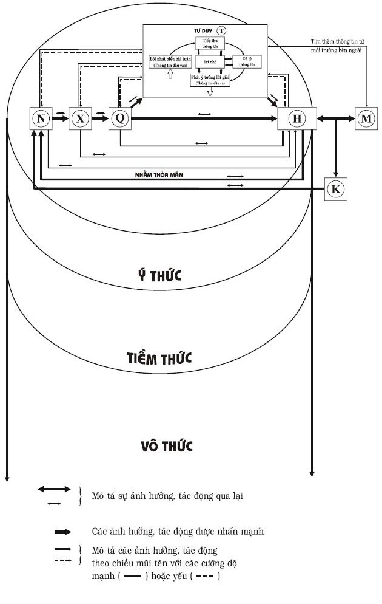
Hình 43: Mô hình tư duy trong ngữ cảnh của mô hình nhu cầu–hành động
Trường hợp lý tưởng, người giải bài toán chỉ cần đi một lượt của quá trình suy nghĩ là có ý tưởng lời giải đúng.
Mô hình của quá trình suy nghĩ giải quyết vấn đề và ra quyết định, trình bày trên Hình 43, cần được hiểu trong ngữ cảnh của mô hình nhu cầu–hành động (xem Hình 39). Điều này có nghĩa, khi người viết trình bày tư duy hoặc bạn đọc xem xét tư duy, chúng ta phải luôn nhớ rằng giữa tư duy và các yếu tố độc lập khác như nhu cầu, xúc cảm, mong muốn tự nguyện có các mối liên kết. Do vậy, để có ý tưởng đúng, cao hơn nữa, để đổi mới hoàn toàn, chúng ta cần phải tính đến toàn bộ hoạt động của mô hình nhu cầu–hành động, chứ không chỉ riêng một mình tư duy. Tuy vậy, để dễ trình bày, người viết tách riêng phần tư duy ra thành Hình 44.
Như chúng ta đã biết, các ý tưởng ban đầu thường là sai, do vậy, người giải thường phải trở lại các giai đoạn trước hoặc phải lặp đi, lặp lại toàn bộ quá trình suy nghĩ nhiều lần. Chưa kể, ở bất kỳ giai đoạn nào của quá trình suy nghĩ, người giải có thể nảy ra ý nghĩ phải tìm thêm thông tin từ môi trường bên ngoài, xem Hình 43 và Hình 44. Ở đây, môi trường bên ngoài được hiểu là tất cả những gì nằm ngoài lời phát biểu bài toán và ngoài bộ óc của người giải. Môi trường bên ngoài có thể là Internet, thư viện, các đồng nghiệp, phong cảnh, vật dụng, thời tiết…
Sau nhiều lần suy nghĩ và hành động thử và sai (vì thực tiễn là tiêu chuẩn của chân lý, phải hành động thực hiện ý tưởng để biết đúng, sai), cuối cùng, người giải phát được ý tưởng dẫn đến lời giải đúng, xem Hình 44. Bạn đọc có thể so sánh Hình 44 với Hình 3: Phương pháp thử và sai trong mục 2.2 Phương pháp thử và sai (Trial and Error Method) của quyển một để thấy rằng, Hình 44 là hình mô tả phương pháp thử và sai chi tiết, cụ thể hơn.
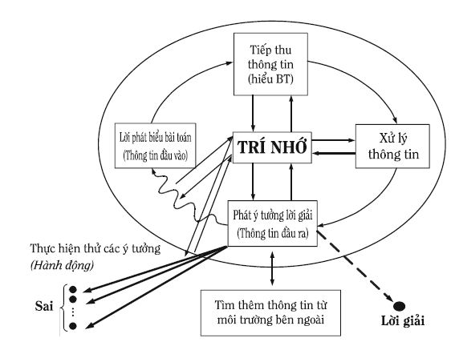
Hình 44: Sơ đồ phương pháp thử và sai, được chi tiết hóa dựa trên mô hình tư duy của Hình 43
Nếu như ở mục 5.7 Mô hình nhu cầu – hành động và các khả năng của tư duy nói chung và mục nhỏ 5.7.3 Mối quan hệ giữa tư duy và các yếu tố độc lập khác nói riêng, chúng ta đã coi tư duy như một yếu tố (một ô trên Hình 39) thì từ nay trở đi, theo mô hình tư duy (xem Hình 43) chúng ta phải coi tư duy như một hệ thống với cấu trúc phức tạp. Trong nhiều trường hợp, thay vì xem xét chung chung, chúng ta cần phải đi vào cụ thể hơn. Ví dụ, nói xúc cảm ảnh hưởng lên tư duy là nói chung chung. Cụ thể hơn, xúc cảm ảnh hưởng lên trí nhớ, tiếp thu thông tin, xử lý thông tin, phát ý tưởng và sự ảnh hưởng này có thể xảy ra ở ba mức: Ý thức, tiềm thức và vô thức. Chưa kể, có khi cần cụ thể hơn nữa, như còn phải tính đến loại (tốt, xấu) và cường độ ảnh hưởng khác nhau của cùng một xúc cảm lên các giai đoạn riêng rẽ (tiếp thu thông tin, xử lý thông tin, phát ý tưởng) khác nhau. Trong các mục tiếp theo, khi đi sâu vào từng giai đoạn, chúng ta còn thấy mỗi giai đoạn cũng có cấu trúc của nó. Thế giới bên trong mỗi người nói chung, tư duy nói riêng, quả thật bao la và phức tạp. Trong khi đó, nếu giáo dục, đào tạo chỉ đề ra yêu cầu học thuộc lòng đối với người học, giáo dục, đào tạo đó chỉ mới tác động và khai thác trí nhớ. Rõ ràng, những tiềm năng to lớn khác của thế giới bên trong con người không được phát huy, con người trở nên què quặt về thế giới tinh thần, tâm hồn. Điều này cũng có nghĩa, người ta đã đối xử với con người một cách vô nhân đạo. Thay vì có sự phát triển, chúng ta sẽ có sự suy thoái.
6.3 Quá trình truyền và biến đổi thông tin
6.3.1 Thông tin
- Tin học (khoa học thông tin) là lĩnh vực bao gồm các phương pháp khoa học, công nghệ nghiên cứu và phát triển các phương tiện liên quan đến thông tin, các quá trình hình thành, thu thập, truyền, biến đổi, lưu trữ, tích lũy và nhân bản thông tin, được gọi chung là các quá trình thông tin.
Khái niệm thông tin là khái niệm cơ bản nhưng chưa có định nghĩa được chấp nhận chung. Các định nghĩa của khái niệm thông tin có thể chia thành hai nhóm, xuất phát từ hai quan điểm khác nhau. Theo quan điểm thứ nhất, thông tin và các quá trình thông tin chỉ nảy sinh ở giai đoạn nhất định trong sự phát triển các hình thức vận động của vật chất. Cụ thể, chúng chỉ có trong các dạng vận động sinh học và xã hội, không có trong thế giới vô cơ. Quan điểm thứ hai cho rằng thông tin và các quá trình thông tin là thuộc tính của tất cả các hình thức vận động của vật chất. Dưới đây, người viết dẫn ra bốn trong số rất nhiều các định nghĩa của khái niệm thông tin. Ba định nghĩa đầu thuộc quan điểm thứ nhất và định nghĩa thứ tư thuộc quan điểm thứ hai.
1. Thông tin là hệ thống các thông báo và lệnh làm giảm trạng thái bất định của chủ thể tiếp nhận thông tin.
Trạng thái bất định là trạng thái, ở đó chủ thể dự đoán vài kết quả có thể có và không biết kết quả nào trong số đó chắc chắn xảy ra. Nhờ thông tin, chủ thể dự đoán chính xác hơn. Nói cách khác, trạng thái bất định của chủ thể giảm đi.
2. Thông tin là tất cả những gì bổ sung vào các kiến thức, niềm tin và giả thiết của chủ thể nhờ nhận thông tin đó.
Thông tin là phương thức để tích lũy kiến thức.
3. Thông tin là bất kỳ kích thích nào lên chủ thể mà cuối cùng chủ thể cảm nhận được.
Các kích thích có thể đến từ bên ngoài, tác động lên các cơ quan cảm giác như chữ viết, ký hiệu, hình vẽ, lời nói, âm thanh nói chung, mùi, vị, nóng, lạnh… Các kích thích có thể được tạo ra bên trong như các hình ảnh, biểu tượng, ý nghĩ, nói thầm trong đầu, các xúc cảm…
4. Thông tin là nội dung của tất cả những thay đổi, được lưu giữ hoặc/và truyền đi tiếp của đối tượng phản ánh (hiểu theo nghĩa rộng nhất), tạo thành bởi tác động của đối tượng bị phản ánh (hiểu theo nghĩa rộng nhất) lên đối tượng phản ánh.
Người viết cố gắng giải thích rõ hơn định nghĩa thứ tư. Từ “đối tượng” được hiểu theo nghĩa rộng nhất, nó có thể là bất kỳ cái gì. Tác động của đối tượng này lên đối tượng kia, thực chất là tương tác: Tác động qua lại giữa hai đối tượng, chứ không chỉ là tác động một chiều. Do tương tác, về mặt nguyên tắc, cả hai đều có những thay đổi. Nội dung của những thay đổi này là thông tin. Những thay đổi này có thể phân ra theo hai cách xem xét (tương ứng với hai chiều tác động) bổ sung cho nhau. Giả sử ta gọi đối tượng thứ nhất là đối tượng bị phản ánh, lúc đó, đối tượng thứ hai là đối tượng phản ánh và chiều tác động được xem xét ở đây là tác động từ đối tượng thứ nhất lên đối tượng thứ hai, tạo ra những thay đổi trong đối tượng thứ hai hoặc/và truyền đi tiếp. Nội dung những thay đổi này là thông tin về đối tượng thứ nhất (đối tượng bị phản ánh).
Tương tự, khi tương tác xảy ra, nếu xem xét tác động ngược lại từ đối tượng thứ hai lên đối tượng thứ nhất. Lúc này có sự chuyển đổi vai trò: Đối tượng thứ hai trở thành đối tượng bị phản ánh và đối tượng thứ nhất trở thành đối tượng phản ánh. Nội dung những thay đổi trong đối tượng thứ nhất, do tác động của đối tượng thứ hai, là thông tin về đối tượng thứ hai. Nói cách khác, trong quá trình tương tác của hai đối tượng, ngoài việc có thể có sự trao đổi chất, năng lượng còn có sự trao đổi thông tin: Thông tin truyền từ đối tượng thứ nhất sang đối tượng thứ hai và ngược lại. Tuy nhiên, ở đây có sự khác nhau về loại, số lượng, chất lượng, cách thức truyền thông tin trong hai chiều truyền đó.
Ví dụ, một thiên thạch rơi xuống bề mặt Trái Đất. Tương tác này dẫn đến những thay đổi: Thiên thạch bị vỡ ra thành năm mảnh chẳng hạn và trên bề mặt Trái Đất hình thành một hố sâu. Năm mảnh thiên thạch cùng với trọng lượng, kích thước, hình dạng… là sự phản ánh về phần bề mặt cho trước của Trái Đất nơi xảy ra va đập. Nội dung của sự phản ánh này là thông tin. Rõ ràng, nếu sự va đập xảy ra ở phần khác của bề mặt Trái Đất, thiên thạch có thể còn nguyên vẹn hoặc vỡ ra nhiều mảnh hơn… Tương tự như vậy, hố sâu cùng với các đặc trưng như hình dạng, kích thước… tạo nên nội dung phản ánh về thiên thạch, chính là thông tin về thiên thạch.
- So sánh bốn định nghĩa, chúng ta thấy ba định nghĩa đầu dùng cho thế giới sinh vật, chủ yếu, cho con người. Trong đó, định nghĩa thứ nhất và thứ hai gần giống nhau và nhấn mạnh loại thông tin đặc biệt: Thông tin có ý nghĩa và mang lại ích lợi cho chủ thể tiếp nhận thông tin đó. Do vậy, hai định nghĩa này, trên thực tế, gần với định nghĩa khái niệm tri thức (của cá nhân), được trình bày trong mục nhỏ 3.3.3 Nguyên nhân thành công ở thế kỷ 21: Sáng tạo và đổi mới – Tri thức của quyển một.
Định nghĩa thứ tư của khái niệm thông tin khác ba định nghĩa kia ở những điểm sau:
Có nội dung rộng hơn, dùng cho mọi đối tượng của thế giới vật chất nói chung chứ không riêng gì cho thế giới sinh vật.
Cho rằng, thông tin tồn tại khách quan không phụ thuộc con người.
Không đề cập gì đến chủ thể tiếp nhận, sử dụng thông tin, cũng như các ý nghĩa và giá trị của thông tin.
Định nghĩa thứ tư mang tính khái quát cao hơn các định nghĩa khác, giúp các nhà nghiên cứu tiếp cận các quá trình thông tin ở mức triết học. Trong ý nghĩa này, thông tin liên quan đến sự đa dạng, tổ chức, cấu trúc, trật tự, tính không đồng nhất của vật chất và năng lượng trong không gian, thời gian.
Chúng ta phải xử sự ra sao khi một khái niệm được định nghĩa khác nhau?
Trừ trường hợp, trong các định nghĩa đưa ra có nhiều định nghĩa sai. Thông thường, một khái niệm được định nghĩa khác nhau chứng tỏ đối tượng được định nghĩa là đối tượng phức tạp. Với đối tượng phức tạp, các cách xem xét (tiếp cận) khác nhau của các nhà nghiên cứu phát hiện ra các khía cạnh, phương diện khác nhau, từ đó, xây dựng các định nghĩa khác nhau. Đây là chuyện bình thường, vì trong nhiều trường hợp, đặc biệt đối với các lĩnh vực mới, người ta chưa tìm ra cách xem xét tổng hợp tất cả các cách xem xét có thể. Người viết lấy trường hợp tương tự để giải thích. Giả sử, chúng ta có hai đối tượng: Đối tượng một là hình cầu, đối tượng hai có hình dạng phức tạp hơn. Với đối tượng thứ nhất, xem xét dưới bất kỳ góc độ nào, những người khác nhau đều thấy hình tròn. Với đối tượng thứ hai, rõ ràng, những người khác nhau, đứng ở những vị trí khác nhau sẽ thấy đối tượng đó có các hình thù khác nhau (các phương diện, khía cạnh khác nhau). Một ví dụ khác, con người là đối tượng phức tạp, liệu bạn đọc có thể đưa ra định nghĩa con người được tất cả mọi người tiếp nhận không? Trong khi chưa có định nghĩa được tiếp nhận chung, có lẽ, chúng ta nên làm như sau:
Tùy theo công việc của mình liên quan đến cách xem xét nào thì dùng định nghĩa của cách xem xét đó. Khi dùng, chúng ta cần lưu ý đến phạm vi áp dụng của định nghĩa để đừng dùng nó ra ngoài phạm vi áp dụng và kiểm tra các kết quả có được nhờ định nghĩa đó, xem có phù hợp với thực tế không. Khi cần, chúng ta có thể thay đổi cách xem xét, do vậy chuyển sang dùng định nghĩa khác tương ứng và làm tương tự như đã nói ở trên. Khi giao tiếp chúng ta cần nói rõ cho người nghe biết mình dùng định nghĩa gì và tìm hiểu định nghĩa mà người đối thoại dùng. Có khi, chúng ta phải thử dùng định nghĩa của người đối thoại để hiểu, từ đó mới có thể thảo luận hoặc tranh luận tiếp. Tóm lại, chúng ta nên nhìn và sử dụng các định nghĩa khác nhau về cùng một đối tượng như những gì có thể bổ sung, hỗ trợ nhau, rồi hoàn thiện dần các định nghĩa căn cứ vào các kết quả thực tiễn, hơn là ngay từ đầu chỉ giữ khư khư một cách xem xét theo một định nghĩa nhất định.
Trong bộ sách “Sáng tạo và đổi mới”, nếu như không có những chú thích riêng kèm theo, người viết sử dụng khái niệm thông tin theo định nghĩa thứ ba với nội dung rộng hơn: Những thông tin như vậy có thể là tri thức thấy ngay (giống định nghĩa một và hai); có thể là tri thức sau những biến đổi thông tin nhất định nhờ bộ óc mà không phải chủ thể nào cũng làm được; có thể chỉ là những kích thích vô nghĩa, vô giá trị đối với chủ thể nhưng trong tương lai lại thành tri thức; có thể chỉ là những kích thích vô nghĩa, vô giá trị trong suốt cuộc đời của chủ thể…
- Khi xem xét mô hình tư duy (Hình 43 và Hình 44), nhìn theo quan điểm thông tin, đập ngay vào mắt chúng ta là ở đây có quá trình truyền thông tin trong không gian, thời gian và quá trình biến đổi thông tin từ hình thức này sang hình thức khác. Vậy các quá trình trên xảy ra như thế nào? phụ thuộc vào những gì? làm sao để quá trình truyền thông tin thông suốt? Chúng ta cùng nhau tìm hiểu để trả lời những câu hỏi này, trước hết, nhờ lý thuyết thông tin (xem tiếp các mục nhỏ từ 6.3.2 đến 6.3.4).
Ngoài ra, mô hình tư duy còn phản ánh sự tương tự nhất định giữa các hoạt động của tư duy và máy tính điện tử nói riêng, điều khiển học (Cybernetics) nói chung (xem mục nhỏ 6.3.5 và Chương 7: Điều khiển học: Điều khiển hành động và thế giới bên trong con người sáng tạo).
6.3.2 Chuỗi truyền thông tin
Lý thuyết toán học về truyền thông tin (Mathematical Theory of Communication) hay còn gọi tắt là lý thuyết thông tin được C.E. Shannon công bố chính thức vào năm 1948. Như tên gọi, lý thuyết xây dựng bằng ngôn ngữ toán học. Nói đến toán học, bạn đọc có thể hình dung, thứ nhất, trong lý thuyết có nhiều hiện tượng thực tế được khái quát và lý tưởng hóa ở mức cao. Thứ hai, trong lý thuyết có nhiều công thức toán học mà không phải ai cũng thích làm việc với chúng. Trong bộ sách “Sáng tạo và đổi mới”, đề cập đến lý thuyết thông tin, người viết chỉ trình bày mô hình định tính quá trình truyền thông tin (hay còn gọi là chuỗi truyền thông tin) và các khái niệm liên quan nhằm giúp bạn đọc có thể áp dụng những ý tưởng của lý thuyết thông tin vào quá trình suy nghĩ của mình một cách phù hợp. Quá trình truyền thông tin được hiểu là quá trình tái tạo một cách chính xác hoặc gần chính xác với độ sai lệch chấp nhận được, thông tin có ở địa điểm này thành thông tin có ở địa điểm khác hoặc các địa điểm khác.
Chúng ta cùng hình dung một lớp học, ở đó thầy giáo đang giảng bài cho cả lớp nghe, có tiếng rì rầm của mấy học sinh nói chuyện riêng, tiếng còi, động cơ xe từ ngoài phố vọng vào. Ở đây có thông tin truyền từ thầy giáo đến học sinh. Quá trình truyền thông tin này có thể chi tiết hóa và đơn giản hóa cho dễ hiểu như sau:
Các thông tin xuất phát là các ý nghĩ có trong óc của thầy giáo. Chúng thể hiện thành lời nói của thầy truyền vào không khí. Sóng âm thanh lan truyền đi, đập vào màng nhĩ, ví dụ, của học sinh A biến thành các xung điện thần kinh chạy đến trung khu thần kinh: Học sinh A thu được thông tin từ thầy giáo gởi đến. Tuy nhiên, khi lời nói của thầy đến được học sinh A, lời nói đó không còn như ban đầu vì năng lượng âm thanh suy giảm trên đường đi và âm thanh lời nói của thầy tương tác với những âm thanh khác như tiếng học sinh nói chuyện riêng, tiếng còi, động cơ xe từ ngoài phố vọng vào. Chưa kể, lời nói của thầy và các tiếng động khác cùng lúc đập vào màng nhĩ học sinh A. Tất cả những điều nói trên làm cho thông tin học sinh A nhận được có phần sai lệch so với thông tin ban đầu gởi đi từ thầy giáo.
Bạn đọc có thể tự lấy thêm nhiều ví dụ khác về quá trình truyền thông tin và phân tích ra, bạn cũng thấy nhiều điểm tương tự như ví dụ nói trên.
C.E. Shannon đưa ra mô hình khái quát hóa các quá trình truyền thông tin cụ thể dưới dạng sơ đồ khối, xem Hình 45.
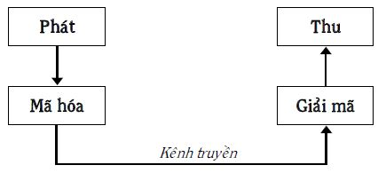
Hình 45: Mô hình một chuỗi truyền thông tin
Một chuỗi truyền thông tin, trong trường hợp chung có năm bộ phận: Phát, mã hóa, kênh truyền, giải mã và thu thông tin.
Bộ phận phát thông tin là bộ phận từ đó thông tin xuất phát để truyền đi, ví dụ, óc của thầy giáo. Bộ phận phát thông tin không nhất thiết phải là bộ phận khởi đầu tạo thông tin. Ví dụ, đài truyền hình phát hình ảnh của một trận bóng đá. Bộ phận phát là đài truyền hình còn sân vận động, nơi diễn ra trận đấu mới là nơi khởi đầu tạo ra thông tin.
Kênh truyền là môi trường hoặc phương tiện nối bộ phận phát và bộ phận thu thông tin để thông tin truyền được trong đó. Ví dụ, môi trường không khí giữa thầy giáo và học sinh.
Thông tin do bộ phận phát gởi đi thường có hình thức không thích hợp với kênh truyền. Ví dụ, các ý nghĩ trong đầu thầy giáo là thông tin của bộ phận phát (bộ óc). Thông tin dưới dạng các ý nghĩ không truyền được trong không khí (kênh truyền). Trong khi đó, âm thanh lại truyền tốt hơn nhiều. Ở đây, cần có bộ phận biến đổi hình thức thông tin từ ý nghĩ sang âm thanh thì thông tin mới có thể truyền được trong kênh truyền là môi trường không khí. Trên thực tế, thầy giáo đã biến đổi các ý nghĩ của mình thành âm thanh (lời nói), chuyển động trong không khí đến học sinh. Khái quát lên, bộ phận làm công việc biến đổi hình thức thông tin để phù hợp với kênh truyền được gọi là bộ phận mã hóa, còn hình thức thông tin được gọi là mã thông tin.
Thông tin đã được mã hóa di chuyển trong kênh truyền đến bộ phận thu, thường có mã không thích hợp với bộ phận thu. Điều này đòi hỏi phải có bộ phận giải mã: Hoặc biến đổi ngược trở lại thông tin đã được mã hóa thành hình thức ban đầu, hoặc biến đổi thành hình thức khác (mã khác) để bộ phận thu có thể thu được thông tin. Ví dụ, âm thanh lời nói của thầy giáo đập vào màng nhĩ của học sinh A. Màng nhĩ làm công việc giải mã: Biến đổi âm thanh thành các xung điện thần kinh, thích hợp với trung khu thần kinh là nơi thu thông tin.
Bộ phận thu thông tin có thể lưu giữ, tích lũy, sử dụng hoặc/và truyền thông tin đi tiếp. Thực tế cho thấy, thông tin có thể truyền theo nhiều chuỗi nối tiếp nhau, xem Hình 46.
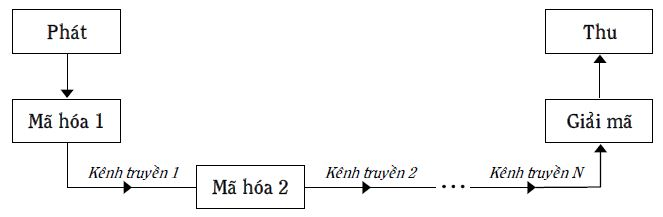
Hình 46: Các chuỗi truyền thông tin
Ví dụ, bạn gọi điện thoại hữu tuyến cho một người nào đó. Ở đây, có ba kênh truyền. Kênh truyền thứ nhất là không khí giữa miệng bạn và màng rung ống nói điện thoại của bạn. Kênh truyền thứ hai là dây điện nối điện thoại của bạn với điện thoại của người bạn gọi. Kênh truyền thứ ba là không khí giữa màng rung ống nghe điện thoại của người bạn gọi và màng nhĩ của người đó. Khi bạn nói vào ống nói điện thoại của bạn, tiếng nói của bạn chính là các ý nghĩ của bạn được mã hóa lần thứ nhất dưới dạng âm thanh truyền trong kênh truyền thứ nhất. Âm thanh này đập vào màng rung của ống nói điện thoại của bạn, được mã hóa lần thứ hai thành tín hiệu điện truyền trong dây dẫn (kênh truyền thứ hai) sang đến ống nghe của người bạn gọi. Các tín hiệu điện làm dao động màng rung của ống nghe, biến đổi chúng thành âm thanh (giải mã lần thứ nhất). Âm thanh truyền trong không khí (kênh truyền thứ ba) làm dao động các tế bào lông của màng nhĩ, biến thành các xung điện thần kinh trong não (giải mã lần thứ hai), được trung khu thần kinh của người bạn gọi thu: Người bạn gọi nhận được thông tin là các ý nghĩ của bạn gởi đến.
Quá trình truyền thông tin lý tưởng là thông tin gởi đi từ bộ phận phát được tái tạo một cách chính xác khi đến bộ phận thu, nơi nhận thông tin ấy, bất chấp thông tin phải di chuyển trong không gian, thời gian và trải qua nhiều biến đổi (các lần mã hóa và giải mã).
Thực tế không lý tưởng như vậy vì quá trình truyền thông tin luôn luôn bị những tác động làm sai lệch thông tin. Người ta gọi chung những tác động này là nhiễu hay tiếng ồn (Noise). Nhiễu có thể có nguồn gốc từ bên ngoài (nhiễu ngoại) như tiếng rì rầm của mấy học sinh nói chuyện riêng và tiếng còi, động cơ xe từ ngoài phố vọng vào trong ví dụ lớp học. Nhiễu có thể ở trong chính chuỗi truyền thông tin (nhiễu nội) vì các bộ phận của chuỗi truyền thông tin không hoàn hảo. Ví dụ, môi trường không khí, nơi âm thanh lời nói truyền qua có thể không đồng nhất, dẫn đến những sai lệch thông tin nhất định. Hoặc, những người thuộc các vùng, miền khác nhau thì phát âm khác nhau, cũng có thể tạo ra nhiễu làm sai lệch thông tin.
Xung quanh việc truyền thông tin còn có những yêu cầu khác ngoài yêu cầu về độ chính xác vừa nói mà người viết sẽ gộp chung chúng lại và đặt tên là tính thông suốt. Mục nhỏ tiếp theo đây dành nói về tính thông suốt.
6.3.3 Một số điểm cần lưu ý để thông tin truyền thông suốt
Thuật ngữ “tính thông suốt” của quá trình truyền thông tin được hiểu đồng thời các nghĩa: Thông tin truyền tin cậy (chính xác, đến đúng nơi, đúng lúc) và đáp ứng kịp thời các đòi hỏi ngày càng cao của thực tế như truyền ngày càng nhanh, càng nhiều, chi phí ngày càng giảm.
Tính thông suốt của quá trình truyền thông tin phụ thuộc vào những gì? Căn cứ vào mô hình chuỗi truyền thông tin (xem Hình 45), tính thông suốt phụ thuộc vào năm bộ phận cùng các đại lượng liên quan:
1. Bộ phận phát với đại lượng tốc độ phát thông tin được hiểu là lượng thông tin được phát ra trong một đơn vị thời gian (1 giây chẳng hạn).
2. Bộ phận mã hóa có loại mã và tốc độ mã hóa (lượng thông tin được mã hóa trong một đơn vị thời gian).
3. Kênh truyền có loại kênh; tốc độ truyền trong kênh, là lượng thông tin qua kênh truyền trong một đơn vị thời gian và khả năng thông qua của kênh truyền là tốc độ cực đại truyền trong kênh có thể đạt được trong trường hợp lý tưởng hoặc có nhiễu, tùy theo sự xem xét cụ thể.
4. Bộ phận giải mã với các đại lượng như loại mã, tốc độ giải mã (lượng thông tin được giải mã trong một đơn vị thời gian).
5. Bộ phận thu với loại mã có thể thu được và tốc độ thu (lượng thông tin nhận được trong một đơn vị thời gian).
Ngoài ra, còn cần phải tính đến nhiễu với loại nhiễu, cường độ nhiễu, tỷ lệ nhiễu so với tín hiệu. Để thông tin truyền chính xác, người ta còn phải tạo ra độ dư (thừa) nhất định, tức là số lượng các tín hiệu cần thiết để truyền thông tin trên thực tế lớn hơn số lượng các tín hiệu đòi hỏi theo lý thuyết.
Mới thoạt nhìn, chúng ta có thể nghĩ rằng, để làm tăng tính thông suốt cần làm tăng giá trị của các đại lượng như tốc độ phát, tốc độ mã hóa, tốc độ truyền, khả năng thông qua, tốc độ giải mã, tốc độ thu, số lượng các bộ phận thu (càng nhiều nơi nhận và sử dụng thông tin thì chi phí càng giảm) và giảm ảnh hưởng của nhiễu, giảm độ dư.
Quả thật, người ta đã làm được rất nhiều việc và đạt được nhiều thành công theo hướng này. Ví dụ, chúng ta biết rằng, tốc độ lớn nhất có thể có là tốc độ của ánh sáng truyền trong chân không nói riêng, của sóng điện từ nói chung. Vậy nếu thông tin có thể mã hóa dưới dạng sóng điện từ, với tốc độ mã hóa bằng tốc độ sóng điện từ thì nó sẽ được truyền đi với tốc độ sóng điện từ. Tại nơi đến, tín hiệu được giải mã với tốc độ sóng điện từ và được thu nhận cũng bằng tốc độ sóng điện từ. Rõ ràng, tất cả những điều này giúp làm tăng tính thông suốt của toàn bộ quá trình truyền thông tin. Nhờ vậy, không phải ngẫu nhiên, ngày nay người ta gởi fax, thư điện tử thay thế cho cách gởi thư truyền thống. Các đơn đặt hàng, chào hàng, tài liệu liên quan, giấy chuyển ngân… hay gọi chung là các thông tin giao dịch thương mại chuyển động với tốc độ “rùa bò” trước đây nay trở thành thương mại điện tử với tốc độ truyền thông tin bằng tốc độ ánh sáng…
Tuy vậy, đi vào cụ thể, các nhà khoa học, công nghệ, thiết kế đã, đang và sẽ phải giải quyết nhiều vấn đề liên quan đến chính các đại lượng liệt kê ở trên vì chúng có thể mâu thuẫn nhau, ảnh hưởng xấu đến tính thông suốt của toàn bộ chuỗi truyền thông tin. Ví dụ, bạn chọn được loại mã thích hợp với kênh truyền nhưng tốc độ mã hóa lại chậm (bạn thử nhớ lại thời kỳ nạp dữ liệu vào máy tính bằng cách đục lỗ các bìa); hoặc bạn có loại mã thích hợp, đồng thời tốc độ mã hóa cao dẫn đến việc lượng thông tin truyền trong kênh lớn hơn khả năng thông qua của kênh truyền, gây “nghẽn mạch”, mà kênh truyền khác có khả năng thông qua phù hợp lại chưa được chế tạo hoặc giá quá cao dẫn đến tăng chi phí không chấp nhận được…
6.3.4 Các ích lợi và hạn chế của lý thuyết thông tin đối với tư duy sáng tạo
Từ khi ra đời, nhiều ý tưởng của lý thuyết thông tin được sử dụng trong điều khiển học, trong các hệ thống điều khiển phức tạp, ở đó không có thông tin thì không có các lời giải cho các bài toán điều khiển. Các ý tưởng của lý thuyết thông tin còn được sử dụng trong ngôn ngữ học, sinh học, tâm lý học, xã hội học, sinh lý học thần kinh, di truyền học và thu được nhiều kết quả thú vị. Ví dụ, chúng giúp phát biểu quy luật về tỷ lệ của cảm giác với lôgarit của kích thích trong sinh lý học thần kinh. Hoặc, các dây thần kinh truyền tín hiệu từ các đầu tiếp nhận cảm giác đến não bộ hoạt động theo nguyên tắc kênh truyền lý tưởng được mô tả trong lý thuyết thông tin của C.E. Shannon.
Quay trở lại mô hình tư duy trên Hình 43 và Hình 44, chúng ta thấy trong tư duy có quá trình truyền và biến đổi thông tin đầu vào (có trong lời phát biểu bài toán) cùng với thông tin từ môi trường bên ngoài thành thông tin đầu ra (lời phát biểu ý tưởng lời giải). Đi sâu hơn nữa, chúng ta thấy, quá trình truyền và biến đổi thông tin trong tư duy gồm hai quá trình, có thể xảy ra xen kẽ nhau hoặc cùng một lúc. Chúng đều góp phần làm tăng tốc độ quá trình suy nghĩ giải quyết vấn đề và ra quyết định.
Quá trình thứ nhất chính là quá trình truyền và biến đổi thông tin, hiểu theo nghĩa phát, mã hóa, truyền, giải mã và thu thông tin, là đối tượng nghiên cứu và tác động của lý thuyết thông tin. Từ nay trở đi, người viết đặt tên cho quá trình này là quá trình một và viết tắt là QT1. Tính thông suốt của quá trình truyền thông tin nói chung đã được thảo luận trong mục nhỏ 6.3.3. Ở đây, chúng ta sẽ áp dụng những luận điểm ấy cho QT1.
Quá trình thứ hai là quá trình biến đổi thông tin thành tri thức (tư duy sáng tạo), hiểu theo nghĩa biến thông tin tiếp thu thành thông tin có đồng thời tính mới và tính ích lợi so với thông tin tiếp thu. Từ nay trở đi, người viết đặt tên cho quá trình này là quá trình hai và viết tắt là QT2.
Đầu tiên chúng ta xem xét QT1, khi người giải suy nghĩ giải bài toán. Nhìn dưới góc độ các chuỗi truyền thông tin (xem các Hình 45, Hình 46), các loại kênh dẫn thông tin từ ngoài vào trong gồm: 1) từ môi trường bên ngoài đến các giác quan, 2) từ các giác quan lên trung khu thần kinh tiếp thu, 3) các kênh truyền các ý nghĩ dưới dạng các xung điện chạy trong các khu vực tương ứng của vỏ não. Tương tự như vậy, có cả những kênh dẫn thông tin theo chiều ngược lại: Từ trong ra ngoài. Nếu như các kênh truyền loại một (từ môi trường bên ngoài đến các giác quan) có thể tăng tính thông suốt một cách dễ dàng nhờ các phương tiện ngày càng hiện đại của công nghệ thông tin (xem mục nhỏ 6.3.3) thì hai loại kênh sau (nằm trong hệ thần kinh) khó thay đổi hơn nhiều. Tương tự như vậy đối với những kênh dẫn thông tin từ trong ra ngoài.
Bản thân người suy nghĩ giải bài toán, tùy từng lúc, còn phải thực hiện chức năng của một, hai, ba hay cả bốn bộ phận kia của chuỗi truyền thông tin: Phát, mã hóa, giải mã, thu.
Nhìn chung, có thể luyện tập để tăng tốc độ thu, phát thông tin của các bộ phận cơ thể người như: Nghe, nhìn, viết, nói, làm các động tác ra hiệu… (ví dụ, các phương pháp đọc nhanh – Speed Reading) nhưng chưa có những đột phá đáng kể. Làm tăng tốc độ thu, phát, truyền các thông tin là các ý nghĩ chạy trong hệ thần kinh của người giải bài toán còn là đề tài của các truyện khoa học viễn tưởng.
Các bộ phận mà người suy nghĩ có thể tác động một cách chủ động hơn là mã hóa và giải mã, hay nói chung biến đổi thông tin ở hình thức này thành thông tin ở hình thức khác. Làm tốt điều này, thông tin ở hình thức mới sẽ được xử lý nhanh hơn nhờ những kiến thức (lôgích các quy luật) của một hoặc nhóm khoa học nào đó. Ví dụ, bài toán dưới đây có các thông tin dưới dạng là các từ, ngữ dùng trong đời sống hàng ngày:
“Vừa gà vừa chó
Bó lại cho tròn
Ba mươi sáu con
Một trăm chân chẵn
Hỏi mấy gà, mấy chó?”
Nếu người suy nghĩ, biến đổi (phiên dịch) được hình thức thông tin nói trên (ngôn ngữ đời thường) sang hình thức (ngôn ngữ) toán học thì người đó có được cơ hội lớn: Sử dụng các kiến thức (lôgích) toán học để xử lý thông tin. Do vậy, bài toán cho trước được giải nhanh hơn. Nói cách khác, tính thông suốt tăng lên. Đi vào cụ thể, chúng ta có:
Đặt số gà là x, vậy số chó là (36 - x). Từ đây ta có phương trình:
2x + 4(36 - x) = 100
2x +144 -4x = 100
2x = 44
Số gà: x = 22
Số chó: 36 - 22 = 14
Bài toán nói trên thuộc các bài toán, giải được nhờ biến đổi hình thức thông tin (mã hóa, giải mã) để chuyển chúng thành các bài toán chuyên môn với việc sử dụng ngay các kiến thức chuyên môn (thực chất là sử dụng các phương pháp giải đã có sẵn trong chuyên môn đó). Chúng chiếm số lượng rất nhỏ trong tổng số các vấn đề của cá nhân gặp trong cuộc đời và chỉ là một loại. Trong khi đó, các loại bài toán có thể có trên thực tế đa dạng hơn rất nhiều và liên quan chủ yếu đến quá trình biến đổi thông tin thành tri thức (QT2). Trong ý nghĩa này, lý thuyết thông tin có nhiều hạn chế. Dưới đây, người viết liệt kê một số trong các hạn chế đó:
1. Có sự khác nhau về mặt nguyên tắc giữa yêu cầu của quá trình truyền thông tin: Tái tạo thông tin một cách chính xác (xem mục nhỏ 6.3.2) và yêu cầu của QT2: Tạo ra thông tin khác thông tin ban đầu (thông tin có tính mới) và đem lại ích lợi (giúp giải bài toán).
Công bằng mà nói, QT1 có những yếu tố (các loại mã, các loại nhiễu) có thể tạo ra thông tin có tính mới ở các giai đoạn như mã hóa, truyền, giải mã và trong một số trường hợp cụ thể, thông tin mới đó đem lại ích lợi (giúp giải bài toán). Bài toán “gà, chó” ở trên là một trong các ví dụ. Hoặc, nhiễu do truyền các thông tin di truyền có thể tạo ra đột biến giúp cá thể cho trước thích nghi hơn với môi trường. Tuy vậy, đấy không phải là đối tượng và mục đích của lý thuyết thông tin. Các ví dụ về nhiễu tạo các biến dị có lợi là những trường hợp may mắn đặc biệt, mang dấu ấn của phương pháp thử và sai.
2. Lý thuyết thông tin tập trung vào quá trình truyền lượng thông tin trừu tượng tính theo đơn vị bit trong kênh liên lạc mà không quan tâm đến chính thông tin về các mặt như nội dung, ý nghĩa của thông tin cụ thể cho người cụ thể sử dụng thông tin đó. Những điều mà lý thuyết thông tin không quan tâm lại là những điều quan trọng đối với QT2.
3. Nếu như các bộ phận trong chuỗi truyền thông tin được coi mang tính khách quan nhất định thì con người, khi đóng vai trò của các bộ phận truyền và biến đổi thông tin lại chủ quan. Ví dụ, con người cụ thể rất quan tâm giá trị của các thông tin làm thỏa mãn các nhu cầu cá nhân, các thông tin đem lại các xúc cảm dương cho chính bản thân mình. Do vậy, sử dụng các ý tưởng của lý thuyết thông tin cho quá trình tư duy cần luôn chú ý đến phạm vi áp dụng của các ý tưởng đó. Hoặc phải tạo ra các biến thể của các ý tưởng đó, tương tự như ý tưởng mã hóa trong bài toán “gà, chó”. Lúc này, khái niệm mã hóa được hiểu theo nghĩa rộng là biến đổi thông tin ở hình thức này thành thông tin ở hình thức khác với sự thay đổi nhất định, chứ không còn hiểu theo nghĩa hẹp ban đầu của lý thuyết thông tin.
Thế còn các máy tính điện tử thì sao? Chúng giúp gì cho quá trình suy nghĩ giải quyết vấn đề và ra quyết định?
6.3.5 Máy tính giải quyết vấn đề và tư duy sáng tạo
Kể từ năm 1945 đến nay, máy tính điện tử đã trải qua năm giai đoạn, hay còn gọi là năm thế hệ với rất nhiều cải tiến và thành tựu đạt được. Trong mục nhỏ này, trình bày về máy tính, người viết chỉ nhấn mạnh khía cạnh giải quyết vấn đề và so sánh nó với tư duy sáng tạo của con người. Tuy trải qua rất nhiều cải tiến, nguyên lý hoạt động của máy tính có thể biểu diễn thành sơ đồ khối trên Hình 47. Bạn đọc thử so sánh Hình 47 với các Hình 43 và Hình 44.
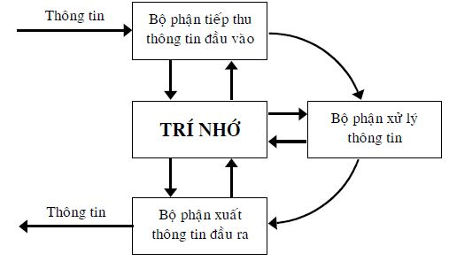
Hình 47: Sơ đồ nguyên lý hoạt động của máy tính
Trong các máy tính thế hệ thứ nhất (từ 1945 đến những năm 1950) sử dụng các bóng đèn điện tử chân không, bộ phận xử lý thông tin thực hiện hai hay cả bốn phép tính số học và vài thao tác lôgích kiểu như dịch chuyển vị trí của số về tay phải hay tay trái. Bảo đảm chương trình hệ thống hầu như không có. Tốc độ tính toán đạt khoảng 104 phép tính/giây. Các máy tính thế hệ một dùng để giải các bài toán tính toán số học.
Đối với các máy tính thế hệ thứ hai (đến những năm đầu của những năm 1960), sử dụng các linh kiện bán dẫn, đã xuất hiện các ngôn ngữ thuật toán và các phương tiện tự động dịch các ngôn ngữ này sang ngôn ngữ bên trong máy tính. Thư viện các chương trình chuẩn được tạo ra và đưa vào bộ nhớ của máy tính, ví dụ chương trình giải hệ phương trình đại số tuyến tính, chương trình sắp xếp các dữ liệu theo thứ tự. Bộ phận xử lý thông tin, chủ yếu, vẫn thực hiện bốn phép tính số học. Tốc độ tính toán đạt khoảng 105 phép tính/giây. Các máy tính thế hệ hai sử dụng rộng rãi để giải các bài toán xử lý số liệu như lập danh mục, làm công việc kế toán, kiểm kê các hàng hóa trong kho…
Các máy tính thế hệ thứ ba (đến cuối những năm 1960), sử dụng các mạch tích hợp, đạt tốc độ đến 107 phép tính/giây. Các ngôn ngữ bậc cao phát triển mạnh. Người sử dụng có được khả năng giao tiếp với máy tính bằng cách sử dụng thông tin dưới dạng số cũng như dưới dạng đồ thị. Trong thời kỳ này, quan niệm về kênh truyền được áp dụng, cho phép nối các máy tính với nhau và đồng thời với các thiết bị thuộc môi trường bên ngoài tạo thành các tổ hợp khác nhau. Nhờ vậy, người sử dụng có được cấu hình các phương tiện kỹ thuật mong muốn, phục vụ cho các nhu cầu giải quyết các vấn đề cụ thể của mình.
Vào đầu những năm 1960, người ta nhận thức rõ rằng, các bài toán tính toán chiếm một phần rất nhỏ trong tổng số các bài toán mà máy tính có thể giải. Trong khi đó, ba phép tính lôgích của đại số Boole (đại số lôgích) là VÀ; HOẶC; KHÔNG có ý nghĩa chức năng với phạm vi áp dụng rất rộng: Tổ hợp những phép tính lôgích này và sắp xếp chúng theo sự tuần tự nhất định, người ta có thể tổ chức được bất kỳ quá trình xử lý thông tin nào, dù đấy là giải bài toán toán học, chứng minh định lý, quản lý sản xuất, chơi cờ hoặc làm thơ. Điều này có nghĩa, thiết bị có khả năng thực hiện ba phép tính nói trên mang tính vạn năng trong việc xử lý thông tin. Khó khăn nảy sinh khi thực hiện trên thực tế: Số lượng các chỉ dẫn (lệnh) cho mỗi phép tính VÀ; HOẶC; KHÔNG trở nên rất lớn không chấp nhận được. Điều này đòi hỏi phải xem xét lại các lệnh do bộ phận xử lý thông tin thực hiện.
Trong các máy tính thế hệ một và hai, các phép tính đại số Boole đã được kết hợp lại với nhau thành từng nhóm. Mỗi nhóm tương ứng với một lệnh, cho phép bằng một lệnh duy nhất thực hiện ngay một phép tính số học, ví dụ, cộng hai số lại với nhau. Tuy vậy, danh sách các lệnh vẫn còn nhiều, làm công việc sử dụng máy tính vẫn còn phức tạp.
Để giải quyết vấn đề nói trên, bắt đầu từ các máy tính thế hệ ba trở đi, người ta áp dụng nguyên tắc “vi lập trình” và “chuyên môn hóa” trí nhớ thành các phần chức năng. Trí nhớ cố định có nhiệm vụ nhận lệnh thực hiện các thao tác phức tạp ở đầu vào, ví dụ nhân các số có nhiều chữ số, xếp thứ tự danh sách các đối tượng, tìm từ tương đương giữa hai thứ tiếng… Tiếp theo, trí nhớ cố định xuất ra chuỗi tuần tự các tín hiệu dẫn đến thực hiện tập hợp các phép tính lôgích, tương ứng với lệnh phức tạp cho trước. Trí nhớ cố định và nội dung chứa trong nó có thể thay đổi, do vậy các máy tính mang tính linh động cao. Các cải tiến như kênh truyền, vi lập trình… giúp người sử dụng máy tính chọn được cấu hình các phương tiện kỹ thuật thích hợp và hệ thống xử lý thông tin đáp ứng tốt nhất các nhu cầu của mình.
- Các máy tính thế hệ thứ tư (những năm 1970), sử dụng các mạch tích hợp lớn và cực lớn, đạt tốc độ đến 108 phép tính/giây.
Nhờ các bộ vi xử lý sử dụng các mạch nói trên, người ta chế tạo các loại máy tính định hướng giải quyết vấn đề, có kích thước nhỏ, mang tính chuyên môn hóa. Những máy tính này có chức năng giải một hay vài loại bài toán cụ thể. Ví dụ, máy tính điều khiển hoạt động của các máy móc cơ khí, máy tính điều khiển các chuyến bay của máy bay, tên lửa.
Các thành tựu của vi điện tử còn cho phép chế tạo các máy tính cá nhân với giá ngày càng rẻ và các siêu máy tính với tốc độ ngày càng cao. Các máy tính cá nhân, ngoài việc chạy các chương trình ứng dụng có sẵn hoặc do người sử dụng tự viết, còn nối mạng. Điều này cho phép mở rộng nhiều chức năng, loại hình hoạt động và khả năng khai thác các tài nguyên thông tin trên phạm vi toàn cầu.
Các siêu máy tính tốc độ cao được dùng để giải các bài toán lớn, ví dụ, các bài toán nghiên cứu hạt nhân nguyên tử, mô hình hóa khí hậu trên Trái Đất, chinh phục không gian, thiết kế các sản phẩm kỹ thuật có độ phức tạp lớn. Cũng trong giai đoạn này, các loại chương trình bảo đảm toán học cho máy tính hoạt động phát triển rất mạnh. Người ta thành lập các hệ thống tìm kiếm thông tin tự động, các gói chương trình ứng dụng, các cơ sở dữ liệu và bắt đầu nói về các cơ sở tri thức.
- Những năm 1980 cho thấy, các máy tính giải quyết được rất nhiều vấn đề như nâng cao năng suất lao động, tự động hóa các quá trình sản xuất, giải phóng con người khỏi những công việc đơn điệu, lặp đi lặp lại, nhàm chán. Tóm lại, các máy tính điện tử giúp con người điều khiển các quá trình xử lý thông tin, năng lượng và vật chất. Còn điều khiển quá trình biến đổi thông tin thành tri thức, xảy ra trong bộ não con người thì sao?
Nhiều nhà nghiên cứu cho rằng, để phát triển tiếp, cần chế tạo những máy tính có khả năng làm những công việc mà chỉ có trí tuệ con người mới làm được. Cụ thể, các máy tính thế hệ thứ năm phải có các khả năng:
Tích lũy, lưu giữ, biến đổi lượng thông tin khổng lồ và chọn ra đúng lúc, cung cấp đúng nơi những thông tin cần thiết. Trên cơ sở đó, những thông tin này được phân tích, biến đổi thành các tri thức (thông tin đồng thời có tính mới và tính ích lợi) để tổ hợp các chương trình chuyên môn (các hệ chuyên gia) ra quyết định và chuyển giao cho người sử dụng.
Giao tiếp với người sử dụng bằng tiếng nói tự nhiên.
Nối mạng máy tính các loại với nhau để xử lý thông tin ở những khoảng cách rất xa. Mạng này là một hệ thống nhất thể gồm siêu máy tính, đóng vai trò hạt nhân và các máy tính cá nhân mạnh ở ngoại vi. Trong thành phần của máy tính hạt nhân có những máy chuyên môn (máy cơ sở tri thức để xử lý, lưu giữ và phân tích thông tin; máy suy luận lôgích để biến đổi thông tin và ra quyết định) đóng vai trò “trí tuệ” của các máy tính thế hệ năm. Nói cách khác, trí tuệ nhân tạo sẽ là điểm khác biệt cơ bản của các máy tính thế hệ năm.
Chúng ta có thể hình dung, lúc đó máy tính sẽ hoạt động như sau:
Người sử dụng kể cho máy tính các vấn đề của mình. Máy tính nhận dạng được tiếng nói, biến nó thành mã trung gian, từ đó phát hiện ra ý nghĩa của vấn đề, khởi động chương trình dùng cho máy suy luận lôgích cùng với máy cơ sở tri thức (chứa tri thức toàn nhân loại, tích lũy được cho đến nay) và xây dựng lời giải. Tiếp theo, lời giải được giải mã để biến thành ngôn ngữ tự nhiên của người sử dụng. Tất nhiên, các thông tin đầu vào, đầu ra còn có thể là các hình ảnh, hình vẽ, đồ thị tùy theo ý muốn của người sử dụng.
Để đạt được mục đích đề ra, người ta phải giải quyết nhiều vấn đề rất lớn, liên quan đến cả phần cứng và phần mềm máy tính. Ví dụ, phải làm tăng tốc độ của máy tính cao hơn nữa, xây dựng các chương trình nhận dạng, phân tích ngữ nghĩa, phiên dịch. Rất tiếc, tuy đạt được một số kết quả nhất định, ba bài toán quan trọng của trí tuệ nhân tạo là nhận dạng các tiếng nói, nhận dạng các văn bản viết tay và dịch từ ngôn ngữ này sang ngôn ngữ khác còn chưa giải quyết xong trên máy tính.
- Sau khi lướt qua các thành tựu của máy tính nhìn theo góc độ giải quyết vấn đề, chúng ta có nhận xét chung là máy tính mới chỉ đóng vai trò công cụ giúp con người giải quyết vấn đề chứ chưa tự nó giải quyết vấn đề. Nói một cách cụ thể hơn, máy tính trở thành công cụ rất đắc lực trong hai loại trường hợp sau:
1. Các vấn đề đã có phương pháp giải hoặc lời giải do con người tìm ra. Tuy nhiên con người không muốn thực hiện những thao tác lặp đi lặp lại, nhàm chán hoặc do tính toán không nhanh, không chính xác bằng máy tính nên con người giao cho máy tính làm.
2. Các vấn đề chưa có lời giải nhưng có thể mô phỏng các phương án (khả năng) có thể có trên máy tính và giải chúng nhờ năng lực xử lý thông tin nhanh của máy tính để tìm ra phương án lời giải trong số đó. Tuy nhiên, các chương trình mô phỏng, liệt kê các phương án, phân tích chúng và chọn phương án lời giải là của con người chứ không phải do máy tính nghĩ ra.
Trong cả hai loại trường hợp, phần tư duy sáng tạo đều thuộc con người. Máy tính, trên thực tế, chỉ thực hiện các lệnh của con người.
Từ cách đây hơn 50 năm, các nhà nghiên cứu trong lĩnh vực trí tuệ nhân tạo đã có tham vọng tạo ra những máy tính có khả năng trí tuệ tương đương với con người. Mặc dù có nhiều tiến bộ, ít ra, cho đến nay và nhiều năm nữa, loại máy tính đó còn chưa thể ra đời. Do vậy, chúng ta càng cần phải chú ý khai thác tốt các khả năng sẵn có của máy tính – bộ não trong mỗi người chúng ta.
Máy tính – bộ não (xem Hình 43 và Hình 44) có phần tương tự như máy tính điện tử (xem Hình 47), tuy nhiên, nó khác cơ bản máy tính điện tử ở hoạt động cực kỳ phức tạp của các mạng lưới và trung tâm thần kinh, được tổ chức một cách đặc biệt. Nhờ vậy, con người mới có các hiện tượng tâm lý nói chung và tư duy sáng tạo nói riêng. Nếu như Chương 5: Từ nhu cầu đến hành động và ngược lại trình bày các yếu tố tâm lý độc lập khác ảnh hưởng lên tư duy và ngược lại thì trong mục tiếp theo đây, người viết trình bày các hiện tượng tâm lý tham gia trực tiếp vào chính quá trình tư duy giải quyết vấn đề và ra quyết định. Biết được các hiện tượng tâm lý đó, bạn đọc có thể tự giúp chính mình sử dụng các mặt mạnh và hạn chế các mặt yếu của chúng, về lâu dài, tiến tới điều khiển chúng, chứ không phải để chúng điều khiển mình như thường xảy ra hiện nay.
6.4 Các hiện tượng tâm lý tham gia vào quá trình biến đổi thông tin thành tri thức
6.4.1 Trí nhớ
- Trí nhớ là quá trình tâm lý ghi nhớ, lưu giữ và tái hiện trong óc các thông tin (xem mục nhỏ 6.3.1Thông tin) cá nhân có được trong các hoạt động của mình.
Các thông tin có thể là các kích thích lên các cơ quan cảm giác nói chung, các thông tin sự kiện, các thông tin là tri thức như các khái niệm, quy luật, các kỹ xảo, kỹ năng, quy tắc, phương pháp thực hiện những công việc nào đó nói riêng.
Trên thực tế, trí nhớ có mặt và chi phối hoạt động của tất cả các yếu tố độc lập như nhu cầu, xúc cảm, thói quen tự nguyện, tư duy, hành động trong mô hình nhu cầu – hành động (xem Hình 39 và Hình 43), chứ không phải trí nhớ chỉ có trong tư duy.
Bất kỳ sự thể hiện nào của trí nhớ cũng đòi hỏi thực hiện các quá trình sau: Ghi nhớ (tạo dấu vết của thông tin tiếp nhận được trong vỏ não dưới dạng các liên kết thần kinh tạm thời); lưu giữ dấu vết đó trong khoảng thời gian nhất định, có thể rất dài; nhận ra lại (khi tiếp thu lại các thông tin đó từ bên ngoài); nhớ lại: Tái hiện thông tin đã thu trong óc mà không cần tiếp thu thông tin lặp lại đến từ bên ngoài và hồi tưởng… Cơ sở sinh lý của sự ghi nhớ là phản xạ có điều kiện; của sự nhận ra lại và tái hiện là việc sử dụng các liên kết thần kinh tạm thời (các mô hình nối kết thần kinh) nói trên. Các liên kết thần kinh là tạm thời nên người ta, theo thời gian, còn có thể quên với các mức độ khác nhau, tùy theo các điều kiện, hoàn cảnh cụ thể.
Trí nhớ máy tính là trí nhớ chính xác một cách máy móc, ở đó, thông tin gởi vào là gì vẫn được ghi nhớ, lưu giữ mà không cần “hiểu” ý nghĩa, giá trị của thông tin đó và khi cần, thông tin được tái hiện ra y như lúc gởi vào. Các thông tin khác nhau khi nằm trong trí nhớ máy tính vẫn là những thông tin độc lập: Giữa chúng không có các mối liên kết để tương tác với nhau tạo ra các thông tin mới về chất.
Ngược lại, trí nhớ con người mang tính chọn lọc, chủ quan: Không phải thông tin tiếp thu nào cũng được ghi nhớ, lưu giữ và tái hiện. Thông tin được ghi nhớ, lưu giữ, tái hiện dưới dạng mô hình kết nối thần kinh trong óc được quyết định bởi hoạt động của chủ thể cụ thể. Nói cách khác, các đặc trưng của mô hình kết nối thần kinh của thông tin cho trước (độ bền vững, cách kết nối, phạm vi liên kết với các mô hình kết nối thần kinh của các thông tin đã lưu giữ trước đó, độ linh động…) được xác định bởi sự đánh giá (một cách chủ quan, nhiều khi là không ý thức) ý nghĩa, giá trị của thông tin cho trước đối với khả năng đạt các mục đích (nhằm thỏa mãn các nhu cầu cá nhân) của chủ thể hiện tại hoặc/và tương lai. Do vậy, trí nhớ con người, một mặt, chỉ nhớ một số thông tin chọn lọc (chứ không phải tất cả thông tin) về các chi tiết và các mối liên kết giữa chúng của khách thể cho trước, mà chủ thể cần (một cách chủ quan). Mặt khác, trong khi lưu giữ, các thông tin đó lại liên kết rộng hơn với các thông tin về các khách thể khác, được lưu giữ trước đó. Đây chính là khả năng tích lũy thông tin và tri thức của trí nhớ con người mà máy tính còn phải phấn đấu nhiều mới đạt được. Nhờ đặc tính liên kết (xem mục nhỏ 6.4.6 Liên tưởng) này, các thông tin về khách thể cho trước lưu giữ trong trí nhớ con người có thể giúp đi đến các thông tin về những khách thể khác để tái hiện chúng và tạo ra các thông tin mới.
Các mục đích của chủ thể cụ thể, như chúng ta đã biết trong Chương 5: Từ nhu cầu đến hành động và ngược lại phản ánh các nhu cầu, được thúc đẩy bởi các xúc cảm, các thói quen tự nguyện và đạt được bằng các hành động nhằm thỏa mãn các nhu cầu của chủ thể cụ thể.
- Trí nhớ con người được phân loại theo các đặc điểm của các hoạt động của con người. Các nhà nghiên cứu phân loại:
1. Theo đặc tính của hoạt động tâm lý thành trí nhớ vận động, trí nhớ xúc cảm, trí nhớ hình ảnh và trí nhớ từ ngữ–lôgích.
2. Theo đặc tính của mục đích hoạt động thành trí nhớ không chủ định và trí nhớ chủ định.
3. Theo thời lượng ghi nhớ và lưu giữ thông tin thành trí nhớ ngắn hạn, trí nhớ dài hạn và trí nhớ thao tác.
Trí nhớ vận động là sự ghi nhớ, lưu giữ và tái hiện các vận động khác nhau và các hệ thống những vận động đó. Trí nhớ vận động có ý nghĩa to lớn trong việc hình thành các kỹ xảo lao động chân tay. Những người có “bàn tay vàng” là những người có trí nhớ vận động rất tốt.
Trí nhớ xúc cảm đóng vai trò rất quan trọng trong cuộc sống của mỗi người. Các xúc cảm lưu giữ trong trí nhớ là các tín hiệu, hoặc kích thích, thúc đẩy hoặc kìm hãm, ngăn cản các hành động tương ứng. Bạn đọc có thể xem lại mục 5.4 Xúc cảm của Chương 5. Trong ý nghĩa nhất định, trí nhớ xúc cảm thường mạnh hơn các loại trí nhớ khác trong các hoạt động của con người.
Trí nhớ hình ảnh là trí nhớ đối với các biểu tượng tâm lý về thế giới bên ngoài. Con người tiếp thu các thông tin về thế giới bên ngoài thông qua các kích thích lên năm giác quan. Các kích thích này tạo thành các hình ảnh (gọi là các biểu tượng tâm lý về thế giới bên ngoài) được ghi nhớ, lưu giữ, tái hiện. Do vậy, trí nhớ hình ảnh có thể là trí nhớ thị giác, thính giác, xúc giác, khứu giác và vị giác. Nếu như trí nhớ thị giác, thính giác phát triển mạnh và đóng vai trò chủ đạo trong hầu hết các công việc của mọi người bình thường thì trí nhớ xúc giác, khứu giác, vị giác ít phát triển hơn. Chúng trở thành loại trí nhớ cần được phát triển đối với một số nghề nghiệp nhất định hoặc phát triển để bù trừ cho khiếm khuyết của các loại trí nhớ kia. Ví dụ, điều này thường xảy ra ở những người khiếm thị, khiếm thính. Trí nhớ hình ảnh thường đặc biệt phát triển ở những người làm nghệ thuật.
Trí nhớ từ ngữ – lôgích có nội dung chính là các ý nghĩ mang tính lôgích của chúng ta. Các ý nghĩ không tồn tại ngoài ngôn ngữ, cho nên trí nhớ đối với chúng không gọi một cách đơn giản là trí nhớ lôgích mà gọi là trí nhớ từ ngữ – lôgích. Đây là loại trí nhớ đặc biệt của con người, không có ở các động vật. Dựa trên sự phát triển các loại trí nhớ khác, trí nhớ từ ngữ – lôgích trở thành yếu tố dẫn dắt và nhờ sự phát triển của mình, trí nhớ từ ngữ – lôgích ảnh hưởng ngược trở lại các loại trí nhớ khác.
Trí nhớ không chủ định là sự ghi nhớ, lưu giữ, tái hiện xảy ra đối với những thông tin mà chủ thể không đặt ra mục đích cần phải nhớ chúng. Nói cách khác, đấy là loại trí nhớ đối với các thông tin không định nhớ mà vẫn nhớ, thậm chí nhớ tốt.
Thông thường, thông tin thuộc về nội dung mục đích chính của hoạt động cá nhân được cá nhân ghi nhớ tốt hơn là thông tin thuộc về điều kiện và cách thức đạt mục đích. Thông tin nào khơi gợi được hoạt động tư duy tích cực thường được ghi nhớ không chủ định tốt hơn. Những thông tin có ý nghĩa sống còn, tạo ra sự quan tâm và xúc cảm lớn ở chủ thể cũng được chủ thể ghi nhớ không chủ định tốt hơn.
Trí nhớ chủ định là trí nhớ có mục đích nhớ, cố ý nhớ. Tuy nhiên, nhiều khi để nhớ được, chủ thể phải có những cố gắng, nỗ lực cao chứ không phải chỉ cần nêu mục đích nhớ là trí nhớ của mình sẽ nghe lời ngay. Điều này thường xảy ra khi chủ thể cần phải nhớ những cái phức tạp, thiếu lôgích, khó hiểu hoặc phải nhớ những cái mình không quan tâm, không yêu thích, thậm chí chán ghét. Bạn đọc thử hồi tưởng xem thời đi học mình có gặp những trường hợp như vậy không và mình đã có những nỗ lực gì để thuộc bài.
Trí nhớ ngắn hạn thể hiện tập trung ở giai đoạn ghi nhớ khi còn chưa xảy ra sự củng cố dấu vết của thông tin tiếp thu. Lúc này, các quá trình của trí nhớ còn chưa ổn định và còn mang tính chất thuận nghịch, mặc dù, khi không còn thông tin tiếp thu nữa, chúng ta dường như vẫn tiếp tục nhìn, nghe… thấy thông tin tiếp thu. Thời gian lưu giữ và tái hiện thông tin ngắn.
Trí nhớ dài hạn có thời gian lưu giữ dài do thông tin kích thích được tiếp thu và tái hiện nhiều lần. Tuy nhiên, ở đây có sự ảnh hưởng của nội dung, ý nghĩa của thông tin. Nếu thông tin là vô nghĩa đối với chủ thể, sự lặp đi lặp lại của thông tin có khi gây nên sự ức chế bảo vệ của chủ thể, dẫn đến thông tin đó không được đưa vào trí nhớ dài hạn.
Trí nhớ thao tác phục vụ các hành động tuần tự khá phức tạp của con người. Ví dụ, khi chúng ta thực hiện các phép tính số học theo các bước nhất định. Chúng ta phải ghi nhớ, lưu giữ, tái hiện trong óc những kết quả của các bước trung gian cho đến khi chúng không còn cần nữa ở các bước sau đó, chúng có thể quên. Trong trí nhớ thao tác, có những thông tin rút ra từ trí nhớ ngắn hạn cũng như trí nhớ dài hạn tạo thành “hệ thống các thông tin làm việc”. Chừng nào hệ thống này còn hoạt động, nó còn thuộc trí nhớ thao tác.
Việc phân trí nhớ ra thành các loại không nên hiểu một cách máy móc. Ngược lại, cần hiểu các loại trí nhớ này một cách biện chứng: Chúng cùng tồn tại, bổ sung, có khi chuyển hóa lẫn nhau, cái này giao với cái kia, có khi mâu thuẫn nhau… Ví dụ, trong trí nhớ từ ngữ – lôgích có thể có mặt trí nhớ không chủ định và trí nhớ chủ định. Trí nhớ xúc cảm có khi cản trở trí nhớ thao tác. Các quá trình trí nhớ của cá nhân cụ thể xảy ra như thế nào được quy định bởi hoạt động và mức độ định hướng nhắm đến các mục đích cần đạt (để thỏa mãn các nhu cầu) của cá nhân cụ thể đó. Điều này có nghĩa, ở những cá nhân khác nhau, các quá trình trí nhớ xảy ra khác nhau. Sự khác nhau này có thể thể hiện thành sự khác nhau về các đặc trưng như tốc độ, độ chính xác của quá trình ghi nhớ, độ bền vững và thời lượng của quá trình lưu giữ, tính sẵn sàng tái hiện các thông tin cần thiết vào những lúc chủ thể cần đến. Về mặt nguyên tắc, mỗi người bình thường đều có thể luyện tập để làm tốt hơn những đặc trưng trí nhớ của mình.
- Đối với tư duy (xem các Hình 43 và Hình 44), ngoài những gì nói về trí nhớ ở trên, trong trường hợp lý tưởng, trí nhớ phải bảo đảm tri thức và điều khiển tốt tất cả các giai đoạn của quá trình tư duy như tiếp thu thông tin, xử lý thông tin, phát ý tưởng. Sự bảo đảm tri thức và điều khiển này thể hiện ở chỗ, trí nhớ nhận các thông tin từ các giai đoạn tư duy để so sánh với những gì lưu giữ, phân tích, đánh giá chúng và ra quyết định xuất các thông tin, tri thức cần thiết ngược trở lại để các giai đoạn tư duy thực hiện các công việc cụ thể, tương ứng với các chức năng, một cách tốt nhất. Thông tin về kết quả của những công việc này được gởi về lại trí nhớ để xem xét, từ đó trí nhớ xuất thêm những thông tin, kể cả những thông tin điều chỉnh các công việc của các giai đoạn nhằm làm tăng khả năng đạt mục đích đề ra trong bài toán… Cứ như thế, nói một cách đơn giản, kênh truyền thông tin giữa trí nhớ và từng giai đoạn tư duy tạo thành vòng khép kín điều khiển (quan hệ phản hồi, xem Chương 7: Điều khiển học: Điều khiển hành động và thế giới bên trong con người sáng tạo), hoạt động liên tục trong suốt quá trình suy nghĩ.
Thực tế (suy nghĩ theo phương pháp thử và sai) cho thấy, hoạt động bảo đảm thông tin, tri thức và điều khiển của trí nhớ đối với các giai đoạn của tư duy còn rất xa lý tưởng. Dưới đây là một số trong những nguyên nhân có thể có:
1. Trí nhớ của con người mang tính chọn lọc.
Đây là tính chất con người kế thừa từ các động vật tổ tiên. Ví dụ, động vật nào cũng đều cần thức ăn, có các kẻ thù… Nếu phải nhớ hết tất cả các chi tiết của các đối tượng nói trên như trí nhớ máy móc thì trí nhớ sẽ quá tải. Điều này không làm thỏa mãn nhu cầu tiết kiệm sức lực. Mặt khác, thời gian tiếp thu thông tin và nhận ra lại các thức ăn, kẻ thù… kéo dài dẫn đến các phản ứng chậm trễ: Động vật có thể bỏ lỡ cơ hội có thức ăn hoặc không kịp chạy trốn kẻ thù… đe dọa đến sự tồn tại của chính nó.
Trí nhớ chọn lọc (chỉ nhớ một số những chi tiết nhất định và các mối liên kết giữa chúng của đối tượng cho trước) rất thích hợp và ích lợi đối với các đối tượng quen thuộc. Ví dụ, nhờ trí nhớ chọn lọc, bạn có thể nhận ra ngay bạn cũ sau nhiều năm không gặp, dù người đó có già đi, mập lên hay ốm bớt… Còn với trí nhớ máy móc, chỉ cần người thân của bạn đi cắt tóc về, bạn có thể không nhận ra được nữa. Trí nhớ chọn lọc không thích hợp đối với những đối tượng “gần giống” các đối tượng quen thuộc. Ví dụ, đối tượng dưới đây (xem Hình 48) được mọi người nhận ra là ngôi sao, nhờ trí nhớ mách bảo. Nếu thế, người suy nghĩ sẽ sử dụng tất cả những gì lưu trong trí nhớ liên quan đến ngôi sao và quá trình suy nghĩ (thực ra là không suy nghĩ vì người suy nghĩ coi ngôi sao là cái đã biết) xảy ra theo đường các mũi tên đậm (xem Hình 49).
Hình 48: Bạn có thấy ngôi sao trên hình này không?
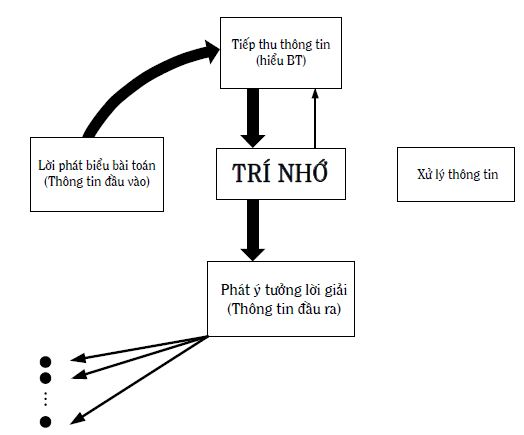
Hình 49: Quá trình suy nghĩ trong trường hợp đối tượng tiếp thu được nhận ra là quen thuộc, đã biết
Bạn đọc thử nhìn lại Hình 48 sẽ thấy đối tượng trong hình không hẳn là ngôi sao vì thiếu một số chi tiết: Những đường liên tục nối các cánh ngôi sao lại với nhau. Vậy đối tượng đó là gì? Bây giờ, bạn có thấy, đấy là năm hình tròn đen bị khuyết, sắp xếp theo một kiểu đặc biệt không? Nếu thế, những ý tưởng được phát ra dựa trên cơ sở “ngôi sao” là sai, bạn cần phải suy nghĩ đầy đủ hơn đối với đối tượng mới – “năm hình tròn đen bị khuyết” (xem các Hình 43 và Hình 44). Rất tiếc, số lượng người suy nghĩ theo Hình 49 nhiều hơn hẳn số người suy nghĩ theo Hình 43 và Hình 44. Đây là một trong những nguyên nhân quan trọng làm tăng số lượng các phép thử – sai.
2. Trí nhớ của con người mang tính chủ quan.
Chủ quan ở đây được hiểu, những người khác nhau có các nhu cầu, xúc cảm, các thói quen tự nguyện thúc đẩy tư duy, hành động, các kinh nghiệm suy nghĩ giải quyết vấn đề và ra quyết định khác nhau. Trong khi suy nghĩ đòi hỏi phải khách quan, phản ánh hiện thực khách quan như nó vốn có thì người suy nghĩ luôn bị chi phối bởi những yếu tố chủ quan nói trên. Đây cũng là một nguyên nhân quan trọng nữa làm tăng số lượng các phép thử – sai.
Tình hình còn trở nên phức tạp hơn khi tính chủ quan và tính chọn lọc của trí nhớ kết hợp lại với nhau. Ví dụ, do chủ quan, những người khác nhau, khi tiếp thu thông tin về cùng một đối tượng, có thể chọn lọc các chi tiết và sự liên kết giữa những chi tiết đó theo những cách khác nhau để nhớ. Do vậy, có thể xảy ra chuyện, với một số người nào đó, những chi tiết không giúp ích giải bài toán thì nhớ, những chi tiết giúp ích thì không.
3. Cho đến hiện nay, phần lớn mọi người không được trang bị (dạy và học) một cách bài bản những tri thức cần thiết cho quá trình suy nghĩ giải quyết vấn đề và ra quyết định. Nói cách khác, trong trí nhớ của phần lớn mọi người không có những tri thức là những phương pháp khoa học bảo đảm thông tin, tri thức và điều khiển các giai đoạn của quá trình tư duy hoạt động với năng suất và hiệu quả cao. Người viết cho rằng, đây là nguyên nhân cơ bản nhất trong các nguyên nhân và PPLSTVĐM góp phần tích cực khắc phục nguyên nhân này.
6.4.2 Tiếp thu thông tin và các mức độ hiểu
Giai đoạn tiếp thu thông tin (xem các Hình 43 và Hình 44) là giai đoạn đầu tiên của tư duy, có nhiệm vụ thu và hiểu các thông tin bài toán và môi trường bên ngoài.
- Trước hết nói về thu thông tin. Hoạt động tư duy chỉ thu thông tin từ nguồn duy nhất là nhận thức cảm tính, bao gồm cảm giác, tri giác và biểu tượng. Nhờ từng giác quan (thị, thính, khứu, xúc, vị giác), chủ thể cảm giác được từng tính chất riêng lẻ của đối tượng cho trước. Trong óc chủ thể, các cảm giác riêng lẻ kết nối với nhau thành tri giác, giúp chủ thể nhận biết đối tượng cho trước một cách tổng thể và phân biệt đối tượng cho trước với các đối tượng khác. Tuy nhiên, tri giác của con người không phải lúc nào cũng phản ánh các đối tượng một cách chính xác. Trong những điều kiện, hoàn cảnh nhất định, tri giác có thể bị sai lệch. Ví dụ, các ảo ảnh thị giác (ảo giác) dưới đây, xem Hình 50.
Bộ óc con người có tính chất: Ngay cả khi cách ly đối tượng cho trước để chủ thể không còn trực tiếp thu thông tin từ đối tượng cho trước thông qua các giác quan, trong óc chủ thể vẫn còn lưu giữ (xem mục nhỏ 6.4.1 Trí nhớ) hình ảnh tri giác (còn gọi là biểu tượng) về đối tượng cho trước. Lúc này, biểu tượng không còn cụ thể như tri giác mà trở nên trừu tượng: Giữ lại những gì chung, phổ biến về loại đối tượng cho trước, lược đi các chi tiết đặc trưng cụ thể của từng đối tượng cụ thể thuộc loại đối tượng cho trước. Trong óc con người, các biểu tượng còn được tiếp tục khái quát hóa thành các khái niệm, phản ánh các thuộc tính bản chất, chung cho nhiều hiện tượng, sự vật. Người suy nghĩ giải bài toán có nghĩa, người đó làm việc với các thông tin trong óc, là các biểu tượng, khái niệm (ý nghĩ) được đặt tên bằng các từ ngữ. Nói cách khác, tư duy không tách rời ngôn ngữ.
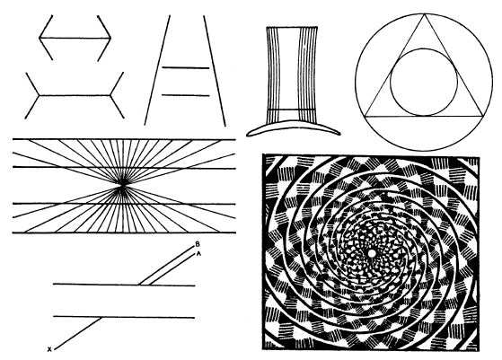
Hình 50: Một số ảo giác: thật không dễ dàng “nhìn” mà “thấy”. Trong tư duy, vấn đề thu thông tin và hiểu thông tin còn phức tạp hơn nhiều
Trong thực tế hoạt động nhận thức của mỗi người, nhận thức cảm tính và tư duy (nhận thức lý tính) tạo tiền đề, bổ sung và chuyển hóa lẫn nhau. Tư duy bắt đầu ở nơi nhận thức cảm tính không còn phát huy tác dụng hoặc bất lực. Ví dụ, nguyên tử, điện tử là những đối tượng không thể cảm giác, tri giác được trực tiếp bằng các giác quan, người ta chỉ có thể suy nghĩ về nó. Ngoài ra, do những ưu điểm của tư duy, người ta suy nghĩ ở cả những nơi nhận thức cảm tính vẫn còn có thể hoạt động.
- Bây giờ người viết chuyển sang nói về nhiệm vụ thứ hai: Hiểu thông tin được tiếp thu. Hiểu là một nhiệm vụ rất quan trọng. Ngay cả khi bài toán của bạn là bài toán đúng (xem mục 1.2 Một số khái niệm cơ bản và các ý nghĩa của chúng trong quyển một) và bạn hoàn toàn đủ kiến thức để giải, nhưng nếu bạn hiểu đầu bài (lời phát biểu bài toán) sai, bạn không giải được nó. Tuy rất quan trọng nhưng mọi người thường không chú ý đúng mức đến quá trình hiểu, thậm chí còn coi hiểu là công việc dễ dàng. Đúng như Tôn Dật Tiên nhận xét: “Hiểu là việc rất khó, nếu người ta hiểu, hành động sẽ dễ”. Ở đây, người viết cố gắng trình bày để thuyết phục bạn đọc rằng, hiểu là công việc rất khó và hiểu đến mức năm, hành động mới dễ.
Các nghiên cứu cho thấy, có thể có các mức độ hiểu sau:
1. Mức định nghĩa:
Về nguyên tắc, bất kỳ đối tượng nào cũng cần được định nghĩa và đặt tên. Định nghĩa về đối tượng cho trước, hiểu theo nghĩa rộng, là tập hợp các dấu hiệu của đối tượng cho trước, giúp người sử dụng tên gọi của đối tượng cho trước, nhận biết đối tượng cho trước là gì và phân biệt nó với các đối tượng khác. Định nghĩa là nội dung, tên gọi là hình thức phản ánh đối tượng cho trước. Không nên đồng nhất giữa tên gọi và nội dung vì có khi cùng một tên gọi, những người khác nhau hiểu khác nhau về nội dung, dẫn đến hiểu lầm, hiểu không đúng như cần phải hiểu. Do vậy, trong những trường hợp nghi ngờ, bạn cần kiểm tra lại định nghĩa của đối tượng cho trước, xem có giống như cách mình hiểu hay không và nếu cần thì điều chỉnh cách hiểu cho phù hợp.
Tùy theo đối tượng và mục đích, người ta có thể sử dụng các cách định nghĩa khác nhau. Với những đối tượng có thể tiếp nhận thông qua các giác quan, người ta có thể định nghĩa theo cách trực tiếp. Ví dụ, bạn của bạn nói với bạn: “Bạn có thấy người mặc áo hoa ngồi góc kia không? Đấy là chị A làm cùng phòng mình”. Từ đó, mỗi lần gặp lại, bạn nhận ra chị A hoặc nghe bạn của bạn nói về chị A, bạn biết đang nói về ai. Với những đối tượng không có điều kiện hoặc không thể trực tiếp tiếp nhận thông tin thông qua các giác quan, người ta phải định nghĩa gián tiếp dựa trên các đối tượng đã được định nghĩa trước đó. Định nghĩa càng chính xác, được càng nhiều người chấp nhận, kiểu như các định nghĩa có trong các khoa học chính xác, càng ít gây hiểu lầm. Leibnitz cho rằng: “Bạn hãy định nghĩa các từ một cách rõ ràng: Bạn vứt ra khỏi thế giới này một nửa những hiểu lầm”.
Nói chung, ở mức định nghĩa chưa có vấn đề lớn. Nếu bạn chưa hiểu một đối tượng nào đó ở mức định nghĩa, bạn đề nghị người ta cho biết định nghĩa, bạn sẽ hiểu không mấy khó khăn. Ví dụ, bạn nghe một người nào đó nói, có những từ bạn không hiểu như “đổi mới hoàn toàn”, “bài toán đúng”… Đọc các định nghĩa, bạn sẽ hiểu những đối tượng đó ở mức định nghĩa.
Có những bài toán, để giải được chúng, người giải phải hoàn thiện các định nghĩa cũ hoặc xây dựng các định nghĩa tương ứng với những khái niệm mới. Những khái niệm mới có thể là mới đối với các đối tượng truyền thống, hoặc đối với những đối tượng mới có trong bài toán. Những khái niệm mới này, một cách tự nhiên, sẽ ảnh hưởng đến các mức hiểu tiếp theo, trong trường hợp tốt đẹp, có thể dẫn đến những kiến thức mới. Bạn đọc xem thêm mục 8.3 Khái niệm của quyển ba.
2. Mức ngữ pháp:
Các đối tượng có thể liên kết với nhau tạo thành các đối tượng mới, phức tạp hơn với sự thay đổi về chất. Các đối tượng mới, phức tạp hơn, đến lượt mình, lại có thể liên kết với nhau thành các đối tượng phức tạp hơn nữa, kèm theo sự thay đổi về chất nữa… Nếu coi các mối liên kết là các đối tượng, thì các mối liên kết cũng có các định nghĩa của mình. Các định nghĩa về các mối liên kết giúp chúng ta nhận biết các mối liên kết và phân biệt chúng với nhau. Tuy nhiên, khi tạo thành các đối tượng mới, phức tạp hơn, các mối liên kết phải tuân theo những quy tắc (cách) nhất định. Những quy tắc này có thể mang tính khách quan như các quy luật hoặc chủ quan do con người tạo ra. Nếu bạn nắm và sử dụng những quy tắc liên kết này không sai sót, thành thạo, bạn đạt mức hiểu ngữ pháp. Như vậy, từ “ngữ pháp” dùng ở đây được hiểu theo nghĩa rất rộng, chứ không phải hiểu theo nghĩa hẹp: Ngữ pháp của một thứ tiếng nào đó.
Ví dụ, bạn tiếp thu thông tin: 1, 2, 3, 4, bạn nhận biết đấy là các chữ số một, hai, ba, bốn, bạn hiểu ở mức định nghĩa. Còn nếu thông tin là 1234, bạn không chỉ dừng ở mức hiểu định nghĩa mà còn hiểu rằng, đó là một ngàn hai trăm ba mươi bốn, bạn hiểu thông tin ở mức ngữ pháp. Bởi vì, bạn nắm và biết sử dụng các quy tắc liên kết các chữ số lại với nhau. Trong trường hợp các chữ số ở trên, mối liên kết thể hiện ở mối quan hệ giữa vị trí (hàng) của các chữ số: Hàng đơn vị, hàng chục, hàng trăm, hàng ngàn. Hoặc, cụ thể hơn: 1234 = 1 x 103 + 2 x 102 + 3 x 101 + 4 x 100.
Một ví dụ khác, giả sử bạn học chơi cờ tướng. Người dạy bạn giới thiệu: Quân cờ viết chữ thế này gọi là quân tướng, quân viết chữ thế kia gọi là quân sĩ…, bàn cờ được kẻ ô như sau… Bạn nhận biết thuộc lòng những cái đó, bạn hiểu cờ tướng ở mức định nghĩa. Sau đó, người dạy bạn trình bày luật chơi cờ tướng. Luật chơi cờ tướng chính là các quy tắc liên kết các quân cờ, bàn cờ lại với nhau. Bao giờ bạn biết chơi cờ tướng sạch nước cản, không phạm luật, bạn đạt mức hiểu ngữ pháp của cờ tướng. Còn chơi hay lại là chuyện khác, cao hơn nữa.
Ở đâu ngữ pháp càng chặt chẽ, rõ ràng và chính xác, ở đó càng ít gây hiểu lầm. Một lần nữa, các khoa học chính xác lại tỏ ra ưu việt. Ngoài ra, trong các trò chơi, các môn thể thao, luật chơi cũng thuộc loại ngữ pháp nói trên.
Nói chung, ở mức ngữ pháp, có thể có những vấn đề lớn hơn ở mức định nghĩa nhưng có thể vượt qua được. Ví dụ, ai cũng có thể học để biết chơi cờ tướng. Tuy nhiên, có những trường hợp, mức ngữ pháp đã là thách thức không nhỏ. Ví dụ, Việt Nam hội nhập quốc tế. Việt Nam phải nắm và chơi thành thạo luật chơi quốc tế. Theo bạn, phải cần bao nhiêu năm kể từ khi Việt Nam ra quyết định tham gia sân chơi quốc tế đến khi đạt được mức ngữ pháp ở mọi lĩnh vực luật pháp, kinh tế, xã hội, khoa học, công nghệ… trong các hoạt động quốc tế của mình.
Có những bài toán, để giải được chúng, người giải phải phát hiện hoặc tạo ra các mối liên kết mới giữa các đối tượng với nhau. Nói cách khác, người giải có khi phải hoàn thiện ngữ pháp hiện có, thậm chí, phải tạo ra ngữ pháp mới cho phù hợp với những thay đổi mới.
3. Mức nghĩa:
Bất kỳ đối tượng nào cũng có thể có nhiều tính chất, chức năng khác nhau, có thể ở nhiều trạng thái khác nhau, có thể thay đổi theo thời gian khác nhau… Những khả năng có thể có này của đối tượng cho trước được gọi là các nghĩa của đối tượng cho trước và mỗi khả năng (nghĩa) cụ thể thì có một ý nghĩa, được diễn giải theo cách nhất định. Khi tiếp thu thông tin về đối tượng cho trước, nếu bạn phát hiện ra, về mặt nguyên tắc, tất cả các nghĩa của đối tượng cho trước, bạn hiểu đối tượng cho trước ở mức nghĩa.
Ví dụ, có những khả năng (nghĩa) nào của hình dưới đây, xem Hình 51.
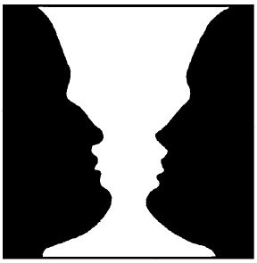
Hình 51: Bạn nhìn và thấy những khả năng (nghĩa) nào có thể có trong hình này?
Người viết giả sử hình nói trên có tất cả hai nghĩa:
1. Hai đầu người nhìn nghiêng đối diện nhau.
2. Cúp thể thao.
Nếu bạn phát hiện ra cả hai nghĩa, bạn đạt mức hiểu nghĩa, ngược lại thì bạn chưa.
Đến đây, bạn có thể nhận ra, các vấn đề lớn có thể nảy sinh ở mức hiểu nghĩa. Thứ nhất, việc phát hiện nghĩa phụ thuộc vào khả năng của cá nhân cụ thể. Khả năng này ở những người khác nhau thì khác nhau. Ví dụ, nhìn Hình 51, một số người này chỉ thấy nghĩa một, một số người khác chỉ thấy nghĩa hai, một số người khác nữa thấy cả hai nghĩa. Thứ hai, khó có thể biết đối tượng cho trước có bao nhiêu nghĩa tất cả. Ví dụ, quay trở lại Hình 51, bạn hãy tìm thêm nghĩa thứ ba, thứ tư… xem, vì hai nghĩa mới là người viết “giả sử” thôi.
Trong ví dụ chơi cờ tướng, giả sử đối thủ của bạn nhấc quân xe đi một nước. Tiếp thu thông tin đó, bạn cần xem xét, ở đây có thể có những khả năng nào: Quân pháo, quân mã, quân tốt gần đó của bạn bị đe dọa bởi chính quân xe của đối thủ ở vị trí mới; đơn giản đối thủ đặt quân xe ở vị trí đó để dễ xoay trở hơn trong các nước đi tiếp; quân xe chỉ là nghi binh, quân pháo mới đáng chú ý vì có thể đi tiếp để chiếu tướng… Khi bạn phát hiện ra các khả năng có thể có, bạn đang ở mức hiểu nghĩa.
Trong nhiều trường hợp, sáng tạo nảy sinh ngay từ mức nghĩa: Người tiếp thu thông tin phát hiện thêm (những) khả năng mới trong thông tin tiếp thu, dẫn đến những ích lợi, mà những người khác cũng tiếp thu chính thông tin đó nhưng không phát hiện ra. Trong mục nhỏ 6.4.5 Tính nhạy bén của tư duy, người viết sẽ còn quay trở lại ý này.
Ở những lĩnh vực định nghĩa không rõ ràng, chính xác, ngữ pháp không chặt chẽ, số lượng nghĩa có thể rất lớn, dẫn đến hiểu lầm do sự đa nghĩa của thông tin và chủ quan của người tiếp thu thông tin. Trong những trường hợp như vậy, bạn cần hỏi lại những nơi cung cấp thông tin để xác định được đúng nghĩa cần hiểu. Nếu bạn không làm điều đó, các vấn đề không đáng nảy sinh có thể nảy sinh trong tương lai.
Ví dụ, bài toán sau: “Hai người cùng đi đến một bến đò. Bến đò này chỉ có một chiếc thuyền chở được một người mà thôi. Hai bờ sông đều vắng vẻ, không có bóng người qua lại. Trên sông cũng không có thuyền bè nào khác. Hỏi hai người làm cách nào để có thể qua sông bằng thuyền được?”
Người viết đề nghị bạn hãy dành thời gian xứng đáng cho giai đoạn tiếp thu thông tin – hiểu bài toán, đừng vội chuyển sang giai đoạn tiếp theo. Câu đầu tiên “Hai người cùng đi đến một bến đò”, bạn thấy có những khả năng nào? Thứ nhất, “người” có thể là đàn ông, đàn bà, trẻ em, thanh niên, phụ lão… Thứ hai, “bến đò” có thể chỉ tính bến của một bờ sông hay cả hai bờ sông. Thứ ba, nếu vậy “hai người cùng đi đến một bến đò” có thể là hai người đến cùng một bến của một bờ sông, có thể đến hai bến của hai bờ sông. Nếu người viết đi tiếp lời phát biểu bài toán, tình hình còn phức tạp hơn nữa. Điều này có thể hiểu được vì đây là bài toán có trong đời thường, chứ không phải bài toán của những khoa học chính xác, ở đó có định nghĩa rõ ràng và ngữ pháp chặt chẽ, giúp tránh hiểu đa nghĩa.
Nói chung, loại tư duy dẫn đến việc “thấy” nhiều khả năng có thể có, được các nhà tâm lý gọi là tư duy phân kỳ (Divergent Thinking).
4. Mức hiểu giá trị:
Ở mức hiểu nghĩa, người tiếp thu thông tin cần phát hiện, về mặt nguyên tắc, tất cả các khả năng có thể có của thông tin. Tiếp theo, người đó dùng những nghĩa này vào bài toán đang giải xem chúng đem lại những giá trị gì: Nghĩa nào không giúp, nghĩa nào, ở mức độ nào, giúp mình giải bài toán để cuối cùng quyết định được lời giải đạt yêu cầu nhất.
Ví dụ, bài toán sau: “Liệu có tồn tại hai số mà tổng của chúng bằng 10, tích của chúng bằng 40?”.
Trước hết, người viết lưu ý bạn đọc, bài toán nói trên lấy từ toán học, là khoa học chính xác. Do vậy, bạn khá yên tâm về mức định nghĩa, ngữ pháp và nghĩa. Ở mức nghĩa, số có thể có những khả năng (nghĩa): Số nguyên, lẻ, chẵn, nguyên tố, thập phân, dương, âm, thực, hữu tỷ, vô tỷ, ảo, phức… Tiếp theo, bạn cần thực hiện việc đánh giá xem những nghĩa này giúp bạn giải bài toán cho trước như thế nào. Nói cách khác, bạn chuyển sang mức hiểu giá trị. Trong các nghĩa kể trên, chính nghĩa “số phức” giúp bạn giải bài toán. Lời giải cụ thể là: a+ b = 10; a x b = 40 với a = 5 +i√15 và b = 5 - i√15. Làm được như vậy là bạn hiểu được “số” ở mức giá trị.
Ngoài ra, bạn đọc có thể nhận xét, giải bài toán nói trên, nhiều người không chú ý mức hiểu nghĩa, do vậy, tiếp thu thông tin “số”, họ chỉ nghĩ đến “số dương” hoặc thêm vài nghĩa khác, bỏ qua mất nghĩa “số phức”. Việc họ không giải được bài toán không phải do họ không đủ khả năng (các loại số nói trên đều đã được học trước đó) mà do chủ quan của họ trong việc tiếp thu thông tin – hiểu bài toán. Về vấn đề này, người viết sẽ đề cập chi tiết hơn trong mục 6.5 Tính ì tâm lý.
Trong ví dụ chơi cờ tướng, sau khi đối thủ của bạn nhấc quân xe đi một nước, bạn phát hiện ra tất cả các khả năng có thể có, nảy sinh từ nước đi nói trên. Bạn đạt mức hiểu nghĩa. Tiếp theo, bạn cần đánh giá từng khả năng một theo thực tế bàn cờ lúc đó, xem dẫn đến kết quả gì… Cuối cùng, bạn chọn được đúng “nghĩa” phản ánh ý đồ thực sự của đối phương để có phương án đáp trả tối ưu. Bạn đạt mức hiểu giá trị.
Nói chung, loại tư duy phát hiện ra đúng lời giải trong số nhiều khả năng có thể, được các nhà tâm lý gọi là tư duy hội tụ (Convergent Thinking).
5. Mức hiểu giá trị kèm theo xúc cảm thúc đẩy hành động thực hiện giá trị đó:
PPLSTVĐM đòi hỏi tư duy phải hướng tới hành động thực hiện đổi mới hoàn toàn. Do vậy, trong tư duy, hiểu không chỉ để hiểu mà hiểu cũng cần phải hướng tới hành động. Chúng ta biết rằng (xem mục 5.4 Xúc cảm), yếu tố thúc đẩy hành động cụ thể nào đó một cách trực tiếp, mạnh mẽ là xúc cảm phù hợp với hành động ấy.
Không chú ý đến kết luận mang tính quy luật này, thậm chí bạn hiểu bài toán đến mức giá trị: Tìm ra lời giải (dưới dạng ý tưởng) của bài toán cho trước, bạn vẫn không hành động tiếp để biến lời giải bài toán thành hiện thực. Hoặc có khi, bạn hành động ngược với giá trị mà bạn hiểu, nếu bạn không có xúc cảm cần thiết thúc đẩy hành động để biến giá trị đó thành hiện thực (xem lại các ví dụ về các cá nhân cụ thể cho trong điểm 3, phần 2 của mục nhỏ 5.7.2). Có câu chuyện cổ tích kể rằng:
Ngày xửa, ngày xưa, một gia đình rất giàu, chỉ có một cậu con trai. Hồi nhỏ, cậu được cha, mẹ, người làm cưng chiều hết mức, đòi gì được nấy, không phải học hành gì cả. Lớn lên, cậu cũng không phải làm việc gì, cần bao nhiêu tiền ăn chơi đều được bố mẹ cung cấp đầy đủ.
Thời gian trôi đi, một hôm ông bố gọi cậu con trai đến và nói: “Bố, mẹ bây giờ đã già, nhà ta tuy giàu thật nhưng con chưa tự kiếm được tiền. Gia tài bố mẹ để lại, miệng ăn núi lở, đến lúc nào đó con ăn hết, con phải đi ăn mày. Bố, mẹ ở dưới suối vàng không thể thanh thản. Con hãy đi học lấy một nghề, tự kiếm tiền và mang tiền về cho bố, mẹ xem. Có vậy, bố, mẹ nhắm mắt, xuôi tay mới thấy yên tâm”.
Bà mẹ thương con, lén đưa tiền cho con và nói: “Con cầm tiền này đi chơi đâu đấy. Một thời gian sau quay về, con đưa số tiền còn lại cho bố, nói đấy là tiền con kiếm được. Học hành, làm lụng làm gì cho khổ”.
Chàng trai y lời mẹ. Một thời gian sau, chàng quay về đưa tiền cho bố: “Thưa bố đây là tiền con làm”. Ông bố cầm nắm tiền nói: “Đây không phải là tiền con làm” và ném tiền vào đống lửa. Tiền bốc cháy còn chàng trai đứng yên.
Chuyện cứ thế xảy ra nhiều lần. Cho đến khi bà mẹ thấy không thể cho con tiền mãi được, nên nói với con: “Bố đúng đấy con ạ, bây giờ mẹ không cho con tiền nữa. Con phải học lấy một nghề và tự kiếm tiền đi”.
Lần này chàng trai phải bỏ nhiều công sức, mồ hôi để có được một nghề và làm việc chăm chỉ để nhận những đồng tiền lương đầu tiên. Chàng vui mừng quay về gặp bố: “Thưa bố, đây là tiền con làm”. Ông bố lại nói: “Đây không phải tiền con làm” và ném tiền vào đống lửa. Chàng trai không còn đứng yên, chàng trai xông lại sát đống lửa, chịu bỏng, hai bàn tay gạt củi cháy, than hồng, giật lại những đồng tiền. Bấy giờ, ông bố mới âu yếm ôm lấy chàng trai và nói: “Đây mới đúng là tiền con tự kiếm được”.
Qua câu chuyện, chúng ta có thể thấy, trước khi tự làm ra tiền, chàng trai đã hiểu “tiền” đến mức giá trị: Tiền có thể mua được gì, chơi được gì. Nhưng khi giá trị ấy bốc cháy trong đống lửa, chàng trai dửng dưng, vô cảm, không hề hành động. Sau khi phải đổ mồ hôi, sôi nước mắt, tự kiếm tiền được bằng lao động chân chính của mình, chàng trai mới hiểu “tiền” đến mức năm: Mức giá trị kèm theo xúc cảm thúc đẩy hành động theo giá trị ấy. Kết quả, chàng trai đã hành động, một hành động rất dũng cảm trên cơ sở trân trọng, gìn giữ, xả thân bảo vệ thành quả lao động của mình. Xúc cảm ở đây chính là “của đau” thì “con xót”.
Năm mức độ hiểu trình bày ở trên giúp bạn đọc tự kiểm tra mình khi tiếp thu thông tin, xem mình hiểu đến mức nào để đi tiếp. Rõ ràng, muốn có được hành động, hiểu theo nghĩa tốt đẹp, bạn cần phấn đấu đạt đến mức độ hiểu thứ năm: Hiểu giá trị kèm theo xúc cảm thúc đẩy hành động thực hiện giá trị đó.
- Mục nhỏ 6.4.2 này viết dành riêng cho giai đoạn tiếp thu thông tin (xem các Hình 43 và Hình 44). Tuy vậy, các ý vừa trình bày hoàn toàn có thể và cần được dùng bất kỳ lúc nào trong tất cả các giai đoạn của quá trình tư duy, nếu ở đó có sự biến đổi thông tin. Nói như Kant: “Tư duy có nghĩa là nói với chính mình… lắng nghe chính mình”. Điều này có nghĩa, trong suốt quá trình suy nghĩ, dù nghĩ thầm trong óc, người suy nghĩ nhiều lần thay đổi vai trò: Lúc đóng vai trò phát, lúc đóng vai trò thu thông tin. Chưa kể, người suy nghĩ còn đóng vai trò biến thông tin từ dạng này sang dạng khác cả về hình thức lẫn nội dung. Mỗi lần như vậy, người suy nghĩ cần chú ý tiếp thu lại và hiểu những thông tin đó theo năm mức để kiểm tra lập luận của mình. Tinh thần chung là nếu chưa hiểu thì không nên đi tiếp.
Tóm lại, vì hiểu là vấn đề quan trọng và khó, người suy nghĩ phải hết sức chú ý hiểu bài toán, kiểm tra các mức độ hiểu của mình, đặc biệt cần phải thay đổi cách xử sự: Không giấu sự không hiểu, hỏi lại, tra cứu tài liệu… để hiểu. Không nên ra quyết định khi còn chưa hiểu, khi việc hiểu có vấn đề.
6.4.3 Ngôn ngữ, ký hiệu, hình vẽ
- Ngôn ngữ:
Các đối tượng có thực, khi ở trong óc con người, trở thành các biểu tượng tâm lý – các bản sao chứa thông tin về các đối tượng đó (xem mục nhỏ 6.4.1 Trí nhớ). Các bản sao được đặt tên (mã hóa) bằng các từ ngữ. Bất kỳ bản sao nào của đối tượng cho trước, như chúng ta biết, đều không phải là chính đối tượng cho trước mà chỉ gồm những dấu hiệu đặc trưng nhất (“tinh hoa”) của đối tượng cho trước, được chủ thể tiếp nhận một cách chọn lọc, chủ quan. Đây là điểm rất quan trọng mà người sử dụng ngôn ngữ cần lưu ý. Tư duy của con người luôn gắn với ngôn ngữ. Nói rõ hơn, con người suy nghĩ bằng ngôn ngữ và bị tác động bởi ngôn ngữ.
Các từ ngữ đều phản ánh các đối tượng mà chúng đề cập đến với mức độ trừu tượng và khái quát nhất định. Vì khi chúng ta sử dụng từ ngữ, đối tượng được từ ngữ phản ánh chỉ còn là bản sao (biểu tượng tâm lý) chứa những dấu hiệu chọn lọc, đặc biệt nhấn mạnh, mang tính chất chung của loại đối tượng đó để phân biệt với các loại đối tượng khác. Ví dụ, khi bạn sử dụng từ “cái bàn”, đối tượng “cái bàn” trong óc bạn không phải là cái bàn cụ thể với tất cả các dấu hiệu như trên thực tế. Ngay cả khi bạn nghĩ “cái bàn tròn”, tuy mức độ cụ thể có tăng lên nhưng không vì thế tính trừu tượng và khái quát của từ ngữ biến mất. Chưa kể, còn có những đối tượng, bản thân chúng đã là trừu tượng và khái quát.
Tính trừu tượng, khái quát của từ ngữ nói riêng, ngôn ngữ nói chung đem lại nhiều ích lợi:
Thứ nhất, người suy nghĩ không bị quá tải, do vậy, nhu cầu tiết kiệm sức lực được thỏa mãn. Bạn thử tưởng tượng, trong một bài toán, có thể có nhiều đối tượng. Bạn phải nhớ và sử dụng đầy đủ hết tất cả các dấu hiệu của tất cả các đối tượng: Công việc suy nghĩ sẽ phức tạp và nặng nề như thế nào.
Thứ hai, suy nghĩ bằng ngôn ngữ rất thuận tiện vì bạn suy nghĩ bằng các bản sao (các biểu tượng tâm lý). Bạn có thể suy nghĩ giải bài toán ở mọi nơi, mọi lúc, không nhất thiết các đối tượng có trong bài toán phải được tiếp nhận trực tiếp thông qua các giác quan vào lúc bạn suy nghĩ.
Thứ ba, suy nghĩ bằng ngôn ngữ giúp tiết kiệm tiền bạc, phương tiện vật chất. Các từ ngữ là các tên gọi của các bản sao rất rẻ tiền nên trong khi suy nghĩ, ý tưởng nào (tất nhiên, được phát biểu bằng từ ngữ) bạn phát hiện là sai và bỏ không dùng, bạn hầu như không tốn gì cả.
Thứ tư, ngôn ngữ giúp mọi người giao tiếp với nhau dễ dàng, thuận tiện, nhanh chóng; giúp lưu giữ bên ngoài bộ óc (dưới dạng chữ viết, băng từ…) các kiến thức để khỏi cần nhớ nhiều; giúp truyền các kiến thức đi xa từ người này sang người khác, từ thế hệ này sang những thế hệ sau, là phương tiện của công việc dạy và học nói riêng và cơ chế di truyền xã hội nói chung.
Thứ năm, người suy nghĩ có được khả năng suy nghĩ tập trung và sâu sắc hơn vì, các bản sao mà từ ngữ giữ lại chỉ chứa những gì “tinh hoa” của những đối tượng được phản ánh. Tất cả năng lượng suy nghĩ của người giải bài toán dồn vào những cái “tinh hoa” đó, không phải dàn trải lên cả các dấu hiệu phụ, không có ý nghĩa đối với việc giải bài toán.
Tuy nhiên, vì con người chủ quan, chọn lọc ra những cái “tinh hoa” cũng chủ quan, dẫn đến bỏ sót lời giải hoặc không giải được bài toán. Từ đây, chúng ta cần sử dụng, phát huy các mặt mạnh và hạn chế các mặt yếu của ngôn ngữ. Dưới đây, người viết cố gắng chi tiết hóa ý vừa nêu.
Khoảng ba tuổi, chúng ta đã nói rành và sáu, bảy tuổi đọc thông, viết thạo. Đến tuổi bây giờ, người viết và bạn đọc đều có thâm niên đáng kể trong sử dụng ngôn ngữ. Nhiều khi, chính thâm niên đó làm chúng ta mất cảnh giác và sa vào các bẫy ngôn ngữ, dẫn đến việc hiểu sai. Trong mục nhỏ trước (xem 6.4.2 Tiếp thu thông tin và các mức độ hiểu), chúng ta biết rằng, từ mức ba – mức hiểu nghĩa, có thể nảy sinh nhiều vấn đề, đặc biệt ở những lĩnh vực không phải là khoa học chính xác. Chính vì vậy, trong mục này, người viết tập trung trình bày các bẫy ngôn ngữ liên quan đến hiểu nghĩa.
Sự giao tiếp bằng ngôn ngữ luôn xảy ra trong mọi giai đoạn của quá trình giải bài toán. Điều này đúng không chỉ đối với tập thể giải bài toán, ở đó cần sự bàn bạc, trao đổi, thảo luận. Ngay cả trường hợp một người giải, người đó thường xuyên phải giao tiếp với chính mình (lúc phát thông tin cho chính mình, lúc thu thông tin của chính mình dưới dạng ngôn ngữ – nói và nghe thầm trong đầu). Chưa kể, có những lúc người giải còn đi tìm thông tin từ môi trường bên ngoài, phải giao tiếp với những người khác.
Giao tiếp là quá trình bao gồm phát và thu thông tin qua lại, ở đó mỗi người tham gia đều thực hiện cả hai chức năng. Khi phát thông tin, người phát gởi trong lời nói hay văn bản những nghĩa (được gọi là những nghĩa ấn định), mình muốn chuyển đến người thu. Sau khi thu thông tin, trong óc người thu xuất hiện các nghĩa, được gọi là những nghĩa diễn giải. Trong trường hợp lý tưởng, những nghĩa ấn định và những nghĩa diễn giải phải như nhau: Thông tin truyền thông suốt. Thực tế cho thấy, ngay cả trường hợp trong kênh truyền hoàn toàn không có nhiễu, sự trùng nhau thực sự thường không xảy ra, có khi dẫn đến những hiểu lầm tai hại, làm nảy sinh những vấn đề không đáng nảy sinh.
Nhìn theo góc độ chuỗi truyền thông tin (xem mục nhỏ 6.3.2 Chuỗi truyền thông tin), bạn đọc có thể đoán ra nguyên nhân của sự không trùng nhau nằm ở bộ phận phát cùng quá trình mã hóa (lựa chọn các từ ngữ, sắp xếp chúng thành câu, thành đoạn) và bộ phận thu cùng quá trình giải mã (các từ ngữ… nhận được tạo ra trong óc các bản sao gì, như thế nào). Những người khác nhau có sự chủ quan, chọn lọc khác nhau và các cách mã hóa, giải mã khác nhau. Từ đó dẫn đến những nghĩa ấn định và những nghĩa diễn giải khác nhau. Bạn đọc có thể thấy điều này qua kinh nghiệm bản thân. Ví dụ, về cùng một đề tài, người này nói, bạn dễ hiểu, người khác nói, bạn khó hiểu, có khi hiểu lầm. Hoặc, cùng nghe một người, bạn hiểu nhưng người bên cạnh bạn lại không hiểu. Hoặc, giúp em bạn làm bài tập chẳng hạn, bạn nói cách này, em bạn chưa hiểu. Bạn đổi cách trình bày, em bạn lại hiểu.
Đi vào cụ thể, nhìn theo góc độ ngữ nghĩa của ngôn ngữ, tình hình còn phức tạp hơn: Sự không trùng nhau giữa các nghĩa ấn định và các nghĩa diễn giải là do các đặc thù của ngôn ngữ con người mà người phát hoặc/và người thu không chú ý đến. Người viết liệt kê dưới đây một số trong các bẫy ngôn ngữ đó:
1. Từ ngữ là tên gọi bản sao của đối tượng cho trước. Những người khác nhau tuy sử dụng cùng một từ ngữ nhưng có trong đầu những bản sao khác nhau. Ví dụ, một người ở trong nhà, nghe người vừa ở ngoài đường về nói: “Trời rét quá”. Thấy vậy, người đó mở cửa đi ra đường, quay về lại bảo: “Trời thế mà kêu rét”.
2. Từ ngữ như là tên gọi (hình thức, cái vỏ) hầu như không thay đổi theo thời gian. Trong khi đó, nội dung bản sao của các từ ngữ phản ánh các đối tượng được đề cập đến, có thể thay đổi theo nhiều hướng như mở rộng, thu hẹp số lượng nghĩa, chuyển nghĩa của từ này sang nghĩa của từ khác, thay đổi chính sắc thái của nghĩa ban đầu… (ý tại ngôn ngoại – nghĩa nằm ở ngoài từ). Ví dụ, ở thời kỳ lịch sử nào đó trước đây, từ “ngôn ngữ” có một nghĩa là ngôn ngữ của con người. Bây giờ, “ngôn ngữ” có thể là của con người, loài vật, máy tính… Một ví dụ khác, bạn thử so sánh nghĩa của từ “nhân” trong hai câu sau: “Nhân hai số a và b với nhau, ta có…” và “Nhờ sự đoàn kết nhất trí, sức mạnh của tập thể chúng ta được nhân lên gấp bội”. Một ví dụ khác nữa, cùng một từ ngữ, nghĩa được diễn giải (giải mã) có khi hoàn toàn ngược nhau. Bạn hãy chú ý từ “chó” trong hai câu sau: “Ôi con chó của mẹ đang làm gì thế này” và “Con cái gì mà ngu như chó”…
Tóm lại, một từ có thể có nhiều nghĩa và ngược lại, nhiều từ khác nhau lại đồng nghĩa hoặc gần nghĩa. Có nhiều loại nghĩa khác nhau: Đen, bóng, cụ thể, trừu tượng, khái quát, hẹp, rộng, tương đối, tuyệt đối, ngầm, nổi, lặn, riêng, chung, nghiêm túc, hài hước, lóng… Nhiều đến nỗi, người viết không thể liệt kê ra hết được.
3. Nghĩa bị ảnh hưởng bởi các hiện tượng chủ quan của người sử dụng ngôn ngữ. Con người vốn chủ quan, đến mức, như người ta thường nói, bách nhân bách tính hoặc mỗi cá nhân cụ thể là một phiên bản không lặp lại trong suốt lịch sử loài người. Các hiện tượng chủ quan chính là các hiện tượng tâm – sinh lý (xem Chương 5: Từ nhu cầu đến hành động và ngược lại) của mỗi người và chúng tác động rất mạnh lên cá nhân trong việc chọn từ ngữ để mã hóa và chọn nghĩa để hiểu (giải mã). Ngược lại, cách sử dụng ngôn ngữ của một người cũng tác động mạnh lên các hiện tượng chủ quan của người đó. Nếu bạn muốn lạc quan, bạn nên sử dụng những từ ngữ mang các nghĩa lạc quan và hiểu các nghĩa lạc quan. Về điều này, F. Bacon nhận xét rất chí lý: “Mọi người nghĩ rằng tư duy của họ điều khiển được ngôn ngữ nhưng thường là ngôn ngữ điều khiển tư duy của họ”. H. Delacroix cũng cho rằng: “Toàn bộ kinh nghiệm của một người được xây dựng trên cơ sở ngôn ngữ của người đó”. Goethe đưa ra lời khuyên thực tế: “Mỗi ngày, mỗi người cần cố gắng nghe một bài hát ngắn, đọc một bài thơ hay, xem một bức tranh đẹp và, nếu có thể, nói những từ ngữ có lý trí”.
4. Nghĩa còn bị ảnh hưởng bởi môi trường. Quá trình giao tiếp bằng ngôn ngữ không xảy ra trong chân không mà đều ở trong môi trường (hiểu theo nghĩa rộng) nhất định. Điều này có nghĩa, cùng với sự trao đổi thông tin với nhau, những người tham gia giao tiếp còn nhận thêm các thông tin (về điều kiện, hoàn cảnh…) của môi trường thông qua các giác quan. Những thông tin này có thể ảnh hưởng lên việc hiểu nghĩa của những người tham gia giao tiếp: Nghĩa nào đó, trong các nghĩa có thể có của các từ ngữ được sử dụng, trở nên mạnh hơn, nổi lên và gây chú ý hơn những nghĩa khác.
Dưới đây là một số chuyện vui, trong đó có những hiểu lầm. Bạn đọc hãy tìm các nguyên nhân là các “bẫy ngôn ngữ” có trong mỗi chuyện đó.
○ Tiếp viên của một tàu biển, đứng ở cầu tàu, nói to, hướng dẫn khách: “Hạng nhất về bên phải, hạng nhì về bên trái”. Một cô gái còn trẻ, bế theo một đứa bé bước đến. Anh tiếp viên lịch sự, nghiêng mình, hạ giọng, hỏi nhỏ: “Thưa cô nhất hay nhì đấy ạ?”. “Ơ…” – Cô gái đỏ bừng mặt, đáp lại một cách bối rối: “Thưa ông, cháu không phải con tôi. Tôi chưa… chưa lập gia đình”.
○ Trong giờ lịch sử, cô giáo hỏi một em học sinh: “Em hãy cho cô biết, khi quân Minh sang xâm lược nước ta, tướng giặc Liễu Thăng bị chém ở đâu?”. Trò: “Thưa cô, Liễu Thăng bị chém ở cổ ạ!”.
○ Cô giáo nói với học sinh A: “Em có biết quay cóp làm hỏng người đi không?” Học sinh A: “Thưa cô em biết ạ, nếu quay cóp nhiều… hai mắt em sẽ bị lé ạ”.
○ Trong một quán rượu ở Paris, một người trong Ủy ban chống nghiện rượu vừa dìu một người say, vừa khuyên bảo anh ta: “Anh biết không, mỗi năm rượu đã giết ít nhất một vạn người Pháp. Tốt nhất, đừng nên uống nữa”. “Điều đó can hệ gì đến tôi? Tôi là người Bỉ cơ mà”.
○ Trong một cửa hàng kinh doanh vàng bạc, A bảo B: “Hè này tụi mình đi Nha Trang chơi đi”. B hỏi: “Bao nhiêu cây?”. A: “Làm gì tới cây, độ vài chỉ thôi”.
○ Thầy đồ đang cặm cụi viết, vợ thầy đứng sau lưng xem một hồi lâu rồi nói: “Ông lấy giấy khổ to viết có hơn không?” Thầy đồ lấy làm đắc chí, cho là vợ mình khen chữ mình đẹp, văn của mình ý tứ dồi dào, cần phải viết giấy khổ to để treo ở đâu đó trong nhà cho mọi người chiêm ngưỡng, nhưng cũng giả bộ hỏi lại: “Bà nói vậy là sao?” Vợ trả lời: “Ông chẳng tính toán gì cả, giấy khổ to bỏ đi còn gói hàng được, chứ giấy khổ nhỏ thế này bỏ đi thì dùng làm gì?”
Sau khi biết các bẫy ngôn ngữ, chúng ta cần tránh sử dụng ngôn ngữ một cách tự nhiên, để ngôn ngữ điều khiển mình mà không biết. Chúng ta cần chú ý luyện tập tư duy và sử dụng tư duy để điều khiển ngôn ngữ. Ngược lại, ngôn ngữ sẽ giúp chúng ta suy nghĩ tốt hơn. Do vậy, số lượng các vấn đề không đáng nảy sinh trong cuộc đời chúng ta sẽ giảm đi một cách đáng kể. Chúng ta hãy nhớ đến lời nhắc nhở của M. Cervantes: “Nói mà không nghĩ cũng giống như bắn mà không ngắm”, của Libknecht: “Sự rành mạch của ngôn ngữ là kết quả của tư duy rõ ràng” và của L. Feyvanghe: “Con người cần hai năm học nói và cần sáu mươi năm để học cách điều khiển lời nói”. I.P. Pavlov: “Nhờ toàn bộ cuộc sống trước đó của cá nhân, mỗi từ ngữ đã được gắn liền với mỗi vật kích thích bên ngoài hoặc bên trong. Các kích thích đó, cuối cùng đều được dẫn truyền tới bán cầu đại não. Do vậy, các từ ngữ có thể gây ra những hành động và phản ứng của cơ thể, giống như những hành động và phản ứng của cơ thể khi bị chính những vật kích thích đó thực sự gây ra”.
- Ký hiệu:
Ký hiệu, hiểu theo nghĩa rộng, là bất kỳ cái gì, được quy ước dùng để chỉ đến đối tượng khác. Ví dụ, các em bé chơi trò mua – bán, quy ước các mảnh giấy xé ra là tiền, miếng đất sét màu hồng là thịt, màu xanh là rau… Lúc này, các mảnh giấy, các miếng đất sét màu sắc khác nhau là các ký hiệu. Trong nghĩa như vậy, các từ ngữ cũng là các ký hiệu.
Ở đây, người viết dùng từ “ký hiệu” theo nghĩa hẹp, là các ký hiệu như các ký hiệu thường dùng trong toán học: Chúng còn đơn giản và gọn hơn cả các từ ngữ. Ví dụ, nếu phát biểu định luật Ohm bằng ngôn ngữ thì dài. Dùng ký hiệu, chúng ta có công thức gọn hơn nhiều: I = U/R. Trong đó, I là ký hiệu của “cường độ dòng điện”; = – “bằng”; U – “hiệu điện thế”; / – “phép chia”; R – “điện trở”. Hoặc, các ký hiệu là các hình vẽ đơn giản như các tín hiệu màu, biển báo giao thông, các biểu tượng trên thanh công cụ trong máy tính…
Người ta suy nghĩ không chỉ bằng ngôn ngữ mà còn bằng cả các ký hiệu. Do một số đặc thù, trong nhiều trường hợp, ký hiệu ưu việt hơn từ ngữ. Các ký hiệu và từ ngữ tương tự nhau, hiểu theo nghĩa, chúng đều là “tên gọi” của các hình ảnh (biểu tượng tâm lý) của các đối tượng chứ không phải là chính các đối tượng. Điều này có nghĩa, về cơ bản, những gì trình bày ở trên về ngôn ngữ có thể dùng cho các ký hiệu. Tuy nhiên, giữa ngôn ngữ và ký hiệu có những điểm khác nhau. Ví dụ:
Thứ nhất, ký hiệu thường dùng thay cho từ ngữ, mệnh đề, câu… mà bản thân chúng cũng là các ký hiệu. Nói cách khác, ký hiệu, theo nghĩa hẹp, là ký hiệu của các ký hiệu (từ ngữ…). Do vậy, người ta có thể tạo ra các ký hiệu đơn giản, gọn và chứa nhiều thông tin hơn từ ngữ…
Thứ hai, nếu như ngôn ngữ được tất cả mọi người nói thứ tiếng đó dùng để giao tiếp với nhau thì ký hiệu thường có số lượng người dùng ít hơn. Đặc biệt, ở những nơi cần giữ bí mật không để nhiều người biết, người ta thường dùng các ký hiệu được mã hóa một cách đặc biệt, chỉ những người trong cuộc mới biết.
Thứ ba, ký hiệu thường ra đời sau ngôn ngữ. Do vậy, ở đây có cơ hội tạo ra những ký hiệu mới, để những người dùng các ngôn ngữ khác nhau có thể sử dụng chung những ký hiệu đó một cách dễ dàng. Ví dụ như các tín hiệu màu, biển báo giao thông, các biểu tượng trên thanh công cụ dùng trong máy tính đã nói ở trên. Ký hiệu trong trường hợp này giúp mở rộng số lượng người giao tiếp.
Ký hiệu thường hình thành do quy ước. Những người khác nhau có quyền quy ước khác nhau, dẫn đến những ký hiệu khác nhau và trên thực tế, người ta vẫn làm như vậy. Ví dụ, để chỉ số lượng một, hai, ba,…, mười,
| người Trung Quốc dùng các ký hiệu: | 一, 二, 三,…, 十 |
| người La Mã dùng ký hiệu: | I, II, III,…, X |
| người Ả Rập dùng các ký hiệu: | 1, 2, 3,…, 10. |
Tuy nhiên, việc quy ước chủ quan có thể dẫn đến các vấn đề. Ví dụ, với ký hiệu của tiếng Trung Quốc, các công việc liên quan đến thiết kế máy đánh chữ, in ấn, dạy, học, viết phần mềm… chắc chắn sẽ phức tạp hơn so với các ký hiệu là các chữ cái latinh. Hoặc, vấn đề Y2K có nguyên nhân chỉ dùng hai chữ số cuối làm ký hiệu cho một năm, thay vì dùng cả bốn chữ số. Theo ước tính, thế giới đã phải bỏ ra khoảng từ 600 đến 800 tỷ USD để khắc phục sự cố Y2K. Hoặc, bạn thử làm tính chia: Ba mươi sáu chia cho hai, trong ký hiệu sau: (XXXVI: II). Bạn có gặp vấn đề không?
Do vậy, nếu bạn định dùng ký hiệu để suy nghĩ, bạn nên cân nhắc việc quy ước ký hiệu. Dưới đây là vài lời khuyên:
1. Khi quy ước ký hiệu, cần tính đến thời gian sống của ký hiệu và số lượng người sẽ sử dụng ký hiệu. Thời gian dự định sử dụng ký hiệu càng dài, số lượng người sử dụng càng đông, người quy ước ký hiệu càng phải thận trọng quyết định chọn hoặc tạo ra những ký hiệu thích hợp, dễ sử dụng và tránh để nảy sinh các vấn đề không đáng nảy sinh liên quan đến các ký hiệu.
2. Các ký hiệu quy ước cần đơn giản tối đa, số lượng các ký hiệu tối thiểu và có khả năng kết hợp với nhau một cách thuận tiện để chỉ những đối tượng phức tạp hơn. Ví dụ, các chữ cái có thể ghép lại với nhau thành các từ ngữ rất đa dạng.
3. Cần chọn các ký hiệu giúp suy nghĩ dễ dàng hơn từ ngữ, cao hơn nữa, mở rộng khả năng tư duy. Ví dụ, bạn thử thay các chữ số La Mã trong phép tính chia (XXXVI: II) thành các chữ số Ả Rập (36: 2). Trong các trường hợp tương tự với phép tính chia vừa nêu, rõ ràng, các chữ số Ả Rập giúp suy nghĩ giải các bài toán số học tốt hơn.
- Hình vẽ:
Trong các giác quan của con người, thị giác có mức độ phát triển cao nhất. Có nhà nghiên cứu cho rằng đôi mắt chính là một phần của bộ óc để lộ ra bên ngoài. Còn các nhà thơ, nhà văn đã từ lâu nhận xét, đôi mắt là cửa sổ tâm hồn, hoặc nhìn vào mắt một người, có thể đọc được các ý nghĩ trong óc của người đó.
Mức độ phát triển cao của thị giác so với các giác quan khác thể hiện ở các ưu điểm:
1. Trong cuộc sống và công việc, thị giác của con người tiếp thu hơn 90% thông tin từ thế giới bên ngoài, trong khi các giác quan khác tiếp thu chưa tới 10%.
2. Mắt có độ nhạy cao hơn các cơ quan giác quan khác: Tiếp thu được những thông tin ở khoảng cách xa hơn; phát hiện các chi tiết cụ thể, dễ dàng hơn; phân biệt sự khác nhau giữa các đối tượng tốt hơn và nhanh hơn.
3. Thị giác có khả năng mỗi lần tiếp thu thông tin, thì tiếp thu trọn gói một khối lượng thông tin lớn hơn nhiều và xử lý chúng nhanh hơn nhiều, so với các giác quan khác.
Ví dụ, người viết có một tấm ảnh người thân của bạn. Thay vì đưa cho bạn nhìn, người viết tả tấm ảnh cho bạn nghe. Thứ nhất, thời gian tả và nghe tả dài hơn nhiều thời gian nhìn. Tả càng chi tiết để bạn dễ nhận ra đấy là ai, càng đòi hỏi nhiều thời gian. Thứ hai, các câu nói của người viết, diễn ra tuần tự theo thời gian chứ không phải xảy ra đồng thời. Nên khi nghe, tự bạn phải nhớ và liên kết các nghĩa của những câu đó lại với nhau. Đây không phải là công việc dễ dàng. Ngay cả trường hợp tấm ảnh được mô tả chi tiết nhất, chưa chắc bạn đã nhận ra người thân của mình. Trong khi đó, nếu đưa cho bạn nhìn, có khi chưa đến một giây, bạn nhận ra ngay người thân của mình.
Không phải ngẫu nhiên, đã từ rất lâu, nhiều dân tộc đánh giá rất cao các khả năng của đôi mắt, thể hiện thành các câu tục ngữ của các dân tộc đó. Ví dụ, Việt Nam có câu “Trăm nghe không bằng một thấy”. Nhật Bản có câu “Một lần nhìn bằng nghe trăm bản báo cáo”…
Sau này, cùng với sự phát triển của khoa học, kỹ thuật, người ta có khuynh hướng thiết kế, chế tạo các thiết bị biến đổi các thông tin, tuy chúng có thể tiếp thu được trực tiếp hoặc gián tiếp bằng các giác quan khác, thành các thông tin tiếp thu bằng mắt để sử dụng các ưu điểm của thị giác.
Liên quan đến tư duy, có lời khuyên sau: “Trong tất cả các giai đoạn của quá trình suy nghĩ, ở đâu có thể mã hóa các ý nghĩ, các câu nói, lời phát biểu… thành hình vẽ thì người giải bài toán cần thực hiện điều đó và suy nghĩ tiếp tục bằng chính các hình vẽ được tạo ra”.
Bạn đọc thử giải bài toán sau bằng hai cách, không vẽ và vẽ:
“Một con ốc sên bị rơi xuống một cái giếng cạn, sâu 10 mét. Ban ngày nó leo lên được 5 mét thì ban đêm nó bị tụt xuống 4 mét. Hỏi sau bao nhiêu ngày đêm, con ốc sên lên đến mặt đất?” Hy vọng bạn sẽ thấy ích lợi của hình vẽ.
Các hình vẽ nói ở đây có thể là biểu đồ, đồ thị các loại, sơ đồ nguyên lý, sơ đồ khối, các hình vẽ mang tính chất tượng trưng, thậm chí, các sa bàn, maket (các mô hình nói chung)… chứ không nhất thiết phải vẽ (làm) giống như thật. Các hình vẽ, mô hình tạo ra chứa các thông tin về bài toán, được thị giác tiếp thu lại để người giải bài toán suy nghĩ tiếp. Khi cần, người giải chỉnh sửa hình vẽ, mô hình cho phù hợp nhất với các giai đoạn của quá trình suy nghĩ. Cao hơn nữa, người giải bài toán không chỉ vẽ (làm) bằng tay các hình (mô hình) phản ánh suy nghĩ mà còn có thể “vẽ” (tạo các hình ảnh, biểu tượng mới) trong đầu và suy nghĩ bằng các hình ảnh, biểu tượng đó. Làm như vậy, người giải bài toán khai thác các ưu điểm nổi trội của thị giác. Nói cách khác, người giải bài toán suy nghĩ bằng hình vẽ (mô hình) và có tư duy thị giác.
Không phải ngẫu nhiên, khi được hỏi các ý tưởng sáng tạo xuất hiện như thế nào, nhiều nhà phát minh và sáng chế trả lời rằng, lúc đầu là dưới dạng hình ảnh, biểu tượng trong đầu, sau đó mới là từ ngữ.
Dưới đây là một ví dụ về các ích lợi do vẽ hình đem lại. Văn Nhật dựa theo tạp chí Kinh tế Viễn Đông (xem Tuổi trẻ chủ nhật, 9.7.2000) cho biết:
“Gần đây một số công ty đa quốc gia ở châu Á đã thuê các họa sĩ phác thảo những chiến lược của họ. Một cách tiếp cận còn hết sức mới mẻ.
Bạn bước vào phòng họp và thấy xung quanh bạn là những tờ giấy trắng lớn đính trên tường. Rồi cuộc họp bắt đầu và một họa sĩ với cây bút mầu nhiệm trong tay cũng bắt đầu nguệch ngoạc lên giấy theo nội dung cuộc họp. Cuộc họp đó chắc chắn sẽ không làm bạn buồn ngủ. Để tăng tính hiệu quả, sinh động của các cuộc họp bàn về chiến lược phát triển, một số công ty châu Á đang bắt đầu sử dụng dịch vụ “hỗ trợ thuyết minh bằng đồ họa” (graphic facilitator). Khi các nhân viên đưa ra những mục tiêu và những trở ngại, người minh họa vẽ theo, làm sáng tỏ những chủ đề mà thường không thể hiện được trong các cuộc họp bình thường.
Đây chính là phương pháp mà hiện nay một số công ty đa quốc gia nổi tiếng ở châu Á như Hewlett–Packard, Công ty viễn thông Newbridge Networks đang sử dụng. Nick Hutton, chủ tịch khu vực châu Á–Thái Bình Dương của Newbridge, đã tổ chức một cuộc họp như vậy vào tháng mười hai năm ngoái cho nhóm tiếp thị của ông và sau đó gửi các bản sao của bản vẽ minh họa cuối cùng đến tất cả các thành viên trong phòng. Bản vẽ dài 4 m này trình bày những thứ tự ưu tiên của chiến lược tiếp thị cần phải được hoàn thành với thời hạn và tên của người phụ trách ghi bên dưới.
Những sự hỗ trợ trực quan như vậy là nhằm mục đích thay đổi hoàn toàn những cách nghĩ truyền thống. Người ta không còn sử dụng các bản danh sách, không còn sử dụng chương trình PowerPoint kết hợp đèn chiếu và các thành viên cuộc họp buộc phải động não hơn. Theo John Ward, một họa sĩ ở California làm công việc minh họa cho các cuộc họp của Newbridge, khi các nhiệm vụ được đưa ra theo một danh sách, người ta thường có khuynh hướng nhấn mạnh tầm quan trọng của nhiệm vụ đầu tiên và bỏ quên những nhiệm vụ sau. Bằng cách minh họa mọi thứ trên bốn bức tường, các vấn đề có thể được thảo luận trên một phương diện rộng hơn.
Tuy nhiên, trước tiên các nhà lãnh đạo cần để nhân viên của mình thảo luận. Các nhân viên sẽ phác thảo ra ý kiến của mình, di chuyển quanh phòng và làm việc theo nhóm. Họ cũng có thể có những ý kiến bất đồng. Chính vì thế, Ward đã phác họa ra hai nhóm mục tiêu tương ứng bên trái và bên phải của bản vẽ.
Chi phí cho những người “cầm cọ” là khoảng 1.500 USD/ngày.
Hiện có khoảng 150 người làm công việc này ở Mỹ. Nhiều công ty đa quốc gia ở châu Á cũng đã bắt đầu áp dụng nó”.
Qua ví dụ trên, bạn đọc có thể thấy tư duy thị giác (Visual Thinking) giúp người suy nghĩ không chỉ thấy cây mà còn thấy rừng, thấy các mối liên kết giữa các yếu tố và các tính chất, chức năng của tổng thể, là sự thay đổi về chất.
- Trên thực tế, bạn có thể phối hợp các cách suy nghĩ: Bằng ngôn ngữ, bằng ký hiệu, bằng hình vẽ lại với nhau ở bất kỳ lúc nào trong suốt quá trình suy nghĩ, sao cho thích hợp nhất. Điều này có nghĩa: Lúc bạn suy nghĩ bằng ngôn ngữ, lúc bằng ký hiệu, lúc bằng hình vẽ; hoặc, hình vẽ của bạn có cả từ ngữ lẫn ký hiệu…
6.4.4 Xử lý thông tin
Sau khi tiếp thu các thông tin có trong lời phát biểu bài toán nhằm mục đích hiểu chúng, bạn chuyển sang giai đoạn xử lý thông tin (xem các Hình 43, Hình 44). Giai đoạn xử lý thông tin có nhiệm vụ biến đổi những thông tin đã tiếp thu thành những thông tin mới, sâu sắc hơn nữa, có tác dụng giúp bạn những gợi ý, để bạn có thể chuyển sang giai đoạn phát các ý tưởng giải bài toán.
Nếu bài toán bạn giải thuộc lĩnh vực, ở đó có sẵn các phương tiện và cách thức xử lý thông tin một cách lôgích, bạn có thể sử dụng chúng ngay. Ví dụ, trong bài toán “gà, chó” (xem mục nhỏ 6.3.4 Các ích lợi và hạn chế của lý thuyết thông tin đối với tư duy sáng tạo), trên cơ sở hiểu bài toán (gà có hai chân, chó có bốn chân), bạn lập phương trình bậc nhất một ẩn số và bạn dùng ngay cách biến đổi có sẵn trong toán học để tìm lời giải.
Trong những trường hợp không may mắn như bài toán “gà, chó” đã nói ở trên, nhiều khi bạn bắt buộc phải xử lý thông tin theo phương pháp thử và sai. Bởi vì, hệ thống giáo dục – đào tạo, đặc biệt ở nước ta, ít chú ý dạy các phương pháp và rèn luyện các kỹ năng sử dụng các phương pháp xử lý thông tin có phạm vi áp dụng rộng, mà thường chỉ dạy các phương pháp xử lý thông tin theo ngành nghề, chuyên môn.
Trong mục nhỏ này, người viết chọn và trình bày mang tính chất giới thiệu một số phương pháp xử lý thông tin có phạm vi áp dụng rộng mà bạn có thể dùng phối hợp với, hoặc dùng riêng rẽ, nếu như các phương pháp xử lý thông tin theo chuyên ngành của bạn không giúp ích.
Trừu tượng hóa:
Bất kỳ đối tượng nào cũng có nhiều tính chất và các mối liên kết giữa những tính chất ấy. Mặt khác, các đối tượng khác nhau có thể có những tính chất, các mối liên kết giống nhau. Trừu tượng hóa là quá trình từ (những) đối tượng cụ thể tách ra một tính chất, một mối liên kết nào đó để xem xét và không để ý đến những tính chất, những mối liên kết khác. Tính chất, mối liên kết trừu tượng dùng để tư duy có thể gắn liền với những loại đối tượng đã biết như “kim loại”, “nguyên tử”, “số tự nhiên”…; có thể bị tách ra khỏi những đối tượng mà nó thuộc về như “vẻ đẹp”, “đạo đức”, “giá thành”, “tính ích lợi”…
Quá trình trừu tượng hóa là điều kiện cần thiết tạo ra các khái niệm khác nhau, nhờ vậy, người suy nghĩ có thể tìm hiểu sâu hơn bản chất của đối tượng.
So sánh:
So sánh là quá trình phát hiện những dấu hiệu (hiểu theo nghĩa rộng) giống hoặc/và khác nhau giữa các đối tượng được phản ánh trong các thông tin của bài toán, dựa trên các cách xem xét nhất định. Điều này có nghĩa, để so sánh đầy đủ nhất có thể có, người giải bài toán phải áp dụng nhiều cách xem xét. Ví dụ, so sánh hai người với nhau, có thể xem xét về hình thức, gia cảnh, trình độ văn hóa, sức khỏe… Tuy nhiên, người giải bài toán cần lựa chọn cách xem xét phù hợp để sau khi so sánh, đánh giá được mức độ quan trọng, mức độ ưu tiên khác nhau của các thông tin. Từ đó, người giải bài toán có thể quyết định sử dụng các thông tin theo cách thích hợp nhất nhằm đạt mục đích đề ra trong lời phát biểu bài toán.
So sánh tạo tiền đề quan trọng đối với các phương pháp khác như phân loại, tương tự, khái quát.
Phân loại:
Phân loại được hiểu là quá trình tổ chức lại các thông tin thành các nhóm khác nhau tương ứng với các dấu hiệu (hiểu theo nghĩa rộng) do người giải bài toán chọn ra. Các dấu hiệu này có thể là những tính chất khách quan, cơ bản của các đối tượng như số lượng điện tử vỏ ngoài cùng của nguyên tử (phân loại tự nhiên), có thể là những đặc điểm quy ước chủ quan như sắp xếp các đối tượng theo bảng chữ cái (phân loại nhân tạo).
Phân loại thường được dùng ở những nơi có quá nhiều đối tượng (thông tin) và người ta muốn tạo sự dễ dàng trong việc phát hiện những dấu hiệu lặp lại mang tính cụ thể nhất định cho từng loại đối tượng. Từ đây, người suy nghĩ có thể dùng đối tượng đại biểu cho từng loại, làm công việc xử lý thông tin trở nên gọn hơn.
Tương tự:
Tương tự là sự giống nhau giữa các đối tượng khác nhau về một hoặc vài dấu hiệu (hiểu theo nghĩa rộng) nào đó. Tương tự như là hình thức tư duy, thường sử dụng trong những trường hợp, ở đó, một trong các đối tượng tương tự nhau được nghiên cứu tốt hơn những đối tượng khác. Người suy nghĩ có thể dùng những phương pháp và kết quả nghiên cứu của đối tượng đó cho những đối tượng tương tự khác. Những kết quả nghiên cứu này có thể là các ý tưởng, tính chất, các mối liên kết, các quy luật, các thành phẩm…
Khái quát hóa:
Khái quát hóa là quá trình suy luận đi từ cái riêng đến cái chung, từ mức độ chung ít đến mức độ chung nhiều hơn, từ chung cho một loại đến cho nhiều loại. Ví dụ, từ cỏ, rau, cây ăn trái… đi đến thực vật; từ côn trùng, thú ăn cỏ, ăn thịt… đi đến động vật; từ thực vật, động vật đi đến sinh vật… Kết quả của quá trình này thể hiện thành các khái niệm, luận điểm khái quát, các quy luật, lý thuyết khoa học.
Cụ thể hóa:
Cụ thể hóa là quá trình suy nghĩ dựa trên việc phối hợp các khái niệm trừu tượng đã có liên quan đến đối tượng cho trước, thành hình ảnh tương đối đầy đủ, phản ánh đối tượng đó. Nhờ vậy, người suy nghĩ hiểu đối tượng cho trước sâu hơn (thông qua chính các khái niệm) so với việc chỉ tiếp nhận các thông tin về đối tượng cho trước thông qua các giác quan.
Cụ thể hóa thích hợp đối với những lĩnh vực, ở đó các nhà nghiên cứu đã phát triển tốt hệ thống các khái niệm trừu tượng.
Đặc biệt hóa:
Đặc biệt hóa là quá trình đưa các đối tượng có trong bài toán cho trước về các trường hợp đặc biệt để bài toán trở nên đơn giản, dễ giải hơn. Giải bài toán trong những trường hợp đặc biệt có thể giúp người giải tìm được những thông tin mới, gợi ý về cách giải bài toán cho trước. Ví dụ, thay vì tam giác thường, xem xét tam giác đều, thay vì hình chữ nhật, xem xét hình vuông…
Quy nạp:
Quy nạp là quá trình suy luận đi từ kết quả nghiên cứu những dấu hiệu của những đối tượng riêng cùng thuộc về một loại cho trước đến những kết luận dưới dạng các luận điểm chung về toàn bộ loại cho trước đó. Nếu các kết luận có được nhờ nghiên cứu tất cả các đối tượng riêng thì quy nạp được coi là đầy đủ, nếu không, gọi là quy nạp không đầy đủ.
Diễn dịch:
Diễn dịch là quá trình rút ra kết luận cụ thể hơn của người suy nghĩ bằng lập luận lôgích nhất định, từ các khẳng định, đóng vai trò các quy tắc chung đối với tất cả các đối tượng thuộc loại cho trước. Diễn dịch và quy nạp có thể coi là hai quá trình ngược nhau.
Phân tích:
Phân tích là quá trình phân chia đối tượng cho trước thành các yếu tố, các mối liên kết, phương diện, khía cạnh, tính chất, các loại tác động… để công việc nghiên cứu trở nên dễ dàng và sâu sắc hơn. Do vậy, người suy nghĩ có thể tìm thêm được những thông tin mới giúp ích giải bài toán.
Tổng hợp:
Tổng hợp là quá trình ngược lại so với phân tích: Kết hợp các thành phần bị phân tích thành tổng (chỉnh) thể trọn vẹn.
Phân tích và tổng hợp luôn quan hệ chặt chẽ với nhau, đặc biệt, trong việc đi tìm và xác định mối quan hệ nhân quả (quan hệ giữa nguyên nhân và kết quả). Các quá trình phân tích và tổng hợp có thể tạo tiền đề cho nhau và dùng nhiều lần đối với đối tượng cho trước.
- Các phương pháp trình bày ở trên không phải theo thứ tự phương pháp nào dùng trước, phương pháp nào dùng sau. Việc lựa chọn sử dụng phương pháp nào hoặc tổ hợp các phương pháp nào phụ thuộc vào loại bài toán, mục đích cần đạt nêu ra trong lời phát biểu bài toán và cách tiếp cận giải bài toán của người giải. Các phương pháp này không đứng độc lập mà giữa chúng có các mối liên kết (ảnh hưởng, phụ thuộc, bổ sung cho nhau), có những phần giao nhau, thậm chí ngược nhau. Các phương pháp trình bày trong mục nhỏ này không chỉ dùng riêng cho giai đoạn xử lý thông tin mà bạn còn có thể dùng bất cứ lúc nào bạn thấy cần thiết cho suy nghĩ của bạn.
Sau này, trong suốt bộ sách “Sáng tạo và đổi mới”, người viết sẽ còn nhiều lần quay trở lại các công việc liên quan đến quá trình xử lý thông tin.
Ngoài ra, người viết lưu ý bạn đọc: Sử dụng các phương pháp xử lý thông tin, bạn có thể thu thêm được những thông tin mới, sâu sắc hơn những thông tin ban đầu; những thông tin gợi ý phát ý tưởng giải bài toán. Tuy vậy, trong nhiều trường hợp, các thông tin thu thêm được mới chỉ là những giả thiết chứ chưa phải là những kết luận đúng, nếu bạn sử dụng các phương pháp nói trên không tuân theo các quy tắc của lôgích học hình thức. Người viết sẽ đề cập đến lôgích học hình thức trong quyển ba “Tư duy lôgích, biện chứng và hệ thống”. Nói chính xác hơn nữa, dù bạn biến đổi thông tin theo phương pháp nào, giá trị của thông tin, cuối cùng, được đánh giá bằng kết quả: Bạn có giải bài toán xong hay không.
- Tiếp theo giai đoạn xử lý thông tin là giai đoạn phát ý tưởng tìm lời giải bài toán, xem các Hình 43 và Hình 44. Theo phương pháp thử và sai (xem mục 2.2 Phương pháp thử và sai ở quyển một), ý tưởng là lời giải bài toán chỉ xuất hiện sau khi người giải đã có một số lần thử sai. Bài toán càng khó, số lần thử sai càng lớn. Ngay cả trường hợp giải xong bài toán, người giải, nhiều khi, không lý giải được một cách lôgích vì sao ý tưởng dẫn đến lời giải nảy sinh trong đầu mình. Họ thường trả lời, đại loại như, nghĩ mãi, nghĩ mãi thì nó bật ra; tự nhiên nó lóe lên trong đầu; do sự may mắn; do linh tính…
Trong phần còn lại của Chương 6 này, người viết sẽ tập trung bàn về những hiện tượng tâm lý ảnh hưởng đến quá trình phát các ý tưởng sáng tạo. Trên thực tế, những hiện tượng tâm lý sẽ trình bày không chỉ xuất hiện ở giai đoạn phát ý tưởng mà còn xuất hiện và ảnh hưởng ở cả các giai đoạn khác của quá trình tư duy. Do vậy, liên quan đến các hiện tượng tâm lý, bạn đọc không nên giữ quan niệm đòi hỏi chính xác, rạch ròi như đối với các định lý toán học. Ngoài ra, tâm lý học chưa phải là khoa học chính xác để thỏa mãn các nhu cầu cao của chúng ta về nhận thức chính mình.
6.4.5 Tính nhạy bén của tư duy_
Từ nhỏ đến nay, chúng ta từng nghe nhiều câu chuyện kể về sự ra đời các phát minh, sáng chế, kiểu như:
Archimedes đi tắm, nhờ ngâm mình trong bồn nước, phát hiện ra định luật về lực đẩy của nước lên vật thể choán chỗ trong nó.
Newton đi dạo trong vườn, nhờ nhìn thấy quả táo rơi xuống đất (hoặc chính quả táo rớt xuống đầu Newton – theo giả thiết khác), đã phát minh định luật vạn vật hấp dẫn.
Kekule, lúc đó đang trên xe buýt ở London, suy nghĩ về công thức cấu trúc của benzen C6H6. Tình cờ nhìn qua cửa sổ, ông thấy một cái lồng lớn, trong đó, có năm con khỉ đang đùa giỡn. Bỗng có một tích tắc, năm con khỉ, con này nắm chân con kia, tạo thành một vòng tròn. Hình ảnh này đã mách bảo ông ý tưởng C6H6 phải có dạng vòng tròn.
Theo một nguồn khác, Kekule đang viết sách giáo khoa ở Gent. Một buổi tối, ngồi bên lò sưởi, ông ngủ thiếp đi và nằm mơ. Nhờ trong mơ nhìn thấy rắn ngậm đuôi, Kekule đã tìm ra cấu trúc hóa học dạng vòng của benzen (C6H6).
Menđeleev cũng nhìn thấy phác thảo bảng tuần hoàn các nguyên tố hóa học trong mơ.
Brandt đi bách bộ hít thở khí trời trong sân nhà, bị mạng nhện vướng vào mặt. Lúc gỡ các sợi tơ nhện ra khỏi mặt, trong đầu ông chợt lóe lên ý tưởng: Có thể dùng các sợi dây giữ cây cầu bắc qua sông, khe, vực. Ông trở thành tác giả của chiếc cầu treo đầu tiên trên thế giới.
Watt quan sát thấy nắp của ấm nước sôi nhảy lên, nhảy xuống đã có được ý tưởng sáng chế ra động cơ hơi nước.
Danh sách những câu chuyện tương tự còn có thể tiếp tục, không chỉ trong lĩnh vực phát minh, sáng chế mà còn có cả trong các lĩnh vực sáng tạo khác như văn học, nghệ thuật, lãnh đạo, quân sự…
Liên quan đến những câu chuyện kể kiểu trên, một loạt các câu hỏi có thể nảy sinh:
Để phát những ý tưởng sáng tạo, có nhất thiết phải luôn có những “gợi ý” tình cờ may mắn từ bên ngoài như nước của bồn tắm, táo rơi, ấm nước sôi, mạng nhện… hoặc bên trong như nằm mơ không? Có thể tìm những “gợi ý đến từ bên ngoài” đó ở đâu một cách chắc chắn chứ không phải tình cờ? Ngoài những “gợi ý đến từ bên ngoài”, làm thế nào có thể tạo ra những “gợi ý bên trong” một cách chủ động?…
Trước Archimedes, có nhiều người đi tắm, tại sao phải chờ đến Archimedes, định luật về lực đẩy của nước mới được phát hiện ra? Trước Newton, có nhiều người nhìn thấy trái cây rụng hoặc vật gì đó rơi, tại sao họ không phát minh ra định luật vạn vật hấp dẫn?…
Những năng lực cần có để cá nhân có thể bắt được các gợi ý là những năng lực gì? Chúng thuộc bẩm sinh hay có thể luyện tập mà thành? Nếu luyện tập thì cần luyện tập những gì? như thế nào?…
Trong mục nhỏ này, người viết trình bày mô hình của tính nhạy bén tư duy, do B.M. Keđrov khởi xướng, góp phần trả lời một số câu hỏi nêu trên. Ở đây, tính nhạy bén tư duy được hiểu là khả năng phát hiện ra giá trị của thông tin và sử dụng giá trị ấy để giải bài toán, trong khi nhiều người khác cũng tiếp thu thông tin đó nhưng không phát hiện ra giá trị của nó. Rõ ràng, Archimedes, Newton, Kekule, Menđeleev, Brandt, Watt… có tính nhạy bén tư duy cao hơn những người khác.
- Để dễ hiểu và dễ trình bày, người viết bắt đầu bằng thí nghiệm sau:
Các nhà nghiên cứu đưa ra hai bài toán.
Bài toán A: “Hãy xếp tất cả các khối lập phương để ở sàn nhà lên mặt của một cái bàn cho trước”.
Bài toán B: “Hãy dùng sáu que diêm xếp thành hình gồm bốn tam giác đều”.
Hai bài toán được giao cho từng người thuộc hai nhóm riêng biệt để giải.
Nhóm thứ nhất phải giải bài toán A trước rồi giải bài toán B.
Nhóm thứ hai, ngược lại, phải giải bài toán B trước rồi giải bài toán A. Trong khoảng thời gian dành cho giải bài toán A, cho phép những ai chưa giải được bài toán B quay trở lại giải tiếp bài toán B.
Việc đảo ngược thứ tự giải bài toán là điểm khác nhau duy nhất giữa hai nhóm. Các điều kiện như cách lựa chọn người vào hai nhóm, thời gian dùng để giải bài toán… đều như nhau.
Kết quả mang tính thống kê cho thấy: Số lượng người giải được cả hai bài toán ở nhóm thứ hai nhiều hơn nhóm thứ nhất.
Các nhà nghiên cứu giải thích kết quả thu được dựa trên các ý sau:
1. Bài toán A là bài toán dễ, đến nỗi, các em mẫu giáo đều giải được. Cách làm là: Đầu tiên xếp một lớp các khối lập phương kín mặt bàn, sau đó xếp lớp thứ hai, thứ ba… cao dần lên, cho đến khi hết các khối lập phương để ở sàn nhà thì thôi. Nói cách khác, ai cũng có thể giải được bài toán A, nó hầu như không phải là bài toán.
2. Bài toán B khó hơn, không phải ai cũng giải được. Đây là bài toán thuộc loại bài toán xếp diêm, được mọi người quen xếp trên mặt phẳng, mặc dù từ “hình” trong lời phát biểu bài toán có hai nghĩa: Hình phẳng và hình không gian. Do vậy, những ai tự hạn chế mình bằng nghĩa “hình phẳng” sẽ không giải được bài toán B. Những người nào vượt qua được hạn chế này, đi đến ý nghĩ “hình không gian” sẽ nhớ ngay đến hình tứ diện với sáu cạnh và bốn mặt là bốn tam giác. Đây mới chính là lời giải bài toán B.
3. Hai bài toán A và B không độc lập với nhau. Trong bài toán A có thông tin đem lại giá trị giúp giải bài toán B. Đó là: Khi xếp các khối lập phương chồng lên nhau, người giải đang xây dựng hình không gian. Ai bắt được “gợi ý” này và chuyển ý tưởng đó sang bài toán B, người đó sẽ giải bài toán B một cách dễ dàng. Vấn đề nằm ở chỗ, trong những điều kiện nào người giải mới bắt được “gợi ý” này.
4. Việc các nhà nghiên cứu cố ý chọn bài toán A là bài toán dễ, ai cũng giải được, không phải là ngẫu nhiên. Nói rõ hơn, ai cũng có thể xếp các lớp khối hình lập phương chồng lên nhau, có nghĩa, ai cũng tiếp thu thông tin hình không gian. Điều này cũng tương tự với thực tế: Ai cũng có lần ngâm mình trong nước, thấy nước đẩy người mình lên; ai cũng nhìn thấy vật gì đó rơi; ai cũng nhìn thấy mạng nhện; ai cũng có những lần nằm mơ…
5. Trong các nhu cầu của cá nhân, có nhu cầu nhận thức: Nhu cầu trả lời các câu hỏi nảy sinh trong đầu cá nhân (xem mục 5.2 Các nhu cầu của cá nhân). Điều này có nghĩa, khi cá nhân có bài toán, cá nhân có nhu cầu tìm ra lời giải. Chừng nào bài toán chưa có lời giải, người giải bài toán còn tiếp tục suy nghĩ về nó ở mức ý thức, tiềm thức và vô thức. Sau khi tìm ra lời giải, người giải không suy nghĩ về bài toán nữa, tương tự như đã tìm ra câu trả lời cho câu hỏi nảy sinh trong đầu: Thỏa mãn nhu cầu nhận thức cụ thể cho trước.
Đối với nhóm thứ nhất, bài toán A phải giải trước. Đây là bài toán dễ, nên 100% số người của nhóm thứ nhất tìm ra lời giải, họ không còn nghĩ về bài toán A nữa. Khi chuyển sang giải bài toán B, những người của nhóm thứ nhất không thấy được mối liên hệ giữa bài toán A và bài toán B, coi bài toán B độc lập với bài toán A. Điều này có nghĩa, họ không bắt được gợi ý “hình không gian” có trong bài toán A với giá trị giúp giải bài toán B. Bài toán B là bài toán khó nên, giả sử, chỉ có 70% số người nhóm thứ nhất giải được. Như vậy, ở nhóm thứ nhất có 70% số người giải được cả hai bài toán.
Đối với nhóm thứ hai, họ phải giải bài toán B trước. Những người trong nhóm thứ hai và nhóm thứ nhất là tương đương về khả năng, nên ở nhóm thứ hai cũng có 70% số người giải được bài toán B. 30% số người của nhóm thứ nhất và hai không giải được bài toán B vì những người này không vượt qua được vật cản từ “hình phẳng” sang “hình không gian”. Vật cản loại này trong đầu người suy nghĩ giải bài toán được gọi là vật cản tâm lý–nhận thức. Sau đó, nhóm thứ hai chuyển sang giải bài toán A và 100% số người giải được bài toán A. Tuy nhiên, so với nhóm thứ nhất, nhóm thứ hai có những khác biệt:
Chúng ta hãy tập trung chú ý đến 30% số người của nhóm thứ hai không giải được bài toán B phải chuyển sang giải bài toán A. Lúc này, đường suy nghĩ 1 giải bài toán B vẫn còn trong đầu họ và giải bài toán A, họ có thêm đường 2 (xem Hình 52). Ai trong số họ thiết lập được mối liên kết giữa hai đường này thì một trong hai hiệu ứng: Cầu nhảy vượt qua hoặc đường hầm chui qua vật cản tâm lý–nhận thức xảy ra. Người đó sẽ vượt qua được vật cản tâm lý–nhận thức để đi đến lời giải của bài toán B. Nói cách khác, ai lập được “mối liên kết giữa hai đường” có nghĩa, người đó bắt được gợi ý “hình không gian” có trong bài toán A. Giả sử, có thêm 10% số người của nhóm thứ hai bắt được gợi ý đó trong bài toán A, áp dụng và giải được bài toán B. Kết quả, nhóm thứ hai có 80% số người giải được cả hai bài toán, cao hơn nhóm thứ nhất 10%.
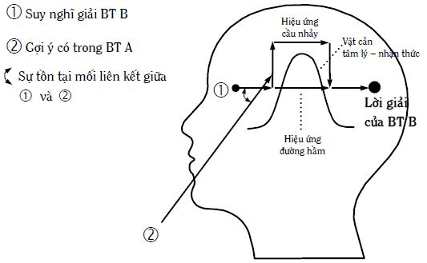
Hình 52: Mô hình giải thích thí nghiệm
- Quay trở lại các câu chuyện về Archimedes, Newton… chúng ta có thể thấy sự hiện diện của cả bốn yếu tố thuộc mô hình nói trên:
1. Đường suy nghĩ 1: Tất cả các nhà phát minh, sáng chế lúc đó đều đang suy nghĩ về bài toán của mình chứ không phải ở trạng thái đầu óc vô tư. Cụ thể, Archimedes đang suy nghĩ giải bài toán vua giao (xem mục 3.1 Từ Heuristics đến Creatology: Vài nét lịch sử ở quyển một). Newton đang tìm cách khái quát hóa các kết quả nghiên cứu riêng lẻ của nhiều người trước đó. Kỹ sư thiết kế cầu cho ngành đường sắt Brandt đang suy nghĩ trả lời câu hỏi: Ở nơi khe sâu với vách dựng đứng, không xây được trụ ở giữa để đỡ cầu, vậy cây cầu có thể giữ bằng gì? Tương tự như vậy đối với những người khác.
2. Vật cản tâm lý–nhận thức thể hiện ở chỗ, mặc dù họ vẫn đang suy nghĩ nhưng không tiến thêm được bước nào về phía ý tưởng lời giải.
3. Đường truyền thông tin 2: Nếu thông tin đến từ bên ngoài, thông tin được các giác quan của cá nhân tiếp thu và truyền lên vỏ não, nơi đang diễn ra quá trình suy nghĩ giải bài toán. Ví dụ, nước đẩy người lên, táo rơi, mạng nhện… Nếu thông tin đến từ bên trong, như trường hợp nằm mơ chẳng hạn, chúng ta cũng có đường truyền thông tin 2.
4. Mối liên kết giữa đường 1 và đường 2 thể hiện ở việc, các nhà phát minh, sáng chế nói trên bắt và sử dụng được các “gợi ý” là các giá trị do các thông tin đường 2 mang lại. Nhờ vậy, họ đã giải được các bài toán của mình.
- Khái quát lên, mô hình tính nhạy bén tư duy có thể biểu diễn thành Hình 53. Trong đó, Hình 53a dành cho trường hợp thông tin đến từ bên ngoài và Hình 53b – thông tin bên trong.
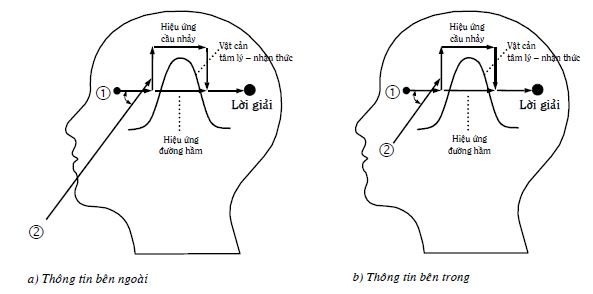
Hình 53: Mô hình tính nhạy bén tư duy
Mô hình tính nhạy bén tư duy nói lên nhiều điều. Dưới đây, người viết trình bày một số, bạn đọc còn có thể tìm thêm để trả lời các câu hỏi nêu ra trong phần đầu của mục nhỏ 6.4.5 này.
1. Lời giải bài toán cho trước phụ thuộc vào tổ hợp các thông số của bốn yếu tố: Đường 1, đường 2, mối liên kết hai đường và vật cản tâm lý–nhận thức. Rất tiếc, đến nay, các thông số của bốn yếu tố nói trên còn chưa được các nhà nghiên cứu làm rõ một cách định tính để đặt tên, lại càng chưa nói gì đến định lượng. Trong khi chờ đợi điều đó xảy ra, thay vì các khái niệm khoa học, người viết đành phải dùng những khái niệm đời thường để trình bày những ý mình định nói và nhấn mạnh một số trường hợp đặc biệt, xem Hình 54: Bảng một số khả năng của bốn yếu tố thuộc mô hình tính nhạy bén tư duy.
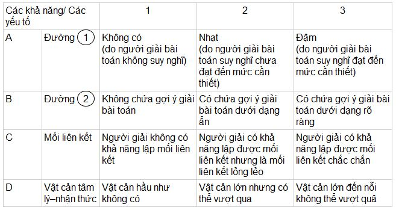
Hình 54: Bảng một số khả năng của bốn yếu tố thuộc mô hình tính nhạy bén tư duy
Trước hết, người viết giải thích các thông số có trong Hình 54.
A1: Tuy có bài toán nhưng người giải không suy nghĩ giải nó vì nhiều lý do, như bài toán không xuất phát từ nhu cầu cấp bách của cá nhân; cá nhân không có xúc cảm thúc đẩy suy nghĩ; cá nhân cho rằng người khác phải giải chứ không phải là mình… Rõ ràng, không có đường 1 (đường cầu) thì đường 2 (đường cung) không có ý nghĩa gì, dù đường 2 có thể chứa những gợi ý (thông tin) quý hơn vàng.
A2: Người giải có suy nghĩ giải bài toán nhưng chưa đạt đến mức cần thiết, hiểu theo nghĩa, chưa đủ để có thể bắt được gợi ý, dù đấy là gợi ý rõ ràng có trong đường 2.
A3: Người giải suy nghĩ đạt đến mức cần thiết, hiểu theo nghĩa, có thể bắt được gợi ý, dù đấy là gợi ý dưới dạng ẩn có trong đường 2.
B1: Thông tin có trong đường 2 không liên quan đến bài toán đang giải, nói cách khác, không chứa gợi ý giúp giải bài toán cho trước. Trong trường hợp này sẽ không xảy ra các hiệu ứng cầu nhảy hoặc đường hầm.
B2: Thông tin có trong đường 2 chứa gợi ý giải bài toán cho trước dưới dạng ẩn, hiểu theo nghĩa, nếu người giải bắt được gợi ý một cách chắc chắn, người suy nghĩ có thể vượt qua được vật cản tâm lý–nhận thức để đi đến ý tưởng lời giải của bài toán cho trước.
B3: Thông tin có trong đường 2 chứa gợi ý rõ ràng giải bài toán, hiểu theo nghĩa, kể cả người chỉ lập được mối liên kết lỏng lẻo giữa hai đường 1 và 2 cũng có thể dễ dàng bắt được gợi ý.
C1: Không lập được mối liên kết, người suy nghĩ bỏ qua cả những gợi ý rõ ràng giúp giải bài toán cho trước.
C2: Mối liên kết lỏng lẻo giúp bắt được gợi ý rõ ràng nhưng chỉ bắt được gợi ý dưới dạng ẩn với một xác suất nào đó.
C3: Mối liên kết chắc chắn giúp bắt được cả những gợi ý rõ ràng và những gợi ý dưới dạng ẩn.
D1: Đây là bài toán dễ, không cần gợi ý vẫn có thể giải được.
D2: Đây là bài toán khó, cần có những gợi ý mới để giúp vượt qua vật cản tâm lý–nhận thức.
D3: Đây là bài toán không giải được trong các điều kiện hiện nay về tri thức, phương tiện… Nói cách khác, nó có thể giải được trong tương lai, sau khi các tiền đề cần thiết xuất hiện.
Công thức tổng quát Aa – Bb – Cc – Dd với a, b, c, d = 1 ÷ 3 cho chúng ta 81 trường hợp của mô hình tính nhạy bén tư duy. Nếu chi tiết hóa các khả năng của các yếu tố A, B, C, D thêm nữa, số các trường hợp còn tăng lên gấp bội. Chúng ta thử xem xét một số trong những trường hợp đó.
| a) | A1 – Bb – Cc – Dd, trong đó b, c, d = 1 ÷ 3 | : Bài toán không được giải. |
| b) | Aa – Bb – Cc – D3, trong đó a, b, c = 1 ÷ 3 | : Bài toán chưa giải được trong tình hình hiện nay. |
| c) | A2 (hoặc A3) – Bb – Cc – D1, trong đó b, c = 1 ÷ 3 | : Bài toán dễ. |
| d) | A3 – B3 – C3 – D2 | : Bài toán khó và giải được một cách chắc chắn nhờ hiệu ứng cầu nhảy. |
| e) \[ | A3 – B3 – C2 – D2\]\[r1\] \[A\[3\]r7 – B2 – C2 – D2]r1 A2 – B3 – C2 – D2 | : Bài toán khó, giải được với một xác suất nào đó nhờ hiệu ứng đường hầm. |
2. Theo mô hình trên Hình 53, ngoài may mắn có những gợi ý tình cờ từ bên ngoài hoặc bên trong (nằm mơ), tính nhạy bén tư duy cao của người giải thể hiện ở chỗ người giải có đường 1 đậm và có khả năng lập được mối liên kết chắc chắn. Để có đường 1 đậm, người giải phải thực sự suy nghĩ về bài toán với những xúc cảm phù hợp. Để minh họa, chúng ta cùng xem xét hai trường hợp cực đoan dưới đây.
Nếu chúng ta làm thí nghiệm, thử để tiền, vàng trên đường thì bất cứ ai đi qua tình cờ trông thấy, chắc chắn sẽ nhặt lên, hoặc để trả cho người mất, hoặc để… mình dùng hộ. Điều này có thể giải thích dựa trên mô hình tính nhạy bén tư duy. Trong xã hội, người nào trong đầu cũng biết: Tiền, vàng là quý, đem lại nhiều ích lợi, thỏa mãn nhiều loại nhu cầu cá nhân. Người nào cũng luôn mong muốn, thậm chí, khao khát có nhiều tiền, vàng nhưng không biết cách làm sao đạt được mục đích đó: Luôn có vấn đề về tiền, vàng. Nói cách khác, đường 1 về tiền, vàng rất đậm trong đầu mỗi người. Nay thấy tiền, vàng nằm sẵn trên đường: Thông tin trong đường 2 là gợi ý quá rõ ràng. Người trông thấy tiền, vàng lập mối liên kết giữa đường 1 và đường 2 không chút khó khăn, nhờ hiệu ứng cầu nhảy, vượt qua vật cản tâm lý-nhận thức để đi đến ý tưởng và hành động: Phải nhặt tiền, vàng lên ngay, không thể để những vật quý như vậy bị mất một cách oan uổng.
Có bộ lạc trong rừng sâu còn đang sống trong thời kỳ nguyên thủy. Một hôm, tù trưởng của bộ lạc đi trên con đường mòn thì nhìn thấy cục vàng lớn, nặng khoảng vài kilôgram. Ông cúi xuống nhặt lên, ném xuống khe, rồi nói với những người đi sau: “Các con thấy các cục đá trên đường thì phải nhớ vứt đi để những người đi sau không bị vấp nghe chưa!”.
Bạn đọc có thể thấy, có nhiều vàng không phải là vấn đề của bộ lạc và trong đầu họ không có đường 1 về vàng. Mặt khác, có thể ông tù trưởng đang trăn trở suy nghĩ về vấn đề an toàn. Đường 1 đậm trong đầu ông là tìm kiếm các nguyên nhân gây tai nạn. Do vậy, thông tin trong đường 2 được tiếp thu, hiểu theo nghĩa và giá trị khác hẳn so với chúng ta. Ông tù trưởng coi cục vàng là vật cản đường dễ gây tai nạn và đưa ra quyết định ném cục vàng xuống khe.
Tuy nhiên, chúng ta thấy tiếc cho ông tù trưởng và bộ lạc nói trên vì đã đánh mất một cơ hội bằng vàng, hiểu cả nghĩa đen lẫn nghĩa bóng, mà mình không biết. Lịch sử của các quốc gia và thực tế cuộc đời của nhiều người cho thấy, nhiều khi do không có những đường 1 thích hợp, người ta đã bỏ lỡ nhiều cơ hội phát triển và để cho các quốc gia khác, những người khác vượt qua mình. Do vậy, để tránh tụt hậu, bạn đọc cần xây dựng các đường 1 phù hợp với các quy luật phát triển.
Không phải ngẫu nhiên, L. Pasteur nhận xét: “Dịp may chỉ đem lại ích lợi cho bộ óc được chuẩn bị”, hoặc Lagrange cũng có ý kiến tương tự: “Những người gặp may là những người xứng đáng với sự may mắn đó”, hoặc người Anh có câu: “Trời chỉ giúp người nào tự cứu mình”. Nói cách khác, dịp may chỉ đem lại ích lợi cho những người có đường 1 đậm ở trong đầu và những người như vậy xứng đáng với sự may mắn có được. Nếu chúng ta không có những đường 1 đậm trong đầu về sự phát triển, chúng ta sẽ không bắt được các cơ hội phát triển, mà cơ hội phát triển không phải ngày nào cũng đến. Lúc đó, chúng ta sẽ trở thành những người lỡ tàu.
Ngoài ra, khả năng lập được mối liên kết chắc chắn không chỉ là bẩm sinh mà có thể đạt được nhờ luyện tập. Người viết còn trở lại vấn đề này trong những phần sau.
3. Mô hình tính nhạy bén tư duy giúp chúng ta giải thích vì sao trong xã hội có những người, khi được cung cấp đúng cái mà họ nói là họ rất cần, lại tiếp nhận cái đó một cách dửng dưng, vô cảm, chứ không phải vồ vập, phấn khởi. Hoặc, vì sao có những người hành động không trùng, thậm chí ngược hoàn toàn với lời họ nói. Có những người nói một đằng, nghĩ một nẻo và hành động theo kiểu thứ ba. Bạn đọc có thể thấy, những người đó không có đường 1 trong đầu về những điều họ nói. Còn hành động cá nhân (xem Chương 5: Từ nhu cầu đến hành động và ngược lại) lại có nguồn gốc là các nhu cầu của cá nhân và nhằm thỏa mãn chúng. Tư duy và lời nói không phải là gốc của hành động, không phải là những động cơ mạnh thúc đẩy hành động.
4. Mô hình tính nhạy bén tư duy còn cho thấy, nếu người suy nghĩ giải bài toán tiếp thu thông tin có trong đường 2 không chọn lọc, cân nhắc (xem mục nhỏ 6.4.2 Tiếp thu thông tin và các mức độ hiểu) thì có thể làm tăng số lượng các phép thử sai. Điều này có thể hiểu được vì có những thông tin trong đường 2 không chứa gợi ý giúp giải bài toán. Người suy nghĩ thay vì loại bỏ chúng, lại sử dụng chúng, dẫn đến sai và trả giá nhiều hơn. Chưa kể, nếu đường 1 của người suy nghĩ bị các nhu cầu, xúc cảm không thích hợp chi phối quá độ, sự trả giá có khi rất đắt. Những người như vậy thường rất dễ bị những người khác lừa phỉnh. Dưới đây là vài câu chuyện, tóm tắt từ các bài báo phản ánh ý vừa nêu.
○ Những bà mẹ có con suy dinh dưỡng luôn lo lắng làm sao con mình hay ăn, chóng lớn. Tại phòng mạch tư ở quận Bình Thạnh, TpHCM, bác sỹ Y. chỉ hỏi tuổi, cho lên cân rồi chích cho mỗi bé hai mũi, bán thêm hai bịch thuốc rồi tính 160.000 đồng. Xong bác sỹ dặn: “Lần sau đến lấy thuốc khỏi cần mang con theo”. Tất cả các thuốc này đều không có nhãn, mác và nhiều dược sỹ có trách nhiệm khi được cho xem cũng không biết thuốc gì. Tuy vậy, nghe nói bác sỹ Y. cho thuốc, con nít ăn dữ lắm, nhiều người dân thành phố và các tỉnh như Long An, Bình Dương, Tây Ninh, Đồng Nai, Bình Phước… xuống tận nơi khám và mua thuốc cho con. Tình hình chỉ chấm dứt khi có sự thanh tra đột xuất của Sở y tế TpHCM và Phòng y tế quận Bình Thạnh vào cuối tháng 10 năm 2003. Kết quả cho thấy, đây là một vụ lừa đảo (Bài báo “Sự thật về một bác sỹ: Chuyên làm cho trẻ em… mập ú”, Lê Thanh Hà, báo Tuổi Trẻ, 31/10/2003).
○ Những người muốn thăng quan, tiến chức dễ dàng hoặc muốn có những phi vụ làm ăn đi cửa sau trót lọt, thường rất muốn có ô dù nâng đỡ hoặc kết thân với những người có quyền lực, quen biết rộng. Họ sẵn sàng chi đẹp để đạt các mục đích của mình. Hiểu rõ điều đó, nên Đ.A.Q (sinh năm 1945, ngụ tại quận 10, TpHCM) từng đi lính chế độ cũ, từng bị Bệnh viện Bình Dân buộc thôi việc do giả mạo giấy tờ, đã tạo ra vỏ bọc thích hợp để lừa đảo, chiếm đoạt tài sản của những đối tượng nói trên. Y trang bị cho mình đầy đủ các phương tiện để dễ làm những người khác tin, từ quần, áo, điện thoại di động đến ô tô có ăng ten, còi ưu tiên, bộ đàm như xe đặc chủng của quân đội dành cho cấp tướng. Đi đâu, gặp ai Q. cũng tự xưng là “Hai Nhỏ, trung tướng Cục tình báo quân đội”. Kết quả, nhiều doanh nghiệp, cơ quan, đoàn thể của nhiều tỉnh, thành đã săn đón và bị Q. lừa nhiều trăm triệu đồng tiền mặt cùng quà cáp. Tòa án nhân dân TpHCM đã đưa “Hai Nhỏ” ra xét xử sơ thẩm ngày 30.6.2003 và tuyên phạt 12 năm tù giam (Bài báo “Trung tướng Hai Nhỏ” ra tòa”, Võ Hồng Quỳnh, báo Tuổi Trẻ, 1/7/2003).
○ Ngày 15.7.2003, đại tá Đào Trọng Sỹ – phó giám đốc Công an Hà Nội – thông báo đã khởi tố và bắt giữ ba đối tượng gồm B.N.N. – giám đốc Công ty cổ phần cung ứng thiết bị vật tư, C.T.T.L. – không nghề nghiệp và N.T.H. – thợ ảnh tự do. Ba tên này đã đội lốt nhân viên sứ quán, cán bộ kế hoạch-đầu tư, ngân hàng lừa đảo “chạy” vốn cho 211 dự án viện trợ ODA (viện trợ phát triển chính thức của các tổ chức quốc tế). Trong đó, đa số dự án xin vốn để xây trường học, các công trình y tế, nước sạch, làm đường giao thông, phát triển thủy sản và thậm chí cả xây dựng đài tưởng niệm liệt sỹ. Mỗi dự án xin vốn (trung bình 3 – 4 tỷ đồng), chúng đòi “lại quả” 7 – 8% và buộc bên xin vốn phải ứng trước phí giao dịch từ 40 đến 50 triệu đồng cho một dự án. Nhận định về vụ án này, đại tá Đào Trọng Sỹ cho rằng bọn tội phạm đánh vào tâm lý cần tiền và tâm lý “xin – cho” đã quá quen lâu nay của các địa phương và họ bấm bụng vay mượn để ứng trước tiền cho nhóm lừa đảo. Đã có 32 địa phương “lọt” vào danh sách những nạn nhân. Đứng đầu là Hà Tây với 40 dự án, Hà Nam – 14, Thái Bình –11, Nghệ An, Phú Thọ, Hòa Bình – đều 10 dự án, Hà Nội – 8, TpHCM – 2… Đặc biệt, tại Hà Nội, có những dự án “rất kêu” như xây dựng nhà cứu trợ trẻ em tàn tật Nam Sơn, xây dựng siêu thị Bắc Đô ở Cầu Chui, Gia Lâm. Theo lời khai ban đầu, ba bị can đã thú nhận lừa lấy được 217 triệu đồng và 1.000 USD tiền cò (theo Hồng Quân, báo Sài Gòn Giải Phóng ra ngày 16/7/2003).
5. Mô hình tính nhạy bén tư duy giúp các thầy, cô giáo, một mặt, đánh giá người học có thực sự suy nghĩ hay không. Ví dụ, chắc chắn có sự khác nhau về mức độ suy nghĩ (đường 1 và mối liên kết) giữa bốn em học sinh: Em thứ nhất giải được bài toán không cần gợi ý (không cần đường 2); em thứ hai giải được bài toán sau khi thầy, cô giáo cho gợi ý ẩn; em thứ ba chỉ giải được bài toán sau khi nhận được gợi ý rõ ràng từ thầy, cô; em thứ tư vẫn không giải được bài toán kể cả khi nhận được gợi ý rất rõ ràng.
Mặt khác, các thầy, cô giáo trên cơ sở mô hình tính nhạy bén tư duy có thể xây dựng những bài giảng, những buổi chữa bài tập giúp người học rèn luyện tính nhạy bén tư duy. Ví dụ, để tiếp thu tốt các kiến thức (đường 2), trước đó, thầy, cô nên tạo các đường 1 trong đầu người học và tạo điều kiện để người học tự bắt được những kiến thức đó (tự lập mối liên kết giữa đường 1 – suy nghĩ của bản thân người học và đường 2 – kiến thức được thầy, cô trình bày)…
6. Về phía người học, nếu kiến thức mới thu theo đường 2 chỉ được trí nhớ lưu giữ một cách máy móc theo kiểu học thuộc lòng thì kiến thức mới đó chỉ là kiến thức xơ cứng, giáo điều, hiểu theo nghĩa, người học khó có thể áp dụng kiến thức mới đó một cách sáng tạo. Muốn kiến thức mới phát huy tác dụng, theo mô hình tính nhạy bén tư duy, người học phải có ý thức biến nó thành đường 1 mới trong đầu của mình. Để làm điều đó, người học chỉ cần đặt các câu hỏi về kiến thức mới tiếp thu theo đường 2, chẳng hạn như: Ở đâu có thể lấy thêm các ví dụ minh họa kiến thức mới? Kiến thức mới có phạm vi áp dụng như thế nào? Kiến thức mới ảnh hưởng đến những kiến thức đã biết của mình ra sao? Kiến thức mới có thể đem lại những ích lợi gì? Làm sao có thể biến những ích lợi tiềm ẩn đó thành hiện thực?… Trả lời những câu hỏi này, người học phải suy nghĩ để tạo đường 2 trong đầu (tìm gợi ý bên trong, xem Hình 53b); hoặc phải tìm thông tin theo đường 2 bên ngoài một cách chủ động nhờ thư viện, Internet…; hoặc nhờ vậy mà dễ bắt được thông tin gợi ý theo đường 2 đến một cách tình cờ, may mắn, giống các câu chuyện có ở đầu mục nhỏ này (xem Hình 53a). Tự đặt các câu hỏi đối với các kiến thức tiếp thu và cố gắng tự trả lời chúng giúp người học rất nhiều trong việc luyện tập để tăng tính nhạy bén tư duy của chính mình. Về mặt đặt các câu hỏi, người lớn chúng ta thua trẻ con. Càng lớn tuổi, người lớn càng “yên phận”, càng bớt đi những tò mò, khám phá.
7. Tính nhạy bén tư duy đóng vai trò rất quan trọng trong quá trình biến đổi thông tin thành tri thức, tri thức đã biết thành tri thức mới.
Quả thật, đường 1 chứa thông tin và tri thức đã biết liên quan đến bài toán và quá trình suy nghĩ của người giải bài toán. Đường 2 nếu đến từ bên ngoài, mang thông tin gợi ý giải bài toán. Đường 2, nếu do bên trong tạo nên, cũng chứa thông tin gợi ý giải bài toán. Mối liên kết giữa hai đường, thực chất, có chức năng biến đổi các thông tin (tri thức đã biết) của đường 1 và đường 2 thành tri thức (tri thức mới). Ý tưởng lời giải bài toán chính là tri thức (tri thức mới) do người giải bài toán tạo ra, vì nó đem lại ích lợi cho người suy nghĩ: Đạt được mục đích đề ra trong lời phát biểu bài toán. Hình 55a và 55b được giải thích lại theo cách xem xét vừa nêu.
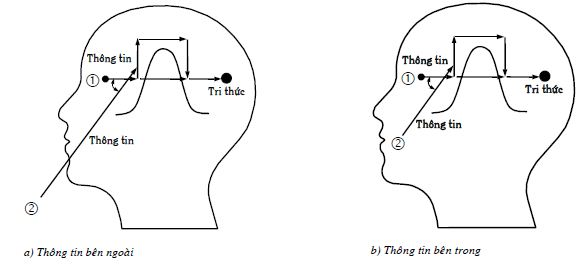
Hình 55: Tính nhạy bén tư duy và quá trình biến đổi thông tin thành tri thức và tri thức đã biết thành tri thức mới
Nói riêng, tính nhạy bén tư duy rất cần cho cá nhân tham gia kinh tế tri thức để biến thông tin thành tri thức và tri thức ra tiền. Nói cách khác, cá nhân có khả năng phát hiện các cơ hội dưới dạng các thông tin và sử dụng chúng để thành công về kinh tế. Nói chung, tính nhạy bén tư duy rất cần cho cá nhân sống trong thời đại tri thức để biến thông tin thành tri thức, hiểu theo nghĩa, biến các thông tin, tri thức mình có thành lời giải các bài toán gặp trong suốt cuộc đời của mình, kể cả các bài toán kinh tế. Nói cách khác, xã hội tri thức đòi hỏi mỗi công dân có tính nhạy bén tư duy cao và việc trang bị cho mỗi công dân có tính nhạy bén tư duy cao sẽ giúp cho xã hội tri thức đến nhanh.
PPLSTVĐM trang bị các công cụ, giúp làm tăng tính nhạy bén tư duy của những người sử dụng. Cụ thể, các công cụ này giúp những người sử dụng biết phát hiện các vấn đề, suy nghĩ về chúng: Tạo các đường 1 trong đầu; chủ động tạo ra các đường 2 bên ngoài hoặc bên trong: Tạo ra các gợi ý; thiết lập mối liên kết giữa hai đường với độ tin cậy cao. Nói cách khác, để làm tăng tính nhạy bén tư duy của những người sử dụng, các công cụ của PPLSTVĐM được xây dựng dựa trên các quy luật phát triển khách quan của hệ thống, hạn chế tối đa những sai lầm do chủ quan của những người suy nghĩ giải quyết vấn đề và ra quyết định gây ra.
Tiếp theo, trong các mục nhỏ còn lại của mục 6.4 này, người viết sẽ trình bày thêm một số hiện tượng tâm lý như liên tưởng, hai lời khuyên để tìm thông tin ý tưởng với hiệu quả cao, linh tính và trí tưởng tượng. Chúng đóng vai trò quan trọng trong việc thiết lập mối liên kết và tìm ra những đường 2 (bên ngoài hoặc bên trong), là những đường cung cấp các thông tin gợi ý phát ý tưởng giải bài toán.
Ngoài ra, trong mục 6.5 Tính ì tâm lý, người viết sẽ thảo luận nhiều hơn về vật cản tâm lý-nhận thức, là điều còn ít được nói đến trong mục nhỏ này. Thực tế cho thấy, có những trường hợp, bài toán không giải được không phải vì người giải không đủ kiến thức… mà vì người giải không vượt qua được vật cản tâm lý-nhận thức do chính mình tạo ra. Có những trường hợp, vật cản tâm lý-nhận thức mang tính khách quan. Để vượt qua nó, người giải phải được trang bị hoặc tự trang bị thêm những thông tin, kiến thức, công cụ… mới. Nói cách khác, bốn yếu tố: Đường 1, đường 2, mối liên kết và vật cản tâm lý-nhận thức phải được xem xét như những yếu tố tương tác lẫn nhau, không thể tách rời theo quan điểm hệ thống, nếu mỗi người chúng ta muốn nâng cao tính nhạy bén tư duy của mình.
6.4.6 Liên tưởng
Liên tưởng là hoạt động của bộ óc liên kết các ý nghĩ về những sự kiện, ý tưởng này với các ý nghĩ về những sự kiện, ý tưởng khác. Ví dụ, bạn nhìn thấy quả chanh hoặc trong đầu bạn có ý nghĩ về quả chanh, bạn có thể liên tưởng tiếp đến khế, đến me. Nghĩ đến me, bạn có thể liên tưởng tiếp nữa đến ô mai me, tuổi ô mai… Ai cũng có khả năng liên tưởng, tùy người cụ thể, có thể gần hay xa, rất xa.
Tính liên tưởng có nguyên nhân khách quan và chủ quan. Các đối tượng khách quan không tồn tại độc lập, cách ly mà liên kết với nhau. Do vậy, khi con người tiếp thu thông tin về chúng thông qua các giác quan, cũng tiếp thu luôn cả những thông tin về các mối liên kết giữa chúng. Điều này giúp thông qua các mối liên kết, người ta có thể từ đối tượng này, liên tưởng đến đối tượng khác. Mặt khác, theo I.P. Pavlov, người sáng lập ra học thuyết phản xạ có điều kiện – cơ sở sinh lý của các hiện tượng tâm lý: Bộ óc chủ quan vốn có khả năng tạo nên những đường liên hệ thần kinh tạm thời mới (các mối liên kết) giữa các trung khu thần kinh khác nhau. Điều này làm cho trong vỏ não, khi có ý nghĩ nào đó nảy sinh, nó có thể kéo các ý nghĩ khác xuất hiện theo (liên tưởng).
Con người suy nghĩ bằng các khái niệm, thể hiện dưới dạng các từ ngữ. Do vậy, sự liên tưởng theo các từ ngữ là điều thường xảy ra. Dựa trên các thí nghiệm, E. Golovan và V. Starints cho rằng, đối với hai khái niệm (từ ngữ) bất kỳ, người ta có thể liên tưởng từ khái niệm này đến khái niệm kia thông qua, nhiều lắm, là từ bốn đến năm bước lập mối liên kết trực tiếp (liên tưởng trực tiếp). Ví dụ, chúng ta lấy hai từ khác nhau “trời” và “trà”. Bằng bốn bước liên tưởng trực tiếp, chúng ta có thể từ cái này “suy ra” cái kia:
- Trời → Đất; 2) Đất → Nước; 3) Nước → Uống; 4) Uống → Trà
Điều này có thể hiểu được vì mỗi khái niệm (từ ngữ), trung bình, có mười mối liên kết trực tiếp. Ví dụ, từ _“trời__”_ giúp bạn liên tưởng trực tiếp đến những từ khác như:
| 1) Trời → Đất | 5) Trời → Biết | 9) Trời → Xanh |
| 2) Trời → Phật | 6) Trời → Có mắt | 10) Trời → Sập |
| 3) Trời → Thương | 7) Trời → Gầm | … |
| 4) Trời → Phạt | 8) Trời → Mây | … |
Từ mỗi trong mười liên tưởng trực tiếp ở bước một, bạn lại có mười từ ngữ nếu thực hiện thêm bước liên tưởng thứ hai, thành 100 (102)… Cứ như thế, đến bước thứ tư, bạn có 104; bước thứ năm – 105… các từ ngữ có được nhờ liên tưởng, hình thành “sơ đồ cây”. Tình hình phức tạp hơn nữa nảy sinh, khi thực tế cho thấy, chính các từ ngữ có được nhờ liên tưởng, lại còn liên kết với nhau. Lúc đó, “sơ đồ cây” biến thành “sơ đồ mạng lưới”. Điều này có nghĩa, ngay trong quá trình tiếp thu thông tin và quá trình nhớ, bộ óc con người đã làm công việc xử lý, biến đổi thông tin chứ không giống như quá trình tiếp thu thông tin và nhớ máy móc của máy tính. Đây cũng là một thách thức rất lớn đối với những người làm việc trong lĩnh vực trí tuệ nhân tạo.
Mạng lưới nói trên có rất nhiều tác dụng, chẳng hạn, nó giúp nhanh chóng tìm kiếm và lấy ra đúng thông tin (tri thức) cần thiết lưu giữ trong trí nhớ (tính sẵn sàng của trí nhớ) để hiểu thông tin tiếp thu, dựa trên sự kích thích một số chứ không phải tất cả các nút của mạng. Các thí nghiệm dưới đây phản ánh điều đó:
Các nhà nghiên cứu đề nghị những người tham gia thí nghiệm lắng nghe một số câu nói phát ra từ máy ghi âm. Trong mỗi câu có một từ bị nhiễu đến mức chắc chắn không nghe hiểu trong lần đầu tiên mà phải nghe đi, nghe lại nhiều lần. Các câu nói gồm hai loại: Có nghĩa và vô nghĩa. Ví dụ, hai câu sau: “Trời mưa ngoài cửa sổ” và “Con hà mã nằm trong đĩa đựng thức ăn”. Trong đó, các từ “cửa sổ” và “con hà mã” bị nhiễu với mức độ giống nhau. Kết quả thí nghiệm cho thấy, đối với câu có nghĩa, những người tham gia thí nghiệm cần nghe khoảng năm – sáu lần để hiểu. Đối với câu vô nghĩa phải nghe đến mười – mười lăm lần mới hiểu, tức là gấp hai đến ba lần nhiều hơn so với câu có nghĩa.
Những thí nghiệm tương tự còn cho thấy, những người mắc một số thể của bệnh tinh thần phân lập thì không có sự khác nhau giữa những câu có nghĩa và vô nghĩa: Đối với họ, hiểu cả hai loại câu đều khó khăn như nhau.
Một ví dụ khác, có người hỏi bạn về tên loại trái cây nặng khoảng vài kilô, ruột đỏ hoặc vàng. Với chừng đó thông tin thôi chắc bạn dễ dàng đoán ra đấy chính là dưa hấu. Khi đoán ra rồi, bạn còn có thể liệt kê tiếp các thông tin khác phản ánh quả dưa hấu như vỏ màu xanh hoặc xanh đen, dạng hình cầu hoặc bầu dục, thịt trái dưa hấu xốp, nhiều nước, vị ngọt…
Tất cả những điều trên chỉ ra rằng, trong trí nhớ của người khỏe mạnh bình thường, các từ ngữ liên kết lại thành mạng lưới phản ánh trọn gói một nguyên mẫu nào đó. Nếu nút nào trên mạng lưới được kích thích thì kích thích đó được truyền tiếp trong toàn mạng nhờ các mối liên kết giữa những nút đó và giúp tái hiện nguyên mẫu trong thời gian ngắn. Nói cách khác, mạng lưới liên tưởng giúp chúng ta lấy ra từ trí nhớ thông tin về toàn bộ đối tượng trong khi thông tin tiếp thu chỉ phản ánh một số phần của đối tượng.
Tuy nhiên, theo thời gian, từng mạng lưới liên tưởng có thể thay đổi và các mạng lưới liên tưởng khác nhau có thể liên kết với nhau. Điều này làm những gì lưu giữ trong trí nhớ có thể bị thay đổi theo thời gian. Khi bạn hồi tưởng lại một sự kiện nào đó, tuy bạn không cố ý, có thể có một số chi tiết bị rơi rụng mất hoặc/và một số chi tiết được cho thêm vào.
Bên cạnh sự liên tưởng nhờ ngôn ngữ, còn có liên tưởng bằng hình vẽ, hình ảnh và giữa chúng có sự khác nhau nhất định. Khi đưa ra từ “cái búa”, những người tham gia thí nghiệm thường liên tưởng đến “đinh”, “kìm”… Nhưng khi đưa ra hình vẽ cái búa, họ lại liên tưởng đến “đóng”, “gõ”, “đập”. Tương tự như vậy, khi nghe từ “cái ly”, họ liên tưởng đến “nước”. Nhưng nếu cho xem hình vẽ “cái ly”, họ liên tưởng đến “uống”, “nhậu”, “đánh vỡ”. Nói cách khác, sự khác nhau thể hiện ở chỗ, với từ ngữ, người ta thường liên tưởng đến sự vật, sự việc; với các hình vẽ, hình ảnh, người ta thường liên tưởng đến các hành động (động từ). Người suy nghĩ nên sử dụng cả hai loại liên tưởng nói trên để có thêm nhiều ý tưởng, do vậy, xác suất có ý tưởng bất ngờ, độc đáo và ích lợi cũng tăng thêm.
Tất cả những gì liên quan đến liên tưởng và trí nhớ liên tưởng trình bày ở trên, cần phải được người suy nghĩ tính đến để phát huy các mặt mạnh, hạn chế các mặt yếu của chúng. Như bạn đọc đã biết (xem mục nhỏ 6.4.1 Trí nhớ), trí nhớ chi phối tất cả các giai đoạn của quá trình suy nghĩ nói riêng, các hoạt động tâm lý nói chung.
Trên thực tế, các mối liên kết rất đa dạng nên suy nghĩ theo kiểu từ ý nghĩ này liên tưởng đến ý nghĩ khác cũng rất đa dạng và tự do chứ không giống suy nghĩ bắt buộc theo một lôgích với những quy tắc nhất định của một khoa học hoặc chuyên môn, nghề nghiệp nào đó. Bạn đọc thử so sánh để thấy sự khác nhau giữa suy nghĩ theo lôgích toán học để giải bài toán “gà, chó” (xem mục nhỏ 6.3.4 Các ích lợi và hạn chế của lý thuyết thông tin đối với tư duy sáng tạo) và suy nghĩ của Trạng Quỳnh đưa ra dưới đây: “Đại phong là gió lớn, gió lớn thì đổ chùa, đổ chùa thì tượng lo, tượng lo là lọ tương” (từ “đại phong” suy ra “lọ tương”).
Cũng vì tính đa dạng lớn và bậc tự do cao của suy nghĩ theo kiểu liên tưởng, nếu nói quá lên một chút thì, “lôgích liên tưởng” bao gồm tất cả các loại lôgích có thể có. Chúng ta cùng nhau quay trở lại ví dụ quả chanh ở phần đầu mục này. Từ quả chanh liên tưởng đến chua: Lôgích phân tích hoặc trừu tượng hóa; từ chua liên tưởng đến khế: Đi từ trừu tượng đến cụ thể; từ khế đến me: Tương tự hóa; từ me đến ô mai me: Lôgích phát triển; từ ô mai me đến tuổi ô mai: Khái quát hóa… (xem mục nhỏ 6.4.4 Xử lý thông tin). Tính đa dạng lớn và bậc tự do cao của “lôgích liên tưởng” còn thể hiện ở chỗ, xuất phát từ một đối tượng, có thể có nhiều hướng liên tưởng khác nhau. Ví dụ, nếu nhấn mạnh hình thù, kích thước quả chanh, bạn có thể liên tưởng theo hướng khác: Quả chanh – quả bóng bàn – thể thao – bóng đá – Pele – Brazil – Nam Mỹ – người da đỏ… Ngoài ra, cũng xuất phát từ cùng một đối tượng nhưng những người khác nhau có thể liên tưởng khác nhau. Ví dụ, xuất phát từ quả chanh, ở ai đó có thể có chuỗi liên tưởng sau: Quả chanh – chua – khế – me – bài hát về hàng me – âm nhạc – hội họa – tranh vẽ…
Tính đa dạng lớn, bậc tự do cao của “lôgích liên tưởng”, nếu dùng đúng phạm vi áp dụng, đóng vai trò rất quan trọng trong việc nâng cao tính nhạy bén tư duy: Tạo lập mối liên kết, tìm ra các đường 2 (xem mục nhỏ 6.4.5 Tính nhạy bén của tư duy) và chuyển giao các ý tưởng thuộc đối tượng, lĩnh vực này sang dùng thành công ở đối tượng, lĩnh vực khác. Việc chuyển giao ý tưởng nhờ liên tưởng có thể diễn ra theo ba khả năng của mối liên kết:
1. Chiều liên kết từ đường 2 sang đường 1 (xem các ví dụ có trong phần đầu mục nhỏ 6.4.5 Tính nhạy bén của tư duy). Điểm chung trong các ví dụ này là, khi tiếp thu thông tin theo đường 2, người suy nghĩ luôn liên tưởng đến bài toán mà mình đang suy nghĩ giải (đường 1). Trong trường hợp này, ý tưởng được chuyển giao từ đường 2 sang đường 1.
2. Chiều liên kết từ đường 1 sang đường 2. Ví dụ, bạn biết cách (ý tưởng) sản xuất mì ăn liền, bạn suy nghĩ để trả lời câu hỏi: “Ý tưởng đó còn có thể dùng ở đâu được nữa?”, bạn có đường 1 trong đầu. Đồng thời, trong đầu bạn có chuỗi liên tưởng mì – phở – bún – miến…, bạn có đường 2 trong đầu. Chiều liên kết từ đường 1 sang đường 2 giúp bạn trả lời câu hỏi của mình: “À mình có thể dùng ý tưởng sản xuất mì ăn liền để sản xuất phở, bún, miến… ăn liền” (chuyển giao ý tưởng).
3. Cả hai chiều liên kết nói trên đều có mặt và phân thành hai trường hợp, tùy theo khởi đầu là đường 11 hay đường 2. Chẳng hạn, trong quá trình suy nghĩ (đường 1 là đường khởi đầu), nhờ liên tưởng, người suy nghĩ chuyển sang tìm thêm thông tin (ý tưởng) ở một lĩnh vực khác (chuyển từ đường 1 sang đường 2). Tại lĩnh vực khác này, người suy nghĩ bắt được ý tưởng giúp giải bài toán và dùng nó (chuyển từ đường 2 sang đường 1). Ví dụ, người ta đưa cho bạn một số quả me và đề nghị bạn sáng tác một món đồ uống từ me. Bạn suy nghĩ và bạn có đường 1 trong đầu. Bạn liên tưởng: Me – chua – chanh. Đến đây bạn dừng lại tìm hiểu chi tiết hơn: Chanh, nước chanh, nước chanh muối… Bạn đang nhận thông tin (ý tưởng) theo đường 2. Bạn quyết định dùng ý tưởng: Muối. Bạn chuyển ý tưởng đó ngược trở lại sang đường 1 và thử làm món đồ uống me muối. Nếu món giải khát me muối của bạn nhiều người thích, bạn hãy đừng bỏ qua cơ hội khởi sự doanh nghiệp mới.
Ngược lại, đường 2 có thể là khởi đầu. Trong thông tin thu theo đường 2, có ý nào đó bắt bạn phải suy nghĩ về nó: Bạn chuyển từ đường 2 sang đường 1. Để tìm lời giải cho vấn đề đang suy nghĩ, bạn đi tìm những đường 2 mới. Ví dụ, bạn đọc sách và gặp thuật ngữ mới (đường 2). Bạn tự suy nghĩ để hiểu thuật ngữ đó (từ đường 2 chuyển sang đường 1). Trong trường hợp không tự tìm được câu trả lời, bạn đi hỏi bạn bè, các nhà chuyên môn, hoặc vào thư viện, lên mạng để có được sự giải thích thỏa đáng (từ đường 1) chuyển sang những đường 2 mới. Những thông tin theo đường 2 mới giúp bạn giải bài toán (đường 1).
Trong ba cách vừa nêu, cách thứ nhất mang tính bị động, mong có được sự tình cờ may mắn. Cách thứ hai giúp mở rộng phạm vi áp dụng tương đối của ý tưởng đã có. Cách thứ ba mang tính chủ động trong việc tìm kiếm thông tin, chuyển giao ý tưởng và giúp bạn có mức sáng tạo cao (xem mục nhỏ 4.2.6 Các mức sáng tạo – các mức khó của bài toán ở quyển một). Người viết sẽ thảo luận nhiều hơn về cách thứ ba trong mục nhỏ tiếp theo: 6.4.7 Tìm thông tin ý tưởng.
Tính liên tưởng đóng vai trò rất quan trọng trong sáng tạo và đổi mới. Lịch sử phát triển của xã hội loài người ghi nhận rất nhiều sản phẩm sáng tạo (phát minh, sáng chế, các tác phẩm văn học, nghệ thuật, âm nhạc…) ra đời nhờ sự giúp sức đắc lực của liên tưởng. Ngoài những ví dụ đã có trong mục nhỏ 6.4.5 Tính nhạy bén của tư duy, dưới đây, người viết dẫn thêm một số câu chuyện khác và đề nghị bạn đọc phân tích xem, mối liên kết trong mỗi câu chuyện này thuộc khả năng nào trong ba khả năng đã trình bày ở trên.
○ Anh em nhà Montgolfier có lần trèo lên núi cao vào một ngày nắng nóng, nhìn thấy hơi nước từ hồ dưới chân núi bay lên tạo thành sương mù. Họ nảy ra ý nghĩ nhốt hơi nóng hoặc khí nhẹ vào bao thì có thể mang cả vật nặng lên cao. Họ trở thành những người sáng chế ra khinh khí cầu.
○ Năm 1903, anh em nhà Wright chế tạo máy bay gặp vấn đề chưa giải quyết được: Làm sao có thể tạo sự ổn định sau khi máy bay lượn vòng. Lời giải tìm ra khi họ quan sát chim bay. Họ làm gờ sau của cánh máy bay có thể cong lại. Đấy chính là tiền thân của cánh tà sau của máy bay hiện đại.
○ Năm 1783, O. Evans giải được bài toán vận chuyển tự động các hạt lúa mì lên cối xay nhờ áp dụng ý tưởng của người Ai Cập cổ: Chuyển nước từ sông lên ruộng nhờ dây xích quay tròn mang theo những thùng đựng nước.
○ E. Whitney quan sát con mèo thò chân cố bắt con gà nhốt sau tấm lưới sắt và những sợi lông gà bị mắc lại trong móng vuốt mèo. Quan sát này trở thành gợi ý để ông thiết kế, chế tạo ra máy làm sạch bông khỏi hạt và những tạp vật khác.
○ Westinghouse mất nhiều thời gian và trí lực suy nghĩ chế tạo loại phanh (thắng), sao cho lực hãm dàn đều suốt theo chiều dài của đoàn xe lửa. Chỉ đến khi đọc thông báo trong một tạp chí kỹ thuật, kể về công trường xây dựng đường hầm, ở đó máy khoan hoạt động bằng không khí nén với máy nén khí cách xa máy khoan tới 900 mét (không khí được truyền đi xa trong ống dẫn). Ông đã tìm ra ý tưởng để giải quyết vấn đề của mình.
○ Kỹ sư Duryea biết rằng, cần tạo ra hỗn hợp xăng với không khí để động cơ đốt trong làm việc tốt nhưng chưa biết làm điều đó như thế nào trong một thời gian dài. Năm 1891, nhìn thấy bình xịt nước hoa của vợ, ông bắt được ý tưởng có trong đó để sáng chế ra vòi phun bộ chế hòa khí.
○ Trong quá trình sáng chế điện tín, Morse phải giải bài toán chống sự suy giảm tín hiệu khi truyền đi xa. Việc tăng năng lượng của tín hiệu nơi phát đã không thành công. Trong chuyến đi xe ngựa trạm từ New York đến Baltimore, ông nhận thấy, người ta thay ngựa mới tại các trạm. Điều này giúp ông đi đến ý tưởng: Xây dọc theo đường truyền điện tín các trạm trung gian khuếch đại lại tín hiệu bị suy giảm.
○ Dunlop lấy làm lo lắng, khi thấy con trai mình đi xe đạp trên đường sỏi bị dằn xóc nhiều một cách khó chịu, mà chưa biết làm sao khắc phục. Trong một lần tưới cây, ông cảm thấy sự đàn hồi êm ái của ống nước trong tay mình. Ông trở thành tác giả của chiếc lốp (vỏ) xe.
- Hiện nay, các nhà nghiên cứu trong lĩnh vực PPLSTVĐM đã xây dựng được một số phương pháp chủ động phát ý tưởng dựa trên tính liên tưởng nói chung như phương pháp đối tượng tiêu điểm, hoặc dựa trên những loại liên tưởng đặc biệt như liên tưởng tương tự – phương pháp Synectics. Những phương pháp này sẽ được trình bày chi tiết trong quyển sáu “Các phương pháp sáng tạo” của bộ sách “Sáng tạo và đổi mới”.
Ngoài ra, các nhà nghiên cứu còn xây dựng các phương pháp giúp tăng cường trí nhớ nhờ tăng số lượng các mối liên kết chủ định; chẩn đoán một số loại bệnh tâm thần; tìm tội phạm trong những người bị tình nghi; phát hiện nói dối… dựa trên việc tính liên tưởng ảnh hưởng mạnh đến xúc cảm, kiểu “có tật thì giật mình”, “của đau con xót”… Bạn đọc có thể xem lại mục 5.4 Xúc cảm ở quyển sách này.
6.4.7 Tìm thông tin ý tưởng
Như chúng ta đã biết, trong sáu giai đoạn thực hiện quá trình giải bài toán, có hẳn một giai đoạn tìm thông tin và ở bất kỳ lúc nào của quá trình suy nghĩ, người giải có thể phải tìm thêm thông tin từ môi trường bên ngoài. Về các điều vừa nói, bạn có thể xem lại các mục 1.2 Một số khái niệm cơ bản và các ý nghĩa của chúng ở quyển một và 6.2 Mô hình quá trình suy nghĩ giải quyết vấn đề và ra quyết định ở quyển hai này.
Có thể phân loại thông tin theo các cách xem xét khác nhau. Ở đây, người viết muốn so sánh hai loại: Thông tin sự kiện và thông tin ý tưởng. Thông tin sự kiện là thông tin về các tính chất, đặc trưng, thông số… của đối tượng nào đó. Ví dụ, bạn đọc sách giới thiệu một địa phương, bạn biết diện tích, dân số, lịch sử, văn hóa, tình hình sản xuất, các địa điểm du lịch… của địa phương đó. Những thông tin như vậy là thông tin sự kiện.
Thông tin ý tưởng được hiểu là thông tin về phương pháp thực hiện một công việc nào đó (phương pháp giúp đạt được mục đích nào đó). Đang suy nghĩ giải bài toán, nếu bạn tìm được thông tin ý tưởng thích hợp, bạn có thể dùng ngay thông tin đó hoặc dùng biến thể của nó để có được ý tưởng giúp giải thành công bài toán của bạn – ý tưởng lời giải. Vấn đề là ở đâu và làm thế nào tìm được những thông tin ý tưởng ấy một cách có hiệu quả cao.
Hiện nay, chúng ta sống trong thời đại bùng nổ thông tin. Có người ví thông tin nhiều như nước chứa trong đại dương và đại dương ấy cứ vài năm lại tăng thể tích lên gấp đôi. Người ta đã có rất nhiều cố gắng tạo ra các hệ thống và phương tiện, giúp người cần thông tin có thể tìm kiếm một cách nhanh chóng, dễ dàng thông tin (kể cả sự kiện lẫn ý tưởng) về các đối tượng đã được phân loại. Các đối tượng thường được phân loại theo các lĩnh vực (xem mục nhỏ 3.3.4 Giáo dục và đào tạo của tương lai: Vài nét phác thảo ở quyển một). Phân loại như vậy rất ích lợi đối với người đang học, tự học hoặc đang giải bài toán có mức khó thấp, nảy sinh trong lĩnh vực đó.
Tuy nhiên, đối với những bài toán có mức khó cao nảy sinh trong lĩnh vực cho trước thì thông tin ý tưởng giúp giải bài toán, nhiều khi, không nằm ở lĩnh vực cho trước mà ở các lĩnh vực khác, thậm chí rất xa lĩnh vực cho trước (xem mục nhỏ 4.2.6 Các mức sáng tạo – các mức khó của bài toán ở quyển một). Có người ví khó khăn trong việc tìm thông tin ý tưởng, giúp giải bài toán có mức khó cao, với khó khăn đi tìm con cá vàng bơi trong đại dương bao la. Lúc này, người giải rất cần chủ động lập các mối liên kết hai chiều mang tính định hướng giữa bài toán có mức khó cao mà mình đang giải và những lĩnh vực có nhiều thông tin ý tưởng triển vọng, giúp giải bài toán. Nói cách khác, người giải rất cần liên tưởng có mục đích rõ ràng chứ không phải liên tưởng tự do và thực hiện chuyển giao các ý tưởng có được từ những đường 2 sang đường 1 (xem mục nhỏ 6.4.6 Liên tưởng).
G.S. Altshuller, tác giả TRIZ, đưa ra hai lời khuyên nhằm thiết lập các mối liên kết hai chiều mang tính định hướng nói trên:
1. Ngoài lĩnh vực nơi bài toán nảy sinh, người giải cần tìm thêm thông tin ở cả những lĩnh vực tương tự với bài toán đó.
Lời khuyên này xuất phát từ luận điểm triết học “Thế giới là một chỉnh thể thống nhất”. Trong nội dung nhiều nghĩa của luận điểm đó có một nghĩa: Ở những lĩnh vực tương tự nhau, có những quy luật tương tự nhau. Suy rộng ra, ở những lĩnh vực tương tự nhau, có những cách làm tương tự nhau, có những ý tưởng có thể dùng chung. Do vậy, người giải bài toán có thể chuyển giao ý tưởng từ lĩnh vực này sang lĩnh vực tương tự với nó.
2. Ngoài lĩnh vực nơi bài toán nảy sinh, người giải cần tìm thêm thông tin ở cả những lĩnh vực thường xuyên phải khắc phục khó khăn chủ đạo có trong bài toán đó. Những lĩnh vực này được gọi là những lĩnh vực chủ đạo đối với bài toán cho trước.
Có những bài toán, khi giải chúng, người giải phát hiện được khó khăn tập trung lớn nhất (khó khăn chủ đạo), hiểu theo nghĩa, khắc phục được nó thì những khó khăn khác dễ dàng được khắc phục. Nói cách khác, khắc phục khó khăn chủ đạo sẽ giúp giải được bài toán. Lời khuyên thứ hai đề nghị người giải tìm thêm thông tin ở cả những lĩnh vực thường xuyên phải khắc phục chính loại khó khăn chủ đạo đó. Điều này có thể hiểu được vì, những ý tưởng mạnh thường ra đời trước và tập trung ở những lĩnh vực chủ đạo. Người giải cần phải khai thác mỏ vàng các ý tưởng này để chuyển giao chúng sang bài toán mà mình đang giải.
Tùy từng bài toán cụ thể, người giải có thể áp dụng một trong hai hoặc cả hai lời khuyên tìm thông tin ý tưởng. Nếu người giải, nhờ vậy, tìm ra thông tin ý tưởng giải bài toán từ các lĩnh vực khác, ý tưởng đó có mức sáng tạo cao hơn, so với ý tưởng có sẵn trong lĩnh vực nơi bài toán nảy sinh. Dưới đây là hai ví dụ liên quan đến việc áp dụng các lời khuyên.
Ví dụ 1: Giả sử bạn phải giải bài toán: “Hãy đưa ra cách sơn các chi tiết có các hình dạng phức tạp như trái chôm chôm và trái sầu riêng”.
Bài toán nảy sinh trong lĩnh vực sơn và cách tìm thông tin thông thường là tìm thông tin trong lĩnh vực sơn, nơi nảy sinh bài toán. Nếu thế, bạn chỉ tìm được những cách làm truyền thống như sơn bằng chổi, sơn bằng rulô, sơn xì, sơn tĩnh điện…
Theo lời khuyên thứ nhất, người giải cần tìm thêm thông tin ở cả những lĩnh vực tương tự. Để sử dụng sự tương tự (xem mục nhỏ 6.4.4 Xử lý thông tin), người giải, trước hết, phải tách từ đối tượng cho trước ra các dấu hiệu (tính chất, khía cạnh, phương diện…). Sau đó, người giải phải liên tưởng theo các dấu hiệu được tách ra đến những lĩnh vực tương tự cũng có chung các dấu hiệu đó. Tiếp theo, người giải chuyển sang những lĩnh vực tương tự để tìm thông tin ý tưởng. Có được các ý tưởng, người giải chuyển ngược chúng trở lại bài toán mình đang giải, xem chúng có giúp mình giải bài toán hay không và cứ như thế cho đến khi giải được bài toán.
Quay trở lại bài toán trên, công việc sơn bao gồm nhiều dấu hiệu (khía cạnh…) như:
Phủ một lớp lên đối tượng cần sơn
Thay đổi màu sắc đối tượng cần sơn
Tạo ra lớp bề mặt bảo vệ đối tượng cần sơn
Căn cứ dấu hiệu a), người giải có thể liên tưởng đến các lĩnh vực như xi mạ, trải bêtông lên mặt đường, cắt may quần áo, tráng nhựa lên giấy, dán phủ (gỗ, giấy…), bọc ghế, nệm…
Căn cứ dấu hiệu b), người giải có thể liên tưởng đến các lĩnh vực như nhuộm, in ấn, chụp rửa ảnh màu, tạo hình màu trên máy tính, T.V. màu, hội họa, tạo màu thực phẩm, tạo màu sứ, gốm…
Căn cứ dấu hiệu c), người giải có thể liên tưởng đến những lĩnh vực như chống ăn mòn, xâm thực, chống ôxy hóa, bộ đội biên phòng, áo giáp chống đạn, tiêm chủng vaccin, an ninh các loại…
Người giải chuyển sang những lĩnh vực tương tự liệt kê ở trên và tìm thông tin ý tưởng: Để phủ một lớp, thay đổi màu sắc, tạo lớp bề mặt bảo vệ đối tượng nào đó, người ta làm thế nào, ở đấy có ý tưởng gì? Xong giai đoạn này, trong tay bạn có một quỹ các ý tưởng. Bạn chuyển những ý tưởng này vào bài toán “sơn”, xem những ý tưởng nào không thích hợp, những ý tưởng nào phải biến thể đi mới thích hợp, những ý tưởng nào có thể dùng ngay. Nói cách khác, bạn cần phân tích, đánh giá và lựa chọn các ý tưởng thu được trong mối quan hệ với bài toán đang giải.
Ví dụ 2: Giả sử bạn cần thiết kế, chế tạo một đối tượng mà khó khăn chủ đạo gặp phải là: Làm sao đối tượng phải thật nhẹ mà mọi tính năng như độ bền, độ cứng, khả năng chịu va đập… vẫn đạt yêu cầu đề ra.
Bạn liên tưởng đến những lĩnh vực, ở đó, khó khăn chủ đạo loại này thường xuyên phải giải quyết như các lĩnh vực vũ trụ; thiết kế, chế tạo vũ khí, trang thiết bị cho người lính bộ binh, các vận động viên leo núi; vi điện tử; xây dựng các tòa nhà siêu cao tầng…
Sau đó, bạn đi tìm thông tin ý tưởng và làm các công việc tương tự như ví dụ 1.
Thực hiện hai lời khuyên nói trên giúp bạn chủ động tìm thông tin ý tưởng (tìm được con cá vàng bơi trong đại dương) và chuyển giao ý tưởng từ lĩnh vực này sang lĩnh vực khác. Nhờ vậy, bạn có cơ hội vươn lên mức sáng tạo cao hơn, tránh mong chờ vào sự may mắn như táo rơi xuống đầu, nhìn thấy mạng nhện, nằm mơ…
6.4.8 Linh tính
Nếu không tính đến những trùng hợp tình cờ kiểu “nói phét gặp thời” hoặc “điềm lành, điềm gở”, linh tính (trực giác), theo nghĩa tâm lý học, là ý nghĩ mang tính kết luận nảy sinh trong óc chủ thể, trong khi các điều kiện và cách thức dẫn đến ý nghĩ đó không được chủ thể nhận biết. Nói cách khác, ở đây xảy ra chuyện, kết quả của quá trình suy nghĩ (linh tính) được chủ thể nhận biết nhưng các chi tiết và lôgích của quá trình suy nghĩ đó không được chủ thể nhận biết.
Một số trong các câu chuyện trình bày trong mục nhỏ 6.4.5 Tính nhạy bén của tư duy và nhiều câu chuyện tương tự được các nhà nghiên cứu coi là các ví dụ của linh tính. Dưới đây, người viết dẫn thêm một số câu chuyện khác.
○ Iakolev, tổng công trình sư các loại máy bay IaK kể lại trường hợp, khi ông thiết kế, chế tạo máy bay trực thăng. Chiếc máy bay, nói chung, hoạt động tốt, chỉ có nhược điểm duy nhất là độ rung lớn. Căn cứ vào lý thuyết, ông đưa ra nhiều thay đổi thiết kế nhưng không khắc phục được nhược điểm nói trên. Cho đến một hôm, người cộng sự của ông, K.X. Kilđưsheva đề nghị: “Cưa các cánh quạt ngắn đi 50 cm” mà không lý giải được một cách thuyết phục. Ông ra lệnh cho những người giúp việc làm theo trong sự ngơ ngác của nhiều người trong số họ. Kết quả: Máy bay hết rung và mọi tính năng khác của máy bay không thay đổi.
○ Một nhóm công trình sư máy bay trẻ mang các bản vẽ của mình lên cho Tupolev (tác giả của các loại máy bay TU) xem. Đọc xong các bản vẽ, Tupolev tuyên bố máy bay này không cất cánh được. Mọi người đề nghị ông giải thích, vì họ không thấy sai ở chỗ nào so với lý thuyết. Ông trả lời: “Tôi cảm thấy như thế còn giải thích thì chịu”. Kết quả, sau khi chế tạo, máy bay không cất cánh được.
○ Một lần khác, người ta mời Tupolev cho ý kiến về một mẫu máy bay mới. Sau khi xem xét, ông lấy tay gõ gõ lên một chỗ trên cánh máy bay và nói: “Trong lúc bay, chỗ này sẽ bị gãy”. Kết quả bay thử chứng minh Tupolev đúng, trong khi chính ông không lý giải được một cách lôgích, vì sao ý tưởng đó xuất hiện trong đầu ông.
○ Lão nông tri điền khuyên dân làng năm đó nên lùi thời gian gieo trồng lại khoảng một tháng. Mọi người hỏi vì sao, ông trả lời rằng chính ông không biết vì sao. Ông chỉ biết rằng phải lùi lại như thế mới được. Kết quả, những người nghe lời ông thì được mùa, những người không nghe lời – mất mùa.
○ Có những người nổi tiếng “sát cá”. Họ biết những nơi chắc chắn bắt được nhiều cá. Khi hỏi, làm thế nào biết chỗ có cá để đánh bắt, họ không trả lời được cho chính bản thân mình, chứ chưa nói, trả lời cho những người khác.
○ Một hôm, một người nảy ra ý nghĩ phải kéo giường của mình sang góc khác của căn phòng. Ý nghĩ này bám riết trong đầu đến nỗi, anh phải làm theo mới cảm thấy yên tâm. Đêm hôm đó, trần nhà phía trên nơi kê giường cũ bị sập, anh thoát chết. Bạn bè biết chuyện hỏi, tại sao anh biết trước mà kéo giường sang chỗ khác, anh không tài nào giải thích nổi và cho rằng linh tính đã cứu anh.
○ Một cộng tác viên khoa học báo cáo với Pavlov về kết quả bất ngờ của một thí nghiệm: Phản xạ có điều kiện đã được thiết lập của con chó thí nghiệm biến mất, vì tình cờ, hôm đó thí nghiệm bắt đầu chậm một giờ rưỡi so với những ngày trước đó. Nghe vậy, trong đầu Pavlov bật ra ý nghĩ: “Ngày mai, phản xạ có điều kiện sẽ lại được phục hồi hoàn toàn”. Quả nhiên, ngày hôm sau, cộng tác viên đó báo cáo kết quả đúng như ông dự đoán. Còn chính Pavlov chia sẻ với những người xung quanh rằng, ông không nhận biết và giải thích được một cách lôgích quá trình suy nghĩ để đưa ra kết luận đó.
Rất tiếc, đến nay, linh tính là một trong những hiện tượng tâm lý được nghiên cứu ít nhất vì gặp phải nhiều khó khăn chưa vượt qua được, thuộc về đối tượng nghiên cứu và các phương pháp nghiên cứu. Những nhà nghiên cứu linh tính khác nhau lại có những ý kiến giải thích khác nhau về linh tính. Người viết trình bày một số ý kiến dưới đây liên quan đến linh tính để bạn đọc tham khảo.
Quá trình suy nghĩ bao gồm nhiều giai đoạn như phát hiện bài toán, tiếp thu thông tin bài toán, xử lý thông tin, phát ý tưởng giải bài toán và từng giai đoạn còn có thể phân thành các giai đoạn nhỏ (xem mục 6.2 Mô hình quá trình suy nghĩ giải quyết vấn đề và ra quyết định). Chưa kể, hoạt động ghi nhớ, tái hiện, suy luận không diễn ra theo kiểu tuần tự, lần lượt mà theo mạng lưới liên tưởng (xem mục nhỏ 6.4.6 Liên tưởng). Những gì vừa nói có thể xảy ra ở ba mức khác nhau, tùy lúc, tùy người. Đấy là, có ba cơ chế tham gia quá trình suy nghĩ: Ý thức, tiềm thức và vô thức (xem mục 5.6 Ý thức, tiềm thức và vô thức). Nếu như người suy nghĩ nhận biết những ý nghĩ xảy ra ở mức ý thức thì những gì xảy ra ở mức tiềm thức và vô thức lại không được người suy nghĩ nhận biết.
Tổ hợp tất cả những yếu tố nói trên dẫn đến sự đa dạng các cách suy nghĩ. Trong vô số các cách này, linh tính là các cách suy nghĩ mà ý tưởng giải bài toán, cuối cùng, xuất hiện ở mức ý thức, trong khi không phải tất cả các giai đoạn trước đó đều xảy ra ở mức ý thức.
Trước hết, chúng ta hãy xem xét trường hợp đặc biệt:
Tất cả những gì liên quan đến suy nghĩ đều xảy ra ở mức ý thức (xem Hình 56).
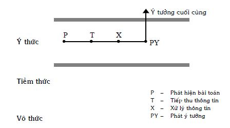
Hình 56: Xuất xứ của ý tưởng được nhận biết và có thể lý giải một cách lôgích
Trong trường hợp này, tất cả các giai đoạn của quá trình suy nghĩ như phát hiện bài toán, tiếp thu thông tin, xử lý thông tin và phát ý tưởng giải bài toán đều được nhận biết. Do vậy, người suy nghĩ có thể lý giải một cách lôgích vì sao ý tưởng lời giải bài toán xuất hiện trong đầu của mình.
Bây giờ chúng ta chuyển sang xét những trường hợp khác của quá trình suy nghĩ. Ở đó, trừ ý tưởng cuối cùng xuất hiện ở vùng ý thức, nếu như giai đoạn suy nghĩ nào đó, thậm chí giai đoạn nhỏ nào đó xảy ra ở mức tiềm thức hoặc vô thức, hoặc cả hai, thì sự nhận biết của người suy nghĩ và tính lôgích hình thành ý tưởng bị đứt đoạn. Nói cách khác, người suy nghĩ có cảm giác: Ý tưởng lời giải bật ra, lóe lên, tự nhiên xuất hiện, được đấng tối cao ban cho… trong đầu mà không giải thích được xuất xứ của nó một cách đầy đủ. Hình 57 dưới đây diễn tả vài trong nhiều trường hợp có thể xảy ra:
Dựa trên các trường hợp trình bày trên Hình 57, các câu chuyện về linh tính (xem phần đầu của mục nhỏ này) có thể được giải thích với độ tin cậy nhất định nào đó như sau:
Hình 57a có thể dùng để giải thích trường hợp của Iakolev: Cách phát ý tưởng xảy ra ở dưới mức ý thức.
Hình 57b có thể dùng để giải thích linh tính của Tupolev: Giai đoạn xử lý thông tin và cách phát ý tưởng cùng nằm dưới mức ý thức.
Hình 57c có thể dùng để giải thích trường hợp của các lão nông tri điền và những người sát cá: Họ có khả năng tiếp thu những thông tin dưới ngưỡng nhận biết của ý thức. Tiếp theo, họ có khả năng quy nạp hoặc khái quát hóa (xử lý thông tin) chính xác với lượng thông tin tối thiểu và phát ý tưởng ở tiềm thức, vô thức. Họ chỉ nhận biết khi, cuối cùng, ý tưởng xuất hiện ở mức ý thức.
Hình 57d có thể dùng để giải thích trường hợp “Người kéo giường sang chỗ khác ngủ và thoát chết”. Rất có thể, trong trường hợp này, trần nhà ở phía trên giường đã có những vết nứt. Chỉ có tiềm thức, vô thức phát hiện ra mối nguy tiềm ẩn đó. Do vậy, chính người sống trong căn phòng không nhận biết các vết nứt. Thời gian trôi đi, các vết nứt rộng hơn, sâu hơn. Tiếp thu các thông tin và xử lý chúng, tiềm thức, vô thức dự đoán trần nhà có thể sập và phát ý tưởng: “Kéo giường sang chỗ khác”. Đến lúc ý tưởng “khuếch tán” lên ý thức, người sống trong phòng mới biết và làm theo mà không lý giải được, tại sao ý nghĩ “kéo giường sang chỗ khác” nảy sinh trong đầu mình.
Tương tự như vậy, Hình 57d cũng có thể dùng để giải thích trường hợp của Pavlov. Tuy nhiên, với Pavlov các giai đoạn suy nghĩ ở mức tiềm thức, vô thức xảy ra nhanh hơn rất nhiều.
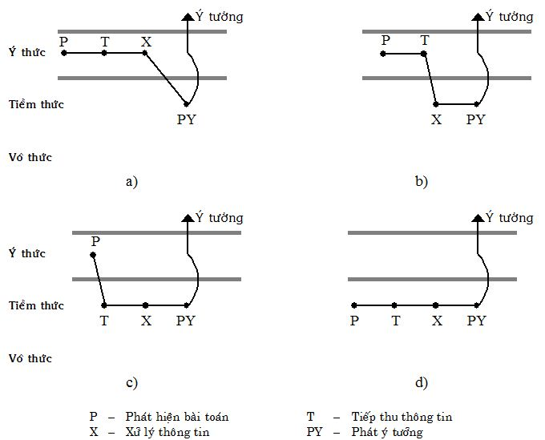
Hình 57: Một số trường hợp, ở đó có đứt đoạn trong sự nhận biết của chủ thể về quá trình suy nghĩ của chính mình
Cơ sở sinh lý thần kinh của linh tính, theo một số nhà nghiên cứu, bao gồm sự biến đổi và tái hợp các “dấu vết” (mạng các mối liên kết thần kinh tạm thời) trong trí nhớ của chủ thể một cách trọn vẹn nhất định, tạo nên các hình ảnh (Gestalt – tiếng Đức) mới. Các hình ảnh mới này trở thành các ý nghĩ mới (các giả thiết), được ý thức nhận biết, mà tính đúng đắn của chúng chỉ có sau đó mới được thực tế kiểm tra. Hoạt động của linh tính luôn nhắm đến việc thỏa mãn nhu cầu chủ đạo và các kinh nghiệm sống lưu giữ trong vùng ý thức, tiềm thức của chủ thể.
- Không ít các nhà phát minh, sáng chế khá tin tưởng vào linh tính. Ví dụ, Einstein cho rằng: “Về bản chất, chỉ có linh tính đem lại giá trị thực sự… Tôi tin vào linh tính và sự ngẫu hứng”. Bạn đọc còn có thể xem lại các ý kiến của các nhà phát minh, sáng chế trong mục 5.6 Ý thức, tiềm thức và vô thức. Tuy vậy, các nhà nghiên cứu tâm lý học và sáng tạo học đưa ra nhiều lời khuyên liên quan đến linh tính để chúng ta đừng có sa vào cực đoan. Dưới đây là một số trong các lời khuyên đó.
1. Không nên ngộ nhận những ý tưởng do linh tính mách bảo thường là đúng, trái lại, thường là sai.
Điều này có thể hiểu được, vì khi có ý tưởng sai, người giải bài toán đứng trước hai sự lựa chọn: a) Lý giải một cách lôgích xuất xứ của ý tưởng sai; b) Tìm ý tưởng mới để nhanh chóng giải bài toán. Rõ ràng, người giải ưu tiên cho lựa chọn thứ hai. Điều này có nghĩa, trong số các ý tưởng sai, có không ít các ý tưởng do linh tính mách bảo. Người giải bài toán thường chú ý nhiều hơn đến những ý tưởng đúng do linh tính mách bảo. Chưa kể, nếu ý tưởng đúng đến mức “kéo giường sang chỗ khác ngủ và thoát chết” thì linh tính gây ấn tượng cho chính người đó và những người biết chuyện, có khi, suốt đời.
Không nên coi thường linh tính mách bảo mà cần thu thập tất cả những ý tưởng do linh tính mách bảo (thu thập chứ chưa phải là đã ra quyết định thực hiện trên thực tế), vì số lượng các ý tưởng có trong tay người giải bài toán càng nhiều thì xác suất có ý tưởng đúng dẫn đến lời giải càng lớn. Nói như L. Pauling: “Cách tốt nhất để có ý tưởng hay là có thật nhiều ý tưởng”.
Nếu người suy nghĩ giải bài toán cảm thấy mệt hoặc căng đầu thì không nên cố gắng tiếp tục. Người đó nên để bài toán sang một bên và đi làm việc khác. Lúc này, tuy ý thức của người đó không còn suy nghĩ về bài toán nhưng các cơ chế tiềm thức và vô thức vẫn tiếp tục quá trình suy nghĩ. Bạn cần tận dụng khả năng đó của tiềm thức và vô thức. Thực tế cho thấy, có không ít các ý tưởng đúng, nảy sinh vào lúc các nhà khoa học, sáng chế nghỉ ngơi, đi dạo, làm vườn, đi tắm… sau một thời gian tập trung suy nghĩ giải bài toán ở mức ý thức, mà chưa ra. Ở đây, có một lời khuyên rất quan trọng: “Nếu ý tưởng xuất hiện, bạn phải ghi lại ngay lập tức”.
Vì sao có lời khuyên vừa nói? Chuyện kể rằng, có một nhà khoa học đã nhiều năm trời suy nghĩ mà không tìm được ý tưởng lời giải. Ông đã quyết định bỏ bài toán đó đi làm việc khác, vì cho rằng mình không có khả năng giải. Một ngày nọ, trong đầu ông lóe lên ý tưởng lời giải đã nhiều năm hằng mong đợi. Ông không tin rằng đấy là ý tưởng của ông nghĩ ra, mà tin rằng, đấy là ý tưởng do Chúa Trời gởi đến giúp. Vốn là người mộ đạo, ông quỳ xuống làm dấu cám ơn Chúa. Khi đứng lên, ông không tài nào nhớ nổi ý tưởng đã xuất hiện trong đầu. Lời khuyên đầy đủ như sau: “Có ý tưởng trong đầu, bất kỳ ở đâu, phải ghi lại ngay. Nếu cần cám ơn Chúa, thì cám ơn Chúa sau, Chúa hiền từ sẽ không giận đâu”. Để tạo điều kiện ghi lại các ý tưởng cho các nhân viên, nhiều công ty để giấy bút ở khắp nơi, kể cả trong các nhà vệ sinh.
- Cần xây dựng để có cách suy nghĩ trong vùng ý thức trở nên khoa học, rõ ràng, mạch lạc, thoải mái, thông thoáng, không có những điều hạn chế, cấm kỵ (tự do tư tưởng). Cách suy nghĩ như vậy ở vùng ý thức sẽ giúp giải phóng thêm nhiều ý tưởng do linh tính mách bảo xuất hiện (xem Hình 58b), so với cách suy nghĩ lộn xộn, có nhiều điều lo sợ, cấm kỵ, tự kiểm duyệt (xem Hình 58a). Đây cũng là một đòi hỏi quan trọng trong phương pháp não công (Brainstorming), sẽ trình bày trong quyển sáu “Các phương pháp sáng tạo” của bộ sách “Sáng tạo và đổi mới”.
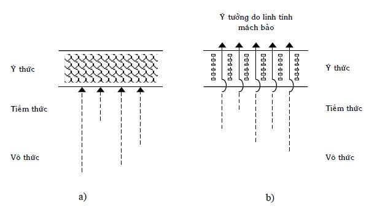
Hình 58: Cách suy nghĩ ở mức ý thức ảnh hưởng đến hoạt động của linh tính
6.4.9 Trí tưởng tượng
Trí tưởng tượng được hiểu là sự xây dựng trong óc hình ảnh về đối tượng (hiểu theo nghĩa rất rộng), mà trong khoảng thời gian xây dựng và tồn tại hình ảnh, người tưởng tượng không tiếp thu đối tượng đó một cách trực tiếp thông qua các giác quan.
Trí tưởng tượng có phổ rất rộng: Từ hình ảnh tri giác (biểu tượng tâm lý) của đối tượng có thật, có được nhờ tiếp thu đối tượng đó thông qua các giác quan (xem mục nhỏ 6.4.2 Tiếp thu thông tin và các mức độ hiểu), đến hình ảnh của các đối tượng hoàn toàn chưa biết, chưa có, không thể tiếp thu thông tin về các đối tượng đó trực tiếp thông qua các giác quan.
Trong lĩnh vực giải quyết vấn đề và ra quyết định, trí tưởng tượng chính là tư duy bằng các hình ảnh để phân biệt với tư duy bằng các khái niệm (ngôn ngữ). Hai loại suy nghĩ giải quyết vấn đề và ra quyết định này tạo nên hệ thống thống nhất, không thể tách rời: Tạo tiền đề, bổ sung cho nhau, chuyển hóa lẫn nhau, nếu dùng chúng đúng trong phạm vi áp dụng.
Quá trình tưởng tượng thường có mặt trong các công việc sau:
1. Xây dựng hình ảnh về các phương tiện hoạt động, các kết quả trung gian và cuối cùng của hoạt động, khi chủ thể còn chưa bắt tay vào thực hiện hoạt động đó.
2. Xây dựng chương trình xử trí khi gặp tình huống vấn đề không được xác định một cách rõ ràng, có độ bất định cao.
3. Xây dựng những mô hình dưới dạng các hình ảnh trong đầu nhằm thay thế các hoạt động thực sự trên thực tế. Ví dụ, bạn tưởng tượng bạn đang thám hiểm rừng rậm Amazon.
4. Xây dựng các hình ảnh về đối tượng ứng với sự mô tả đối tượng. Ví dụ, bạn đọc sách và tưởng tượng về các nhân vật, phong cảnh, tình huống… mô tả trong sách.
Trí tưởng tượng cũng như tất cả các quá trình tâm lý khác là chức năng của vỏ các đại bán cầu não. Nếu như cơ sở sinh lý của trí nhớ là kết nối các đường liên hệ thần kinh tạm thời và tái hiện những gì được lưu giữ thì khi tưởng tượng, hệ thống các mối liên kết đã được tạo thành trong quá khứ bị tách ra rồi kết hợp lại theo cách mới. Về bản chất, cơ chế của trí tưởng tượng là dựa trên các hình ảnh đã có để tạo ra các hình ảnh mới. Ngoài ra, khác với liên tưởng (xem mục nhỏ 6.4.6 Liên tưởng), trí tưởng tượng còn gắn khá chặt với việc tạo ra các xúc cảm mới nên nhiều nhà nghiên cứu cho rằng cơ sở sinh lý của trí tưởng tượng không chỉ nằm trong vỏ não mà còn nằm ở cả những phần sâu hơn: Vùng dưới đồi thị. Trí tưởng tượng trong nhiều trường hợp còn tác động đến các cơ quan ngoại vi của cơ thể tương tự như các tác động có thật. Nói cách khác, trí tưởng tượng có thể thay đổi các quá trình sinh lý. Ví dụ, khi nhà văn Flober viết (tưởng tượng) đoạn đầu độc bà Bovari (nhân vật trong tiểu thuyết của ông), Flober cảm thấy vị thạch tín trong mồm mình.
Trí tưởng tượng là yếu tố rất cần trong sáng tạo văn học, nghệ thuật. Nhà văn, nhà thơ, nhà soạn nhạc, họa sỹ, nhà điêu khắc, nghệ sĩ biểu diễn… đều dùng tưởng tượng trong các sáng tác của mình. Điểm đặc biệt của trí tưởng tượng trong các lĩnh vực này là nó luôn đi kèm với những xúc cảm mạnh. Những hình ảnh, tình huống, các tình tiết tưởng tượng, hay nói chung diễn tiến những gì thuộc về tác phẩm xảy ra trong đầu của người sáng tác, đều thấm đẫm những xúc cảm. Tác giả, thông qua tác phẩm của mình truyền đến độc giả, khán giả, thính giả những xúc cảm đó.
Lịch sử các phát minh khoa học và các sáng chế kỹ thuật cũng cho thấy trí tưởng tượng là một trong các yếu tố quan trọng nhất đối với sáng tạo. Trí tưởng tượng (cũng như linh tính) đặc biệt quan trọng, không thể thay thế được trong những giai đoạn đầu tiên của quá trình phát triển rất nhiều lĩnh vực khoa học, kỹ thuật, hoặc ở giai đoạn mà lý thuyết hiện hành không còn đủ khả năng giải thích những kết quả mới thu được từ thực tiễn. Điều này có thể hiểu được, vì ở những giai đoạn đầu tiên, các nhà nghiên cứu phải xây dựng các khái niệm, đưa ra các giả thiết, làm các thí nghiệm kiểm tra chúng để tìm và phát hiện các quy luật khách quan có trong lĩnh vực cho trước. Lúc này, trong nhiều trường hợp, trí tưởng tượng (linh tính) là công cụ duy nhất để làm những công việc ấy. Ở những giai đoạn phát triển tiếp theo, khi hệ thống các khái niệm và các quy luật khách quan đã được tìm ra, trí tưởng tượng (linh tính) nhường chỗ từng phần cho tư duy lôgích – tư duy theo các khái niệm, quy luật, lý thuyết của lĩnh vực ấy dưới dạng ngôn ngữ, để làm các phát minh, sáng chế. Cứ như thế, cho đến khi các nhà nghiên cứu gặp những tình huống thực tiễn không lọt vào khung lý thuyết đang có, họ lại phải dùng tưởng tượng (linh tính) là chủ yếu để xây dựng các khái niệm mới và tìm các quy luật khách quan mới.
Như vậy, trí tưởng tượng rất cần thiết đối với sáng tạo và đổi mới trong bất kỳ lĩnh vực nào. Không phải ngẫu nhiên, rất nhiều người nổi tiếng và không nổi tiếng đều đánh giá cao trí tưởng tượng:
K. Marx: “Trí tưởng tượng là tặng phẩm vĩ đại, giúp ích rất nhiều sự phát triển của nhân loại”.
Lênin: “Trí tưởng tượng là phẩm chất quý giá nhất…”.
A. Einstein: “Trí tưởng tượng quan trọng hơn tri thức (kiến thức), vì tri thức có giới hạn, trong khi trí tưởng tượng ôm cả thế giới”.
J. Dewey: “Mỗi thành công vĩ đại trong khoa học đều bắt nguồn từ trí tưởng tượng hết sức táo bạo”.
A. France: “… trí tưởng tượng gieo những điều tốt đẹp và nhân hậu trong thế giới. Chỉ có trí tưởng tượng làm con người trở nên vĩ đại”.
Bill Gate: “Tài sản quý giá nhất của công ty Microsoft là trí tưởng tượng”.
Nhiều người Mỹ trả lời: “Trí tưởng tượng làm nên nước Mỹ”, khi được hỏi: “Cái gì làm nên nước Mỹ?”. Có nhiều lý do để nhiều người Mỹ trả lời như vậy. Một trong những lý do đó thuộc về Hiến pháp nước Mỹ. Trong nhà nước pháp quyền, sự phát triển toàn diện của đất nước đó phụ thuộc rất nhiều vào Hiến pháp. Hiến pháp nước Mỹ đã tồn tại và phát huy tác dụng hơn hai trăm năm nay, mà không cần phải thay bởi Hiến pháp mới. Điều này có nghĩa, những người xây dựng Hiến pháp nước Mỹ đã tưởng tượng rất xa và hiệu quả, giúp đưa nước Mỹ từ thuộc địa mới giành được độc lập thành cường quốc số một như hiện nay.
Trong các câu nói trên về trí tưởng tượng, người viết đặc biệt lưu ý bạn đọc về câu nói của Einstein. Lần đầu tiên đọc câu này, người viết thấy ngỡ ngàng vì, cha mẹ, thầy cô nói riêng, những người đi trước nói chung, thường khuyên chúng ta trau dồi tri thức (kiến thức) chứ ít thấy ai khuyên trau dồi trí tưởng tượng. Chưa kể, những người nào hay tưởng tượng, có vẻ mơ mộng, lãng mạn còn bị xung quanh phê phán. Vậy Einstein có đúng không khi nói như vậy và phải hiểu câu nói đó như thế nào?
Bạn đọc hãy thử nhìn tri thức (kiến thức) không theo quan điểm cá nhân mà theo quan điểm của toàn nhân loại. Trong cách xem xét đó, tri thức là những cái đã biết rồi. Chúng ta sinh sau, đẻ muộn, trước hết, phải học để kế thừa tri thức nhân loại. Tùy theo sở thích hoặc công việc, mỗi người trong chúng ta kế thừa “một mẩu” tri thức nào đó. Ví dụ, người học vật lý, người học cơ khí, người học quản lý… (xem Hình 59: Trí tưởng tượng quan trọng hơn tri thức)
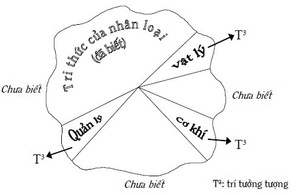
Hình 59: Trí tưởng tượng quan trọng hơn tri thức
Nếu các thế hệ sau chỉ làm công việc học để kế thừa các tri thức đã có thì không có sự phát triển. Nhiệm vụ các thế hệ đi sau còn là: Đi từ cái đã biết sang cái chưa biết. Người viết cho rằng, đây phải là nhiệm vụ hướng đích của tất cả các thế hệ thuộc tất cả các thời đại. Có câu hỏi đặt ra: “Làm thế nào có thể đi từ cái đã biết đến cái chưa biết?”. Có rất nhiều cái chưa biết, chúng ta không thể tiếp nhận chúng trực tiếp thông qua các giác quan vì chúng chưa có (ví dụ những sáng chế chưa ra đời), hoặc vì các giác quan của chúng ta không thể tiếp nhận chúng một cách trực tiếp (ví dụ như tia hồng ngoại, siêu âm, nguyên tử, điện tử). Chính trí tưởng tượng là một trong những công cụ quan trọng nhất giúp con người đi từ cái đã biết đến cái chưa biết. Bởi vì, trước khi có những sáng chế hiện thực, nhà sáng chế phải tưởng tượng chúng trong đầu, hoặc để phát hiện ra tia hồng ngoại… nhà khoa học phải tưởng tượng ra chúng và tìm cách phát hiện chúng một cách gián tiếp. Với ý nghĩa như vậy, Einstein đúng khi nói rằng “Trí tưởng tượng quan trọng hơn tri thức…”. Mặt khác, đi từ cái đã biết đến cái chưa biết nhờ tưởng tượng có nghĩa, tưởng tượng tạo ra tính mới. Không phải ngẫu nhiên, nhiều người đặt dấu bằng giữa hai khái niệm sáng tạo và trí tưởng tượng.
Người viết còn cho rằng Einstein nói câu đó một cách đầy xúc cảm của người đã rất nhiều lần trải qua tưởng tượng. Bạn đọc biết Einstein là tác giả của thuyết tương đối, lý thuyết về những đối tượng chuyển động với vận tốc bằng hoặc gần bằng vận tốc ánh sáng. Trong thực tế, chưa hề ai và muốn cũng không được, chuyển động với những vận tốc lớn như thế. Nói cách khác, nhà nghiên cứu không thể tiếp nhận những quá trình xảy ra với vận tốc bằng hoặc gần bằng vận tốc ánh sáng, một cách trực tiếp thông qua các giác quan. Rõ ràng, để xây dựng thuyết tương đối, Einstein đã phải thường xuyên tưởng tượng.
Từ đây, bạn đọc cũng có thể thấy, một nền giáo dục–đào tạo chỉ đặt mục đích truyền thụ tri thức, là nền giáo dục–đào tạo chỉ hướng về quá khứ. Tình hình còn trở nên tệ hơn khi việc truyền thụ trở thành “nhồi nhét”, “tra tấn” đến nỗi, người dạy và người học không còn yêu tri thức: Dạy và học như trả nợ. Chưa kể, tri thức lại bao gồm cả những cái đã lạc hậu; những tri thức, thông tin hầu như không bao giờ dùng trong cuộc đời người học; những thông tin không đem lại ích lợi cho người học, có khi cả nhiễu nữa. Trong khi đó, nền giáo dục–đào tạo cần có phải là nền giáo dục–đào tạo nhắm đến đích: Đào tạo những con người tạo ra những giá trị của tương lai (xem mục nhỏ 3.3.4 Giáo dục và đào tạo của tương lai: Vài nét phác thảo ở quyển một). Để làm điều đó, giáo dục–đào tạo cần trang bị cho người học những công cụ giúp người học đi được từ chỗ đã biết đến chỗ chưa biết. Trong những công cụ đó, chắc chắn phải có những phương pháp, những kỹ năng giúp phát triển trí tưởng tượng của người học. Trong ý nghĩa này, PPLSTVĐM có rất nhiều ích lợi để phát triển trí tưởng tượng.
- Trí tưởng tượng có thể được phân loại theo nhiều cách khác nhau. Phân loại theo công việc, được trình bày ở phần đầu mục này, là một cách. Người viết giới thiệu thêm một cách phân loại khác. Trong lĩnh vực giải quyết vấn đề, người ta quy ước chia trí tưởng tượng thành ba loại:
1. Trí tưởng tượng lôgích là tưởng tượng dựa trên sự lập luận mang tính chặt chẽ nhất định.
Ví dụ, nguyên tử là đối tượng không thể tiếp thu được một cách trực tiếp thông qua các giác quan. Rutherford dùng các hạt alpha điện tích dương bắn phá tấm kim loại vàng mỏng như tờ giấy. Kết quả thí nghiệm cho thấy, phần lớn các hạt alpha đi xuyên qua tấm vàng giữ nguyên quỹ đạo. Một số khác có quỹ đạo bị lệch đi với những góc khác nhau và một số ít, thậm chí, bị phản xạ ngược trở lại. Trên cơ sở những thông tin thu được, bằng suy luận và tưởng tượng lôgích, Rutherford đã xây dựng mô hình nguyên tử có cấu trúc tương tự như hệ mặt trời.
2. Trí tưởng tượng phê phán là tưởng tượng thiên về phía phê phán, hiểu theo nghĩa, đi tìm các nhược điểm, khuyết tật, chỗ yếu… có thể nảy sinh trong tương lai.
Trí tưởng tượng phê phán thường được dùng để dự báo các vấn đề có thể nảy sinh. Điều này đem lại nhiều ích lợi. Thứ nhất, nếu đấy là vấn đề không đáng nảy sinh, người ta kịp đi tìm và đưa ra các biện pháp để ngăn không cho vấn đề đó nảy sinh. Thứ hai, nếu đấy là vấn đề chắc chắn hoặc có thể sẽ nảy sinh, người ta có được thời gian cần thiết nhờ dự báo trước, để chuẩn bị sẵn lời giải hoặc các biện pháp dự phòng. Chúng được dùng ngay khi vấn đề nảy sinh, tránh tình trạng nước đến chân mới tìm cách nhảy. Tóm lại, trí tưởng tượng phê phán giúp chúng ta tránh trả những giá đắt không đáng phải trả trong tương lai, giúp sự phát triển trở nên bền vững.
Ví dụ, rất nhiều vấn đề liên quan đến phát triển đã được các nhà khoa học dự báo trước như ô nhiễm môi trường, kẹt xe, gia tăng khoảng cách giàu, nghèo… nhưng thậm chí, nhiều nước phát triển vẫn phải trả giá do không sử dụng được các ích lợi từ dự báo.
3. Trí tưởng tượng sáng tạo là tưởng tượng phát hiện hoặc tạo ra đối tượng đồng thời có tính mới và tính ích lợi. Nói cách khác, đấy là tưởng tượng để có được những phát minh và sáng chế.
Nói chung, việc phân loại trí tưởng tượng là theo quy ước, do vậy, bạn đọc nên hiểu rằng các loại trí tưởng tượng này có những phần giao nhau, thậm chí, chuyển hóa lẫn nhau.
- Một trong những nơi tập trung các ý tưởng tưởng tượng là các truyện khoa học viễn tưởng. Bảng dưới đây (xem Hình 60) trích công trình nghiên cứu của G.S. Altshuller cho thấy trí tưởng tượng có hiệu suất rất cao: Khoảng 90% các ý tưởng viễn tưởng đã, đang và sẽ biến thành hiện thực. Nếu những ý tưởng hiện nay bị coi là sai lầm, trong tương lai lại được coi là đúng (điều này thường xảy ra trong lịch sử khoa học, kỹ thuật) thì hiệu suất còn cao hơn nữa.
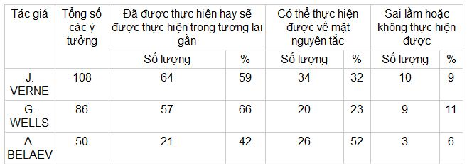
Hình 60: Số phận của các ý tưởng viễn tưởng
Trước mắt, bạn có thể tìm đọc các truyện khoa học viễn tưởng để biết những ý tưởng viễn tưởng và thử tìm hiểu xem, các tác giả đã tưởng tượng như thế nào (phương pháp) để có được những ý tưởng đó.
- Thực tế cho thấy, hiện đang có một số nghịch lý liên quan đến trí tưởng tượng.
1. Trí tưởng tượng rất quan trọng đối với sáng tạo nhưng không được chú ý, đánh giá và phát triển một cách xứng đáng. Ví dụ, thế hệ đi trước thường khuyên thế hệ sau trau dồi tri thức và không khuyến khích họ tưởng tượng.
Theo Ribaut, sau khi sinh ra, trí tưởng tượng của con người phát triển theo tuổi và đạt cực đại vào khoảng 15 tuổi ở thế kỷ 19. Các nghiên cứu của G.S. Altshuller vào những năm 1970 cho biết, so với thế kỷ 19, trí tưởng tượng ở thế kỷ 20 đạt mức phát triển thấp hơn và đạt cực đại sớm hơn: Khoảng từ 11 đến 13 tuổi. Những ý này được minh họa trên Hình 61: Sự phát triển trí tưởng tượng theo tuổi của một đời người. Hình 61 còn cho thấy các nghịch lý khác:
2. Quãng đời sáng tạo của một con người (nếu coi tuổi trung bình bắt đầu thực sự tham gia sáng tạo trong xã hội là 25), lại rơi vào lúc, về mặt tuyệt đối, trí tưởng tượng không phải cao nhất; về mặt khuynh hướng, càng ngày càng giảm theo tuổi đời (xem Hình 61).
3. Với thời gian (thế kỷ 20 so với thế kỷ 19 chẳng hạn), số lượng các bài toán tăng lên đòi hỏi trí tưởng tượng phải nhiều hơn, phát triển hơn, trong khi đó, trí tưởng tượng ở thế kỷ 20 lại thấp hơn thế kỷ 19 và đạt cực đại sớm hơn (xem Hình 61).
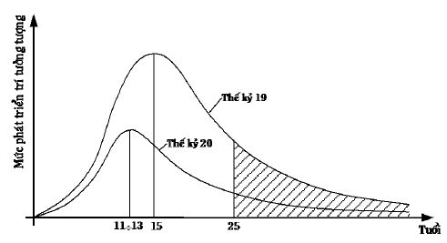
Hình 61: Sự phát triển trí tưởng tượng theo tuổi của một đời người
Để giải quyết các nghịch lý này, cần đưa môn học phát triển trí tưởng tượng vào dạy trong các trường học.
Nhân đây, người viết nhớ lại, khi học ở Học viện sáng tạo sáng chế, người viết được học môn học phát triển trí tưởng tượng với thời lượng khoảng 60 tiết. Ngoài những tiết học lý thuyết về các phương pháp dùng để tưởng tượng, người học còn phải làm rất nhiều bài tập trên lớp và ở nhà. Các bài tập khá đa dạng: Tưởng tượng một đối tượng (nhà, xe, sinh vật…) mới; viết truyện khoa học viễn tưởng theo đề tài được giao; tự tìm đề tài và viết truyện khoa học viễn tưởng; giải bài toán kiểu: “Giả sử bạn rơi vào ngôi sao X, ở đó có các quy luật như sau… (không giống trên Trái Đất). Hãy thiết kế phương tiện đi lại, phương tiện thông tin liên lạc…”.
PPLSTVĐM giúp người học phát triển trí tưởng tượng. Người viết còn nhiều lần quay trở lại trí tưởng tượng trong bộ sách “Sáng tạo và đổi mới”.
6.5 Tính ì tâm lý
6.5.1 Tính ì tâm lý: Các nhận xét chung
Chắc nhiều bạn đọc biết trò chơi tập thể “Chim bay, cò bay”. Tham gia trò chơi này, mọi người nắm tay nhau tạo thành vòng tròn, còn người chủ trò đứng ở tâm vòng tròn. Quy tắc trò chơi như sau: Người chủ trò hô tên một động vật. Nếu động vật không biết bay thì mọi người không phản ứng gì. Nếu động vật biết bay thì mọi người vung tay lên hô theo người chủ trò. Ví dụ, khi người chủ trò hô: “Bò bay”, mọi người phải im lặng. Khi người chủ trò hô: “Chim sẻ bay”, mọi người nắm tay nhau cùng vung cao khỏi đầu hô vang theo: “Chim sẻ bay”.
Thực tế cho thấy, nếu người chủ trò nhiều lần liên tục hô tên những động vật biết bay, rồi bất thình lình hô: “Bò bay”, chẳng hạn, thì không ít người trong vòng tròn tiếp tục vung tay hô: “Bò bay” theo thói quen, mà sau đó mới biết rằng mình sai.
Một trò chơi khác mà bạn có thể thực hiện. Nội dung trò chơi như sau, bạn hỏi những người tham gia chơi: “Một cây gậy có mấy đầu?”. Mọi người trả lời: “Hai”. Bạn hỏi nhanh dần lên: “Hai cây gậy?”; “Ba?”… “Chín?” rồi bất thình lình bạn hỏi: “Tám phẩy năm (8,5)?”. Bạn sẽ thấy nhiều người trả lời sai.
Những phản ứng sai trong hai trò chơi nói trên cũng như trong các trò chơi tương tự là do ảnh hưởng của tính ì tâm lý. Ở trò chơi thứ nhất, trong tâm lý của những người phản ứng sai, “bay” được giữ lại. Ở trò chơi thứ hai, “nhân đôi số gậy” được giữ lại.
Khái quát lên, tính ì tâm lý của một người là hoạt động tâm lý của người đó giữ lại các hiện tượng (quá trình, trạng thái, tính chất, khuynh hướng thay đổi) tâm lý cụ thể đã, đang trải qua chống lại việc chuyển sang các hiện tượng tâm lý cụ thể khác.
Ngoài các trò chơi, các nghiên cứu cho thấy, phần lớn mọi người, đặc biệt ở tuổi trung niên trở lên, thường ít thích thay đổi nhằm thỏa mãn nhu cầu tiết kiệm sức lực và do dấu ấn phải trả giá của những lần thử sai. Nguyễn Du trong Truyện Kiều viết: “Thiếp như con én lạc đàn; Phải cung rày đã sợ làn cây cong”. Một lần bị cung bắn thôi, dấu ấn trả giá của lần đó lớn đến nỗi thấy “làn cây cong” cũng sợ, tưởng là cái cung. Tương tự như vậy, có những câu tục ngữ như: “Bỏng canh nóng, thổi xúp nguội”; “Con mèo một lần ngồi phải bếp lò nóng, nó không bao giờ leo lên bếp lò nguội”; “Một điều bất tín, vạn sự không tin”.
Sáng tạo và đổi mới đòi hỏi phải có những sự thay đổi (tính mới) và có độ rủi ro cao: Sai thường nhiều hơn đúng, thiệt nhiều hơn là lợi (phương pháp thử và sai). Trong đời sống hàng ngày, người ta thường dùng những từ ngữ như “bảo thủ”, “tư duy trì trệ, xơ cứng”, “ngựa quen đường cũ”, “đánh chết cái nết không chừa”, “núi sông dễ đổi, tính người khó thay”… để nói về tính ì tâm lý.
- Khi nói “giữ lại”, bạn đọc có thể liên tưởng ngay đến trí nhớ. Quả thật, trí nhớ (xem mục nhỏ 6.4.1 Trí nhớ), bên cạnh vai trò tích cực, cực kỳ quan trọng trong hoạt động tư duy nói riêng, hoạt động tâm lý nói chung của mỗi người, lại trở thành nguyên nhân gây nên tính ì tâm lý, dẫn đến những quyết định sai khi cần có sự thay đổi để phù hợp với thực tiễn.
Liên quan đến trí nhớ, chúng ta thử xét hai trường hợp cực đoan sau:
1. Thông tin đến từ bên ngoài không thay đổi theo thời gian, các nhu cầu của cá nhân không thay đổi theo thời gian và đều được thỏa mãn bằng những hành động, thúc đẩy bởi trí nhớ.
Trong trường hợp này, trí nhớ hoàn toàn ích lợi: Thông tin đến từ bên ngoài kích thích cá nhân hành động theo những cách đã được lưu giữ trong trí nhớ và các nhu cầu của cá nhân được thỏa mãn. Trí nhớ chỉ cần ghi nhớ các thông tin cần thiết một lần, lưu giữ những thông tin đó suốt đời và tái hiện chúng lặp đi, lặp lại nhiều lần khi cần đến.
2. Các thông tin đến từ bên ngoài và các nhu cầu của cá nhân thay đổi liên tục theo thời gian.
Lúc này, trí nhớ nói riêng, tư duy nói chung của cá nhân trở nên bất lực. Cá nhân luôn ở trong trạng thái có các vấn đề và không có vấn đề nào được giải quyết. Các hành động của cá nhân phản ứng lại sự thay đổi, không làm thỏa mãn các nhu cầu của cá nhân và con người như hiện nay chắc đã không tồn tại.
Trên thực tế, các trường hợp xảy ra rất đa dạng trong khoảng giữa của hai trường hợp cực đoan nói trên. Nói chung, các thông tin đến từ bên ngoài, đồng thời, các nhu cầu của cá nhân bao gồm hai phần: Phần không thay đổi và phần thay đổi theo thời gian.
Đối với phần không thay đổi, giống như trường hợp một, trí nhớ hoàn toàn ích lợi.
Đối với phần thay đổi, liên quan đến trí nhớ, có thể có những khả năng như:
- Cá nhân không ý thức về phạm vi áp dụng của những hành động thúc đẩy bởi trí nhớ; không ý thức rằng, đã có sự thay đổi (của thông tin đến từ bên ngoài và các nhu cầu của cá nhân). Cá nhân vẫn hành động như khi chưa có sự thay đổi và thỏa mãn các nhu cầu.
Trường hợp này xảy ra khi sự thay đổi chưa vượt ra ngoài phạm vi áp dụng của những hành động thúc đẩy bởi trí nhớ.
- Cá nhân không ý thức về phạm vi áp dụng của những hành động thúc đẩy bởi trí nhớ; không ý thức rằng đã có sự thay đổi. Cá nhân vẫn hành động như khi chưa có sự thay đổi và không thỏa mãn các nhu cầu.
Trường hợp này xảy ra khi sự thay đổi đã vượt ra ngoài phạm vi áp dụng của những hành động thúc đẩy bởi trí nhớ. Chỉ sau khi không thỏa mãn nhu cầu, cá nhân mới có thể phát hiện ra mình đang có vấn đề.
- Cá nhân không ý thức về phạm vi áp dụng của những hành động thúc đẩy bởi trí nhớ; ý thức được rằng đã có sự thay đổi. Cá nhân vẫn hành động như khi chưa có sự thay đổi và thỏa mãn nhu cầu.
Tương tự như trường hợp a), ở đây, sự thay đổi chưa vượt ra ngoài phạm vi áp dụng của những hành động thúc đẩy bởi trí nhớ.
- Cá nhân không ý thức về phạm vi áp dụng của những hành động thúc đẩy bởi trí nhớ; ý thức được rằng đã có sự thay đổi. Cá nhân vẫn hành động như khi chưa có sự thay đổi và không thỏa mãn nhu cầu.
Tương tự như trường hợp b), ở đây, chỉ sau khi không thỏa mãn nhu cầu, cá nhân mới có thể phát hiện ra mình đang có vấn đề.
- Cá nhân ý thức được phạm vi áp dụng của những hành động thúc đẩy bởi trí nhớ; ý thức được rằng đã có sự thay đổi. Cá nhân vẫn hành động như khi chưa có sự thay đổi và thỏa mãn nhu cầu.
Tương tự như trường hợp a) và c), ở đây, sự thay đổi chưa vượt ra ngoài phạm vi áp dụng của những hành động thúc đẩy bởi trí nhớ.
- Cá nhân ý thức được phạm vi áp dụng của những hành động thúc đẩy bởi trí nhớ; ý thức được rằng đã có sự thay đổi. Cá nhân vẫn hành động như khi chưa có sự thay đổi và không thỏa mãn nhu cầu.
Tương tự như trường hợp b) và d), ở đây, chỉ sau khi không thỏa mãn nhu cầu, cá nhân mới có thể phát hiện ra mình đang có vấn đề.
- Cá nhân ý thức được phạm vi áp dụng của những hành động thúc đẩy bởi trí nhớ; ý thức được rằng đã có sự thay đổi, đồng thời; ý thức được rằng, nếu tiếp tục hành động theo những cách trí nhớ thúc đẩy, sẽ vượt ra ngoài phạm vi áp dụng của chúng, do vậy, sẽ không còn đúng nữa. Nói cách khác, cá nhân chưa trả giá nhưng đã phát hiện ra mình đang có vấn đề.
Các trường hợp b), d) và g) buộc cá nhân phải suy nghĩ giải quyết vấn đề. Phần lớn mọi người, hiện nay, thường dùng phương pháp thử và sai để suy nghĩ giải quyết vấn đề và ra quyết định (xem Chương 2: Sáng tạo một cách tự nhiên ở quyển một). Trong trường hợp này, trí nhớ ảnh hưởng rất mạnh lên toàn bộ quá trình suy nghĩ giải quyết vấn đề và ra quyết định (xem mục 6.2 Mô hình quá trình suy nghĩ giải quyết vấn đề và ra quyết định, đặc biệt Hình 44). Nói cách khác, trí nhớ ảnh hưởng lên toàn bộ sáu giai đoạn của quá trình thực hiện giải bài toán. Ngay cả khi tìm ra được lời giải đúng, trí nhớ cũng chi phối quá trình ra quyết định của cá nhân:
Nếu lời giải đúng quá mới đối với những gì lưu giữ trong trí nhớ, cá nhân có thể quyết định bỏ, không tiếp nhận lời giải đó, đi tìm lời giải khác ít mới hơn.
Nếu lời giải đúng quá mới đối với những gì lưu giữ trong trí nhớ, cá nhân có thể quyết định tiếp nhận nhưng không đầy đủ, ổn định và bền vững.
Ngoài các trường hợp cá nhân không thay đổi các hành động do trí nhớ giữ lại, dù đã có sự thay đổi các thông tin đến từ bên ngoài và các nhu cầu của cá nhân, còn phải kể đến một thuộc tính rất quan trọng của con người cũng được trí nhớ, trong trường hợp này là trí nhớ do chọn lọc tự nhiên giữ lại. Đó là thuộc tính: Thay đổi các hành động đã có, ngược với những gì đã nói ở trên.
Như chúng ta đã biết (xem mục 2.3 Các ưu và nhược điểm của phương pháp thử và sai ở quyển một), ưu điểm lớn nhất của phương pháp thử và sai: Nó chính là cơ chế của sự tiến hóa và phát triển. Do vậy, chọn lọc tự nhiên giữ lại những giống loài nào có khả năng thử với số lượng rất lớn và đa dạng, khác so với các phép thử đã có, vì như thế chúng mới có thể thích nghi được sự thay đổi. Khả năng này được “ghi nhớ, lưu giữ, tái hiện và di truyền” từ thế hệ này sang thế hệ khác trong các giống loài nói trên.
Loài người còn tồn tại, tiến hóa, phát triển đến ngày nay chứng tỏ con người có tiềm năng thử rất lớn, đa dạng và có nhu cầu phải thể hiện tiềm năng đó ra, kể từ khi vừa mới sinh. Đứa bé lớn lên với thời gian, trí nhớ nói trên thúc đẩy nó thực hiện các phép thử tiềm năng, bất chấp sự không đồng ý của người khác và những người đi trước. Điều này giải thích vì sao thế hệ lớn tuổi thường nhận xét: “Bọn trẻ bây giờ bướng lắm”, mà sớm quên rằng, khi còn nhỏ, mình cũng bướng, ít ra, không kém “bọn trẻ bây giờ”. Chúng ta thử tưởng tượng, ngay từ lúc sinh ra, đứa bé chỉ hành động theo đúng những gì được bảo mà không hành động khác đi, liệu xã hội loài người có sự tiến hóa và phát triển hay không?
Tuy nhiên, với thời gian, những đứa trẻ lớn lên sẽ bị phân hóa, cũng do chính phương pháp thử và sai:
1. Những đứa trẻ khi thử khác đi, gặp sai nhiều quá, sẽ trở thành những người lớn ít muốn thay đổi để tin cậy và an toàn hơn. Phần lớn các đứa trẻ rơi vào trường hợp này.
2. Những đứa trẻ khi thử khác đi, tuy có sai nhiều, nhưng đồng thời cũng thu được nhiều ích lợi từ những phép thử đúng, sẽ trở thành những người lớn tiếp tục duy trì tinh thần sáng tạo và đổi mới, không chỉ dừng lại ở những gì hiện có. Những người thiểu số này chính là động lực giúp xã hội tiến hóa và phát triển.
Từ đây, chúng ta có thể thấy, giáo dục, đào tạo, một mặt, phải làm công việc giúp thế hệ trẻ đừng lặp lại những phép thử sai mà các thế hệ trước đã trải qua, đã biết. Mặt khác, giáo dục, đào tạo phải gìn giữ và phát triển, chứ không phải “tiêu diệt” loại “trí nhớ thúc đẩy các phép thử khác đi so với các phép thử hiện có”, sao cho sai ít nhất, sai chấp nhận được. Cao hơn nữa, giáo dục, đào tạo còn phải trang bị cho thế hệ trẻ các công cụ khoa học phát các ý tưởng mới và ích lợi (các phép thử đúng). PPLSTVĐM chính là những công cụ góp phần làm điều đó.
Sẽ ra sao, nếu như giáo dục, đào tạo cho ra những con người dễ bảo, thiên lôi chỉ đâu đánh đấy và đánh bằng những chiêu đã cũ mèm, tụt hậu so với các nước khác hàng trăm năm?
- Trên đây là một số nhận xét chung về những ảnh hưởng của tính ì tâm lý, có nguồn gốc là trí nhớ. Người viết muốn lưu ý bạn đọc rằng, trí nhớ không chỉ có trong tư duy mà trí nhớ còn có cả trong nhu cầu, xúc cảm, mong muốn tự nguyện, hành động và ở cả ba mức ý thức, tiềm thức, vô thức (xem Hình 43: Mô hình tư duy trong ngữ cảnh của mô hình nhu cầu–hành động). Mục nhỏ tiếp theo đây sẽ trình bày những câu chuyện, cho thấy tính ì tâm lý là vật cản đối với sự phát triển.
6.5.2 Tính ì tâm lý: Vật cản trong tư duy sáng tạo và đổi mới
Tính ì tâm lý thường có hại, là vật cản trong tư duy sáng tạo và đổi mới. Điều này hiểu được vì tư duy sáng tạo và đổi mới đòi hỏi phải có những cái mới, trong khi tính ì tâm lý cố gắng giữ lại những gì quen thuộc, đã biết nằm trong trí nhớ, không chịu đưa ra những cái mới hoặc tiếp nhận những cái mới.
Lịch sử phát triển khoa học, công nghệ nói riêng, lịch sử phát triển xã hội loài người nói chung, có vô số các ví dụ về cuộc đấu tranh, nhiều khi là căng thẳng và trả giá đắt, kể cả sinh mạng của nhiều người, giữa những ý tưởng mới, tiến bộ với những ý tưởng cũ, lạc hậu, được nhiều người, thậm chí, đa số khăng khăng giữ lại trong suốt thời gian dài. Dưới đây, người viết dẫn ra một số trường hợp tương đối điển hình từ lĩnh vực vật lý học. Tình hình tương tự cũng xảy ra đối với các lĩnh vực khác.
- Từ thời thượng cổ, loài người đã quen với những gì quan sát thấy: Mặt trời và các ngôi sao chuyển động còn Trái Đất đứng yên. Dựa trên quan niệm đó, hệ thống địa tâm của Ptolemey ra đời và trở thành quan niệm chính thống của tôn giáo, coi Trái Đất là tâm điểm lựa chọn của các đấng Chúa Trời tối cao. Thuyết địa tâm tồn tại đến thế kỷ 16.
N. Copernicus (1473 – 1543) phát hiện ra sai lầm của hệ địa tâm, tương tự như sai lầm trong quan sát của người ngồi thuyền rời bến: Người đó có cảm giác thuyền mình đứng yên còn bờ lùi về phía sau. Ông đưa ra hệ thống nhật tâm ngược với hệ thống địa tâm: Mặt Trời là tâm của thế giới. Trái Đất quay quanh Mặt Trời với chu kỳ một năm và tự quay quanh trục của mình với chu kỳ một ngày-đêm.
Phát minh cách mạng của N. Copernicus là cú đánh mạnh vào toàn bộ thế giới quan có ở thời Trung cổ và đánh dấu sự khởi đầu của công việc nghiên cứu khoa học tách ra khỏi sự ảnh hưởng của thần học. May cho N. Copernicus, công trình của ông in xong năm 1543, khi ông đang hấp hối, đã cứu ông thoát khỏi sự trừng phạt của nhà thờ. Nhưng sự may mắn đó đã không xảy ra với Bruno và Galileo, những người bước tiếp Copernicus.
- J. Bruno (1548 – 1600) phát triển các ý tưởng của N. Copernicus: Ông cho rằng Mặt Trời chỉ là một ngôi sao bình thường trong vô số các ngôi sao có trong vũ trụ và xung quanh chúng có vô số các hành tinh quay, tương tự như Trái Đất chúng ta… Ông bị nhà thờ đàn áp: Ngồi tù 8 năm và ngày 8 tháng hai năm 1600, tòa án giáo hội ở Roma tuyên phạt thiêu sống ông. Bản án được thi hành ngày 17 tháng hai năm 1600 trên quảng trường có tên rất thơ mộng: Quảng trường các bông hoa. Thời gian giam giữ lâu, sự chậm trễ trong việc tuyên và thi hành án là do nhà thờ hy vọng J. Bruno sẽ phải từ bỏ niềm tin vào chân lý của mình.
Năm 1889, ngay tại nơi thiêu sống J. Bruno, người ta dựng đài kỷ niệm với hình ông cầm cuốn sách. Chân tượng đài khắc dòng chữ: “Người đã cất cao tiếng nói của mình vì tự do tư tưởng của tất cả các dân tộc và làm quyền tự do đó trở nên thiêng liêng bằng chính cái chết của mình”.
G. Galileo (1564 – 1642), sau những năm tháng trốn tránh và tù đày, dưới sức ép của những người theo chủ nghĩa giáo quyền và cái gọi là “giới khoa học” thời kỳ đó, để yên thân, dù chỉ là hình thức, phải tuyên bố từ bỏ các ý tưởng của mình công khai trước công chúng.
- Aristotle (384 – 322 trước công nguyên) đã cho rằng, các vật khác nhau rơi xuống đất với các tốc độ khác nhau: Các vật nặng rơi nhanh hơn và các vật nhẹ rơi chậm hơn.
G. Galileo, một sáng mùa xuân năm 1590, trèo lên tháp nghiêng Pisa, thả xuống từ đó quả đạn đại bác bằng gang và viên đạn chì. Ông ở trên tháp và các học trò của ông ở dưới đất đều thấy rằng cả hai vật chạm đất cùng một lúc. Bằng thí nghiệm này, G. Galileo đã bác bỏ ý kiến của Aristotle tồn tại suốt 19 thế kỷ mà không hề bị nghi ngờ.
Tuy vậy, cũng chính Galileo không chịu công nhận ý tưởng: Các hành tinh chuyển động theo các quỹ đạo hình ellip của J. Kepler (1571 – 1630). Ông khăng khăng giữ lại ý tưởng các quỹ đạo tròn mặc dù đã có nhiều bằng chứng khoa học nghiêng về phía các ý tưởng của Kepler.
Sau này, dựa trên các công trình của Kepler, I. Newton (1643 – 1727) đã phát minh định luật vạn vật hấp dẫn.
- Quang học được nghiên cứu từ thời cổ đại đến thời trung cổ, chủ yếu, là quang hình học. Khoảng giữa thế kỷ 17, bắt đầu có những quan tâm nghiên cứu vượt ra ngoài phạm vi của quang hình học. Lúc này, xuất hiện hai lý thuyết về bản chất của ánh sáng: Lý thuyết hạt và lý thuyết sóng.
Theo lý thuyết hạt, ánh sáng là dòng các hạt ánh sáng, được các vật phát sáng phóng ra mọi hướng, chuyển động trong không gian với vận tốc cực lớn. Năm 1672, Newton tuyên bố ủng hộ lý thuyết hạt, mặc dù lý thuyết này không giải thích được nhiều hiện tượng, trong đó có các hiện tượng liên quan đến nhiễu xạ và giao thoa.
Lý thuyết sóng được C. Huygens công bố chính thức năm 1690 nhưng không được giới khoa học thừa nhận trong suốt cả thế kỷ 18, do uy tín của Newton quá lớn. Nếu như có hàng ngàn người chống lại lý thuyết sóng thì số người ủng hộ chỉ đếm trên đầu ngón tay.
Các bài báo của T. Young (1773 – 1829) công bố trong các năm 1801 – 1803 chứa các kết quả nghiên cứu lý thuyết và thực nghiệm dựa trên lý thuyết sóng, giải thích được các hiện tượng nhiễu xạ, giao thoa ánh sáng, trở thành thách thức nghiêm túc đầu tiên đối với lý thuyết hạt. Cũng ngay trong năm 1803, nam tước H. Broom, người ủng hộ lý thuyết hạt đã tấn công T. Young một cách không thương tiếc trên báo chí. Để rồi, phải thêm 15 năm nữa, lý thuyết sóng mới được tiếp tục để ý, nhờ những công trình nghiên cứu độc lập của A. Fresnel (1788 – 1827). Tuy vậy, mãi đến giữa thế kỷ 19, sau khi có thêm những kết quả thí nghiệm mới, không thể bác bỏ được, lý thuyết sóng của Huygens – Young – Fresnel mới có được vị trí vững chắc.
- Nhiều hiện tượng điện, từ đã được phát hiện trong thế kỷ 18 và đầu thế kỷ 19 nhờ các nhà bác học nổi tiếng như H. Cavendish, C. Coulomb, S. Poisson, A. Volta, A. Ampère, H. Oersted… Năm 1821, M. Faraday (1791 – 1867) mới bắt đầu đi vào nghiên cứu lĩnh vực điện, từ và 10 năm sau, ông phát minh ra hiện tượng cảm ứng điện–từ.
Cho đến thời kỳ này, nguyên tắc tác động xa (actio in distans) vẫn đóng vai trò chủ đạo trong việc giải thích sự hút và đẩy nhau của các điện tích, cũng như của các cực từ. Theo nguyên tắc này, tác động của lực hấp dẫn và lực điện, từ lan truyền tức thì, qua khoảng cách rất xa.
Mặc cho các lý thuyết lúc đó đều được xây dựng dựa trên nguyên tắc tác động xa, riêng M. Faraday phủ nhận nguyên tắc này, đưa ra và sử dụng nguyên tắc tác động gần. Theo Faraday, tác động điện truyền trong môi trường từ điểm này đến điểm khác tuy nhanh, nhưng không phải tức thì. Không gian tham gia vào quá trình truyền tác động điện này là thực thể vật lý và được Faraday gọi là điện trường. Khái niệm trường trở thành khái niệm mang tính cách mạng trong vật lý.
Sớm hơn tất cả những người khác, J. Maxwell (1831 – 1879) tiếp nhận, phát triển và thể hiện các ý tưởng định tính của M. Faraday thành hệ các phương trình vi phân, phản ánh khái quát các hiện tượng điện–từ, với nhiều tiên đoán đi trước thời đại, công bố vào năm 1873. Lý thuyết trường của Maxwell không được giới khoa học tiếp nhận và rơi vào quên lãng ngay trên quê hương nước Anh của ông. Maxwell không sống được đến lúc lý thuyết của mình được công nhận. Lý thuyết bị coi là giả thuyết, vì chưa có tiên đoán nào của ông được chứng minh bằng thực nghiệm.
Thành công đầu tiên về thực nghiệm có lợi cho lý thuyết của Maxwell được H. Hertz (1857 – 1894) thực hiện ở Đức năm 1887. Thời gian trôi đi, những đóng góp của Maxwell được đánh giá chính xác hơn. Nhiều nhà khoa học cho rằng công lao phát triển điện động lực học của Maxwell to lớn tương tự như công lao của Newton đối với cơ học cổ điển.
- Vào nửa cuối thế kỷ 19, khi nghiên cứu bức xạ nhiệt của vật bị đốt nóng, sử dụng các quy luật của vật lý cổ điển, mọi cố gắng của các nhà vật lý nhằm tìm ra công thức phù hợp với các kết quả thực nghiệm đều thất bại.
Năm 1900, bằng phương pháp bán thực nghiệm, M. Planck (1838 – 1947) tìm ra công thức phân bố năng lượng, bao quát được toàn bộ phổ bức xạ của vật đen tuyệt đối. Công thức cho kết quả trùng với các kết quả thực nghiệm đã có và các kết quả thực nghiệm thu được sau khi công thức ra đời. Tiếp đó, Planck tiến hành tìm kiếm cơ sở lý thuyết dẫn đến công thức và giải thích các ý nghĩa vật lý của nó. Planck đi đến kết luận: Các nguyên tử, phân tử phát và hấp thụ năng lượng điện–từ không liên tục mà ngắt quãng, rời rạc theo từng định lượng nhất định mà Planck gọi là lượng tử (Quantum). Planck cho rằng, điện tử trong vật chất dao động với tần số ν chỉ có thể phát hoặc hấp thụ lượng năng lượng E = h.ν, với h = 6,63.10-27 g.cm²/giây là hằng số Planck.
Bức tranh vật lý thế giới bắt đầu từ Galileo, Newton và hoàn thành nhờ Maxwell, Helmholtz được xây dựng nhất quán dựa trên nguyên tắc: Tự nhiên không tạo những bước nhảy (natura non facit saltus). Trong khi đó, Planck lại đưa ra bước nhảy (không liên tục) với giá trị mỗi bước là E = h.ν, chứ không thể nhỏ hơn. Mặt khác, giữa lúc lý thuyết sóng ánh sáng đang được thừa nhận và sử dụng rộng rãi trong vật lý và kỹ thuật thì ý tưởng của Planck lại làm sống lại lý thuyết hạt ánh sáng với năng lượng mỗi hạt bằng. Nói cách khác, ý tưởng của Planck làm lung lay những ý tưởng nền móng của toàn bộ vật lý cổ điển và sự chống đối dữ dội chắc chắn sẽ xảy ra.
Hiểu rõ điều đó, như có lần chính Planck phát biểu: “Thông thường, các chân lý mới trong khoa học chiến thắng không theo kiểu: Thuyết phục thành công những người chống đối và họ công nhận sai lầm của chính họ. Phần lớn các trường hợp xảy ra là: Những người chống đối dần dần chết đi hết và thế hệ mới lớn lên sẽ tiếp nhận chân lý đó ngay lập tức”. Có lẽ do vậy một phần, khi đưa ra ý tưởng của mình, Planck luôn nhấn mạnh, đấy chỉ là giả thiết làm việc đối với hiện tượng cụ thể là bức xạ nhiệt, trong khi chưa có được cái đúng hơn. Planck đề nghị mọi người đừng vội vàng khái quát hóa ý tưởng lượng tử. Trong các bài giảng, lời phát biểu, các buổi trò chuyện, thư từ, Planck yêu cầu các đồng nghiệp đừng từ bỏ vật lý cổ điển mà phải ủng hộ, giữ gìn nó bằng mọi cách và cố gắng đừng xa rời các quy luật của nó. Ông dường như sẵn sàng bỏ đi các ý tưởng lượng tử của mình, miễn sao lý thuyết cổ điển không bị tổn hại. Lập trường không dứt khoát như vậy của Planck về lượng tử kéo dài không phải một, hai năm mà gần như suốt 25 năm. Có những nhà nghiên cứu cho rằng Planck làm nên cuộc cách mạng trong vật lý (cha đẻ của vật lý lượng tử) nhưng cách hành xử của ông lại không giống nhà cách mạng mà giống kẻ dao động, thỏa hiệp hơn. Hoặc, từ khi Planck thả âm binh “lượng tử” ra khỏi chai, ông trở nên lo lắng, đứng ngồi không yên.
Một ví dụ khác về việc lo sợ cái cũ sụp đổ và không chấp nhận cái mới thuộc về H.A. Lorentz (1853 – 1928), người có nhiều đóng góp trong phát triển vật lý (ngay cả công thức biến đổi không–thời gian trong thuyết tương đối hẹp của Einstein cũng mang tên ông: Công thức Lorentz). Trong thời kỳ khủng hoảng của vật lý, ông trở nên rất bi quan. A.F. Ioffe (1880 – 1960) nhớ lại lời của Lorentz nói trong một cuộc trò chuyện thân mật: “Tôi không còn tin gì nữa và tiếc rằng mình đã không chết trước đây năm năm, khi mọi thứ đều rõ ràng đối với tôi”.
- Năm 1905, người đầu tiên tiếp nhận các lượng tử của Planck một cách nghiêm túc và vận dụng thành công vào việc giải thích hiện tượng quang điện ngoài, là A. Einstein (1879 – 1955). Không những thế, ông còn đi đến ý tưởng: Ánh sáng vừa có bản chất sóng, vừa có bản chất hạt. Công trình về lượng tử ánh sáng của Einstein được trao giải Nobel vật lý năm 1922. Khác với Planck, Einstein biết rõ việc mình làm, kể cả khi đưa ra thuyết tương đối hẹp và tương đối rộng, là xâm phạm các ý tưởng thiêng liêng của vật lý cổ điển. Với tính hài hước có sẵn, Einstein phát biểu, đại ý: “Newton, hãy tha lỗi cho tôi. Tôi không thể làm khác được, nếu muốn tiến lên phía trước. Tôi chỉ làm công việc mà ở thời của ông, ông cũng đã từng làm, là vượt qua cái cũ”.
Tuy là người cách mạng hơn Planck nhưng chính Einstein cùng nhiều nhà cách mạng lượng tử khác như Planck, L. de Broglie (người phát triển ý tưởng “vừa sóng, vừa hạt” cho điện tử nói riêng, các hạt vi mô nói chung), Schrưdinger (người tìm ra phương trình các hàm sóng của cơ học lượng tử), M. von Laue, trong nhiều năm lại kiên quyết phản bác những ý tưởng của nhóm các nhà cách mạng lượng tử khác, đứng đầu là N. Bohr (1885- 1962). Ngay sau khi đọc công trình đầu tiên của Bohr về lượng tử, Einstein đã đánh giá: “… nếu công trình của Bohr là đúng. Điều này có nghĩa vật lý như là một khoa học sẽ chết” và từ đó đưa ra hết luận cứ này đến luận cứ khác chống lại Bohr. Về phần mình, Bohr đã thắng trong các cuộc tranh luận, bác bỏ lần lượt các nghịch lý lượng tử mà Einstein đưa ra nhằm chứng minh các ý tưởng lượng tử của Bohr là sai. Về cuối đời, Einstein phải công nhận là Bohr đúng.
- Năm 1912, N. Bohr đang làm việc trong phòng thí nghiệm của Rutherford, tác giả của mẫu hành tinh nguyên tử. Tuy rất có ấn tượng về mô hình nguyên tử, Bohr nhận ra rằng, nó có nhiều điểm yếu vì mâu thuẫn với vật lý cổ điển đang thịnh hành. Ví dụ, theo điện động lực học, điện tích chuyển động với gia tốc, phát sóng điện từ và mất dần năng lượng. Điều này có nghĩa, điện tử quay xung quanh hạt nhân sẽ nhanh chóng (cỡ một phần tỷ giây) mất năng lượng, rơi vào hạt nhân và nguyên tử là hệ thống không bền vững, trái với những gì có trong thực tế.
Để phù hợp với thực tế là nguyên tử rất bền vững và khắc phục mâu thuẫn của mô hình, Bohr đưa ra tiên đề ngược hẳn với vật lý cổ điển: Tồn tại các quỹ đạo dừng, ở đó, điện tử không phát sóng điện từ, do vậy không bị mất năng lượng. Khi điện tử chuyển từ quỹ đạo trên xuống quỹ đạo dưới mới phát sóng điện từ với tần số tương ứng công thức Planck, với E là hiệu năng lượng giữa hai quỹ đạo. Lý thuyết nguyên tử của Bohr giải thích rất tốt các vạch phổ của quang phổ nguyên tử hydrogen. Nói cách khác, Bohr đã kết hợp được lý thuyết bức xạ lượng tử với lý thuyết cấu trúc nguyên tử.
Bohr là nhà khoa học của những ý tưởng dũng cảm và bênh vực nhiệt tình các ý tưởng dũng cảm của những người khác. Những ý tưởng dũng cảm đến mức nhiều nhà khoa học khác coi đấy là những ý tưởng điên rồ và phản đối kịch liệt. Ví dụ, Bohr ủng hộ M. Born (1882 – 1970), người dùng cách tiếp cận xác suất giải thích ý nghĩa hàm sóng trong phương trình sóng lượng tử của Schrưdinger và ủng hộ W. Heisenberg (1901 – 1976), người đưa ra hệ thức bất định. Trong khi đó, Einstein gọi chế giễu một loại trường mới của M. Born là “trường ma” (Gespensterfeld – tiếng Đức) và không tin cách lý giải xác suất–thống kê trong vật lý lượng tử như không tin “Chúa Trời chơi trò xúc xắc”. Sự yêu thích các ý tưởng dũng cảm (điên rồ) của Bohr được thể hiện trong chính lời nhận xét của Bohr về một lý thuyết mà ông có dịp đọc: “… lý thuyết này chưa đủ điên để có thể trở thành lý thuyết đúng”.
Bohr còn là nhà khoa học – chiến sỹ. Ông luôn hào hứng, say mê tranh luận để bảo vệ các ý tưởng của mình.
Mùa thu năm 1926, Bohr mời Schrưdinger (1887 – 1961) đến Đan Mạch để thảo luận về các mâu thuẫn trong lý thuyết lượng tử. W. Heisenberg là người chứng kiến, sau này kể lại:
“Cuộc thảo luận bắt đầu ngay từ nhà ga Copenhagen và tiếp tục mỗi ngày từ sáng sớm đến khuya. Schrưdinger ở lại ngay trong nhà của Bohr nên không có gì có thể cản trở câu chuyện của hai người. Mặc dù Bohr luôn rất lịch sự và chu đáo trong giao tiếp với mọi người nhưng bây giờ dường như Bohr trở thành người cuồng tín, không chịu nhường nhịn người đối thoại, không tha thứ bất kỳ sự thiếu chính xác, dù nhỏ nhặt nhất, của người đối thoại… Sau vài ngày, Schrưdinger bị ốm, có lẽ do căng thẳng tột độ. Ông nằm trên giường, được chính vợ Bohr chăm sóc, mang trà, bánh đến cho ông. Còn Bohr vẫn ngồi trên mép giường và tiếp tục: “Tuy vậy, anh phải công nhận là…”
Nhà công nghiệp Bỉ E. Solvay mời các nhà vật lý hàng đầu thế giới đến Brussels họp mặt, thảo luận về đề tài “Điện tử và photon”. Các cuộc thảo luận không khoan nhượng diễn ra từ sáng sớm đến khuya, dần trở thành cuộc “đấu súng” tay đôi giữa Bohr và Einstein, còn những nhà khoa học khác là những người làm chứng. P. Ehrenfest (1880 – 1933) nhớ lại “trận chiến của những người khổng lồ” này như sau:
“Tôi khâm phục cuộc đối thoại giữa Bohr và Einstein. Nó giống như trận đấu cờ. Einstein dẫn ra lần lượt từng ví dụ tưởng tượng về các cấu trúc mới của động cơ vĩnh cửu loại hai để bác bỏ hệ thức bất định. Bohr, bị bao phủ trong làn khói thuốc lá, tìm ra được những lý lẽ chống lại các ví dụ của Einstein. Einstein, mỗi sáng lại như con quỷ nhỏ chui ra từ hộp thuốc lá với những sức lực mới… Thật đáng khâm phục…”
Tuy vậy, cũng chính Bohr là người kiên quyết không tiếp nhận ý tưởng “điên rồ” của Pauli, người tiên đoán về sự tồn tại của hạt neutrino.
- Mô hình nguyên tử của Bohr giải thích rất tốt cấu trúc nguyên tử và quang phổ của hydrogen. Vấn đề lớn nảy sinh, khi các nhà vật lý chuyển sang nghiên cứu các nguyên tử phức tạp hơn, đặc biệt, khi cần giải thích các quy luật liên quan đến bảng tuần hoàn các nguyên tố hóa học Menđeleev. Ví dụ, nguyên tử lithium có ba điện tử. Theo mô hình Bohr, tất cả điện tử này phải ở quỹ đạo cơ bản, gần hạt nhân nhất. Trong khi đó, thực tế cho thấy, chỉ có hai điện tử ở mức cơ bản, còn điện tử thứ ba ở quỹ đạo xa hơn, với mức năng lượng cao hơn. Tình hình tương tự như vậy xảy ra với tất cả các nguyên tử của các nguyên tố hóa học nặng hơn lithium.
Để giải thích quy luật sắp xếp số lượng nhất định các điện tử trên các quỹ đạo, W. Pauli (1900 – 1958) đưa ra nguyên tắc cấm (còn gọi là nguyên tắc chọn lọc) mà nói một cách dễ hiểu là: Trên mỗi quỹ đạo chỉ có thể có hai điện tử với các spin (môment quay riêng) ngược nhau. Nguyên tắc Pauli cho phép giải thích các tính chất hóa học của các nguyên tố khác nhau, được xác định bởi các điện tử thuộc các quỹ đạo ngoài cùng chưa bị lấp đầy (các điện tử hóa trị). Tính tuần hoàn của quá trình sắp xếp các điện tử trên các quỹ đạo cho phép lý giải một cách lôgích về cơ sở vật lý của quy luật tuần hoàn Menđêleev. Như vậy, nguyên tắc Pauli đã giúp mở rộng các ý tưởng có trong mô hình nguyên tử Bohr sang trường hợp các nguyên tử có nhiều điện tử.
Nghiên cứu hiện tượng phóng thích điện tử trong phân rã–β, các nhà vật lý gặp vấn đề, khi phát hiện sự thiếu hụt năng lượng ở cuối quá trình, so với đầu quá trình. Bohr, lúc này có uy tín rất lớn, thiên về ý tưởng giải thích hiện tượng nói trên là do định luật bảo toàn năng lượng không còn đúng nữa trong thế giới vi mô. Ông cho rằng, định luật bảo toàn năng lượng phải hiểu theo nghĩa xác suất–thống kê. Điều này có nghĩa, năng lượng không bảo toàn cho một lần phát hay hấp thụ lượng tử mà bảo toàn cho số lớn các lần.
Trong bức thư với giọng đùa cợt đề ngày 6 tháng 12 năm 1930 gởi các nhà vật lý Gưttingen, nơi sẽ diễn ra hội nghị về phóng xạ mà Pauli không tham dự được, Pauli đưa ra cách giải thích khác với Bohr. Theo Pauli, sự thiếu hụt năng lượng là do trong phản ứng phân rã–β sinh ra một loại hạt mới, nhẹ cỡ điện tử, trung hòa về điện nên các thiết bị thí nghiệm không bắt được. Năng lượng của các hạt sinh ra vừa bằng năng lượng thiếu hụt.
Khi đưa ra giả thiết về loại hạt mới, chính Pauli cũng rất lo lắng. Sau khi gởi thư đi, ông nói với một đồng nghiệp của mình ở Zurich: “Hôm nay tôi đã làm một việc kinh khủng mà nhà vật lý lý thuyết không khi nào được làm. Đấy là, tôi đưa ra giả thiết, mà giả thiết đó sẽ không bao giờ có thể kiểm tra được bằng thực nghiệm”.
Trong lần đi Roma tham dự hội nghị vật lý hạt nhân, Pauli kể cho E. Fermi (1901 – 1954) nghe về các ý tưởng của mình và nhận được sự ủng hộ. Tuy nhiên, cả hai cùng thống nhất chưa báo cáo chính thức trong hội nghị mà chỉ thảo luận ngoài hành lang.
Vào thời kỳ đó, việc đưa ra các loại hạt mới là điều hết sức hiếm trong vật lý và người chống Pauli mạnh mẽ nhất lại chính là Bohr. Đến nỗi, người ta kể rằng, trong các hội nghị vật lý, nhác thấy bóng Bohr là Pauli tìm cách tránh mặt.
Sau này, E. Fermi đặt tên hạt mới của Pauli là neutrino (hạt neutron nhỏ) để phân biệt với neutron – hạt trung hòa, được J. Chadwik (1891 – 1974) tìm ra năm 1932.
Neutrino được quan sát trực tiếp bằng thực nghiệm vào những năm 1953 – 1956. Ngày nay, vật lý neutrino chiếm vị trí vững chắc trong vật lý các hạt cơ bản. Các ngành vật lý thiên văn neutrino và thiên văn học neutrino được thành lập và phát triển. Các kính viễn vọng neutrino được dùng để tìm kiếm các quá trình không nhìn thấy sâu bên trong vũ trụ và trong lõi của các ngôi sao. Không có các quá trình neutrino, vật lý thiên văn lý thuyết không hiểu được số phận cuối cùng của các ngôi sao. Với các tính chất của neutrino, các nhà nghiên cứu liên kết sự phân bố các thiên hà quan sát được và khối vật chất không nhìn thấy được của vũ trụ.
Từ các trường hợp kể trên và các trường hợp tương tự, chúng ta có thể thấy:
- Người nào cũng có tính ì tâm lý, kể cả những người nổi tiếng. Do vậy, không ai có thể độc quyền chân lý. Người viết dẫn thêm một câu chuyện nữa để minh họa ý vừa nói:
Khi kỹ sư, nhà kiến trúc nổi tiếng nước Pháp A. Eiffel khởi công xây dựng ngôi tháp bằng sắt ở Paris sau này mang tên ông, thì Tổng giám đốc triển lãm thế giới ở Paris nhận được bức thư như sau: “Nhân danh thị hiếu chân chính, nhân danh nghệ thuật, nhân danh lịch sử nước Pháp hiện tại đang bị đe dọa, chúng tôi là những người hâm mộ đam mê vẻ đẹp tuyệt vời của Paris, với sự phẫn nộ sâu sắc, phản đối việc xây dựng ngay trong quả tim thủ đô chúng ta cái tháp Eiffel vô bổ và kỳ quái.
Ảnh hưởng của óc tưởng tượng hẹp hòi, tính toán tủn mủn của người chế tạo làm xấu xí và nhục Paris! Tháp Eiffel mà châu Mỹ thương mãi không thích là điều nhục nhã của Paris! Chính những người nước ngoài đến thăm triển lãm sẽ kêu lên, ngạc nhiên: “Cái gì thế này? Người Pháp lại trưng bày cái của tồi tệ này để chứng minh cho chúng ta cái thị hiếu tinh tế, đáng khen của họ hay sao?”. Họ sẽ đúng khi chế giễu chúng ta…”
Bức thư mang chữ ký của 40 nhà trí thức tiêu biểu nổi tiếng của Pháp thời ấy. Vậy mà từ đó đến nay tháp Eiffel vẫn là một kỳ quan của nước Pháp và của thế giới!
Người ta chỉ có thể giảm tác hại của tính ì tâm lý (xem tiếp các mục nhỏ có trong mục này) chứ không khắc phục nó hoàn toàn được. Tính ì tâm lý chỉ là trường hợp đặc biệt của tính ì hệ thống, có nguồn gốc sâu xa từ thuộc tính của vật chất. Về điều này, người viết sẽ quay trở lại trong quyển ba “Tư duy lôgích, biện chứng và hệ thống” của bộ sách “Sáng tạo và đổi mới”.
Tính ì tâm lý của con người cụ thể có thể lớn đến mức: Có nhiều bài toán, người giải hoàn toàn có khả năng giải được một cách dễ dàng, nhưng cuối cùng, vẫn không tìm ra lời giải vì người đó không thắng được tính ì tâm lý của chính mình. Người sáng tạo phải đấu tranh nội tâm, phải thắng được tính ì tâm lý của chính mình để đưa ra các ý tưởng mới.
Cuộc đấu tranh nội tâm ở những người khác nhau thì khác nhau. Ngay trong một con người, ở những thời kỳ khác nhau, môi trường khác nhau, cuộc đấu tranh nội tâm cũng khác nhau. Bạn có thể ít ì với cái này nhưng lại rất ì với cái khác, lúc khác. Do vậy, các mức độ chiến thắng tính ì tâm lý cụ thể cũng khác nhau. Bạn đọc có thể so sánh các trường hợp kể trên, đặc biệt, so sánh Planck, Einstein, Bohr và Pauli.
Người sáng tạo còn phải đấu tranh với tính ì tâm lý của những người khác để họ tiếp nhận những ý tưởng mới của mình. Tính ì tâm lý có thể lớn đến mức, nói như Planck, đến chết những người chống đối cũng không chịu tiếp nhận cái mới, do vậy, phải chờ họ “dần dần chết đi hết, thế hệ mới lớn lên sẽ tiếp nhận chân lý đó ngay lập tức”.
Tình hình chống đối trở nên khốc liệt hơn nếu việc tiếp nhận các ý tưởng mới có thể làm suy giảm quyền lực, quyền lợi của những người cần tiếp nhận những ý tưởng mới đó (xem trường hợp của Bruno). Những ý tưởng như độc lập dân tộc, quyền tự quyết dân tộc, bình đẳng, công bằng, dân chủ, tự do, các quyền con người, ghi trong các Tuyên ngôn và công ước của Liên hiệp quốc, chiến thắng, chủ yếu, không phải nhờ tranh luận, thuyết phục, hoặc làm thí nghiệm chứng minh ai đúng, ai sai mà bằng núi xương, sông máu của nhiều triệu người và điều đó vẫn còn tiếp tục diễn ra trên thế giới.
Tất cả các trường hợp kể trên đều cho thấy, cuối cùng thực tiễn là tiêu chuẩn của chân lý. Những ý tưởng nào phản ánh đúng hiện thực khách quan hoặc dựa trên hiện thực khách quan mới mang tính thuyết phục cao và dễ tiếp nhận, nói cách khác, mới chiến thắng.
Để giảm tính ì tâm lý và sự chống đối, cản trở của nó, mỗi người cần tránh chủ quan, luôn tôn trọng thực tế khách quan, có thái độ cởi mở, không định kiến với những ý tưởng mới. Ở đây cần phân biệt sự khác nhau giữa suy nghĩ về những ý tưởng mới với việc chụp mũ cho rằng, hễ có ý tưởng mới trong đầu thì người ta chắc chắn tiếp nhận và sẽ hành động theo ý tưởng mới đó, đặc biệt, đối với những ý tưởng phi chính thống (xem Chương 5: Từ nhu cầu đến hành động và ngược lại).
Trong ba mục nhỏ tiếp theo, người viết sẽ trình bày nhấn mạnh ba loại tính ì tâm lý thường gặp trong số các loại tính ì tâm lý có thể có, cùng các lời khuyên giúp giảm bớt tác hại của chúng.
6.5.3 Tính ì tâm lý do ức chế (Tính ì tâm lý “thiếu”)
- Trong mục nhỏ 6.4.2 Tiếp thu thông tin và các mức độ hiểu, có bài toán: “Liệu có tồn tại hai số mà tổng của chúng bằng 10, tích của chúng bằng 40?”. Bạn hãy chú ý đến đối tượng “số”. Mặc dù trong lời phát biểu bài toán không có bất kỳ hạn chế nào về “số”, phần lớn mọi người hiểu “số” ở đây là số dương, quên mất, thiếu mất rằng, còn có những loại “số” khác đã học rồi như âm, ảo, phức… Những người tự hạn chế mình ở nghĩa “số dương” đã không giải được bài toán nói trên. Lời giải bài toán nằm ở nghĩa bị thiếu: Số phức với a = 5 + i√15 và b = 5 - i√15.
Tương tự như vậy, trong mục nhỏ 6.4.5 Tính nhạy bén của tư duy, có bài toán: “Hãy dùng sáu que diêm xếp thành hình gồm bốn tam giác đều”. Đối tượng “hình” ở đây cũng không có bất kỳ hạn chế nào nhưng nhiều người tự hạn chế mình xếp các que diêm thành hình phẳng nên không giải được bài toán. Một lần nữa, lời giải nằm ở nghĩa bị thiếu: Hình không gian – hình tứ diện.
Có một thí nghiệm, các nhà tâm lý thực hiện đối với hai nhóm người như sau:
Trường hợp 1: Trên bàn để cái búa, một cái hộp đựng vài cái đinh bên trong và một cây nến.
Họ cho từng người của nhóm thứ nhất vào phòng và đề nghị: “Hãy sử dụng các dụng cụ có trên bàn để gắn cây nến lên tường”.
Phần lớn mọi người ở nhóm thứ nhất dùng búa đóng đinh xuyên qua thân cây nến để gắn cây nến lên tường, xem Hình 62a.
Trường hợp 2: Trên bàn để cái búa, một cái hộp rỗng, vài cái đinh để bên cạnh hộp và một cây nến. Nói cách khác, các dụng cụ trong trường hợp này y như trường hợp trước, chỉ khác là đinh không để bên trong mà để bên ngoài hộp.
Họ cho từng người của nhóm thứ hai vào phòng và đề nghị: “Hãy sử dụng các dụng cụ có trên bàn để gắn cây nến lên tường”.
Lần này, phần lớn mọi người của nhóm thứ hai dùng búa và đinh đóng cái hộp lên tường, làm thành giá đỡ, rồi đặt cây nến vào giá đỡ, xem Hình 62b.
Rõ ràng, lời giải trên Hình 62b tốt hơn lời giải trên Hình 62a.
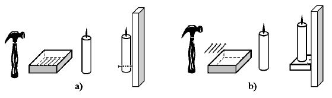
Hình 62: Bài toán gắn cây nến lên tường
Giải thích thí nghiệm trên, các nhà tâm lý cho rằng, đối tượng “hộp” ở đây, ít nhất, có hai nghĩa, từ đó dẫn đến hai giá trị khác nhau: “hộp đựng đinh” và “hộp giá đỡ”. Trong trường hợp thứ nhất, khi đinh ở trong hộp, nghĩa “hộp đựng đinh” nổi lên, nghĩa “hộp giá đỡ” lặn mất, thiếu mất nên bị bỏ qua, mặc dù chính nghĩa bị thiếu lại là nghĩa giúp đi đến lời giải tốt hơn.
Trong cả ba bài toán nói trên đều có các điểm chung: Các đối tượng “số”, “hình”, “hộp” đều có nhiều nghĩa; một số nghĩa nổi lên mạnh mẽ như “số dương”, “hình phẳng”, “hộp đựng đinh”; một số nghĩa khác bị bỏ qua (thiếu) như “số phức”, “hình không gian”, “hộp giá đỡ” và chính các nghĩa thiếu lại là lời giải.
Trong các trường hợp trên đều có hiện tượng: Một người hoàn toàn có khả năng giải bài toán cho trước nhưng cuối cùng vẫn không giải được, vì không thắng được tính ì tâm lý của chính mình. Loại tính ì này còn gọi là tính ì tâm lý do ức chế hay gọi tắt là tính ì tâm lý “thiếu”. Nguyên nhân ức chế có nhiều. Có những nguyên nhân tâm lý bên trong như bài toán “Liệu có tồn tại hai số…”, bài toán xếp diêm. Có những nguyên nhân bên ngoài như bài toán “Gắn cây nến lên tường”: Môi trường ảnh hưởng lên việc hiểu nghĩa và giá trị của cái hộp. Chúng ta hãy thử tìm hiểu cơ chế của nó.
- Như chúng ta đã biết (xem mục nhỏ 6.4.1 Trí nhớ), trí nhớ của cá nhân mang tính chọn lọc và chủ quan, quyết định bởi nguyên nhân sâu xa là các nhu cầu cá nhân, mà có khi chính người đó không ý thức được. Quá trình ghi nhớ là quá trình tạo dấu vết trong vỏ não, phản ánh thông tin tiếp nhận. Các dấu vết vật chất được hình thành nhờ các xung điện thần kinh (thông tin tiếp nhận đã giải mã), các biến đổi lý-hóa trong các bộ phận liên quan của các tế bào và các trung khu thần kinh. Những dấu vết vật chất nói trên là các liên kết thần kinh tạm thời, tạo thành mô hình kết nối thần kinh, phản ánh thông tin được ghi nhớ. Nếu thông tin tiếp nhận và quá trình tái hiện (nhận ra lại, nhớ lại, hồi tưởng) lặp đi, lặp lại nhiều lần thì những dấu vết vật chất càng trở nên “đậm”. Do vậy, thông tin tiếp nhận càng lưu giữ tốt.
Có hai hiện tượng cơ bản của hệ thần kinh cấp cao: Hưng phấn và ức chế. Các quy luật hoạt động của chúng là cơ sở sinh lý của các hoạt động tâm lý. Điều thường xảy ra là, trạng thái hưng phấn xảy ra ở phần này của bộ não thì các phần khác bị ức chế. Liên quan đến trí nhớ, chính những phần, ở đó có dấu vết vật chất đậm là những phần dễ kích thích hưng phấn, còn những phần có dấu vết vật chất mờ nhạt – bị ức chế.
Để trình bày phần tiếp theo cho dễ hiểu, người viết dùng hình ảnh tương tự sau:
Những dấu vết vật chất đậm trong não có thể ví như những xa lộ, còn những dấu vết vật chất mờ nhạt mới chỉ là những đường mòn lẫn với cỏ trên thảo nguyên. Rõ ràng, nếu không có những yêu cầu đặc biệt, đứng trước các con đường khác nhau (các xa lộ và đường mòn), các phương tiện di chuyển (các xung điện thần kinh) chắc chắn sẽ chọn xa lộ để đi một cách nhanh chóng, dễ dàng, tạo nên hiện tượng hưng phấn tại xa lộ đó. Tương tự như vậy, một mạch điện nhiều nhánh nối song song, nhánh nào có điện trở nhỏ nhất, số lượng điện tích đi qua nhánh đó nhiều nhất.
Mặt khác, cá nhân phản ứng với những kích thích (thông tin) từ bên ngoài theo cơ chế phản xạ. Hiện tượng phản xạ xảy ra theo ba giai đoạn lần lượt. Giai đoạn thứ nhất gồm các quá trình tiếp thu thông tin qua các giác quan, giải mã chúng thành các xung điện thần kinh, truyền các xung điện thần kinh hướng vào các trung khu thần kinh của não. Giai đoạn thứ hai gồm các quá trình vận động thần kinh của não, tạo ra hoạt động tâm lý nhằm biến đổi thông tin và ra quyết định cuối cùng. Giai đoạn thứ ba là quá trình truyền quyết định (mệnh lệnh) dưới dạng xung điện thần kinh hướng ra bộ phận cơ thể tương ứng và thúc đẩy bộ phận này hành động phản ứng lại kích thích từ bên ngoài.
Thông thường, một cách tự nhiên, tự tổ chức, tất cả các quá trình truyền, vận động, biến đổi của cả ba giai đoạn nói trên đều đi theo các xa lộ đã có sẵn trong trí nhớ. Trong khi đó, bất kỳ đối tượng nào cũng đều có nhiều nghĩa (các khả năng, tính chất, chức năng, trạng thái…). Ví dụ, số có nhiều loại số, hình có nhiều loại hình, hộp có thể dùng làm nhiều việc. Tuy nhiên, do trí nhớ của cá nhân mang tính chọn lọc và chủ quan, có những nghĩa được biến thành xa lộ trong trí nhớ, còn những nghĩa khác chỉ là những đường mòn lẫn với cỏ trên thảo nguyên. Ví dụ, tuy người giải bài toán đã học hết các loại số, nhưng trên thực tế số dương được dùng nhiều nhất: Đếm, tiêu tiền, mua sắm… đều dùng số dương. Đường số dương đã trở thành xa lộ cho đến khi giải bài toán: “Liệu có tồn tại hai số mà tổng của chúng bằng 10, tích của chúng bằng 40?”. Thông tin “số” vào đầu người giải, nó chọn xa lộ “dương” để đi và người giải phản ứng với số dương theo cơ chế phản xạ đã có sẵn trong trí nhớ để đi đến quyết định cuối cùng: “Không có hai số nào như thế” (xem Hình 63), mà chính người giải có khi không biết mình sai.
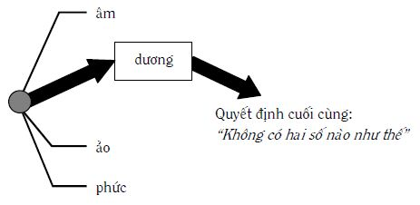
Hình 63: Tính ì tâm lý do ức chế
Tình hình tương tự cũng xảy ra đối với bài toán “xếp diêm” và “gắn cây nến lên tường”.
Montaigne đã nói một cách rất triết lý và chí lý rằng: “Tuổi già để lại các nếp nhăn trong bộ não nhiều hơn các nếp nhăn trên mặt”. Ở đây, các nếp nhăn trong bộ não được hiểu chính là các xa lộ. Càng già thì các xa lộ trong não càng nhiều, càng đậm, càng khó thay đổi các phản xạ có sẵn. Do vậy, nhiều người già rất bảo thủ, nhiều khi phản ứng sai mà chính mình không biết, lại còn khăng khăng bảo vệ các quyết định của mình. Phải chăng đây cũng là ý mà Planck nêu ra: Phải chờ “… những người chống đối dần dần chết đi hết và thế hệ mới lớn lên sẽ tiếp nhận chân lý đó ngay lập tức”.
- Để khắc phục tính ì tâm lý “thiếu”, ngay từ khi còn trẻ, mỗi người cần:
1. Lập “trạm kiểm soát” tiếp nhận các thông tin để hiểu chúng (xem mục nhỏ 6.4.2 Tiếp thu thông tin và các mức độ hiểu), đặc biệt là từ mức nghĩa. Nếu thông tin có nhiều nghĩa, người suy nghĩ phải tiến hành lần lượt từng nghĩa một. Ví dụ “số” có nhiều nghĩa, người suy nghĩ làm việc lần lượt với dương, âm, ảo, phức…, xem Hình 64.
2. Bất kỳ đối tượng nào cũng có nhiều nghĩa, trong khi con người thường suy nghĩ một chiều: Phần này hưng phấn thì những phần khác bị ức chế. Do vậy, để phát hiện các nghĩa có thể có từ đối tượng cho trước, người suy nghĩ phải có càng nhiều chiều xem xét càng tốt, theo đó, mỗi chiều giúp “thấy” một nghĩa, xem Hình 65. Tiếp theo, người suy nghĩ còn phải thấy mỗi nghĩa sẽ dẫn đến một giá trị, ích lợi nhất định.
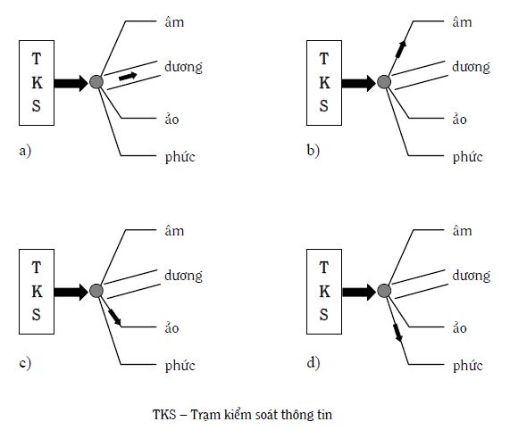
Hình 64: Hoạt động của trạm kiểm soát tiếp nhận thông tin
Ví dụ, cái hộp trong bài toán “gắn cây nến lên tường” có thể có nhiều nghĩa và nhiều giá trị: Đựng cái gì đó (đinh chẳng hạn); giá đỡ; cái hộp lật úp có thể dùng để nhốt con dế, con cào cào; dùng để chơi đồ hàng: Tưởng tượng nó là cái nhà…
Tương tự như vậy, Hình 48 nhìn theo chiều này, nó là ngôi sao, nhìn theo chiều khác nó là năm hình tròn đen bị khuyết… Hoặc, Hình 51 nhìn theo chiều này (lấy đen làm nền), đấy là cái bình, nhìn theo chiều khác (lấy trắng làm nền), ta có hai mặt người nhìn nghiêng đối diện nhau…
Bạn đọc có thể làm loại bài tập sau: Bạn lấy bất kỳ vật gì, ví dụ chiếc ghế đẩu chẳng hạn. Thay đổi cách xem xét, bạn thử tìm xem nó có những nghĩa gì? Từ đó có thể mang lại các giá trị gì? Ghế có bề mặt để ngồi; để đặt cái gì đó lên; ghế có độ cao, có thể dùng thay thang; ghế có trọng lượng, có thể dùng nó như một vật nặng; ghế có kích thước, có thể dùng nó để đo; ghế có thể lật nghiêng để ngồi xổm; ghế có thể dùng để đỡ như cái mộc; ghế có thể dùng làm vũ khí tấn công; ghế có thể ghép nhiều cái lại thành giường nằm… Hết sức tránh chỉ thấy một nghĩa và giá trị của nó là chỉ dùng để ngồi. Về điều này, W. Johnson nhận xét: “Đối với con chuột, miếng phó-mát chỉ là miếng phó-mát. Điều này giải thích vì sao các bẫy chuột hoạt động hiệu quả”.
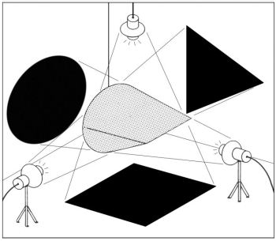
Hình 65: Các nghĩa của đối tượng cho trước tùy thuộc vào chiều xem xét
Việc tìm ra “đủ” nghĩa của đối tượng cho trước là công việc khó, tuy nhiên, bạn cần có ý thức làm việc đó, vì nó giúp bạn tránh tính ì tâm lý “thiếu”, mà nhiều khi chính nghĩa “thiếu” lại là nghĩa dẫn đến giá trị giải được bài toán, hoặc dẫn đến lời giải tốt hơn.
Dưới đây là một số câu chuyện và hình vẽ, bạn thử phân tích chúng:
○ Họa sỹ thời cổ Hy Lạp Zepsis vẽ bức tranh vườn nho giống như thật, đến nỗi chim bay đến mổ những quả nho trên tranh. Họa sỹ Parasi thấy vậy nói rằng ông ta sẽ vẽ một bức tranh thật hơn thế nữa. Một thời gian sau Parasi mang tác phẩm của mình đến cho Zepsis xem. Nhìn bức tranh Zepsis kêu lên: “Nào ông hãy bỏ màn ra đi, tôi muốn xem ông vẽ gì trên bức tranh của ông”. Parasi trả lời: “Đấy là tác phẩm của tôi. Tôi vẽ chính tấm màn mà”. “Anh thắng cuộc” – Zepsis thừa nhận – “Tôi chỉ lừa được loài chim, còn anh lừa được cả họa sỹ”.
○ Có lần Kapitsa đố Lanđau giải một bài toán (hai nhà vật lý này về sau đều nhận được giải Nobel): “Buộc một cái chảo vào đuôi con mèo. Khi mèo chạy, chảo va đập xuống sàn nhà gây tiếng động ầm ĩ. Hỏi mèo phải chạy với vận tốc v bao nhiêu để không còn nghe tiếng động nữa”. Lanđau suy nghĩ, giải khá nhiều phương trình mà không ra, cuối cùng ông phải thú nhận với Kapitsa và đề nghị cho biết lời giải. Đáp số hóa ra rất đơn giản: Vận tốc bằng không (con mèo đứng yên thì sẽ không còn nghe tiếng động nữa).
○ Một cô gái phi ngựa trong rừng Fontainebleau gặp một nhóm sĩ quan Pháp và nước ngoài. Các sĩ quan Anh khen: “Con ngựa đẹp quá”. Các sĩ quan Đức trầm trồ: “Dáng ngựa phi thật tuyệt vời”. Các sĩ quan Pháp nháy mắt nhau: “Con gái nhà ai mà xinh thế”.
○ Vợ phàn nàn với chồng: “Thằng con nhà mình chẳng ý tứ gì hết. Trong khi nói chuyện với em, nó ngáp liên hồi. Em đếm được tám lần tất cả”. Chồng: “Chẳng phải đâu em ạ. Có lẽ, nó lấy đà để sẽ nói điều gì đấy”.
○ Chiều về, một đôi thanh niên đang say sưa tâm sự trên ghế đá công viên. Bỗng cô gái thì thầm: “Anh có muốn nhìn thấy chỗ mổ ruột thừa của em không?” “Anh muốn” – chàng trai hồi hộp đáp. “Thế thì anh hãy ngước nhìn lên kia, ngôi nhà lớn trước mặt ấy, tầng 7, cửa sổ thứ ba, từ trái sang”.
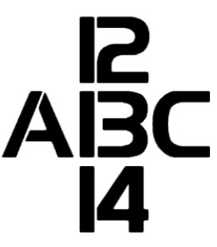
6.5.4 Tính ì tâm lý do ngoại suy ra ngoài phạm vi áp dụng (Tính ì tâm lý “thừa”)
- Khái niệm phạm vi áp dụng đã được trình bày trong mục 1.2 Một số khái niệm cơ bản và các ý nghĩa của chúng ở quyển một, được nhắc đi nhắc lại nhiều lần cho đến nay (và sẽ còn nhắc nhiều lần nữa trong các quyển sách của bộ sách “Sáng tạo và đổi mới”). Dưới đây, người viết cố gắng chi tiết hóa thêm khái niệm này.
Phạm vi áp dụng của đối tượng cho trước được hiểu là tập hợp các thông số cụ thể về không gian, thời gian, các điều kiện vật chất, năng lượng, thông tin… của môi trường, ở đó, hoạt động của đối tượng cho trước cho ra kết quả dương tính: Đúng, ích lợi, mạnh, ưu điểm, tốt, tích cực… Nếu dùng đối tượng cho trước trong môi trường nói trên, chúng ta nói rằng, đối tượng cho trước được dùng đúng hoặc dùng trong phạm vi áp dụng của nó. Nếu dùng đối tượng cho trước ra ngoài phạm vi áp dụng của nó: Đúng có thể thành sai, lợi có thể thành hại, mạnh có thể thành yếu, ưu điểm có thể thành nhược điểm…, xem Hình 66. Nói cách khác, dùng đối tượng cho trước ra ngoài phạm vi áp dụng của nó, có thể làm nảy sinh các vấn đề.
PHẠM VI ÁP DỤNG
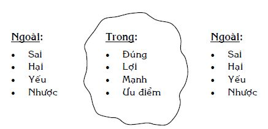
Hình 66: Kết quả của việc sử dụng đối tượng ở trong và ngoài phạm vi áp dụng của nó
Trong nhiều trường hợp, ngay từ đầu, xác định cụ thể, chính xác phạm vi áp dụng của một đối tượng nào đó là công việc rất khó. Ví dụ, ngay từ đầu, các nhà vật lý đã không xác định được phạm vi áp dụng của cơ học Newton nói riêng, vật lý cổ điển nói chung (xem mục nhỏ 6.5.2 Tính ì tâm lý: Vật cản trong tư duy sáng tạo và đổi mới). Có những trường hợp, lúc đầu người ta không biết đối tượng cho trước sẽ đem lại ích lợi ở đâu. Về sau, hóa ra phạm vi áp dụng của nó rất rộng. Điều này đã xảy ra nhiều lần đối với rất nhiều phát minh trong các lĩnh vực thuộc khoa học cơ bản.
Ngược lại, có những trường hợp, lúc đầu người ta phát hiện ra các ích lợi của đối tượng cho trước và cho phép dùng nó một cách rộng rãi. Thời gian trôi đi, có khi khá dài, mới xác định chính xác hơn phạm vi áp dụng của nó và thay đổi quyết định ban đầu, có khi đến mức, ra lệnh cấm sử dụng… Điều này đã xảy ra nhiều lần với nhiều loại hóa chất, thuốc chữa bệnh, phương tiện dùng trong giải phẫu thẩm mỹ… Do vậy, trong nhiều trường hợp, phạm vi áp dụng mang tính tương đối, hiểu theo nghĩa, phạm vi áp dụng của đối tượng cho trước, được xác định bởi những hiểu biết của loài người cho đến nay, có thể thay đổi trong tương lai. Tính tương đối của phạm vi áp dụng của đối tượng cho trước còn thể hiện ở chỗ, phạm vi áp dụng vừa nói có thể khác nhau giữa các cá nhân khác nhau và toàn nhân loại. Về mặt nguyên tắc, phạm vi áp dụng được xác định bởi tri thức của toàn nhân loại thường chính xác hơn phạm vi áp dụng được xác định bởi tri thức của cá nhân cụ thể. Chưa kể, các cá nhân khác nhau lại có các tri thức khác nhau. Từ đây dẫn đến những trường hợp: Cá nhân này dùng đối tượng cho trước khác đi nhưng vẫn nằm trong phạm vi áp dụng của nó, thu được ích lợi; cá nhân khác dùng ra ngoài mà không biết – phải trả giá. Đây cũng là điều mà giáo dục, đào tạo (hiểu theo nghĩa rộng) phải tính đến trong việc truyền thụ kiến thức nhân loại đến từng cá nhân. Sáng tạo và đổi mới giúp mở rộng, cụ thể hóa, chính xác hóa phạm vi áp dụng của đối tượng cho trước, ở mức độ cá nhân, cũng như ở mức độ nhân loại.
Phạm vi áp dụng có thể phân thành nhiều loại. Ở đây, người viết nhấn mạnh hai loại: Phạm vi áp dụng khách quan và phạm vi áp dụng chủ quan. Phạm vi áp dụng khách quan xác định bởi các quy luật khách quan, không phụ thuộc vào ý muốn chủ quan của con người. Phạm vi áp dụng chủ quan có phần do con người quy định, quy ước, thể hiện dưới dạng như pháp luật, quy tắc, truyền thống, phong tục, tập quán… Loại phạm vi áp dụng chủ quan có thể thay đổi từ quốc gia này sang quốc gia khác, từ dân tộc này sang dân tộc khác, từ vùng này sang vùng khác, từ văn hóa này sang văn hóa khác, thậm chí, từ gia đình này sang gia đình khác. Ví dụ, hoạt động mại dâm ở nơi này là trong phạm vi áp dụng, ở nơi khác là ngoài phạm vi áp dụng. Con cái tranh luận với cha mẹ ở gia đình này là trong phạm vi áp dụng, ở gia đình khác là ngoài phạm vi áp dụng…
- Trong các nguyên nhân dẫn đến việc cá nhân dùng đối tượng cho trước ra ngoài phạm vi áp dụng của nó, có nguyên nhân rất quan trọng là loại trí nhớ đưa ra các phép thử khác đi so với các phép thử đã có, được chọn lọc tự nhiên giữ lại (xem mục nhỏ 6.5.1 Tính ì tâm lý: Các nhận xét chung). Loại tính ì tâm lý do trí nhớ, dẫn đến dùng đối tượng ra ngoài phạm vi áp dụng của nó, còn gọi tắt là tính ì tâm lý “thừa”.
Trước hết, tính ì tâm lý “thừa” thường xảy ra khi điều kiện, hoàn cảnh đã thay đổi nhưng cá nhân không đủ thời gian nhận biết, hoặc không nhận biết, hoặc nhận biết cần thay đổi nhưng không chịu thay đổi, vẫn tiếp tục dùng đối tượng cho trước theo quán tính (thói quen) cho hoàn cảnh mới. Điều này có thể dẫn đến kết quả: Dùng đối tượng cho trước ra ngoài phạm vi áp dụng của nó. Ví dụ, các trò chơi “Chim bay, cò bay”, “Một cây gậy có mấy đầu?” (xem mục nhỏ 6.5.1 Tính ì tâm lý: Các nhận xét chung). Ví dụ khác, nếu bạn đem những gì đúng với ngôi sao dùng cho Hình 48, lúc này đã là năm hình tròn đen bị khuyết: Bạn dùng những gì đúng với ngôi sao ra ngoài phạm vi áp dụng của chúng. Hoặc, những ngày đầu của năm mới dương lịch (chẳng hạn 2005), bạn vẫn viết năm cũ (2004). Hoặc, “nhập gia” nhưng các hành động của bạn vẫn không “tùy tục”, do vậy, lúc đó, các hành động của bạn bị coi là nằm ngoài phạm vi áp dụng của chúng, khi hoàn cảnh, điều kiện đã thay đổi, không còn như cũ.
Các thông tin lưu giữ trong trí nhớ con người còn có khả năng liên kết với nhau, là cơ sở của quá trình liên tưởng (xem mục nhỏ 6.4.6 Liên tưởng). Liên tưởng còn tham gia vào quá trình hiểu, xử lý thông tin và phát các ý tưởng mới.
Người nào cũng có khả năng liên tưởng. Nhờ liên tưởng, người suy nghĩ dễ dàng chuyển từ đối tượng này sang đối tượng khác; liên kết các đối tượng khác nhau lại với nhau; mở rộng ứng dụng của lời giải cho trước; chuyển giao ý tưởng từ đối tượng, lĩnh vực này sang đối tượng, lĩnh vực khác… Đây là những công việc rất cần thiết trong tư duy sáng tạo.
Tuy vậy, nếu quá trình liên tưởng xảy ra một cách tự nhiên, không điều khiển, có thể xảy ra những trường hợp, ở đó, người suy nghĩ không biết rằng, mình đã liên tưởng vượt ra ngoài phạm vi áp dụng của đối tượng cho trước (xem Hình 67). Trường hợp này càng dễ dàng xảy ra khi trước đó, quá trình liên tưởng đã đem lại nhiều thành công cho người suy nghĩ, tạo dấu vết vật chất đậm trong trí nhớ.
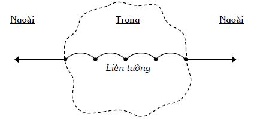
Hình 67: Liên tưởng ra ngoài phạm vi áp dụng
“Một bà quý tộc yêu cầu nhà bác học Pôpốp, người sáng chế ra radio, giải thích cho bà ta về cách đánh điện tín liên lục địa qua đại dương bằng dây cáp. Nhà bác học giải thích tỉ mỉ cho bà ta phương pháp đó. Nghe xong, bà quý tộc cảm ơn rất lịch sự và bỗng hỏi:
“Tôi cũng đã có nhiều dịp nói chuyện với nhiều nhà bác học nhưng chẳng ai giảng giải rõ ràng như ngài. Cuộc nói chuyện của ngài thật hay, hấp dẫn và lôi cuốn. Nhưng tôi còn một điều chưa hiểu: Tại sao bức điện tín đánh từ nước Mỹ sang châu Âu mà ta nhận qua cáp dưới đại dương lại không bị ướt?”.
Trong khi nghe giải thích, bà quý tộc liên tưởng đến các vật nhúng xuống nước, khi lấy lên, đều bị ướt, nên đặt câu hỏi. Bà quý tộc không nhận biết rằng, ở đây có hai hiện tượng với các phạm vi áp dụng khác nhau.
“Nhà Newton nuôi mèo. Đang ở trong phòng muốn ra ngoài, nó cào cửa làm Newton đang làm việc phải mở cửa cho nó ra. Chơi bên ngoài chán, muốn vào, nó lại cào cửa, bắt Newton ra mở cửa phòng cho nó vào. Để khỏi phân tâm, Newton nói người giúp việc đục một lỗ ở phần dưới cánh cửa dành lối đi cho mèo. Đến khi mèo đẻ mèo con, Newton lại bảo người giúp việc đục thêm lỗ nhỏ cho mèo con. Người giúp việc can ông: “Tôi nghĩ, cả hai loại mèo đều có thể dùng chung lỗ đã có”. Newton: “…”.
Chúng ta có thể đoán, khi đề nghị đục thêm lỗ nhỏ cho mèo con, trong óc, Newton liên tưởng đến, ví dụ, người lớn và trẻ con không mặc quần áo chung được: Phải có hai bộ lớn, nhỏ khác nhau. Liên tưởng này đã ảnh hưởng đến quyết định của Newton.
- Để giúp khắc phục tính ì tâm lý “thừa”, mỗi người cần:
1. Luôn có ý thức về phạm vi áp dụng trong hành động, để không bao giờ dùng bất kỳ đối tượng nào ra ngoài phạm vi áp dụng của nó.
Để làm điều đó, cần đọc kỹ và thực hiện đúng các hướng dẫn sử dụng, chống chỉ định, dự phòng đối với những đối tượng, ở đó, phạm vi áp dụng đã được xác định. Đối với những đối tượng chưa có hướng dẫn sử dụng… tự mình cần chú ý xác định phạm vi áp dụng của chúng. Trí tưởng tượng, sự tương tự rất giúp ích trong trường hợp này.
2. Nhạy bén với sự thay đổi để đánh giá, liệu những gì đúng, ích lợi, mạnh… trong hoàn cảnh cũ còn tiếp tục đúng, ích lợi, mạnh… trong hoàn cảnh mới hay không.
Nếu thấy không, cần chủ động thay đổi chúng hoặc tạo ra cái mới, thích hợp với hoàn cảnh mới. Cần tránh trường hợp trả giá trên thực tế mới chịu thay đổi.
3. Thận trọng trong việc thay đổi cách dùng đối tượng cho trước, vì cách dùng mới có thể nằm ngoài phạm vi áp dụng của đối tượng đó.
Do vậy, cần cân nhắc, thử nghiệm, dự phòng, kiểm tra…, tránh thực hiện sự thay đổi cách dùng đối tượng nào đó một cách đại trà ngay.
- Dưới đây là một số câu chuyện, bạn thử phân tích chúng:
Khi Einstein di cư sang Mỹ sống ở New York, tình cờ ông gặp một người quen. Người ấy khuyên ông: “Ngài Einstein, ngài nên mua ngay chiếc áo khoác mới đi. Áo ngài đã cũ lắm rồi”. Einstein: “Để làm gì? Cả New York này có ai biết tôi đâu”.
Một thời gian sau, cũng chính người đó gặp lại Einstein ở New York và Einstein vẫn mặc chiếc áo khoác cũ. Người ấy lại khuyên ông đi mua chiếc áo mới. Einstein trả lời: “Để làm gì? Cả New York này ai cũng biết tôi cả”.
A nói với B: “Tiền bạc không mang lại hạnh phúc, cậu hiểu không?” B gật đầu tán đồng: “Đúng vậy. Đã nhiều lần tớ nói như thế với chủ nợ của tớ mà ổng không tin, vẫn nằng nặc đòi nợ”.
Chồng: “Sao bữa nay thịt dai thế này? Em nấu bao nhiêu phút đấy?”
Vợ: “Em làm đúng theo lời chỉ dẫn trong cuốn sách dạy nấu ăn anh mua cho em. Này nhé, sách viết: ‘Một ký thịt nấu trong nửa giờ’. Em mua có nửa ký nên nấu đúng 15 phút”.
Mẹ nhắc bé: “Buổi tối làm gì cũng phải nhớ bật đèn thì mới biết đường mà làm nghe con”.
Lúc đi ngủ, bé nói với mẹ: “Mẹ ơi con đi ngủ đây, mẹ đừng tắt đèn”.
Mẹ: “Con ngủ thì cần gì đèn?”
Con: “Mẹ tắt đèn thì con biết đường nào mà ngủ”.
A than phiền với B: “Tớ nản quá, làm việc gì cũng bị thất bại cả”. B động viên: “Không sao, thất bại là mẹ thành công, càng nhiều thất bại, càng lắm thành công”. A tươi lên một tý rồi bỗng hồi hộp hỏi: “Thế lỡ bà mẹ mà cậu vừa nói đặt vòng kế hoạch hóa rồi thì sao?”.
Giám ngục nói với tù nhân nguyên là một giám đốc: “Anh có người tới thăm, đang ngồi ở phòng chờ dưới kia”. Tù nhân: “Nhờ ông nói giùm là tôi đi công tác vắng”.
6.5.5 Tính thiếu tự tin, rụt rè đối với sáng tạo (Tính ì tâm lý tự ti)
- Thực tế cho thấy, có không ít người thiếu tự tin, rụt rè đối với khả năng sáng tạo của chính mình. Để nhấn mạnh, người viết tách loại tính ì tâm lý này thành một mục nhỏ riêng và gọi tắt là “tính ì tâm lý tự ti” hoặc “tính tự ti”.
Có nhiều loại nguyên nhân tác động lẫn nhau dẫn đến tính tự ti:
1. Các nguyên nhân tâm lý:
Phương pháp phổ biến, được phần lớn mọi người dùng để giải quyết vấn đề và ra quyết định là phương pháp thử và sai. Trong đó số lần sai nhiều hơn số lần đúng. Dấu vết của những lần sai in đậm trong trí nhớ, làm cho cá nhân mỗi lần định thử khác đi, lại lo lắng: “Lỡ lần này lại sai nữa thì sao?”.
Các nguyên nhân bên trong dẫn đến các phép thử sai có thể là: Các tính ì “thiếu”, “thừa” (xem các mục nhỏ 6.5.3 Tính ì tâm lý do ức chế (Tính ì tâm lý “thiếu”), 6.5.4 Tính ì tâm lý do ngoại suy ra ngoài phạm vi áp dụng (Tính ì tâm lý “thừa”)); thiếu các kiến thức cần thiết để tránh những phép thử sai không đáng có (ví dụ như kiến thức về thế giới bên trong con người mình, kiến thức về những đối tượng cần sáng tạo, kiến thức về các phương pháp sáng tạo – PPLSTVĐM).
Ngoài ra, cá nhân còn có thể tự ti do có các quan niệm sai về sáng tạo như: Sáng tạo do bẩm sinh; sáng tạo phải cần cù mà mình lại không đủ kiên trì; sáng tạo là phải tạo ra cái gì đó thật lớn mà như thế vượt quá khả năng mình; sáng tạo là tự mình phải làm từ A đến Z mà mình lại không đủ điều kiện thực hiện; người ta đã sáng tạo hết cả rồi, mình chỉ cần sử dụng, khai thác những sản phẩm sáng tạo đã có là đủ; những người học giỏi làm giỏi hơn mình còn không thấy có thành tích sáng tạo đáng kể gì, làm sao mình sáng tạo được…
2. Các nguyên nhân thuộc về môi trường (hiểu theo nghĩa rộng)
Nhiều môi trường không chỉ tạo ra các quan niệm sai về sáng tạo nói ở trên mà còn thiên về phía cản trở sáng tạo, hơn là động viên, khuyến khích, ủng hộ, tạo điều kiện cho những cái mới ra đời và phát triển. Sự cản trở sáng tạo, nhẹ thì cười cợt, chế giễu, phê phán, nặng thì đặt ra nhiều vùng cấm sáng tạo, vùi dập, đàn áp những cái mới (xem mục nhỏ 6.5.2 Tính ì tâm lý: Vật cản trong tư duy sáng tạo và đổi mới). Nói cách khác, đấy là loại môi trường làm cho những người không đủ ý chí, nghị lực dễ nghĩ rằng: “Mình không có khả năng sáng tạo”, hoặc “An toàn nhất là đừng đưa ra bất kỳ cái gì mới”, hoặc “Tốt nhất là hành động theo kiểu Thiên lôi chỉ đâu đánh đấy”.
Nếu mỗi người chúng ta thật thà trả lời câu hỏi: “Mình thường thiên về phía ủng hộ hay thiên về phía phê phán những cái mới, được cá nhân nào đó trong môi trường của mình đưa ra?” thì câu trả lời chắc sẽ là: “Thiên về phía phê phán”. Điều này có thể được giải thích vì các nguyên nhân như:
Mỗi người đều có nhu cầu được để ý, chú ý… Trong hai thái độ ủng hộ hoặc phê phán cái mới, thái độ phê phán dễ thỏa mãn nhu cầu đó hơn, vì mình phát hiện ra cái sai, mình đúng hơn, giỏi hơn người đưa ra cái mới. Còn với thái độ ủng hộ cái mới, mình chỉ là người đi theo, hùa theo, ăn theo: Người đưa ra cái mới được để ý, chú ý chứ không phải là mình.
Những cái mới ra đời, giống như những mầm non của các loại cây mới, thường khó nhận dạng chính xác ngay các ích lợi và khuynh hướng phát triển, lại còn rất non yếu. Ở giai đoạn mầm non, người ta thường khó phân biệt mầm lúa (lợi) với mầm cỏ (hại). Do vậy, người đưa ra cái mới khó bảo vệ cái mới của mình một cách thuyết phục trước những phê phán. Mầm, dù là mầm của cây gỗ cứng, dễ dàng bị gãy, ngay cả khi có tác động yếu, cho nên, phê phán lúc này dễ thành công, dễ thỏa mãn nhu cầu được để ý, chú ý… hơn.
Người đưa ra cái mới chỉ là một người (thiểu số), còn những người khác (xem a) và b) ở trên) lại đông hơn (đa số). Một ý kiến phê phán khởi phát sẽ dễ dàng kéo theo nhiều ý kiến phê phán khác. Phần thắng lúc này thường nghiêng về phía đa số.
Rõ ràng, nếu mỗi người chúng ta đều thiên về phía phê phán những cái mới thì tất cả chúng ta tạo nên môi trường không thân thiện với những cái mới, trong đó có những cái thực sự là sáng tạo. Tệ hơn nữa, tạo ra môi trường cản trở sáng tạo, giết chết các ý tưởng sáng tạo.
Dưới đây là một câu chuyện có thật xảy ra trong Chiến tranh thế giới lần thứ hai:
“Một thuyền trưởng người Mỹ được giao nhiệm vụ chỉ huy một tàu vận tải loại trung, chở hàng hóa, vũ khí từ Mỹ sang Châu Âu để tiếp tế cho quân đồng minh đánh phát xít Đức. Tàu vận tải loại trung có nhược điểm: Không linh động như tàu nhỏ, không được trang bị các phương tiện phòng chống tàu ngầm như tàu lớn.
Với tinh thần trách nhiệm, người thuyền trưởng tập hợp thủy thủ đoàn lại và đề nghị mọi người hiến kế giải bài toán: “Nếu tàu ngầm Đức phóng ngư lôi vào tàu, chúng ta phải đối phó như thế nào để vẫn an toàn?”.
Trong các ý tưởng đưa ra, có ý kiến của một anh thủy thủ trẻ: “Chúng ta có thể đối phó bằng cách: Tất cả mọi người lên boong tàu, đứng ở phía quả ngư lôi đang lao tới và cùng mắm môi, mắm lợi thổi thật mạnh để làm dạt quả ngư lôi sang hướng khác. Tàu ta sẽ thoát nạn”. Anh thủy thủ trẻ vừa dứt lời, mọi người phá ra cười. Tiếp theo là nhiều ý kiến phê phán, chỉ trích, không chỉ nội dung ý tưởng mà cả tinh thần, thái độ, ý thức của anh thủy thủ trẻ…”
Bạn đọc có thể tưởng tượng không khí buổi họp lúc đó như thế nào và chính bạn có thể có không ít các ý kiến chống lại ý tưởng của anh thủy thủ trẻ. Đấy là điều bình thường, quen thuộc. Bây giờ, người viết kể tiếp:
“… Sau buổi họp, về phòng của mình, người thuyền trưởng suy nghĩ về các ý tưởng thu được. Đến ý tưởng của anh thủy thủ trẻ, thay vì bỏ qua, ông thử phát triển tiếp: “Mới thoạt nghe, ý tưởng này buồn cười thật và không đạt được mục đích đề ra. Nhưng về mặt vật lý mà nói, một vật chuyển động, nếu có thêm lực tác động, nó sẽ thay đổi quỹ đạo ban đầu. Lực thổi từ miệng quá nhỏ. Nếu có lực đủ lớn thì sao? Ý tưởng có thể thực hiện được. Tìm đâu ra lực đủ lớn?”. Ông liên tưởng đến những máy bơm công suất rất mạnh có sẵn trên tàu. Bình thường, những máy bơm này chỉ dùng trong những trường hợp như phun nước chữa cháy tàu, còn không thì “trùm mền”. Từ đó, ông đã tìm ra lối thoát. Tại căn cứ, ông đề nghị làm những ống đặt xung quanh thân tàu, chĩa ra ngoài và nối chúng với các máy bơm. Tại những vùng biển nghi ngờ, hoặc được báo có tàu ngầm Đức hoạt động, ông ra lệnh khởi động các máy bơm cho phụt ra xung quanh tàu những tia nước mạnh. Đã có những lần, nhờ vậy, tàu của ông thoát khỏi ngư lôi Đức”.
Rất may, trong câu chuyện nói trên, ý tưởng sáng tạo không bị tiêu diệt. Có hẳn một cụm từ tiếng Anh để chỉ những người thiên về phía chỉ trích các ý tưởng mới, đặc biệt, vào lúc chúng vừa được phát ra, đấy là “Idea Killers” – những người giết ý tưởng.
Để giúp khắc phục tính tự ti, rất cần thực hiện các biện pháp đồng bộ của cá nhân với môi trường:
Mỗi cá nhân cần có thái độ trân trọng những ý tưởng mới để tạo ra môi trường thân thiện, chứ không phải cản trở sáng tạo. Điều này đem lại ích lợi không chỉ cho cá nhân người sáng tạo mà còn cho tất cả mọi người vì mỗi người đều sẽ có lúc sáng tạo và đều cần sự thân thiện của môi trường. Chưa kể, thực tế phát triển cho thấy, các ích lợi của sáng tạo được chia sẻ ở phạm vi rộng: Bạn chưa sáng tạo ra cái gì cả nhưng bạn đã và đang hưởng ích lợi biết bao sáng tạo của những người khác. Vậy không nên giết các ý tưởng.
Giáo dục và đào tạo (hiểu theo nghĩa rộng) phải trang bị cho tất cả mọi người những kiến thức cần thiết để mỗi người ý thức được tiềm năng sáng tạo to lớn của mình, có các quan niệm đúng về sáng tạo, có PPLSTVĐM để giảm đáng kể các phép thử sai.
Ví dụ, cần quan niệm, sáng tạo là cuộc chạy tiếp sức chứ không phải một người làm hết từ A đến Z, một mình làm được trọn vẹn cái lớn (xem mục nhỏ 4.2.7 Sáng tạo mức cao: Cuộc chạy tiếp sức của phương pháp thử và sai, và sự cần thiết sáng chế ra PPLSTVĐM ở quyển một). Các nhà nghiên cứu lịch sử khoa học xác định rằng, các công trình của Lord Kelvin dựa trên và tiếp nối 32 phát minh của Cavendish, Helmholtz cùng các nhà khoa học khác. Hoặc, thuyết tương đối hẹp, xây dựng bởi Einstein, thực chất, có tính đến nhiều kết quả nghiên cứu quan trọng của nhiều nhà khoa học, đặc biệt, phải kể đến Lorentz và Poincaré. Chính Einstein cũng có lần bày tỏ sự ngạc nhiên khi được ca ngợi về việc đưa ra thuyết tương đối, đại ý: “Tôi không hiểu tại sao mọi người khen tôi nhiều như thế. Nếu tôi không đưa ra thuyết tương đối thì vài năm sau Lorentz hoặc Poincaré sẽ đưa ra. Họ đã đến rất gần rồi”.
Menđeleev nhấn mạnh: “Phát minh thực sự, được thực hiện bởi các nỗ lực của rất nhiều các nhà nghiên cứu, mà đôi khi, chỉ một người trong số đó là người đại diện cho thành quả tập hợp các công việc trí óc của nhiều người”.
Bạn không nên cầu toàn: Phải tự mình làm hết tất cả, mà thực tế cho thấy, mỗi người đóng góp theo khả năng, hoàn cảnh của mình. Nói như J. Verne: “Tất cả những gì một người có thể tưởng tượng ra, những người khác sẽ biến chúng thành hiện thực”. Thực tế cho thấy, nhiều ý tưởng của ông đã trở thành hiện thực (xem lại Hình 60: Số phận của các ý tưởng viễn tưởng trong mục nhỏ 6.4.9 Trí tưởng tượng) là nhờ những người khác.
- Cá nhân sáng tạo cần phải “tự nhủ” rằng, số chân lý tuyệt đối thuộc loại đếm trên đầu ngón tay, mọi cái đều có thể, cái không thể chỉ mang tính tạm thời. Thế giới này, vũ trụ này vô cùng đa dạng, đến nỗi, bạn “bịa” ra một cái gì đó mới, bạn nhất định sẽ tìm ra phạm vi áp dụng, ở đó, cái mới đem lại ích lợi. Edison cũng khẳng định “Không có ý tưởng nào là không đáng kể”.
Người ta hỏi Einstein: “Những phát minh đảo lộn thế giới thì xuất hiện như thế nào?” và nhận được câu trả lời: “Rất đơn giản. Mọi người đều biết rằng, điều đó không thể thực hiện được. Ngẫu nhiên có một người dốt nát, không hay biết gì về điều đó và cứ làm… Chính anh ta cho ra đời cái phát minh ấy”. Cũng chính Einstein nói một cách hóm hỉnh về thành quả của mình như sau: “Nếu như tôi biết một số dữ kiện (về những điều không thể làm được – người viết làm rõ ý), tôi đã không phát minh ra được thuyết tương đối”.
Để thuyết phục bạn thêm rằng, mọi cái đều có thể, người viết dẫn ra “quy luật Clark”, được nhiều nhà khoa học nhắc đến, khi nói chuyện với thanh niên: “Nếu bạn cần giải quyết một vấn đề gì và phải đi hỏi ý kiến một nhà khoa học lớn tuổi. Nếu nhà khoa học đó nói rằng vấn đề của bạn có thể giải quyết được thì bạn hãy tin ông ta. Đúng là vấn đề đó giải quyết được. Còn nếu như nhà khoa học lớn tuổi nói rằng vấn đề đó không giải quyết được thì bạn đừng tin ông ta. Ông ta nói sai đấy. Bạn hãy làm theo ý của mình”.
Trên con đường sáng tạo, mỗi người nên đi tuần tự từ đơn giản đến phức tạp, từ những bài toán gần gũi, sát sườn đến những bài toán xa hơn, từ sáng tạo mức “zêrô” đến sáng tạo ở các mức cao hơn (xem mục nhỏ 4.2.6 Các mức sáng tạo – Các mức khó của bài toán; 4.2.7 Sáng tạo mức cao: Cuộc chạy tiếp sức của phương pháp thử và sai, và sự cần thiết sáng chế ra PPLSTVĐM ở quyển một). Làm như vậy bạn sẽ có những thành công ban đầu tuy nhỏ nhưng giúp xây dựng và củng cố tính tự tin, tự trọng, để từ đó, bạn có những thành công lớn hơn. Bởi vì, lòng tự trọng, tự tin của một người tỷ lệ thuận với các thành công của người đó.
Để giúp khắc phục tính tự ti, nhiều nước thành lập những “vi môi trường”, ở đó bạn có thể thoải mái trao đổi với những người thuộc môi trường này về các ý tưởng của mình, mà không sợ bị phê phán, chỉ trích. Ví dụ, ở Mỹ hàng tuần trên TV phát cuộn băng quảng cáo và lời kêu gọi của Nghiệp đoàn nghiên cứu patent Mỹ: “Bất kỳ ý tưởng nào của bạn mà bạn cảm thấy tuyệt vời, hoặc ngược lại cảm thấy điên rồ. Nếu như ý tưởng đó có thể giúp giải quyết vấn đề nào đó hay giúp cho việc đưa ra sản phẩm mới thì bạn cần đưa ý tưởng đó ra giới thiệu, xem xét”. Tiếp theo, trên màn hình xuất hiện số điện thoại mà bất kỳ người nào, ở đâu đều có thể gọi đến không mất tiền để trao đổi và nhận những thông tin mà mình quan tâm.
6.5.6 Chủ động sống chung và khắc phục tính ì tâm lý
Tất cả chúng ta, không trừ một ai, đều có tính ì tâm lý và không thể khắc phục nó hoàn toàn được. Tính ì tâm lý là một thuộc tính (tính chất vốn có) của tâm lý và có nguồn gốc vật chất là bộ não (chất xám). Theo thuyết tương đối của Einstein, vận tốc lớn nhất có thể có là vận tốc của ánh sáng truyền trong chân không. Vận tốc này là hữu hạn và bằng khoảng 300.000 km/giây. Điều này có nghĩa, các chất tạo nên bộ não nói riêng, toàn bộ bộ não nói chung chuyển từ trạng thái này sang trạng thái khác trong khoảng thời gian ti luôn luôn lớn hơn không (ti là ký hiệu thời gian chuyển trạng thái, ta luôn có ti > 0). Khái quát hóa lên nữa, thời gian chuyển trạng thái của vật chất nói chung không bao giờ bằng không cả. Điều này cũng có nghĩa, thời gian chuyển trạng thái và thay đổi khuynh hướng của các hiện tượng tâm lý như là các phẩm chất mang tính hệ thống của bộ não cũng luôn lớn hơn không. Trong khoảng thời gian này, các trạng thái và khuynh hướng cũ của các hiện tượng tâm lý không biến mất ngay lập tức mà vẫn còn phát huy tác dụng của chúng, tạo nên tính ì tâm lý. Trong ý nghĩa như vậy, chúng ta không thể loại bỏ tính ì tâm lý của mình và của những người khác một cách hoàn toàn được. Nói cách khác, chúng ta phải sống chung với tính ì tâm lý. Tuy nhiên, sự sống chung này phải mang tính chủ động một cách có ý thức, theo các hướng sau:
1. Tự làm giảm tác hại tính ì tâm lý của chính mình bằng cách luyện tập sử dụng các lời khuyên trình bày trong các mục nhỏ từ 6.5.3 đến 6.5.5 Thường xuyên theo dõi tư duy của mình để tự rút kinh nghiệm về cách giảm tính ì.
2. Tạo môi trường giúp làm giảm tính ì tâm lý của mỗi cá nhân. Môi trường đó bắt đầu từ gia đình, trường học, nơi cá nhân từ nhỏ đã được học các phương pháp giảm tính ì; môi trường làm việc và rộng hơn, môi trường xã hội với tất cả mọi người có những kiến thức, công cụ cần thiết làm giảm tính ì tâm lý.
3. Tính ì tâm lý không thể khắc phục hoàn toàn được, do vậy, chúng ta phải tính đến tính ì tâm lý không chỉ của chính mình mà còn của những người khác để ra các quyết định đúng. Tùy trường hợp cụ thể, việc tính đến tính ì tâm lý của những người khác có thể giúp chúng ta có thái độ bao dung hơn khi phát hiện tính ì tâm lý của những người khác và cùng với họ tìm cách khắc phục. Mỗi người chúng ta cần cố gắng tránh để lại ấn tượng xấu, dù nhỏ, đối với những người khác, vì họ có tính ì tâm lý, đặc biệt, tính ì tâm lý “thừa”: Họ có thể “thiếu” cách nhìn, cách xem xét giống bạn để có thể hiểu bạn đúng; họ có thể quy nạp (“thừa”) một lỗi nhỏ của bạn thành lỗi phổ biến cả đời bạn. Hoặc, tránh để những người khác lợi dụng tính ì tâm lý của mình: Họ cung cấp nửa sự thật tốt đẹp để lợi dụng tính ì tâm lý “thừa” của bạn, bạn sẽ nghĩ rằng nửa sự thật còn lại cũng tốt đẹp tương tự. Không phải ngẫu nhiên, ở một số nước có câu: “Cho biết một nửa sự thật còn tệ hơn nói dối”. Họ có thể tạo niềm tin ban đầu của bạn đối với họ, rồi dùng chính lòng tin đó để lừa đảo bạn, kiểu trả tiền tín dụng lãi suất cao rồi “xù”…
4. Cách khắc phục tính ì tâm lý tốt nhất là suy nghĩ, hành động theo các quy luật khách quan, tránh duy ý chí; luôn có nhiều cách xem xét, nhiều chiều suy nghĩ (xem Hình 65) và tôn trọng thực tiễn là tiêu chuẩn của chân lý.
Dưới đây là vài câu chuyện minh họa một số ý vừa nêu:
“Một người tốt nghiệp Đại học kinh tế, có vốn tiếng Anh rất “dễ nể”. Sau khi lọt qua vòng sơ tuyển với số điểm vượt trội do một trợ lý tiến hành, anh đã bị loại ở vòng hai khi mặt đối mặt với trưởng đại diện công ty. Trưởng đại diện người nước ngoài này nhận ra gương mặt quen thuộc, trước đó đã từng chen lấn giật catalogue và quà tặng ở triển lãm quốc tế, tổ chức tại Hội chợ Quang Trung” (theo Hoàng Hữu Phước, báo “Người lao động”, ra ngày 29/8/1997).
Anh cử nhân kinh tế, có lẽ, đã quan niệm rằng, người tuyển lao động chỉ đánh giá người xin việc theo một chiều xem xét chuyên môn, trình độ tiếng Anh ở nơi làm việc, thông qua buổi phỏng vấn. Anh không ngờ rằng, người tuyển dụng xem xét, đánh giá người xin việc theo nhiều chiều hơn, kể cả hành động phản ánh tư cách con người, nhiều khi, không dính gì tới chuyên môn cả. Tính ì tâm lý “thiếu” đã làm anh thất bại, mà có khi chính anh cũng không biết lý do, vì sao anh bị loại ở vòng hai, trong khi ở vòng một anh có điểm vượt trội. Như vậy, người trưởng đại diện có tính ì tâm lý “thiếu” ít hơn anh cử nhân kinh tế.
Bây giờ chính chúng ta thử thay đổi chiều xem xét. Lỡ biết đâu, nói chung, anh cử nhân kinh tế là người có tư cách cao. Hôm ở Hội chợ Quang Trung, do vui bạn, vui bè hoặc “ma đưa lối, quỷ đưa đường” thế nào đó, anh mới xông vào chen lấn, chụp giật catalogue và quà tặng. Vậy mà trưởng đại diện chỉ căn cứ vào một lần đó thôi để loại anh ta, thì hóa ra anh ta khá bị oan. Điều này có nghĩa, trưởng đại diện có tính ì “thừa” khá nặng, kiểu “một điều mất tín, vạn sự không tin”, “một mất, mười ngờ”, “trẻ ăn cắp vặt, lớn thành cướp của, giết người”…
Về tính ì “thừa” kiểu nói trên của khách hàng, Chủ tịch công ty Matsushita phát biểu rất chí lý rằng: “Ngay cả trường hợp phế phẩm chỉ chiếm một phần mười ngàn đối với khách hàng mua phải sản phẩm có khuyết tật, uy tín của công ty bị thiệt hại đúng 100%”.
Bạn đọc thử tưởng tượng, công ty của bạn đạt tỷ lệ phế phẩm một phần mười ngàn, có nghĩa là trung bình 10.000 sản phẩm mới có một sản phẩm bị khuyết tật. Công ty bạn đạt trình độ chất lượng đâu phải tồi. Vậy mà, khách hàng mua đúng sản phẩm có khuyết tật, với tính ì tâm lý “thừa” của mình sẽ nghĩ: “Công ty này (của bạn) chuyên sản xuất sản phẩm có khuyết tật”. Chưa kể, người đó còn đi kể với bà con, bè bạn, người quen về việc “chuyên sản xuất các sản phẩm có khuyết tật” của công ty bạn…
Người viết kể và bình luận câu chuyện trên nhìn dưới góc độ tính ì tâm lý để thấy, chúng ta phải chủ động sống chung và khắc phục tính ì tâm lý, phải để ý, tính đến tính ì tâm lý của chính mình và của những người khác. Ví dụ, người Nhật tính đến tính ì tâm lý “thừa” của khách hàng thì đối phó như thế nào. Họ phát động phong trào phát huy cải tiến, sáng kiến hướng tới sản xuất sản phẩm không có khuyết tật (Zero Deffect Movement). Bản thân người viết có lần được xem bộ phim tài liệu nói về sản xuất ô tô. Trong đó, có một đoạn phim trắng–đen chiếu một đoàn người Nhật lên tàu thủy sang Mỹ. Người thuyết minh nói: “Đoàn người Nhật này sang Mỹ năm… (người viết xin lỗi vì không nhớ chính xác) để học cách chế tạo ô tô”. Tiếp theo là đoạn phim màu, cho thấy một đoàn người Mỹ lên máy bay sang Nhật. Lúc này, người thuyết minh nói: “Những người Mỹ này sang Nhật để học cách sản xuất ô tô không có khuyết tật”.
Người viết dành hai câu chuyện dưới đây để bạn đọc xem và bình luận:
Giá xăng tăng cao, nhóm bạn trẻ chúng tôi nhiều người đã nghĩ đến việc đi xe đạp để tiết kiệm. Thế nhưng một lần ngồi tán gẫu chuyện xe đạp, xe máy ở Sài Gòn, T. – một giáo viên trẻ – cho biết anh rất siêng đạp xe đạp. Một lần có việc ở một công ty trên đường Nguyễn Huệ (Q.1), T. bon bon cưỡi xe đạp đến. Anh chàng giữ xe chỉ trạc tuổi T. ném cho anh cái nhìn khinh khỉnh, hỏi bằng giọng nghi hoặc: “Đến đây làm gì?”. Nhận được câu trả lời “Tôi có việc với công ty…”, anh ta vẫn bán tín, bán nghi.
B. – sinh viên ĐH Kinh tế – kể có lần B. chở em gái vào một quán cà phê khá nổi tiếng ở Q.3. Vừa dắt xe đạp vào cổng, ba nhân viên giữ xe đã “bấm nhau”, nháy mắt cười hô hố rồi nói rõ to: “Đi xe đạp mà cũng dám vào quán cà phê…” rồi họ nói thẳng với anh em B.: “Chiếc xe đạp không cần phải lấy thẻ vì chẳng ai đến đây đi xe đạp cả nên khỏi lo nhầm, lo mất”. Những tràng cười vẫn tiếp tục đuổi theo anh em B. khi cả hai rời quán.
Một lần tôi đến dự hội nghị khách hàng tại một khách sạn nổi tiếng ở Q.1 bằng chiếc Cub 50. Dù biết tôi đến dự hội nghị, anh nhân viên mặc đồng phục lịch sự thay vì hướng dẫn tôi vào nhà giữ xe của khách sạn lại chỉ tôi sang vỉa hè đối diện vì giá giữ xe của khách sạn là 5.000 đồng, còn vỉa hè chỉ 3.000 đồng. Trong thời điểm đó, cách cư xử của anh nhân viên này được tôi hiểu là: “Chị không đủ tiền để trả 5.000 đồng giữ xe”.
Chưa hết, bãi giữ xe vỉa hè đối diện bảo tôi không cần lấy thẻ vì chiếc xe của tôi khó mà nhầm với những chiếc xe sang trọng khác. Tôi không đồng ý, họ lập tức từ chối không giữ xe cho tôi nữa.
Xe đạp, xe máy, xe máy rẻ tiền, xe máy đắt tiền… cách cư xử giữa người với người cứ xoay vòng trong câu chuyện của chúng tôi.
Hôm rồi, tôi đọc được tin thủ đô Manila của Philippines vừa có đường dành riêng cho người đi xe đạp. Một câu hỏi nảy ra trong tôi: Bao giờ TPHCM mới có đường cho người đi xe đạp? Xăng sẽ còn lên, môi trường đang cần được bảo vệ… nhưng có lẽ trước khi làm đường cho người đi xe đạp, cần phải phá bỏ con đường mòn của thói quen thể hiện sự tôn trọng dựa trên thước đo vật chất. (Bài báo “Xe đạp” của Trung Uyên đăng trên báo Tuổi Trẻ ngày 29/9/2005).
“Tâm lý thường gặp ở một số người là hay đánh giá cao các phương tiện vật chất như xe hơi đời mới có máy lạnh… Họ dễ dàng bật ra tiếng “kẹo!” khi thấy một người nước ngoài trang phục tề chỉnh đi làm bằng… xe đạp hay xe Honda cũ.
Một thanh niên làm công việc giữ xe trên đường Nguyễn Huệ với lương tháng khoảng 130.000 đồng/tháng không có tâm lý ấy. Anh đã dành cho một ông Tây “kẹo” sự trân trọng, lịch sự và niềm nở như với mọi người đến gởi xe, kể cả đối xử tử tế với chiếc xe cà tàng của ông Tây ấy. Ông Tây “kẹo” đã đề nghị anh về làm việc tại văn phòng đại diện của ông. Trước mắt, do anh không có trình độ văn hóa hay chuyên môn nghiệp vụ và ngoại ngữ, ông giao anh làm công tác chuyển phát văn thư với mức lương 1.300.000 đồng/tháng. Ông ký hợp đồng lao động chính thức với anh thông qua FOSCO (Công ty dịch vụ với các cơ quan nước ngoài) để bảo đảm các quyền lợi về bảo hiểm xã hội và y tế. Ông còn tài trợ, tạo điều kiện để anh đi học các lớp tối với dự định nâng anh lên những vị trí mới cho xứng đáng với một người có tư cách như anh” (theo Hoàng Hữu Phước, báo “Người Lao Động” ra ngày 29/8/1997).
Để kết thúc mục 6.5 Tính ì tâm lý, người viết dẫn thêm vài nhận xét liên quan:
“Định kiến đã gây ra nhiều thiệt hại trên Trái Đất nhỏ bé này, hơn cả các trận dịch hạch hoặc động đất” (Voltaire).
“Phát minh vĩ đại nhất của thế hệ chúng tôi là, bằng cách thay đổi các thái độ bên trong của bộ óc, con người có thể thay đổi các kết quả bên ngoài của cuộc đời mình… Rất tiếc, đa số mọi người chưa tiếp nhận điều đó để thực hành” (W. James).
“Hãy thay đổi các ý nghĩ của bạn và bạn thay đổi thế giới của bạn” (N.V. Peale).
6.6 Phát hiện và bồi dưỡng các năng lực sáng tạo
6.6.1 Phát hiện các năng lực sáng tạo
- Từ rất lâu, những người lãnh đạo xã hội, những nhà nghiên cứu tâm lý, giáo dục đã quan tâm đến công việc phát hiện và bồi dưỡng các năng lực sáng tạo. Ngày nay, để chuẩn bị cho thời đại sáng tạo (tri thức), những vấn đề nêu trên lại càng mang tính chất thời sự, cấp bách. Để thuyết phục bạn đọc rằng nhân tài là hiếm và số lượng đông những người không sáng tạo không thay thế được nhân tài, người viết dẫn ra ví dụ trình bày trong quyển sách của P.L. Kapitsa:
“Giả sử x là số máy chữ. Trước mỗi máy chữ có một con khỉ và mỗi con khỉ biết dùng một ngón tay để nhấn phím. Như chúng ta đã biết, khỉ không có khả năng sáng tạo văn học. Câu hỏi đặt ra là, cần bao nhiêu con khỉ để trong đó có một con đánh máy ra tác phẩm văn học, ví dụ, “Hamlet” của Shakespeare. Với bài toán này, chúng ta giả sử tiếp, để đánh đúng chữ đầu của tác phẩm, chữ “H”, cần 100 con khỉ nhấn phím một cách ngẫu nhiên, độc lập với nhau. Để có một con khỉ đánh đúng cả hai chữ “Ha” cần 100² con khỉ. Quy nạp lên, để có một con khỉ đánh đúng “n” chữ của tác phẩm “Hamlet” cần x = 100n = 102n con khỉ và máy chữ. Để dễ hình dung, giả sử n = 40, chúng ta cần 1080 con khỉ, thì trong số đó mới có một con đánh đúng được 40 chữ đầu tiên của tác phẩm “Hamlet”. Bạn có biết 1080 lớn như thế nào không? Đấy là tổng số các nguyên tử có trong vũ trụ, theo đánh giá của các nhà thiên văn”.
Các nhà nghiên cứu đã xây dựng không ít các trắc nghiệm (Test) với hy vọng chúng giúp đo lường, chẩn đoán, đánh giá và phát hiện chính xác những năng lực sáng tạo của các cá nhân cụ thể. Trong số đó, có lẽ, trắc nghiệm phổ biến và nổi tiếng nhất là trắc nghiệm đo chỉ số thông minh (trí tuệ) IQ (Intelligence Quotient). Trắc nghiệm IQ thường bao gồm vài chục các bài tập nhỏ, không quá phức tạp. Người được trắc nghiệm phải giải càng nhiều, càng tốt các bài tập trong một khoảng thời gian nhất định (ví dụ, 60 phút). Mỗi bài tập giải đúng đều được tính điểm. Sau đó, những điểm này, theo một thang tính đặc biệt, được quy thành các con số cụ thể chỉ số thông minh. Chỉ số IQ trung bình cho toàn bộ dân cư nói chung, được coi là 100 đơn vị quy ước. Trong những nhóm chuyên nghiệp, ví dụ các bác sỹ về bệnh học thần kinh, hoặc các nhà vật lý lý thuyết, chỉ số IQ trung bình của nhóm bằng 160 ± 5. Nói chung, chỉ số IQ ở những người có năng lực trung bình vào khoảng từ 100 đến 130.
Những người được trắc nghiệm, ngoài các năng lực giải các bài tập trắc nghiệm, phải được chuẩn bị trước đó về các mặt, như biết đọc, biết viết, có một số kiến thức tối thiểu về số học, địa lý… Người mù chữ có thể không giải được bài tập nào. Nhưng điều này không có nghĩa, các năng lực của người đó thấp hơn những người khác. Do vậy, việc so sánh các kết quả của trắc nghiệm có ý nghĩa thực sự chỉ đối với những người lớn lên và phát triển trong các điều kiện giống nhau. Lúc đó, sự khác nhau trong việc giải các bài tập trắc nghiệm mới có thể giải thích bằng sự khác nhau về năng lực. Tuy vậy, ngay cả trong trường hợp vừa nói, vẫn có sự không công bằng. Những người đã từng trải qua trắc nghiệm IQ hoặc các trắc nghiệm tâm lý khác có ưu thế hơn (vì đã quen cách làm) so với người lần đầu tiên được trắc nghiệm IQ. Ở đây, cần phải tính thêm một quy luật khác: Tham gia trắc nghiệm bốn–năm lần thì “hiệu ứng huấn luyện” trở nên bão hòa. Điều này có nghĩa, lần trắc nghiệm thứ mười không cho kết quả tốt hơn lần trắc nghiệm thứ năm.
Các bài tập sử dụng trong trắc nghiệm IQ, về nguyên tắc, phải phù hợp với thực tế để bảo đảm tính chính xác của kết quả. Đây là khó khăn lớn đối với những người xây dựng các bài tập trắc nghiệm. Trong khi các sáng tạo được thực hiện dưới dạng giải các bài toán trên thực tế, kéo dài cả năm trời hoặc hơn, thì các trắc nghiệm kéo dài, nhiều lắm, chỉ vài tiếng đồng hồ. Chưa kể, các bài toán xảy ra trên thực tế rất đa dạng.
Các nhà nghiên cứu, nhằm bảo đảm sự đa dạng, xây dựng không chỉ các bài tập đóng mà cả các bài tập mở. Các bài tập đóng là các bài tập, ở đó chỉ có đáp số duy nhất. Ví dụ, trong các bức tranh đưa ra để người được trắc nghiệm chọn, chỉ có một bức là đúng. Các bài tập mở có thể có nhiều câu trả lời, đòi hỏi những người được trắc nghiệm tự suy luận, đưa ra và lý lẽ hóa một cách lôgích câu trả lời của mình. Có những bài tập mở cho phép tìm được câu trả lời tốt nhất, giúp đánh giá suy nghĩ của người được trắc nghiệm. Ví dụ, bài tập dưới đây của H. J. Eysenck:
“Một người lùn sống ở tầng hai mươi của một tòa nhà cao tầng. Mỗi sáng, người đó dùng thang máy đi xuống. Buổi chiều, sau giờ làm việc về đến nhà, người đó bước vào thang máy đi lên tầng mười, bước ra, rồi tiếp tục leo bộ đến tầng hai mươi. Tại sao người đó hành động như vậy?”.
Các câu trả lời thường là: “Để giảm cân”; “Để luyện tập tim”; “Để ghé qua người bạn sống ở tầng mười”… nghe rất có lý. Nhưng câu trả lời đúng là: “Người lùn chỉ với đến nút bấm tầng mười, vì các nút bấm xếp thành một hàng thẳng đứng”. Câu trả lời này được coi là tốt nhất vì các điều kiện của bài toán được sử dụng đầy đủ nhất. Tất cả các câu trả lời khác đều có lý, nhưng có thể dùng cho cả những người cao bình thường khác. Tuy nhiên, người được trắc nghiệm có thể không tâm phục, khẩu phục. Vì, trên thực tế, người lùn có thể nhờ người khác ở trong thang máy bấm giùm nút tầng hai mươi. Tình huống chiều nào cũng chỉ có một mình người đó trong thang máy là hiếm xảy ra. Chưa kể, người đó có thể mang theo cái que để làm tăng chiều dài tay mình, với được đến nút tầng hai mươi. Nhà sản xuất, nếu thực sự tính đến các đặc thù của những người sử dụng, kể cả những người khuyết tật, trẻ em, có thể thiết kế bảng nút bấm khác đi, thuận tiện hơn…
Một ví dụ khác:
“Hãy tìm xem từ nào là thừa trong số các từ dưới đây: Đũa, đĩa (dĩa), bát (chén), bút chì, thìa (muỗng), muôi (vá)”.
Mọi người có thể phát hiện từ thừa là từ “bút chì” vì những từ khác dùng để chỉ các dụng cụ có trên bàn ăn. Tuy nhiên, có những bài tập có thể gây những hiểu lầm. Dưới đây là một ví dụ:
“Hãy tìm xem từ nào là từ thừa trong số các tên thành phố: Bucharest, Warsaw, Caracas, London, Melekes, Nukus, Tbilisi, Toronto”.
Những người được trắc nghiệm có thể hiểu khác nhau. Người chọn từ thừa là tên thành phố ở vĩ độ Bắc cao nhất, người chọn phía Nam, người chọn tên thành phố đông dân nhất, người chọn ít dân nhất… Các tiêu chí có nhiều, do vậy, cũng có nhiều câu trả lời. Trong khi đó, ý đồ của người ra bài tập lại khác. Bạn đọc có thể thấy trừ Bucharest, còn trong từng tên các thành phố khác đều có sự lặp lại nguyên âm như “a”, “on”, “e”, “u”, “i”, “o”.
Lý tưởng mà nói, nếu các nhược điểm nói trên được khắc phục, những người tham gia trắc nghiệm nào giải được nhiều bài tập hơn, có IQ cao hơn, chứng tỏ nhanh trí (suy nghĩ tốt) hơn. Tuy nhiên, sự việc không đơn giản như vậy. Như chúng ta đã biết ở quyển một và Chương 5, Chương 6 này, tư duy bị ảnh hưởng rất mạnh bởi nhu cầu, xúc cảm, các thói quen tự nguyện, đặc biệt, là các xúc cảm. Bản thân tư duy gồm nhiều thành phần tạo nên, sáng tạo có nhiều mức cao thấp khác nhau và từ tư duy sáng tạo đến hành động đổi mới là khoảng cách không gần. Điều này có nghĩa, ví dụ, những người được trắc nghiệm nào không hứng thú với các bài tập, chắc chắn không những không nỗ lực giải chúng mà còn phán xét cách ra bài tập. Chỉ số IQ đo được của họ chắc sẽ thấp hơn khả năng của họ. Những người vội vàng, thiếu kiên nhẫn khi làm bài tập cũng khó đạt IQ cao. Trong khi đó, ngoài đời, phải giải những bài toán thiết thân, họ có thể suy nghĩ và hành động hoàn toàn khác, tốt hơn khi làm trắc nghiệm nhiều. Nói cách khác, các kết quả trắc nghiệm bị chi phối bởi không chỉ các năng lực tư duy mà cả những đặc điểm nhân cách (xem các mục 7.4 Giáo dục phát triển nhân cách: Điều khiển và tự điều khiển thế giới bên trong con người sáng tạo và 7.5 Phát triển nhân cách sáng tạo: Vai trò của PPLSTVĐM).
Ít ra, vì những lý do trình bày ở trên, chúng ta cần thận trọng tiếp cận với những kết quả của trắc nghiệm IQ nói riêng, các trắc nghiệm tâm lý nói chung.
Theo A.N. Luk, giả sử đối với công việc nào đó cần IQ là 120. Điều này có nghĩa, phần lớn mọi người làm công việc đó có IQ là 120 và họ hoàn thành tốt các nhiệm vụ của mình. Do vậy, khi chọn người vào làm việc, không nên chọn những người có IQ thấp hơn. Thế còn đối với những người có IQ cao hơn nhiều, 160 chẳng hạn thì sao? Có nhận họ vào làm không? Chắc chắn họ phải làm việc tốt hơn nhiều chứ? Thực tế cho thấy, trong những trường hợp như vậy, có thể nảy sinh các vấn đề mới: Những người đó thấy công việc quá đơn giản, nhàm chán, không còn yêu thích công việc, xung đột với các đồng nghiệp, thủ trưởng… Do vậy, các kết quả trắc nghiệm không nên đánh giá “tốt” hay “xấu”, mà đúng hơn là “thích hợp” hay “không thích hợp” đối với một công việc nào đó cho trước. Trong đó, kết quả “không thích hợp” thường đáng tin cậy hơn. Ví dụ, người có IQ thấp hơn 120 “không thích hợp” với công việc cho trước. Còn những người có IQ bằng và lớn hơn 120, độ tin cậy của kết luận “thích hợp” đáng nghi ngờ hơn. Ngoài ra, phải luôn lưu ý rằng không thể có những đánh giá đúng tuyệt đối.
Các nhà nghiên cứu không chỉ cải tiến trắc nghiệm IQ mà còn đưa ra nhiều trắc nghiệm tâm lý mới. Có những trắc nghiệm đi vào đánh giá các năng lực tư duy cụ thể như:
Nhạy bén trong việc phát hiện các vấn đề: Cần liệt kê ra giấy các vấn đề bất ngờ liên quan đến những đối tượng quen thuộc, ví dụ, với cái cây cho trước.
Tốc độ tư duy: Đưa ra từ, cùng lúc chứa nghĩa của ba từ khác như “mềm”, “trắng”, “ăn được”. Bạn đọc có thể nghĩ đến “bánh bao” không?
Dễ liên tưởng: Liệt kê tất cả các từ liên quan đến từ cho trước (đồng nghĩa, ngược nghĩa…)
Dễ dàng sử dụng ngôn ngữ: Liệt kê tất cả các từ có âm đầu hoặc/và âm cuối giống nhau…
Khả năng phân loại các đối tượng theo tiêu chuẩn cho trước: Viết ra giấy tất cả các vật có cùng một tính chất, đặc trưng nào đó, ví dụ, “tròn”.
Khả năng đa dạng hóa sự phân loại: Người được trắc nghiệm sau khi nhận tờ danh sách các vật, loài vật như “mũi tên, ong, cá, thuyền buồm, cá sấu, diều hâu, chim sẻ…”, có nhiệm vụ xếp các từ nói trên thành từng nhóm, bằng cách đưa ra càng nhiều cách phân loại càng tốt. Ví dụ, phân loại theo bay, bơi, sinh vật, săn mồi…
Tưởng tượng các hậu quả: Người được trắc nghiệm nghe kể về một tình huống nào đó và phải tưởng tượng ra các hậu quả. Ví dụ, trời mưa, điều gì sẽ xảy ra nếu mưa mãi mà không dứt?
Liên tưởng bằng biểu tượng: Ví dụ, đưa cho người được trắc nghiệm hình vẽ cái bóng đèn điện. Người đó phải liệt kê những nghề nghiệp có thể dùng bóng đèn điện làm biểu tượng, chẳng hạn, thợ điện, thầy giáo, nhà bác học…
Khả năng tạo biểu tượng: Giả sử trên tờ giấy chia thành 12 ô. Trong mỗi ô có một câu ngắn kiểu như “người đi”, “máy bay cất cánh”, “tức giận”, “tự hào”… Người được trắc nghiệm cần thể hiện chúng bằng các biểu tượng, chứ không phải vẽ hình minh họa.
Hãy hỏi và đoán: Người ta đưa cho người được trắc nghiệm hình vẽ minh họa một câu chuyện (cổ tích) nào đó, hoặc đơn giản, một hình vẽ có cốt truyện. Người được trắc nghiệm phải tự đặt câu hỏi mà câu trả lời không có trong nội dung bức tranh. Người ta cũng hỏi thêm về những sự kiện xảy ra trước những gì vẽ trong bức tranh. Căn cứ vào kết quả trắc nghiệm là những câu trả lời, người ta đánh giá tính dễ dàng liên tưởng, linh hoạt và độc đáo của tư duy người được trắc nghiệm.
Cải tiến đối tượng: Đưa ra một vật và đề nghị cải tiến. Qua đó, người ta đánh giá tính linh hoạt, độc đáo, khả năng sáng chế của người được trắc nghiệm.
Tưởng tượng: Cần viết chuyện, chọn một trong 10 đề tài cho trước, sao cho trong câu chuyện đó có nhiều chi tiết khác thường, bất ngờ, ví dụ, “cá sấu bay”, “đàn ông hay khóc”…
Hoàn thành tranh vẽ: Người được trắc nghiệm phải hoàn thành bức tranh vẽ dang dở. Dựa vào đó, các nhà nghiên cứu biết rõ hơn mức độ hiểu nội dung, tính độc đáo, khả năng tưởng tượng của người được trắc nghiệm.
Các hình tròn và hình vuông: Trên giấy có 35 vòng tròn sắp xếp lộn xộn. Người được trắc nghiệm có nhiệm vụ sử dụng các vòng tròn nói trên như các yếu tố cấu thành các hình vẽ đồ vật khác nhau, càng nhiều càng tốt. Dưới mỗi hình vẽ cần ghi tên vật được vẽ. Tương tự như vậy, có thể thay các hình tròn bằng các hình vuông. Qua đây, người ta có thể đánh giá tính nhanh nhẹn, linh hoạt, độc đáo tư duy của người được trắc nghiệm.
………
Trong các trắc nghiệm, tính nhanh nhẹn thể hiện ở tốc độ giải bài tập cao và được tính bằng số lượng các câu trả lời trong khoảng thời gian cho phép. Tính linh hoạt là số lần chuyển được từ loại đối tượng này sang các loại khác. Ví dụ, khi trả lời câu hỏi: “Có thể nghĩ ra những cách nào sử dụng lon đồ hộp?”, người được trắc nghiệm nêu ra: “Nồi và ca uống nước”. Đánh giá tính nhanh nhẹn là hai câu trả lời khác nhau, nhưng tính linh hoạt chỉ là một. Vì, nồi và ca chỉ thuộc một loại dụng cụ đựng nước, không có sự chuyển loại từ loại này sang loại khác.
Tính độc đáo được đánh giá theo tần số của câu trả lời cho trước trong cùng một nhóm người đồng nhất được trắc nghiệm. Ví dụ, nhóm các học sinh, sinh viên cùng một lớp học hoặc cùng một khoa, một trường. Nếu 15% những người được trắc nghiệm có cùng một câu trả lời thì điểm độc đáo cho câu trả lời đó bằng zêrô. Nếu câu trả lời cho trước là của ít hơn 1% những người được trắc nghiệm, thì câu trả lời đó được 4 điểm (điểm cao nhất) về tính độc đáo; nếu từ 1 đến 2% – 3 điểm…
Chúng ta có thể thấy, việc đánh giá các kết quả trắc nghiệm không đủ chính xác, ở đây có nhiều yếu tố ảnh hưởng, kể cả sự tùy tiện của người trắc nghiệm. Liệu những sinh viên có số điểm cao nhất sẽ trở thành những nhà sáng tạo trên thực tế? Để trả lời câu hỏi này, cần liên tục theo dõi họ và chờ đợi trong hàng chục năm sau. Các kết quả sử dụng trắc nghiệm mới tạo sự quan tâm đối với các nhà nghiên cứu tâm lý, còn chính các phương pháp trắc nghiệm chưa đủ hiệu quả để ứng dụng thực tế.
Ngoài các trắc nghiệm (Test), các nhà nghiên cứu còn đưa ra các danh sách câu hỏi kiểm tra (Checklist), ví dụ, Creative Activities Checklists (CACL); bảng kê (Inventory), ví dụ, Kirton–Adaption Innovation Inventory (KAI); bảng chỉ dẫn (Indicator), ví dụ, Myers–Briggs Type Indicator (MBTI); bảng các câu hỏi (Questionnaire), ví dụ, Individual Differences Questionnaire (IDQ); thang đo (Scale), ví dụ, Creative Product Semantic Scale (CPSS); cũng nhằm mục đích đánh giá các năng lực tư duy sáng tạo và liên quan.
Bạn đọc nào quan tâm có thể tự nghiên cứu nhiều hơn về vấn đề này, ít nhất, dựa trên các tài liệu, có trong phần “Tham khảo và đọc thêm” ở cuối quyển sách này. Nhân đây, người viết muốn lưu ý bạn đọc một lần nữa rằng, cần rất thận trọng thực hiện các phương pháp đánh giá và giải thích các kết quả.
- Liệu có thể phát hiện các học sinh, sinh viên có các năng lực sáng tạo cao thông qua các kỳ thi học sinh giỏi, hoặc các kỳ thi Olympic không? Điều này cũng không thật chắc chắn vì nhiều nguyên nhân. Ví dụ, một lần nữa ở đây có vấn đề xây dựng các bài tập cho những người thi. Đối với môn toán và vật lý, người ta có thể xây dựng những bài tập, chứa những kiến thức không vượt ra ngoài sách giáo khoa, mà vẫn phát hiện được những học sinh nhanh trí, suy nghĩ không rập khuôn, máy móc (sáng tạo). Với môn hóa thì không hẳn như vậy. Thông thường, các kỳ thi Olympic hóa học, những người dự thi phải có những kiến thức cao hơn chương trình đang học.
Đối với các kỳ thi Olympic các môn học khác như sinh học, lịch sử, địa lý, ngôn ngữ, các bài tập chủ yếu giúp phát hiện những người uyên bác, thông thái (biết nhiều), chứ không phải những người có năng lực sáng tạo cao. Trong các cuộc thi các môn học nói trên, những người tham gia thi ở những điều kiện rất khác nhau, do vậy, có thể dẫn đến sự không công bằng. Ưu thế thuộc về những đứa trẻ của những gia đình trí thức. Học sinh thành phố thuận lợi hơn học sinh nông thôn, vùng sâu, vùng xa. Nói cách khác, cán cân nghiêng về những học sinh có điều kiện dễ dàng tiếp cận những kiến thức nằm ngoài sách giáo khoa. Tuy nhiên, những người lạc quan vẫn tin tưởng rằng, những vấn đề nêu trên hoàn toàn có thể giải quyết được. Nhưng bao giờ và như thế nào thì còn chưa rõ.
Không chỉ có vấn đề xây dựng các bài tập, tương tự như các trắc nghiệm tâm lý, các kỳ thi cũng không tính đến những đặc điểm quan trọng của nhân cách, nhiều khi ảnh hưởng quyết định đến những thành công mang tính sáng tạo trên thực tế.
- Đối với những cán bộ khoa học, kỹ thuật, làm sao phát hiện trong số họ những người có những năng lực sáng tạo cao để sử dụng?
Trước hết, có thể dựa trên những đánh giá của các đồng nghiệp. Sự đánh giá này không chỉ bằng những lời nhận xét mà bằng những việc làm mà người đó đạt được, phản ánh sự đánh giá cao của các đồng nghiệp. Ví dụ, người đó có nhiều công trình đăng trong những tạp chí hàng đầu thế giới, chứng tỏ những phản biện (những đồng nghiệp trình độ cao) đánh giá các công trình đó có chất lượng tốt mới cho đăng. Cao hơn nữa, người đó có nhiều công trình là các bài báo, được ban biên tập các tạp chí uy tín mời đích danh viết. Người đó được nhiều tạp chí có uy tín mời làm phản biện không thường xuyên (Ad Hoc Reviewer) hoặc thường xuyên. Người đó được mời tham gia vào ban tổ chức các hội nghị khoa học quốc tế. Người đó được mời trình bày các báo cáo chính (Keynotes) của các hội nghị khoa học quốc tế. Người đó được mời tham gia ban biên tập các tạp chí khoa học quốc tế. Người đó được mời tham gia các ủy ban quốc tế tư vấn về chính sách phát triển khoa học, công nghệ…
Ngoài ra, từ mục 1.3 Sáng tạo của con người: Nhìn từ nhiều góc độ của quyển một, chúng ta biết rằng, đối với các cán bộ nghiên cứu khoa học, có thể đánh giá họ thông qua số lượng các công trình đã công bố của họ và “tần số trích dẫn” các công trình đó. Tần số trích dẫn khắc phục những sai lầm không tránh khỏi của cách đếm tổng số các công trình, hoặc tổng số trang các công trình. Nhà toán học E. Galois chết trong một cuộc đấu súng khi rất trẻ, chỉ để lại một bản thảo công trình công bố sau khi ông chết. Công trình đó được trích dẫn hàng trăm ngàn lần. Nhà sinh lý và giải phẫu Bish chết năm 28 tuổi, có số công trình công bố không nhiều. Nhưng suốt 200 năm sau đó, các nhà nghiên cứu khác vẫn tiếp tục trích dẫn chúng.
Tuy nhiên, tần số trích dẫn cũng có thể không thật tin cậy. Ở đây, còn cần phải tính đến các động cơ đứng sau việc trích dẫn:
1. Người trích dẫn nói đến nhiều công trình muốn chứng tỏ mình đọc nhiều, biết rộng. Trong số những người được trích dẫn, có các “thủ trưởng” về khoa học đó, các phản biện, những đồng nghiệp cùng làm việc trong một lĩnh vực. Loại trích dẫn này được đánh giá bằng một điểm quy ước.
2. Người trích dẫn có sử dụng các công thức, phương pháp tính toán, thực hiện thí nghiệm, chẩn đoán của người được trích dẫn. Lúc này, công trình của người được trích dẫn được tính mười điểm.
3. Nếu người trích dẫn nghiên cứu, phát triển tiếp những ý tưởng do người được trích dẫn đề ra trong công trình của mình. Tác giả của ý tưởng được tính một trăm điểm.
Ngoài số điểm tổng cộng, người ta còn tính, “hệ số cộng hưởng khoa học”. Hệ số này phản ánh giá trị trung bình một công trình của tác giả cho trước. Hệ số cộng hưởng khoa học là phân số với tử số là tổng số điểm tất cả các công trình của người đó được trích dẫn, mẫu số – tổng số các công trình đã công bố. Ví dụ, người đó có 10 công trình đã công bố, có tổng số lần được trích dẫn là 34 (người đó tự trích dẫn chính mình không tính vào đây). Trong đó, 32 lần thuộc trích dẫn loại một, 2 lần trích dẫn loại hai và không có trích dẫn loại ba. Tổng cộng số điểm: 32 + (2 x 10) = 52; hệ số cộng hưởng khoa học: 52 / 10 = 5,2. Bạn đọc thử so sánh con số này với hệ số cộng hưởng khoa học của E. Galois và Bish, đã nói ở trên.
Trên thực tế, tình hình còn phức tạp hơn nhiều, vì có những “nhà khoa học” thiếu lương tâm. Cùng một kết quả nghiên cứu, họ “chế biến”, thay đổi tên công trình và hình thức trình bày, đăng nhiều lần ở những tạp chí khác nhau để chứng tỏ có nhiều thành tích nghiên cứu khoa học. Rõ ràng, những môi trường khoa học, ở đó, tiêu chí số lượng các công trình khoa học, số lượng các trang in đặt lên hàng đầu, dễ tạo mảnh đất màu mỡ cho những kẻ cơ hội, háo danh, trục lợi.
Đối với những người làm công tác kỹ thuật, có thể đánh giá họ thông qua số lượng các patent mà họ nhận được và giá trị các hợp đồng, liên quan đến việc chuyển giao những sáng chế đó…
Các tiêu chuẩn đánh giá các mức sáng tạo của TRIZ (xem mục nhỏ 4.2.6 Các mức sáng tạo – các mức khó của bài toán của quyển một) cũng giúp đánh giá các năng lực sáng tạo của cá nhân cụ thể, căn cứ vào kết quả sáng tạo của người đó.
- Tóm lại, các phương pháp trắc nghiệm, thi hiện nay dùng để chẩn đoán, đánh giá và phát hiện các năng lực sáng tạo còn chưa hoàn hảo. Một số nhà nghiên cứu đi theo con đường khác. Họ cho rằng, cần dựa trên các thông tin lý lịch, gồm cả lý lịch khoa học và nghiên cứu các đặc điểm tính cách, các mối quan tâm xã hội, văn hóa của cá nhân cụ thể. Cách làm đó sẽ dự đoán các thành tích sáng tạo trong tương lai của cá nhân chính xác và tin cậy hơn nhiều, so với việc đánh giá theo các kết quả trắc nghiệm hoặc điểm số của các kỳ thi. Họ xây dựng và sử dụng các câu hỏi thăm dò, các bản tự khai chuyên biệt giúp hiểu cá nhân được đánh giá toàn diện, đúng đắn hơn. Bởi vì, các thành tích sáng tạo của một người không chỉ phụ thuộc vào các năng lực sáng tạo của người đó mà còn phụ thuộc vào cả các đặc điểm khác của nhân cách (xem các mục 7.4 Giáo dục phát triển nhân cách: Điều khiển và tự điều khiển thế giới bên trong con người sáng tạo và 7.5 Phát triển nhân cách sáng tạo: Vai trò của PPLSTVĐM).
6.6.2 Bồi dưỡng các năng lực sáng tạo
- Bồi dưỡng các năng lực sáng tạo được hiểu là tạo ra môi trường xung quanh thích hợp, để các năng lực sáng tạo của cá nhân có thể phát triển đầy đủ ở mức cao nhất. Có những môi trường được tạo ra nhờ sự may mắn và có những môi trường được tạo ra nhờ ý thức đầu tư. Tùy theo các nguồn lực vật chất và tinh thần, các điều kiện có thể được tạo ra đại trà cho tất cả các cá nhân; có thể chỉ dành cho những cá nhân đã lựa chọn. Ví dụ, có những điều kiện dùng cho tất cả các lớp học; có những điều kiện chỉ dùng cho lớp chọn, trường chuyên, trường năng khiếu. Hoặc, có những điều kiện chỉ có ở những phòng thí nghiệm, viện nghiên cứu trọng điểm.
Vào những năm đầu đời, các điều kiện giáo dục gia đình ảnh hưởng lên sự phát triển các năng lực của cá nhân là chủ yếu. Sau đó, đến lượt hệ thống các trường học từ tiểu học đến đại học. Cuối cùng, tiềm năng sáng tạo bị ảnh hưởng mạnh bởi các điều kiện xã hội.
Những gia đình, ở đó không khí gia trưởng bao trùm, con cái phải chấp hành mọi ý kiến của bố mẹ, không giúp phát triển tư duy. Ngược lại, những gia đình khuyến khích tính độc lập, tự chủ của con cái lại giúp hình thành, phát triển tư duy độc đáo, bất ngờ, trí tưởng tượng phong phú.
Hệ thống các trường học truyền thống chỉ tập trung truyền thụ kiến thức và đánh giá cao trí nhớ của những người học. Ngày nay, kiến thức nhiều đến nỗi, không chuyên gia nào có thể biết hết kiến thức thuộc lĩnh vực của mình. Mặt khác, nhiều loại kiến thức lạc hậu rất nhanh, trở nên lỗi thời khi người học vừa tốt nghiệp ra trường. Công nghệ thông tin tạo ra phương tiện có thể giúp tìm kiến thức trong phạm vi toàn cầu một cách nhanh chóng. Nói cách khác, truyền thụ kiến thức không còn là nhiệm vụ chính của giáo dục, đào tạo.
Democritus (460 – 370 trước công nguyên) từ rất lâu đã viết, cần phải hướng tới trí tuệ chứ không phải hướng tới biết hết mọi thứ. M. Laue (1879 – 1960) còn nói mạnh hơn: “Tiếp thu kiến thức không quan trọng bằng phát triển năng lực tư duy. Học vấn là cái còn lại sau khi quên hết tất cả những gì đã học thuộc (còn lại cách suy nghĩ – người viết giải thích)”. Ở Phương Đông, trong tác phẩm Tao Te Ching, Lao Tse đã nhận xét: “Để có kiến thức, phải bổ sung thêm mỗi ngày. Để có sự sáng suốt, phải bỏ bớt đi mỗi ngày”. Phải chăng câu nói của M. Laue là cách diễn đạt khác của cùng một ý tưởng. Không phải ngẫu nhiên, hiện nay, quan niệm dưới đây được các nhà giáo dục trên thế giới công nhận chung: Nhiệm vụ của bất kỳ công việc dạy học nào phải là, không chỉ dạy những kiến thức nhất định, mà trên hết, dạy phương pháp suy nghĩ. Định hướng thì như vậy nhưng công việc thực hiện gặp rất nhiều khó khăn. Ví dụ, dạy tư duy là dạy cái gì? Ai dạy? Dạy như thế nào?… Do vậy, ở thời kỳ đầu, chủ yếu, người ta hướng tới tạo môi trường khuyến khích suy nghĩ sáng tạo.
Công việc khuyến khích tư duy sáng tạo trong trường học bắt đầu từ những cái đơn giản. Ví dụ, các thầy cô phải thay đổi hình thức và nội dung các câu hỏi cho phù hợp. Vì, có đến 99% các câu hỏi, các thầy cô thường dùng để hỏi học sinh, chỉ yêu cầu học thuộc kiến thức có trong sách giáo khoa. Các câu hỏi mới phải được xây dựng sao cho kích thích tính tò mò, khả năng tự phát hiện, suy luận, tính độc lập của tư duy, phát các ý tưởng bất ngờ… Các thầy cô cần giáo dục học sinh tính sẵn sàng xem xét, tiếp nhận những cái mới của những người khác, chứ không phải thái độ luôn bài bác, chỉ trích những cái gì khác với các ý kiến của mình.
- Bình thường mà nói, trong cùng một lớp học, các học sinh khác nhau về năng lực tư duy sáng tạo; trong cùng một trường, các thầy cô cũng khác nhau về năng lực tư duy sáng tạo. Các nhà nghiên cứu để ý thấy, các thầy cô có năng lực sáng tạo cao làm cho các học sinh có năng lực sáng tạo cao đạt được thành tích cao trong học tập. Trong khi đó, các học sinh với năng lực sáng tạo thấp hơn thường có kết quả học tập thấp. Ngược lại, thầy cô ở phần dưới của “thang năng lực sáng tạo” lại làm cho kết quả học tập của các học sinh có năng lực sáng tạo thấp hơn trở thành cao. Còn các học sinh có năng lực sáng tạo cao không có điều kiện thể hiện các khả năng của mình, không được phát hiện. Kết quả quan sát nêu trên cho thấy, dường như các thầy cô dành sự chú ý, quan tâm hơn cho loại tâm lý mà chính các thầy cô cũng thuộc về.
Ý tưởng tập trung các học sinh có năng lực sáng tạo cao lại một nơi và được dạy bởi tập thể các thầy cô cũng có năng lực sáng tạo cao, thể hiện trên thực tế thành các lớp, trường đặc biệt. Ngoài việc được các thầy, cô giỏi dạy, các học sinh còn học thêm những kiến thức ngoài chương trình bình thường, luyện giải các loại bài tập khó… Sau này, cùng với việc ra đời và phát triển PPLSTVĐM, một số phương pháp sáng tạo cũng được đưa vào chương trình của các lớp, trường đặc biệt nói trên.
Bên cạnh những người ủng hộ các lớp, trường đặc biệt, có không ít những người chống đối, ví dụ, với những lý lẽ sau:
- Việc quy tụ các học sinh có năng lực sáng tạo cao vào các lớp, trường đặc biệt tạo nên hai điều bất thường. Thứ nhất, ở những lớp, trường bình thường, sự thiếu vắng các học sinh có năng lực sáng tạo cao tạo ra sự thiếu hụt về giáo dục lẫn nhau cùng lứa tuổi, không gì bù đắp được. Không phải ngẫu nhiên, kinh nghiệm của ông bà cho biết “Học thầy chẳng tày học bạn”. Thứ hai, ở những lớp, trường đặc biệt, thường có tên gọi như chọn, chuyên, năng khiếu, tài năng, có môi trường đặc biệt, làm cho các học sinh còn ăn chưa no, lo chưa tới, có thể trở nên quá tự hào về “tính đặc biệt” của mình. Điều này dẫn đến các hậu quả xấu như tự kiêu, tự mãn, coi thường những học sinh, có khi, cả các thầy cô lớp, trường khác.
Những người chống đối cho rằng, chỉ nên thành lập những lớp, trường đặc biệt về các năng lực, năng khiếu tự nhiên như âm nhạc, múa, hội họa, thể dục thể thao cho học sinh phổ thông. Đối với các môn khoa học như toán, lý, hóa, sinh có thể tạo môi trường đặc biệt, nhưng ở bậc đại học chứ không phải phổ thông. Ví dụ, ở Matscơva có Đại học vật lý kỹ thuật, ở đó, sinh viên ngoài những giờ học trên lớp, đã được phân công làm việc, nghiên cứu chung với các nhà khoa học lớn theo kiểu “thợ cả kèm thợ mới”, trong các phòng thí nghiệm của các viện nghiên cứu chủ đạo về vật lý thuộc Viện hàn lâm khoa học Liên bang Nga. Họ được sử dụng những phương tiện hiện đại nhất, tiếp cận những vấn đề nóng bỏng nhất, sống và làm việc trong không khí khoa học tiên tiến nhất. Lịch sử phát triển khoa học cũng cho thấy tầm quan trọng của không khí khoa học (văn hóa) có trong các trường phái khoa học. Ví dụ, các nhà vật lý thường nhắc tới phòng thí nghiệm dưới sự lãnh đạo của E. Rutherford và Viện vật lý kỹ thuật Saint Petersburg dưới sự lãnh đạo của A.F. Ioffe. Đấy là những môi trường đã cho ra lò, với hiệu suất cao, nhiều nhà vật lý xuất sắc tầm cỡ thế giới. Trong số đó không ít người nhận giải Nobel. Nhân đây, người viết dẫn ra câu nói cửa miệng của E. Rutherford, nhắc nhở các đồng nghiệp và học trò của mình: “Chúng ta không có tiền, chúng ta phải suy nghĩ” (We’ve got no money, so we have to think). Người viết cho rằng, câu nói của Rutherford có thể dùng nhắc nhở không chỉ các nhà khoa học Việt Nam mà cả những người có trách nhiệm ra quyết định dùng tiền của nhân dân như thế nào cho tốt nhất.
- Các lớp, trường đặc biệt tạo ra sự phát triển chuyên môn phiến diện. Chuyên môn hóa ở lứa tuổi càng sớm, càng có hại về nhiều mặt. Thứ nhất, chính mục tiêu phát triển năng lực sáng tạo về chuyên môn cho trước có nguy cơ không đạt được. Vì (xem mục nhỏ 4.2.6 Các mức sáng tạo – các mức khó của bài toán của quyển một), những sáng tạo mức cao thường là của những người có kiến thức rộng; việc đưa ý tưởng của chuyên môn này sang dùng được ở chuyên môn khác mới cho sáng tạo mức cao; các kiến thức chuyên môn hẹp thường chỉ cho ra đời những sáng tạo mức thấp.
Thứ hai, chuyên môn hóa sớm làm trầm trọng thêm nghịch lý giữa “năng lực sáng tạo về chuyên môn cho trước” và “thông minh”. Dưới đây, người viết giải thích rõ hơn về nghịch lý vừa nêu. Giả sử một người có những mầm mống tốt của năng lực sáng tạo về chuyên môn cho trước. Người đó sống, học tập và làm việc trong môi trường thuận lợi phát triển năng lực sáng tạo của mình và có những thành công nhất định. Nói về người đó, những người xung quanh thường dùng những từ như “có khiếu”, “giỏi chuyên môn”, “có tài”. Nhưng người đó có được coi là thông minh không? Thông minh và ngu ngốc thường được hiểu như thế nào?
Trong đời sống hàng ngày, khái niệm thông minh, một mặt, được dùng theo ngữ cảnh mà không có tiêu chuẩn thống nhất cho mọi hoàn cảnh. Ví dụ, một nhà chuyên môn giỏi, được đánh giá là rất thông minh trong lĩnh vực của mình, lại bị xem là kém thông minh, cù lần trong cư xử với người khác phái. Mặt khác, khái niệm thông minh bao hàm nghĩa rộng hơn năng lực sáng tạo chuyên môn cho trước. Ví dụ, khi được nghe nói về một người nào đấy: “Anh (chị) ấy là người thông minh”, bạn có thể hiểu rằng người đó có năng lực cao trong nhiều lĩnh vực.
Chuyên môn hóa sớm có thể dẫn đến việc cho ra những nhà chuyên môn tài năng nhưng ngu ngơ trong các lĩnh vực khác, đặc biệt, trong các lĩnh vực xã hội, giao tiếp. Những người như vậy khó có thể có cuộc đời hạnh phúc theo đúng nghĩa.
Thứ ba, nhìn theo quan điểm nhân đạo, cần phải phát triển đầy đủ nhân cách của cá nhân tương ứng với sự phát triển xã hội (xem các mục 7.4 Giáo dục phát triển nhân cách: Điều khiển và tự điều khiển thế giới bên trong con người sáng tạo và 7.5 Phát triển nhân cách sáng tạo: Vai trò của PPLSTVĐM). Chuyên môn hóa sớm không chỉ không giúp ích cho điều đó, mà còn có thể tạo ra nguy cơ: Xã hội có những nhà chuyên môn lớn nhưng thiếu những trí thức theo đúng nghĩa, vì họ thiếu những nền tảng nhân văn. Những người như vậy dễ bị những thế lực xấu lừa gạt để phục vụ cho chúng. Lịch sử ghi nhận không ít những nhà khoa học giỏi phục vụ cho những thế lực gây chiến, phản dân chủ.
Các cuộc tranh luận vẫn còn tiếp tục diễn ra.
PPLSTVĐM không chỉ có thể, mà cần dùng để bồi dưỡng các năng lực sáng tạo cho mọi người từ rất sớm. Hiện nay, trên thế giới đã có những lớp dạy PPLSTVĐM từ lứa tuổi mẫu giáo bằng những chương trình thích hợp. Điều này được giải thích bởi các lý do sau:
PPLSTVĐM có phạm vi áp dụng rất rộng nên dạy và học PPLSTVĐM không phải là quá trình chuyên môn hóa sớm.
Cuộc đời mỗi người (từ lứa tuổi còn sớm hơn cả mẫu giáo) là chuỗi các vấn đề cần giải quyết, chuỗi các quyết định cần phải ra. PPLSTVĐM lại là hệ thống các phương pháp dùng để giải quyết vấn đề, ra quyết định và thực hiện để biến ý tưởng lời giải thành hiện thực (đổi mới hoàn toàn). Do vậy, dạy và học PPLSTVĐM càng sớm càng tốt. Ở đây, rất cần xây dựng các chương trình, giáo trình, bài tập, trò chơi… phù hợp với những người học.
PPLSTVĐM là hệ thống các công cụ dành cho tư duy. Mối quan hệ giữa tài năng và công cụ (xem mục nhỏ 4.2.5 Quan hệ giữa tài năng và công cụ của quyển một) cho thấy, công cụ thích hợp giúp khuếch đại cả những năng lực nhỏ nhất mà ai cũng có. Một mặt, PPLSTVĐM là hệ thống các công cụ như thế. Mặt khác, tất cả mọi người bình thường đều có tiềm năng sáng tạo không phải nhỏ mà rất lớn. Nói cách khác, ở đây có tất cả các điều kiện thuận lợi để trang bị PPLSTVĐM (công cụ đại trà) cho tất cả các lớp học, chứ không phải chỉ cho lớp, trường đặc biệt.
PPLSTVĐM giúp chuẩn bị nguồn nhân lực sáng tạo cho kinh tế tri thức và các công dân sáng tạo cho xã hội tri thức (xem mục nhỏ 3.3.3 Nguyên nhân thành công ở thế kỷ 21: Sáng tạo và đổi mới – Tri thức của quyển một).
PPLSTVĐM giúp khắc phục các nhược điểm và bổ sung những gì còn thiếu của hệ thống giáo dục–đào tạo hiện nay (xem mục nhỏ 3.3.4 Giáo dục và đào tạo của tương lai: Vài nét phác thảo của quyển một).
Cao hơn nữa, PPLSTVĐM đóng vai trò tích cực trong giáo dục nhân cách sáng tạo (xem mục 7.5 Phát triển nhân cách sáng tạo: Vai trò của PPLSTVĐM), là những nhân cách rất cần cho sự phát triển của xã hội. Những nhân cách như vậy không để những thế lực xấu lợi dụng, mà dám đương đầu với chúng bằng niềm tin mãnh liệt vào chân lý và những hành động vị tha đầy hiệu quả.